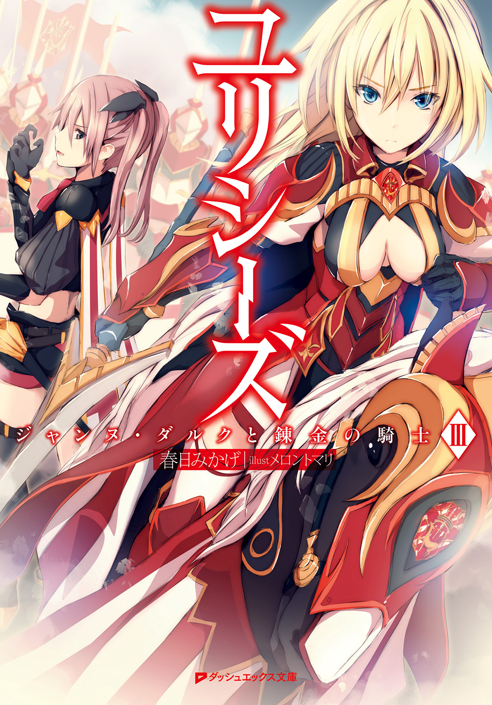

| ユリシーズ ジャンヌ・ダルクと錬金の騎士 III | |
| 春日みかげ | |

この本は縦書きでレイアウトされています。
また、ご覧になる機種により、表示の差が認められることがあります。
 ダッシュエックス文庫DIGITAL
ダッシュエックス文庫DIGITAL
ユリシーズ
ジャンヌ・ダルクと錬金の騎士 Ⅲ
春日みかげ
大洪水以前の世界――「キエンギ」の世界では、神々の寿命は長かった。彼らは数万年もの時間を生きた。その悠久の生涯の長さこそが、彼らのわずかな記憶を残している人間たちが、彼らを「神」――人間を越えた存在として認識させているのだろう。今のヨーロッパではほとんどの者が五十年も生きられない人間たちの命も、かつてはもっと長かった。「聖書」に登場するアダムとその系譜の人間たちは、神々とは比べるべくもない短命とはいえ、それでもなお百年を優に生きられた。次第に、気候の変動や環境の変化とともに、人間の命は短くなっていった――それは、人間という種族が求めた「進化」の速度との等価交換だったのだろうか。
人間たちは、過去に「失われた知識」があることを、「喪失した楽園」があることを、本能的に感じ取っていた。故に、古代異教の知識である錬金術に永遠の命を求め、賢者の石を探し、エリクシルの生成に没頭した。
彼ら人間のうち、ユリスの力を求める者たちの多くは、自らをただの異能力者ではなく、人間を越えた超越的な存在へと引き上げようと欲した。すなわち、神々の領域へ――海の彼方と地下と天上とに広がる、見えない異界へと開く門を、求め続けた。ユリスとしての高い資質は、ある意味において、異界を――神々の世界を感じ取る才能でもあったのだ。
円卓の騎士団を率いたかのアルチュール王も、そうだった。ヨーロッパを席巻した騎士道物語において、聖杯を直視した騎士は死ぬことになる、と信じられている。しかしそれはこの百年も生きられぬ儚い、そして醜く汚れた現世から、騎士の魂が異界へと――彼方にある理想郷アヴァロンへと引き上げられる「救済」を意味するのだ。騎士道の修行を完成させた騎士は、聖杯に選ばれ、生死を超越した存在、神々の一員となれる。
王国を失い傷ついたアルチュール王が地上で無様に死んだのではなく、妖精の女王モルガンの手によってアヴァロンへと引き上げられていったという伝説が成立したその時、アルチュール王は――現実の王自身はたとえカムランの戦いで負った怪我のために、モルガンに看取られながら死んでいったとしても――ブリテン島のブルトン人たち、そして全ヨーロッパの人間たちにとって、人間の王を超えた「神話」の一員となったのだ。
北欧のゲルマン人たちが、戦って死んだ英雄はヴァルキューレの導きによってヴァルハラへと誘われ、神話の世界で新たな生を得られると信じたように、ブルトン人たちもまた、アルチュール王と円卓の騎士団を単なる歴史上の人間たちとは見なさなかった。彼らは、神話を生きた英雄であり、時間と空間を越えた存在と見なされ、憧れられ、崇拝され続けた。ブリテン島を征服してノルマン王朝を打ち建てたノルマン貴族が、自らをアルチュール王の末裔であると主張したのも、ただ征服を正当化したかったからではなく、本当にそう信じたかったからなのだろう。
英仏百年戦争の最初の英雄、イングランドの皇太子――エドワード黒太子はその全身を黒い甲冑に包み、円卓の騎士団を再興すべく「ガーター騎士団」を結成して、ブリテン島からドーヴァー海峡を越えてフランスへと攻め入った。黒太子は、自分こそがアルチュール王の再来なのだと、アルチュール王の真の末裔なのだと、信じたかった。アルチュール王が為せなかった偉大な功績――ブリテン島からフランスへの逆征服――を成し遂げた時、黒太子は、人間から神話の英雄の高みへと昇ることができるはずだった。彼は、ノルマンディで、アキテーヌで、カステーリョで、戦い続け、生死を超越した神話の英雄になりたいというその夢を、求め続けた。
彼の願いが届いたのかどうかは、私にはわからない――ただ、黒太子の死後、世紀をまたいで登場したイングランドの若き英雄ヘンリー五世は、黒太子の遺志を引き継いでいた。彼は、膠着していた英仏戦争を再開し、そしてノルマンディに上陸し、ついにパリを陥落させた。
ヘンリー五世がパリの森で夜空を見上げながら、ひとつの異形の星を凝視していたことを。手を伸ばして摑もうとしていたことを、私は覚えている。
「パリ攻略など、余にとっては、偉大なりし神々へと――死後も永遠に語り継がれる英雄へと近づくためのほんの過程でしかない。あの星を、余は手に入れる。あの黒く輝く星こそが、黒太子殿下が生涯求め続けた星。ブリテン島から現れし伝説の英雄アルチュール王の宿星。『黒騎士の星』だ」
Estoire del Saint Graal
「リッシュモンはさぁ。いつか自分が騎士道を破らなければならなくなったら、どーするの？」
きらきらと輝くセーヌ川――パリでの記憶。
シャルロットがまだ姫太子ではなく、フィリップもまだブルゴーニュ公国を継いでいなかった、あの頃。
「意味のないことを言うなシャルロット。私は騎士の国ブルターニュに生まれた。騎士の中の騎士、祖国の英雄、デュ・ゲクランさまの遺志を継いで姫騎士になるんだ。デュ・ゲクランさまがそうしたように、宗主国であるフランスの防衛に生涯を捧げる。騎士道を破ることなど、ありえない」
「そっかなあ？ 騎士として強くなればなるほど、より強大な力を手に入れれば入れるほど、人の心ってぐらぐらとブレるものじゃないかな～。その気になればなんだって可能になる力を得れば、人は自分自身の感情に......自分自身の欲望に誘惑され続けることになると思うよ。円卓騎士団最強の騎士・ランスロは王妃との不倫にはしったじゃん」
「ら、ランスロは男だったから、悲劇が起きたのだ。しかし幸いにも私は女の子だ。王妃と不倫など、やりようがない。問題ない」
「くすん。シャルロット、あまりリッシュモンを困らせないで。今日はせっかく三人でお茶会を開いているんだから」
「あーそっかあ。パンがいまいち舌に合わないから、機嫌が悪いんだねリッシュモンは。ガレットでも焼いていればあ」
「が、ガレットの悪口は許さないぞ。小麦で焼いたパンよりも、そば粉を用いたガレットのほうが腹持ちがいいんだ。それに、お腹の具合も良くなる。乙女はみな、美容のためにガレットをいただくべきだ」
「相変わらずだねリッシュモンは。それじゃガレットを毎日学園で食べろという校則でも作ればぁ」
母親と深刻な不仲に陥っているシャルロットには、このパリ時代にはまだ、二人の兄がいた。長兄は王太子だった。父王が亡くなった場合、長兄がフランス王位を継承し、その長兄が死ねば次兄が継承する――シャルロットの悩みのほとんどは、まだ家庭内の問題に収まっていた。
後に二人の兄が急死し、自分にフランス王位継承権が回ってくることになる運命も。そのシャルロットの王位継承権を、実の母親が否定してイングランド王家にフランス王位を明け渡そうと画策する未来も。なにも、知らなかった。
そしてフィリップもまた、父親がシャルロットの家臣に暗殺されることになるという未来を、知らなかった。
あの日のお茶会では、だから、三人の話題の中心は――「恋」、だった。
騎士道物語では、それは、円卓騎士団を破滅へと追いやった危険なもの。王と騎士の主従関係に亀裂を入れて崩壊させてしまうほどの情熱に溢れたもの。
リッシュモンも、シャルロットも、まだ自分自身の人生にそのような危険に満ちたものが待ち受けているとは、実感できない。
妙にませたところのあるフィリップだけが、「恋はいいものだけれども、苦しみの根源でもあるのよ。くすん」と、すでに恋を知っているかのような言葉をつぶやいていた。
「......片思いだと、特に」
「えっ!? フィリップ。ちょっと待って～。待ちなさいよ～。あんた学園でお漏らしするようなガキんちょのくせに、恋なんてしてるわけ？ 信じられない!? 相手は誰？ アランソン？ あいつ、パリ中の女の子にもてるもんね～！」
「シャルロット。アランソンは私にとっては従弟だから恋愛の対象外だ。それにアランソンは、遠巻きに見ていれば、騎士道物語の主人公に見えなくもないが、いざ槍を交わしてみればまるで頼りない。しかしフィリップ......そうなのか。それは、恋に恋して、というやつだな」
「ち、違うわ！ アランソンはいいお友達だけれども、そういう目では見られないわ」
「じゃあ、うちのバタール？ ふーん。フィリップって女装っ子が好きだったんだ～。そうだよね。フィリップって、男性恐怖症のケがあるもんね。バタールなら、見た目は女の子だし、怖くないよね。でも、ざんねーん。バタールは女の子が苦手なんだよ～？ ほとんどぜんぶ、シャルのせいだけどぉ」
「ば、バタールはまるっきり女の子じゃない。将来、妙なことにならなければいいのだけれど。くすん、くすん」
「他に、フィリップが恋をしそうな男の子なんていたっけ？」とシャルロットが首を捻り、リッシュモンが「遠くからちらりと見ているだけの殿方ならば、いくらかはいるのではないだろうか。フィリップと距離が近い男の子となると......あとはモンモランシくらいしか思いつかないな」とシードル（林檎酒）を口に含みながらフィリップをまじまじと見つめた。
「だ、だがまさか、あのモンモランシに恋する乙女がいるとも思えないし......シャルロットが悪ふざけでモンモランシを誘惑するという展開はありえても、フィリップのお世話係を務めてきたモンモランシに限ってそれはありえない」
「ちょっとリッシュモン。シャルをなんだと思ってるのよう。モンモランシを誘惑だなんて。そんなことしないってば～」
「そうかな。モンモランシに突っかかるのがシャルロットの日課だし、モンモランシの困り顔を見るためならば冗談でやりかねない」
「シャルは身持ちが堅いんだよっ！ 男の子は嫌いなんだもの。それに、モンモランシはシャルの大きなおっぱいを見てもぜんぜん動じないんだよ。でも同性愛の趣味もなさそうだし、すっごく変わってるよね。あいつは救国の英雄か、究極のバカなのか、どっちかだよね」
「も、モンモランシはわたしの幼なじみであって、シャルロットの弟ではないぞ。すでにシャルロットには、バタールがいるだろうに」
「ええ？ バタールはだって、妹枠だからあ～」
「モンモランシを悪の道に引きずり込むのはやめてもらおう。モンモランシはまだまだ半人前なんだ、恋を知るなど早すぎる。も、もう少し、騎士としての実力をつけてもらわねば困る」
「そだね。リッシュモンの旦那さまに迎えるためには、騎士としての実力が要るよね～。なるほど。それでモンモランシを厳しく鍛えようとするんだね、リッシュモンは」
「だから、違うと言っているだろうにっ！」
「うう。結局二人とも、モンモランシが相手ならば恋に落ちても不自然じゃない、って思ってるのね。くすん」
いやっ不自然だっ！ とリッシュモンが頰を赤らめて抗議し、そして、シャルロットは無言でそんなフィリップの横顔を凝視していた――。
「案外、モンモランシがきっかけになって三人の友情は壊れちゃうのかもね。フランス王室。ブルターニュ公家。ブルゴーニュ公家。それぞれの姫が一人しかいないモンモランシを奪い合って、そして、フランスは空中分解したりしてね。アルチュール王の円卓騎士団のように」
特にフィリップは気が弱そうに見えて、こうと決めたら意外と意固地なところがあるし、リッシュモンは優等生だけれど――。
「本当にヨーロッパ最強の騎士になっちゃったら、ランスロみたいに、激しすぎる感情に引きずられていっちゃうかも」
そんなことはありえない！ シャルロットは悲観的すぎる！ どうしていつもいつも座をしらけさせようとするのだ、やめてくれっ！ とリッシュモンは手にしたグラスに注がれていたシードルを「こくり」と律儀に飲み干してから抗議した。
しかし、フィリップは、無言だった。
まだ自分自身の恋心に気づいていないリッシュモンには、フィリップがその時、どのような心境にあるのかを推察することができなかった。
リッシュモンが、自分がモンモランシを「異性」として強く意識していたことに気づいたのは、アザンクールの戦いで捕虜となり、敵国イングランドに......ロンドンに護送されて人質としての軟禁生活をはじめてからのことだった。
Ⅰ ジャルジョー
ジャンヌのオルレアン解放より七年前。「アザンクールの戦い」に敗れ、ロンドンへ護送された後――リッシュモンは、従弟のアランソンとは別々の館に隔離された。人質同士での交流を禁じられたのである。だがそれ以外の行動の自由にはほぼ制限がなかった。母親がイングランド王室に嫁いでいたリッシュモンは、若き英雄イングランド王ヘンリー五世の義理の妹にあたり、イングランド王室の一員でもあったからだ。
アザンクールの戦いで主力軍が壊滅し、多くの貴族が人質として囚われ、あるいは戦死した後、フランス王室そして王国の崩壊は、着実に進んでいた。
シャルロットやフィリップの身を案じても、ドーヴァー海峡の向こう側へと連れ去られてしまったリッシュモンにはできることはなかった。
ヘンリー五世は、リッシュモンをなんとしてもイングランドに仕える騎士にするつもりだった。彼は自らがフランスに不在の際は弟ベドフォード卿に指揮を委ねていたが、リッシュモンが自分に仕えるというのならばイングランド軍すべての指揮を任せてもよいとまで言った。
リッシュモンは「騎士道精神」と「囚われた母を救いたい、そのためならば英国に寝返っても構わないという感情」との間で、揺れ動いていた。
自分が倒れたらその時はフランス軍を頼む、と言い残してきた幼なじみのモンモランシの消息がまったく入ってこなくなったことも、リッシュモンを少なからず動揺させていた。
（モンモランシはフランスの騎士として戦ってくれないのか。私を救い出してはくれないのか......いったい、どこでなにをしているのだろう）
そんな揺れ動く想いを抑えながら図書館に籠もり、アルチュール王伝説にまつわる書物を漁っていた日のことだった。
「こんにちはっ、はじめましてっ！ わたし、サー・トマス・マロリーと申しますっ！ 英国におけるアーサー王研究の第一人者にして、ウェールズ人の姫騎士であります！ あなたが、アーサー王の転生と呼ばれているブルターニュのリッシュモン卿でありますねっ！ ほほお。てっきり赤毛かと思いきや、見事なブロンドであります！」
小柄な、赤毛の姫騎士。トマス・マロリー。
ブルトン人の英雄アルチュール王、英国式に呼べば「アーサー王」について狂おしいまでの情熱を持って研究調査を続けているのだという。
「我らウェールズ人にとってもアーサー王は英雄ですからねっ！ 今はウェールズはイングランドに併合されちゃいましたけれど、イングランド王室にアーサー王伝説まで横取りされるのはたまらないのであります！ 絶対に正しい形でアーサー王伝説を復元して、千年の未来にまで残す！ それがわたしの夢夢夢マイ・ドリーム！」
身体は小さいのに、声の大きな子だ、とリッシュモンは呆れた。ここは図書館なのだ。
「わたしは古代ブリテン島の先住民の子孫であるウェールズ人、あなたもまたブリテン島から大陸へと移住したブルトン人！ 先祖を同じくする同族です。そして、ともにイングランド王室にボコボコにされて、こーして不遇をかこっている者同士！ 仲良くいたしましょう！ あ、わたしは貧乏暇なしな下級騎士ですので、リッシュモンさまとは身分が違いすぎるかもしれませんが。そこはアーサー王愛好者同士のよしみということで！」
「わ、私は別に、アルチュール王の......イングランドでは、アーサー王か......愛好者ではない」
「ですが！ アーサー王さまによしみの深いブルターニュ公家の姫さまにして、その名もアルチュール・ド・リッシュモンさまであらせられます！ その上、幼い頃から評判の天才騎士！ 間違いなくアーサー王さまの転生だと、イングランド中が大騒ぎに。びびってますよ。あいつら、ブルターニュに復活したアーサー王によってイングランドが滅ぼされるという予言にマジでびびってますよ！ リッシュモンさまが成長してフランス軍を指揮するようになれば、その恐ろしさはあのデュ・ゲクランどころじゃない、絶対にやられる、と。いやあ痛快です！」
「......私はあくまでも私であって、アーサー王の転生者などではない。正直、迷惑している。私が人質生活から解放される気配がないのも、その厄介な予言のためなのだ。まったく。予言など迷信にすぎないのに」
いいえ。迷信ではなく、「運命」ですよ、とトマス・マロリーは断言していた。
「運命とは、『反復』です。わたしたち人間の歴史は――『反復』によって成り立っていると言っても過言ではありません。英雄の台頭。征服と統一。英雄の退場。帝国の離散と分裂。乱世。そして、さらなる英雄の台頭――アレキサンダー大王の昔から、ローマ帝国の勃興と分裂と衰退、そしてイングランドとフランスが相争う現在に至るまで！ 人間たちは、生と死によって役者を入れ替えながらも、ずっと同じことを繰り返しているのです。『歴史』と『物語』を調べれば調べるほど、驚くほどに人間の行動のパターン、運命の形は定められているのです」
ですから、わたしがアーサー王物語の正しい姿を復元しようとしている作業は、膨大な過去の文献から「人間の歴史とその運命の普遍的な基本パターン」を抽出しようとしている作業に他ならないのです。賢者の石を錬成しようとする錬金術師のようなものでしょうか、とトマスは言った。あまりにも早口で、聞き取りづらかった。
「錬金術師もまた、常に、過去を再現しようとしますよね。古代の世界に、失われた『超技術』があるのだと信じて、賢者の石を手に入れようと。過去にこそ巨大な力があり、その力を手に入れれば今の自分自身の運命を変えることができるのだと、彼らは信じています。わたしの仕事も、ある意味においては同じです――人間の英雄が辿る『運命』のパターンを知ることが、世界そのものの運命を見通す能力を得られることだと、信じております！ まあ......以上の演説は神秘主義者で不思議な話が大好きなベドフォード卿から予算を引き出すための後付けで、実はただアーサー王が好きなだけなんですけどね～！」
ヘンリー五世の弟ベドフォード卿は、戦争よりも聖遺物や神話の収集に凝っている一種の趣味人なのだという。兄があまりにも偉大すぎた反動なのかもしれない。それがヘンリー五世が軍事における片腕として義妹の自分を必要としている理由のひとつなのだろうか、とリッシュモンは思った。
「イングランド王室の金で、ウェールズ人の英雄伝説を保存復元しようとしているわけですから、わたしもワルですよね、くっくっく。アーサー王にまつわる聖遺物探しの予算も必ずや確保してみせますよ！ 聖杯とか魔剣エクスカリバーとか！ わたしの推理によれば、それらはブリテン島にはありませんね。聖杯はあっちゃこっちゃ移動させられているみたいで、なかなか尻尾を摑めませんが......多分ですが、エクスカリバーはリッシュモンさまの祖国にして故郷――ブルターニュに眠っていると思われます！」
「ブルターニュに？」
今はヘンリー五世に疎まれて「魔女」として幽閉されている母上も、エスカリボールの剣（エクスカリバー）はブルターニュにある、と仰っていた、とリッシュモンは気づいた。本当に、あるのだろうか。
「ベドフォード卿はエクスカリバーを対フランス戦争のための超兵器として利用できると信じているらしいですが、どーせあいつには使えませんよう。なにしろ伝説によればエクスカリバーの剣は『石に刺さっていて』、『有資格者でなければ抜けない』のです。有資格者とは、つまり、アーサー王の転生者、あるいはアーサー王の正統な後継者、アーサー王の血統に連なる者。今の世界でエクスカリバーを操ることができる者は、おそらくリッシュモンさま。あなただけです！ それこそが、例の予言の真の意味でしょう」
本当に魔剣が石に刺さっているのかどうかはさておき、あなたこそが魔剣の『力』を引き出す才能の持ち主だということです、ノルマン野郎のベドフォード卿には使いこなせないでしょうね、とトマスは被せてくる。
「血筋だけが根拠ならば、私以外にも古代ブルトン人の血を強く残している者が大勢いるはずだが」
「血筋はあくまでも要素のひとつです。魔剣に選ばれるには、いろいろな要素が。あなたがブルターニュ公国の姫であること、そしてあなたのお母上がイングランドに囚われていること、あなたがアーサー王の転生であるという『予言』そのものも......すべてが、定められたひとつの『運命』へと向かうための要素だとは思えませんか？ いずれあなたは魔剣を手に入れて、そして、その『力』を用いることになると思います」
今はもうマスケット銃や大砲が戦場で用いられる時代に入っているというのに、古代の剣がどれほどの力を持つというのだ、とリッシュモンは思わずトマスに突っかかっていた。そのような迷信じみた神話の「力」に頼るようでは、戦争に勝つことなどできない。真に必要なものは軍制の改革なのだ。かつてデュ・ゲクランを中心としてフランス王室は「常備軍」を編制した。あの常備軍こそが、イングランドとフランスの戦争を終わらせるために真に必要な「構造」なのだ。しかし莫大な予算を必要とする「常備軍」の維持は、「税制」の改革と表裏一体であり、フランス王室はイングランドにあと一歩で勝利できるというところで挫折した。常備軍維持のために苛烈化した税制に反対した民衆が、蜂起したためだった。
「魔剣など、人々を煽動し鼓舞するための方便としては利用できても、『兵器』としては役に立たぬと私は思う。だがトマス。少なくともブルターニュの騎士たちは、私が伝説の魔剣エスカリボールを掲げれば勇気を奮い起こせるだろう」
「そしてイングランド兵たちは、おしっこを漏らして逃げ出しますよ。予言が現実となる時が来た、と恐れて。うぷぷ」
魔剣を掲げてイングランド軍を蹴散らした時、あなたがフランスに忠義を尽くし続けるか、それともブルターニュを完全な独立国となしてフランスから独り立ちする道を選ぶか、それはわたしにもわかりません。魔剣を手にしたあなた自身が選ぶことです、とトマスは笑った。まるで予言者のような笑みだ、とリッシュモンは思った。
「ただしアーサー王伝説のように、騎士ランスロットとアーサー王とが王妃を巡って仲違いして、なにもかもが台無しになった時点で魔剣を投げ捨てて終わりという結末は勘弁してくださいね。いくら運命は反復するといっても、それではがっかりです。せっかくわたしがこんなにもアーサー王の伝説を研究して『運命』のパターンを見定めようとしていますのに。伝説は、警告しています。騎士たる者は、不倫に......恋愛に、気をつけてください。愛と忠義とは、女心と祖国とは、時に相容れぬものです」
愛......アムール、か。
私とシャルロットとが決別することがあるとすれば、その原因はただひとつだろう、それは「宗主国フランスとブルターニュ公国の関係」ではなく、私個人の感情の問題のほうだろう、とリッシュモンは思った。
私の心はもう、子供時代のようなまっすぐで白いものではなくなっている、私が抱いているモンモランシへの感情は弟分への素朴な家族愛だけでなく......もっと熱く、暗く、そしてどろどろとしていると、気づいてしまった。毎晩。囚われたこのロンドンの一室でモンモランシが救いに来てくれるという夢を見て目覚めるたびに――否応なしに、感じさせられるのだ。私自身の身体が、乙女として目覚めつつあるということに。
（もっとも、シャルロットにはモンモランシへの恋心などない、と思いたいが）
騎士道は常に、男女のアムールという不安定な要素によって脅かされている。ランスロの裏切りと破滅の物語は、決して、ただの「おとぎ話」ではないのだ。トマスが言うように、「史実」に基づいている物語なのかもしれない......と、ようやくリッシュモンは理解していた。
「リッシュモンさま。魔剣を手に入れましたら、ぜひともこのトマスにその『力』を見せてくださいねっ！ こればかりは実際にぶっ放してみないとわかりませんからね！ その結果ブリテン島が吹っ飛んでも、魔剣の秘密が明らかになる瞬間をこの目で見届けられればわたしはいっこうに構いませんよ！ あ、もちろんウェールズは残しておいていただければ！」
別れ際――リッシュモンは、トマスから「魔剣が必要になりましたら、この袋を開いてくださいませ。もちろん本当は自分で手に入れたいんですが、『有資格者』でなければどうせ無理な話ですからね」と小袋を渡されたのだった。
アルチュール王伝説を追いかけ続ける姫騎士トマスとの出会いもまた、「運命」なのかもしれない。
（私は予言など信じないが、祖国ブルターニュはまもなくイングランドとフランスとの間で立場を決めなければならない時が来る......そんな時に、トマスと出会い、魔剣の在り処を示唆しているのであろう小袋を授けられたのも......なにかを暗示しているような気がする）
だが、その「暗示」は、決して明るい運命へとは向かっていない。むしろ、リッシュモン自身にアルチュール王の破滅の伝説を「反復」させようとする意志のようなものを、感じずにはいられなかった。
（私が否定し続けても、イングランド王家が私をアルチュール王の転生者として恐れる限り、運命は予言の方向へと引きずられていくのだろう）
図書館から、ヘンリー五世より与えられた館へと戻る途中。
リッシュモンは、イングランド軍の騎士たちとすれ違っていた。
一人は、歴戦の勇者にして壮年の男騎士、ジョン・タルボット卿。
フランスで、ウェールズで、アイルランドで幾多の功績を挙げ、英仏戦争――「百年戦争」前期に、当時のイングランド国王エドワード三世の承認のもと、その嫡子エドワード黒太子が結成した騎士団「ガーター騎士団」からいずれ勲章を授けられると噂されている名将だった。実直な叩き上げで、政争には首を突っ込まない、分をわきまえた戦士である。ガーター騎士団はその名の通り、貴婦人のガーターを名誉ある勲章として自らの身体に飾り付けるという一見すると奇矯な伝統を持つ。だが、ガーターを聖遺物の如く崇めるその伝統は「アーサー王伝説」の騎士道精神から生まれたものであった。エドワード三世も黒太子も、征服王朝であるイングランド王家にブリテン島支配の正統性を与えてくれる「神話」としてのアーサー王伝説に取りつかれていたのである。
「おお、リッチモンド卿。新しい館での暮らしには慣れましたかな？ このタルボットが、陰ながらリッチモンド卿をお守りいたしております。不埒な輩は許しませんぞ」
「ご厚意はありがたいが、タルボット卿。私はリッシュモンだ、リッチモンドではない」
自分に好意を抱いてくれているタルボットにこのような口の利き方をしていては、イングランドに敵を作り続けることになる。わかってはいても、リッシュモンはこのような自分の性格を変えることができなかった。
「心はまだフランスに、というわけですな。お若いが、あなたは評判通りの武人にして騎士だ。いずれ、ともに戦える時が来ればよいですな」
「その時は、敵同士として戦うかもしれません」
「わしは何者をも恐れませんが、リッシュモン卿。あなただけは恐れますぞ。むろん、例の予言など信じてはおりません。ですが、アザンクールの戦いも、あなたがフランス軍の総指揮官であれば、結果は逆になっておったかもしれませんからな」
「なぜ、そう言えるのです？ 私はアザンクールでは、なにも出来ませんでした」
「指揮官が愚かだったからです。あなたの兄上であるブルターニュ公が遅参したことも、ブルゴーニュ公が援軍を送らなかったことも、なにもかもがフランス軍にとっては不運でした。しかしなによりも、指揮官の力量差が出たのです。ヘンリー五世陛下と対等に戦える指揮官は、フランスにはあなたしかおりませんでしたからな」
しかしリッシュモン卿。すでに陛下はノルマンディを征服し、ルーアンを陥落させましたぞ。忠誠を誓うべき宗主国であるフランスそのものが、まもなくイングランドに併合されましょう、とタルボットは語った。兄たちの急死によって王位継承権を得てしまったシャルロットは、実の母イザボーに裏切られてパリを追われ、南仏に引きこもってしまっているという。
「リッシュモン卿、あなたがフランス軍から不在となったことが、英仏両国の運命を決定づけたと言ってもいい。これより先は、わしらとともに更なる未来の高みを目指しましょうぞ――」
「更なる未来？」
「英仏戦争が終われば、十字軍の復活ですよ。聖地を奪回するのです。神聖ローマ帝国とわが国との間で、すでに話はついております。イングランドと帝国とは戦いませぬ。東へと向かうのです。帝国は今、フス戦争に足を取られておりますが、陛下とその義妹ぎみであるあなたがともに揃えば、エルサレムの再奪取は可能ですぞ」
リッシュモンは、聖地奪回などに興味はなかった。彼女にとっての聖地とは、祖国ブルターニュに他ならない。しかし確かに、一時は混乱を極めていたオスマン帝国は急激に国力を回復しており、東ローマ帝国の首都コンスタンティノープルを陥落させようと動きはじめている。
一方で、東方への本格的な十字軍遠征は、前世紀末のニコポリス十字軍が最後となっていた。英仏戦争の激化と予想外の長期化、そしてボヘミアで勃発したフス派異端とカトリックとの宗教戦争――フス戦争によって、ヨーロッパは今や対オスマン戦や聖地奪回どころではなくなっている。
「タルボット卿。その女は敵国の人質よ！ そもそも、なにをもってヨーロッパ最高の騎士になることを約束されている姫騎士だとか、偉大なるアーサー王の転生だの再来だのとみんなが騒いでいるのか、私にはまったく理解できないわ！ ふん、だ。戦歴などないに等しい雑魚騎士のくせに――」
タルボットと馬を並べて進んでいたイングランド軍の誇る姫騎士ファストルフが、不快そうに鼻を鳴らした。
ジョン・ファストルフは、栄光あるガーター騎士団の一員である。
まるで子供のように見える、小柄な少女騎士だ。
その脚には、ガーター騎士団の勲章であるガーターをつけている。
「翻って、私はアザンクールの戦いで様々な手柄を立てたのよ。ふふ。このリッチモンドを捕らえたのも、この私、ファストルフさまなんだもの！ その功績によってガーター騎士団に叙勲されたのよ。陛下も、このようなブルトン人の女を一族として優遇する必要などないはずなのに......ブルターニュから来た母親のほうは魔女として監禁しているというのに、なぜ娘のほうにはこれほど甘いのかしら？」
勝ち気そうな表情、激しく燃える瞳。容赦のない言葉と、高い自負心。リッシュモンと同質の性格を持つ姫騎士らしかった。
「どうして勝者であるこのファストルフよりも、負け犬のあなたのほうがイングランドでちやほやされるわけ？ なに？ なんの補正が働いているの？ ブルターニュ公国のお姫さまって、そんなに偉いの？ ほんっとに忌々しいんだから！ 陛下はあなたの魔力に魅入られているんだわ、ぜったーいにそうに違いないんだから！ 覚えてなさい？ あなたが陛下を裏切ったら、その時は問答無用で斬り捨てちゃうんだからね！ 負け犬！ へっぽこ！ ぽんこつ！ バカ、バーカ！」
......いや、私はこんなに幼稚ではないし、この品のない小娘のようには育ちが悪くない。それに私のほうがずっと背が高いし......胸も......不本意ながら膨らんできた、ファストルフは身長のほうも胸のほうもまるっきり子供だ。とリッシュモンは思い直した。
「アザンクールでは私はヘンリー五世に負けたのであって、お前に負けたのではない。それ以上私を罵るのならば、決闘を申し込むぞ」
「いいわよ！ 決闘！ 望むところだわ！ あんたがおっ死ねば、陛下もあんたの魔力から解放されて、このファストルフさまの魅力に気づいてくれるはずよ！」
「ま、待て、両者とも待て。ファストルフ！ リッシュモン卿は陛下の義妹ぎみだぞ、無礼を働いてはならぬ！ リッシュモン卿もどうか耐えていただきたい。ファストルフのような子供の挑発にいちいち激高しているようでは、ロンドンではいくら命があっても足りなくなりますぞ。こやつは女だからまだいいですが、荒くれ者の男騎士どもに目を付けられれば、危険です」
「だってタルボット！ あんたがこれだけ親切にしてやってるのに、こいつってば私の名前はリッチモンドではない、とか偉そうなんだもの！」
「リッシュモン卿に悪気はないのだ。このお方は、生まれながらに高貴なお方なのだ」
「それってファストルフさまのことをノーフォーク生まれの成り上がりの田舎者だと言いたいわけぇ、タルボット!?」
「ええい。そういうことではない！」
「それじゃなに。チビ娘は高貴じゃないと？ ファストルフさまはまだ成長期なの。い、いつか背が伸びるんだから！」
「そんなことも言っておらぬ！ そなたの騎士としての腕前は、わしも陛下も認めておる！ だからこそのガーター騎士団叙勲であろうが！」
「あんたはガーター騎士団入りしなくていいわよ。おっさんがガーターを脚につけても気持ち悪いだけだからね」
「が、ガーター騎士団とはいっても、ガーターを脚に飾るのは姫騎士の場合だけじゃ。男の騎士はそういう格好はせぬわ」
タルボットが懸命に二人の姫騎士の間に割って入って、引きはがした。決闘は、回避された。ファストルフは国王ヘンリー五世の寵愛を奪い合っているつもりらしいが、リッシュモンにはそんなつもりはまったくないのだ。
（私はフランスでもイングランドでも、どうしてすぐに敵を作ってしまうのだろうか。今回は、タルボット卿に無礼な言動を働いたことがまずかったらしい。私はどうして、こうなのだろう。もっと、耐えることを覚えねばならない）
しかしこの後、紆余曲折を経てフランスへと舞い戻り対イングランド戦に参戦したリッシュモンは結局、宰相ラ・トレムイユと対立して宮廷を追われるのである。フランスに常備軍を復活させるどころか、フランス宮廷から反乱者扱いされることになってしまった――。
イングランドを裏切り、フランスを追われたリッシュモンは今、自らの生きるべき場所を見失っていた。ブルターニュの居城に引き籠もり、そして、今夜も空を見上げていた――月の光を浴びたかのように、うっすらと黒い輝きを放つ、奇妙な形の星を、リッシュモンは見ていた。
不思議だ。幼い頃からずっと、ブルターニュの夜空を眺めていたのに。こんな星は見たことがない、と怪しみながら。
「......あの星は、なんだ？ 球体ではない星などが、あるのか。一瞬で夜空を横切っていく流れ星でもない。なぜあの星は、黒く光っている？」
※
ロワール川を渡り、敵中を一路北進し、ランス大聖堂でシャルロットを戴冠させる――モンモランシの献策による「ロワール作戦」を発動したフランス軍は、奪回したばかりのオルレアンに再び集結していた。聖女こと《乙女》ジャンヌの奇跡によって解放されたオルレアンの市民たちはフランス軍に次々と資金を届け、あるいは志願兵として参戦し、今やフランス軍は三千に達しようとしていた。財政破綻していたフランス王室に、追い風が吹いていた。
しかし、ラ・トレムイユを中心とした文官たちがなおも「ランスは遠すぎます。パリから必ずイングランド軍の救援部隊がオルレアンへ向かってくることでしょう。それに、オルレアンこそ奪回したとはいえ、このロワール川の上流も下流もイングランド軍が占領したままなのです。ランスへ全軍で向かえば、補給路を寸断されます。ロワール川一帯の敵拠点掃討を行わないうちに遠征するのは無謀すぎます」と抵抗し、出立に手間取っていた――。
常に「負け戦」を前提に動いているラ・トレムイユの危惧も、根拠がないものとは言えない。むろん、ラ・トレムイユとしてはロワール川周囲を掃討させることで時間を稼ぎ、ランス遠征をこのまま中断させてしまいたいのであるが。
オルレアンを挟むように、ロワール川の東西の拠点はなおもイングランド軍に占拠されている。
ロワール川の上流にあるジャルジョー。
下流にあるボージャンシーと、マン。
これらの拠点には、オルレアンから敗走したイングランド軍が逃げ込み、防備を固めていた。今は静かにしているが、フランス軍が北上すればオルレアンへ再び攻め寄せてくるかもしれなかった。それに、パリ大本営でイングランド軍を指揮するベドフォード公が、イングランド最強を誇る「ガーター騎士団」をオルレアン奪回のために戦線に投入するという噂でオルレアンの町は持ちきりであった。
「ジャンヌ、モンモランシ。ジャルジョーなんてオルレアンに比べれば小さな町ですよう。天の時は今やフランスにあり。お茶の子ですよ！ ボクに任せてくださいっ！」
とバタールが勇躍して義勇兵を引き連れ、ジャルジョー攻略へと向かっていた。
バタールは以前、イングランドの姫騎士ファストルフ率いるガーター騎士団を相手に「ニシンの戦い」なる珍妙な名前で呼ばれる会戦を行い、大敗したことがある。今回はその雪辱を果たすという意気込みだったらしい。
その日。
オルレアンの宿屋の一室に籠もってベッドの上に長い足を伸ばしていたいたモンモランシは、「バタールからの勝利宣言が届かないな......すぐに片づくと言っていたが、ずいぶん遅れている」と大あくびをしながら、オルレアン解放戦の時とは別人のような間の抜けた表情で惚けていた。
「ちょっとモンモランシ？ ラ・トレムイユの思う壺にあなたが嵌まってどうするのよ、この抜け作！ あなたはロワール作戦の総司令官でしょ。やる気を出しなさい元帥！」
羽つき妖精のアスタロトが、狭い室内をぱたぱたと飛び回りながらきぃきぃと吼えたが、モンモランシは「基本的に部屋に引き籠もってグリモワールを読みふけるのが俺本来の姿だからな」とあくびをやめなかった。
「軍の細々とした指揮は、すべてアランソンに任せてある。あいつは俺と違って生真面目だから、実務を的確にこなしてくれる。これでいいのさ。俺がやるよりも三倍は速く、三倍は確実だ。俺には目の前の地道な仕事をこなすよりも、戦場の大局を見て大雑把な方針を決めるのが似合ってる」
「人間って、目の前の差し迫った危機に対応する時は本気を出すくせに、ちょっと油断するとたちまち堕落してしまう生き物なんだから。とりわけ、あなたとシャルロットはそうよ！」
「そう焦るなアスタロト。ランスまでの厳しい道のりをどう乗り切るかは、寝転びながらずっと考えている。俺は、作戦会議室で野郎どもの顔を見ながら考えるよりも、狭い部屋で寝ているほうが閃くんだ。バタールがジャルジョーを攻略したら、俺たち本隊も動くさ」
「東方のことわざに、大賢は大愚に似たりという言葉があるけれど......あなたの場合は、大愚は大賢に似たり、ね」
アスタロトはため息をつきながら、モンモランシの手のひらの上に舞い降りて、自分も一休みしようとした......アスタロトも口では「働きなさいよ抜け作が」と言いながら、モンモランシの手のひらの上でお昼寝することを日課にしている。
しかし――。
「捕まえたっ！ モンモラシの第二夫人、ラ・イルさまの花嫁修業・第一段！ それは――お料理！ モンモランシ、今から『羽つき妖精さんの鉄板焼き』を作ってやるからな！ お嬢さま育ちの正妻さんは料理なんてできねーだろ？ レ家の家事全般は、あたしにお任せ！」
そんなアスタロトを食材にしようとして「むんず」と問答無用で捕まえた姫騎士......厳密に言えば傭兵隊長......がいた。賢者の石のひとつ「聖剣ジョワユーズ」の副作用で妖精さんが美味しそうな食べ物に見えるようになってしまったラ・イルだった。
ラ・イルが鎧を外して、村娘姿に扮しているのは、宿屋に滞在している間ずっと「厨房係」を務めているかららしい。
「ちょっとラ・イル？ やめなさいよーっ！ 何度言ったらわかるの。わたしは食べ物じゃないのよ！」
「ご、ごめん。そうだよな。一匹だけじゃ寂しいよな。副菜としてフェイ族の子供たちのソテーも添えてあげるから、それで迷わず昇天してくれ！ 悪い！」
「ラ・イル!? あなたは、副作用の顕現が早すぎる！ ジャンヌやモンモランシは賢者の石の力を解き放っている時しか石の影響を受けていなかったのに！ たった一度ユリスになったくらいで、妖精愛を忘れて食欲に囚われないでちょうだい！」
「アスタロト。きっとあたしの心は、長い間女傭兵と恐れられて妖精さんへのアムールがまるで伝わらなかったばかりに、アムールと食欲とが石の副作用で堅く融合してしまったんだ。でも、だいじょうぶ！ 殿方を捕まえるには、まず胃袋からって言うだろっ？ 妖精さんを美味しく調理すれば、モンモランシだってあたしとの結婚を認めてくれるさ！」
「なにを言っているのかさっぱりわからないのよ！ 助けて、助けてモンモランシ！」
モンモランシは、ラ・イルに「俺は形式だけとはいえもう妻帯者だ。しかも新婚だ。ともに戦ってきた親友のお前を第二夫人や愛妾のような立場にするつもりはないんだって」と何度も訴えたが、「今さらなにを言っているんだモンモランシ。ベーゼしたんだから責任を取れよ！ さもなくばアスタロトを美味しく調理するぞ！ 上級貴族はカトリックの一夫一妻制度を事実上無視して妻を何人も娶るんだろう？ あたしは貞操観念は強いけれども独占欲は薄いんだ、南国育ちの陽気な第二夫人としてお前のハーレムを仕切ってやるよ！」とラ・イルがますますやる気を出すので、打つ手がない。
もしも「ベーゼといったって、エリクシルをやりとりしただけだろう。ジャンヌとはしょっちゅうやっている」などと言い訳をすれば、ラ・イルはユリスの力を解き放って暴れかねない。ラ・イルが賢者の石から手に入れた能力「必中」がマスケット銃と組み合わされたことによって、ラ・イルは「自動追尾銃撃」とでも言うべき文字通り必殺のスキルを人類史上おそらくはじめて身につけていた。ラ・イルがその気になれば、モンモランシは問答無用で殺されるだろうし、ユリスの力を持っているジャンヌですら危ない。驚異的な再生能力を誇るユリスとて、脳だけは再生できないのだ。
「とにかく。アスタロトを調理するのだけは、やめてくれラ・イル。いいから話し合おう。俺はお前を死なせたくなかったからエリクシルを与えたのであって、お前の貞操を奪ってお前の人生を俺に縛り付けるつもりはなかったんだ。もちろん、お前がベーゼを奪われたらその相手と添い遂げなければならないという信念を持っていることも承知の上だったが、そこはその、なんとかして納得してもらえないか」
「でもよ、モンモランシ？ たとえあたしが『あのベーゼはベーゼのうちに数えない』と認めても、ザントライユには理解できないぜ？ あいつは単純で粗野だから、モンモランシがあたしの唇を奪うだけ奪って逃げ出したと思い込んで、モンモランシを襲撃するかもしれないぞ」
「そのザントライユから聞いたぜ。ラ・イルは、自分よりも強い男としか結婚しない、と。お前を嫁に迎えるためには、お前と戦って倒さないといけないんだろう？」
「問題ない。だって、本気を出せばモンモランシが人類最強だと証明されただろう？ モンモランシは、あの、悪魔だか神々だかを天から召喚して、人間たちを皆殺しにしてしまえる魔力を持っているんだぜ？ 解き放ってしまえば、イングランド軍どころかフランス軍も、フランスの民もみんな殺されてしまうから、戦争には使えない力だけれどもな。あたしが理想としている『強さ』とはちょっと違うが、純粋に『強さ』だけを計れば、人類最強だろう？」
「いや、そんなことはない。俺が賢者の石を飲み込んで暴走しても、お前が『必中』の力を使って俺の頭をブチ抜けば、お前の勝ちだ。あの得体の知れない古代の神々は、お前が放つ弾丸を異様に恐れていた」
「まあ、直接戦うことはないのだから、どちらが強いか議論しても意味はない、モンモランシ。オルレアン解放戦では、お互いにお互いの命を救い合ったということで、貸し借りはなしだ。ただし、ベーゼは別だからな！」
「いいからお前はこれ以上目立つな。シャルロットが聖剣を盗まれたと怒ってるぜ。リッシュモンに続いてお前まで軍から追い出されたら、ロワール作戦は開始前に頓挫する」
「聖剣を使ってもいいと言っていただろうに。あの姫はほんと、ケチ臭いなぁ。でも、あの姫はさ、実は聖剣になんて興味ないみたいだ。本心では、あたしにモンモランシを取られたくないんだ」
「シャルロットが？ まさか。あいつは男嫌いだ」
「はあ。お前は本当に鈍いなぁ、モンモランシ。お前は今やフランスではアランソン、バタールと並ぶ人気者なんだぞ。フランス一の大富豪にして、戦場でも華やかなジル・ド・レ騎士団を率いる伊達男だと言われているのに。それなのに新妻を故郷に放置して顧みないものだから、男色家だとか、子供にしか興味がないとか、あれこれ噂されているんだぜ」
「言わせておけ。悪魔を飼っている黒錬金術師として狩られるよりは、ましだ」
「いやぁ、そういうところモンモランシらしいな。だが、幼いジャンヌとベーゼを交わしている姿を見られてはダメだ。それこそ、身の破滅だぜ。厄介な疑惑を逃れるために、急いで年頃の乙女を隣に侍らせて身を固めてみせたほうがいいんだ。つまり、この、あたしと！ 見るからに嫁ぎ頃、熟れ頃の乙女だろう？」
「い、異端審問軍団はもう追ってこない。だいじょうぶさ」
「おいおい。お前まさか、ジャンヌの薄い胸じゃないとときめかないんじゃないだろうな？ そういう性癖は破滅に繫がるぞ、あたしが矯正してやる！」
「やめろ、胸を押しつけるなっ！ 重い、骨折する！ いったいなにを食ったらこんなになるんだ、ラ・イル？」
「るせぇ。てめーを、膨らんだ胸でなければときめかない体質に改造してやる。これも第二夫人の務めだ！」
「......やめてくれ、頼む。そういう教師役は、ザントライユで十分だ！」
「ザントライユになにを教わろうっていうんだよ？ まさか......男同士の世界にでも旅立つつもりか、モンモランシ～!?」
いいからわたしを救出しなさいモンモランシ！ とラ・イルに握られたアスタロトが悲鳴をあげながら、じたばたと暴れる。
この時、ラ・イルがモンモランシの部屋を中央部分で仕切っていたカーテンに手を引っかけて、カーテンを落とした。
たらいのような小さな浴槽に腰まで浸かっているジャンヌが、そこにいた。町暮らしの野良フェイたちと一緒に、入浴していた。ドンレミ村ではいつも泉で水浴びしていたジャンヌは、「入浴」にすごくこだわっているのだ。もちろん、服は着ていない。
「わっ、びっくりしたぁ!? ラ・イルもお風呂入る？」
「じゃじゃじゃジャンヌっ!? もももモンモランシが寝ているすぐ横で入浴なんて、しちゃダメだろっ!? そういうことは男がいないところでだなっ......」
「あーっ！ 羽つきさんがまた、ラ・イルに食べられそうになっている～！ 妖精さんたち、ラ・イルをつついて！ アスタロトを解放しないと！」
「「「ラ・イルは恐ろしいけれど、ジャンヌのために頑張るでちゅう！」」」
「それに、ラ・イル？ どうしてモンモランシにその牛みたいなでかいおっぱいを押しつけてるわけ？ なに、なんのつもり？ 胸が慎ましいさくらんぼうのわたしに対する挑戦状だね、それって！」
「「「かわいそうでちゅう、ジャンヌ！ ジャンヌに喧嘩を売ったラ・イルを殲滅するでちゅう！ 勝ち目はないでちゅが、全員、突撃！ ぎょくさーい！」」」
シャルロットに呼ばれて謁見した後、町暮らしの野良フェイたちをぞろぞろと引き連れて宿屋へ戻ってくるなり、ジャンヌは早速「お風呂に入る」と言いだして実際に服をさっさと脱いでお湯に入ってしまった。モンモランシは、仕方なくカーテンで部屋を仕切って、ジャンヌの裸身を見ないように努力していたのだった。
ジャンヌは今や、救国の英雄、聖女、《乙女》とオルレアン市民たちに生きた女神のごとく崇められているのだが、当人はよくわかっていない。ドンレミ村で羊飼いをしていた頃の素朴な少女のままだった。今日は、シャルロットのもとに遊びに行く際に、オルレアンの市民権（？）を得た野良フェイを大量に引き連れていったらしい。それで汗をかいたのだとか。いったいなにをして遊んでいるんだろう、とモンモランシは思った。
「ああ......ジャンヌと妖精さんたちにとって、あたしはもう、完全な敵なんだな......捕食生物扱いなんだな......ちくしょう！ これも、賢者の石のせいだ。モンモランシ、どうしてくれるんだよっ！」
「いいからラ・イル、俺から離れろ。あと、いい加減にアスタロトを手放せよ」
「握ってるとかわいくて、つい。はああ......妖精ってどうしてこんなにかわいいんだろう。ぎゅっと握り潰すと、ぱちんと潰れてしまいそうな儚さが、なんとも言えず乙女心をくすぐるんだよな」
「ラ・イル、やめてええええええ！ 握り潰さないでーっ！」
「放して、放して、ラ・イル！ アスタロトを食べちゃ、ダメー！ モンモランシと結婚するのも、ダメだからね！ モンモランシはずっとずっと、わたしと一緒なんだよっ！」
「「「我ら妖精族の女王、伝説の羽つき妖精さまを食べてはいけないでちゅう」」」
ラ・イルは「......ちぇっ。天使のように純真なジャンヌが現れると、一気に恋とか愛とか結婚といった生々しい話ができなくなっちゃうんだよなあ。なんだか、自分一人が汚れてしまったかのように思えてきて......でもモンモランシはもうフランスを代表する名士なんだから、絶対にこのままではいけないって」と涙目になりながら、アスタロトをやっと解放した。
ユリスとなったジャンヌは不老の身体を持っている。つまり、幼い姿のまま長い時を生きることになったのだ。その上、ユリスの力を用いるとたちまち体内のエリクシルが涸れてしまうという体質なので、「エリクシル生産器」となっているモンモランシと離れられない。ラ・イルもまた不老にはなったが、ラ・イルはすでに乙女になっているし、体内のエリクシルが涸れるのは数年先か数十年先の話だ。
「とにかくジャンヌ、殿方の前で服を脱いではダメだから。ほら、着るんだ」
「えー？ モンモランシは別だから、平気だよ？」
「いいから着ろっ！ モンモランシが妙な道に目覚めたらまずいんだってば！」
「うー。ま、いっかあ。ずっと裸だと、風邪ひいちゃうもんね」
ジャンヌが服を着終えたところに、もう一人の来客が訪れていた。
「ごめんなさあああああい！ ジャルジョーの攻略に失敗して、おめおめと敗走してきましたあああ！ なんだかロワール川が増水していて、流れが急すぎて渡河できなかったんですううう！ ボクはもう......ダメです！ 『ニシンの戦い』で間抜けな敗戦をやらかしたのみならず、ジャンヌの栄光の戦歴に泥を塗ってしまいました、罰を与えてくださいモンモランシ！」
男の娘騎士の、バタールだった。
男嫌いをこじらせていた従姉のシャルロットの暴虐な命令によって、幼い頃から女装されている哀れな少年である、が、もともと愛らしい美少年なので、女装が板についていて、モンモランシですら思わずぐらりとときめいてしまうので笑えない。
「こらっバタール！ てめええええ、なに負けて帰ってきやがったんだああああ！ ロワール作戦がいつまでもはじまらないじゃねーかよ！」
「ひい。ラ・イルが怒った!? あわわ～!?」
「怒るに決まってるだろっ！ なんでそんなに弱いんだよ、てめえは！ くそっ、あたし自らがジャルジョーを陥落させるべきだった！ 花嫁修業のために厨房で料理の練習にいそしんでいたばかりに、勝機が失われていく......うう......傭兵隊長と花嫁修業って、やっぱり、両立しないのか......」
「怒るなラ・イル。攻略失敗はロワール川の増水が原因だ、ジャルジョーはいずれ落ちる。だが問題はロワール川下流に陣取っているマンとボージャンシーだな......ベドフォード公がガーター騎士団を送り込んでくるとなると、うかつにランスへは出立できない」
ガーター騎士団にはボクは詳しいですから、お役に立てます、でもあいつらは本当に強いんですよう、とバタールがモンモランシの背中に隠れながら涙声で叫んでいた。
「ファストルフというジャンヌよりも小柄な姫騎士が、ガーター騎士団を率いています。オルレアン包囲軍の残党を率いているタルボット卿と合流させると、強敵になりますよう」
今、タルボットはベドフォード公の命令でパリ近郊にまで撤兵しているはずだ。あいつがガーター騎士団と合流して、オルレアンへ再び攻め寄せてくるとなると厄介だな、とモンモランシはつぶやいていた。
「ガーター騎士団とタルボットが南下してくる前に、ジャルジョー、マン、ボージャンシーの三つの拠点を陥落させなければ、ロワール作戦は潰されるぞ。タルボットは再びロワール川の東西からオルレアンを締め上げて、補給路を断つつもりだ」
まずは上流のジャルジョーを落とそうモンモランシ。あたしが先頭に立って軍を指揮する、と傭兵隊長の表情に戻ったラ・イルが名乗りを上げていた。
「残念だが、花嫁修業はその後だ、モンモランシ」
アランソンを呼べ。シャルロットの部屋ですぐに軍議だ、と声をあげながらモンモランシがベッドから跳ね起きていた。
「あら。やっと目を覚ましたのね、モンモランシ。追い詰められないとやる気を出さないのが、あなたの悪いところだわ」
モンモランシの指に頰ずりしながら、アスタロトが笑った。
「あー、そうだモンモランシ！ 軍議の前に、エリクシルちょうだい！ もう切れてきちゃったよう！ シャルロットの前でベーゼすると、なんだか不機嫌になられちゃうから、今ここでっ！」
「えっ？ い、ここでは無理だ。だって、ラ・イルが『やっぱり子供じゃないと愛せないのか、お前は。どうしてこんな性癖に目覚めちまったんだ！』と青ざめるんだぜ？」
「そう言わずに、お願い～！」
「どうしてそう見境がないんだ？ 第三者の視線がないところで補給しなきゃダメだジャンヌ。モンモランシも、もっと慎重に！ オルレアン解放前とは立場が違うんだからな。二人揃って破滅したいのか？ アスタロト。うまくエリクシルを受け渡す方法を考えてくれよ。あたしがモンモランシに求婚する羽目になったのも、そもそもベーゼ以外に受け渡す方法がなかったから、だからなモンモラシ！」
「うわーん。ラ・イルは邪魔しないで～！」
モンモランシの生み出すエリクシルは揮発性が高いから難しいけれど、確かに、このままではまずいわね、とアスタロトがため息をついた。
「たとえイングランドとの戦争に負けずとも、二人には、ベーゼを目撃されて破滅する恐れが常にあるのだもの――」
「司教座都市ランスへと北上するロワール作戦を開始するためには、オルレアン周辺の敵拠点を掃討しなければならないということね？ ラ・トレムイユの唱えてきた慎重論のほうを優先するということ？」
フランス亡命王室の姫太子シャルロットは、愁いを帯びた目でモンモランシを見つめていた。モンモランシの背中には、「わたしもジャルジョー攻略戦に旗振りとして参加するよ！」と騒ぎながらジャンヌが負ぶさっている。ついさっきまで、ジャンヌと大勢の野良妖精たちとともに、「妖精チェスごっこ」をして遊んでいたのに。シャルロットは、ジャンヌを戦線へ送りたくはなかった。いくら後方での旗振り係とはいえ、流れ弾が当たらないとも限らない。それに、敗北してしまえば、ジャンヌが囚われてしまう可能性もある。ジャンヌが「加速」の力を用いてユリス・ノワールと一騎打ちする姿を目撃したイングランド軍兵士たちはすでに、ジャンヌを「魔女」と認識していた。「貴族」ならばともかく、「魔女」が囚われれば、おそらくは、宗教裁判へと持ち込まれる。魔術に詳しいというベドフォード公は、自らが魔術に精通しているが故に、ジャンヌを魔女として異端審問という罠に送り込むことを躊躇わないだろう。
「だいじょうぶだよシャルロット！ ロワール川の水はすぐに引くから！」
「どうしてわかるの、ジャンヌ？」
「ロワール川沿いに暮らす妖精さんたちから教えてもらったの。川の流れや水の色を毎日観察していれば、だいたいのことは予測できるんだって！」
「妖精が？ ジャンヌ。あまり公式の場で妖精の話をしないほうがいいわ。カトリックの教皇庁は今や南フランスのアヴィニョンからヴァチカンへと帰還を果たし、フランス王室の影響力から逃れている。アヴィニョンに残存する対立教皇の勢力はもう微弱なものなの。フランスの弱体化をはかっていたイングランドと神聖ローマ帝国の皇帝に、してやられたのよ。イングランド宰相のベドフォード公は、そのヴァチカンに働きかけてあなたを正式に魔女として認定させようとしているみたい。妖精との過度な交際は、魔女である証拠として扱われる危険が」
「ふうん。たいりつきょーこーさまってなに？ よくわからないけれど、『妖精チェスごっこ』はだいじょうぶなのに？」
妖精チェスごっことは、シャルロットが思いついた適当な遊びで、フェイ族の妖精たちを一匹ずつチェスの「駒」として用いて盤上で動かすというものだ。ジャンヌ同様に陽気で落ち着きのないフェイ族の面々はすぐに踊りだしてマス目からはみ出すので、ほとんどゲームにならないのだが、ジャンヌもフェイ族たちも気に入っているらしい。
「シャルと密室で遊ぶ分にはいいのよ。妖精の囁きに導かれて戦っている、と公言することが危険なの」
シャルロットは、迷っていた。
実母イザボーの廃嫡宣言を覆し、自らランスで戴冠してフランスの女王になる、と決断した。
だが、ジャンヌを再び戦場に立たせることが、怖かった。
あの、ジャンヌを二度までも死地に追い込んだユリス・ノワールの死体はついに発見できなかった。まだ、生きているのだ。聖槍も聖杯も、回収できなかった。
ジャンヌの戦闘を禁止し、「旗振り係」に限定したとはいえ、もしもユリス・ノワールがまたしても戦場に現れてフランス軍が追い詰められれば、ジャンヌはユリスとなって戦わねばならなくなる。ラ・イルがユリスになってくれた今も、その可能性は消え去ってはいない。
そして、ノワールの正体は――。
それらの逡巡が、ロワール作戦の開始を遅らせ、そしてベドフォード公にガーター騎士団の召集を許したのだ。叩き上げの姫騎士ファストルフ率いるガーター騎士団は、「ニシンの戦い」でフランス軍をさんざんに打ち破っている。ファストルフは、騎士とは思えない奇策を採る。勝つためならば手段を選ばない。突撃一辺倒のフランスの騎士とはまるで違うのだ。しかも、オルレアンではフランスの反撃とジャンヌの「力」を甘く見て後手に回ったあの歴戦の勇士タルボット卿が、今度こそは本気でぶつかってくる。
「ジャルジョーに籠城している敵将は小心者のサフォーク伯でございます、姫さま。放置していても、動きますまい。ジャルジョーはラ・イルに任せて、我らはオルレアンを固めておくべきでしょう」
宰相ラ・トレムイユが、シャルロットに進言した。
ラ・トレムイユは、モンモランシの従弟にあたる。長い足、青白い顔、二人はよく似ていた。しかしラ・トレムイユは徹底的に戦争を回避してひたすらイングランドとブルゴーニュに譲歩することで決戦を引き延ばそうとしている「敗北主義者」であり、《乙女》ジャンヌを旗印としてフランスの民衆を鼓舞し、抗戦を唱えるモンモランシはその真逆の立場だった。
亡命王宮では、文官の多くがラ・トレムイユ派であり、武官はモンモランシとジャンヌを支持している。この両派の内部対立に加えて、シャルロットはフランス軍の中核を担うべきリッシュモン元帥を追放してブルターニュに逼塞させていた。ブルターニュの独立性をどこまで認めるか、で対立する両者はどうしても和解できない。その上、モンモランシの存在が......いや、モンモランシに対する二人の感情が......。
「もう時間がない。ジャルジョー攻略に手間取れば、いずれガーター騎士団がオルレアン近郊に現れるわ。ラ・イルだけではなく、アランソンもバタールもザントライユもジャルジョー戦に投入するわ、ラ・トレムイユ」
「止めても無駄のようですね、姫さま」
「ええ。ジャルジョー攻略にバタールだけを差し向けたことで、シャルたちは時間を浪費した。二度と同じ愚は繰り返せないわ」
「それでは......ジャンヌも参戦させるのですか？ 攻城戦ではラ・イルが聖剣を用いて手に入れたという『必中』の力とやらも、役には立ちませんよ？ サフォーク伯は気が小さい故に、ラ・イルが視認できるようなところには出てきますまい。決して顔を出しません」
わたしはだいじょうぶ！ とジャンヌは相変わらず明るい。しかし、ジャンヌはなにも考えていないのではないのだ。誰よりも人の心を感じ取ることができる。だからこそ、滅多なことではジャンヌは憂鬱な表情を見せない。とりわけ、騎士として仕えるシャルロットの前では。
「モンモランシのもとから決して離さず、戦わせない。それを条件に」
「任せて！ 早く、ランスへと急がなきゃね！ 必ずシャルロットをランスに。そして、フランスの女王さまに！」
「ありがとうジャンヌ。モンモランシ、アランソン、ラ・イル。絶対にジャンヌには戦わせないよう。同時に、ジャルジョーは急いで攻略してしまわねばならない。一気にマンもボージャンシーも落とさねばならないのだから。お願いね」
オルレアンでの戦いを経て、少年の顔つきから「男」の顔に変貌をはじめていたアランソンが、ロワール川周辺の地図上に駒を置きながら、うなずいていた。
「お任せください。《乙女》ジャンヌに剣を抜かせず、三拠点を制圧します。ガーター騎士団が到着するよりも先に。ただひとつの懸念は、オルレアンから姿を消した例のユリス・ノワールの存在ですが......僕たちがオルレアンで時間を浪費しているうちに、すでに回復している可能性が高いと思われます」
シャルロットとモンモランシは、無言で視線を重ねていた。モンモランシはすでに、ノワールの仮面の下の「正体」に気づいている。ノワールが、フィリップ善良公女であることに。シャルロットにも、密かに伝えていた。シャルロットは衝撃を受け、そして、その結果、ロワール作戦の開始が遅延することになったのだ。こうなることはモンモランシには予想がついたが、黙っていることはできなかった。知っていながら、シャルロットとフィリップとを戦わせるわけにはいかなかった。
しかし幸い、ラ・トレムイユはまだ気づいていないはずだった。もしも彼がノワールの正体を知れば驚き慌てて、「ブルゴーニュ公国と絶対に和睦を結ばねばイングランドに滅ぼされます！」とさらに強硬的に和睦策を進めることになる。むろん、モンモランシもシャルロットも、ブルゴーニュ公国を敵に回している限りはイングランドから勝利を摑むことは難しいと知っているし、幼なじみのフィリップ善良公女とは戦いたくないのであるが――。
ノワールの正体はやがて、ラ・トレムイユの知るところとなるだろう。そうなれば抗戦派と和睦派との対立はいよいよ深まるだろう。シャルロットは憂鬱なため息をついた。
（フィリップはお父上の亡霊に憑かれているんだわ。第三帝国建国の野心を、継がされてしまった。シャルとの会見場で、フィリップのお父上は暗殺された。シャルの責任なの。どうすれば、フィリップと和睦できるのかしら......）
フィリップはどういうわけかジャンヌを目の敵にしている。フィリップが、というよりは、「ユリス」となった時のノワールが、と言っていいだろうが。石の力は、ユリスの性格を、人格を、感情を、激しく乱すのだ。
ジャンヌもまた、再びユリスとなれば、石によってその綺麗な心をかき乱され、「闇」へと引きずられていくだろう。ユリスとなった時のジャンヌは確かに凜々しい。しかし、「力」を放つたびに、「力」に魅入られていく。ジャンヌが幼く、純粋であるが故に、「力」への誘惑は強い。シャルロットを戴冠させ、騎士として守る、という感情が強ければ強いほど、ジャンヌは「石」の「力」に激しく引っ張られていくだろう。いずれ、人間性が一変してしまうかもしれない。アスタロトから、教えられていた。ユリスとなりヨーロッパの統一を目指した英雄たちはみな、石の力の副作用に引きずられていったのだ、と。人格の鍛錬。精神の均衡を保つ修行。そのような努力を、ユリスは為さねばならない。そうでなければ、ユリスは、悪魔にも暴君にもなれる。だから、本来ならばジャンヌのような幼い子供が石を手に入れるべきではなかったのだ、と。
（ジャンヌが戦いを繰り返すうちに、「石」に囚われていって、シャルが愛してやまないジャンヌでなくなってしまったら......せめて、ラ・イルが手に入れた聖剣が、ジャンヌの石であったならば。あれならば、食欲が増すだけだから、人格は変わらない。でも、ジャンヌがお腹に宿しているソロモンの指輪は......「傲慢」の感情を増幅させるというわ。いけない。ジャンヌが、別人になってしまう。戦うたびに。どんどん、人格が、荒廃して）
それもまた、シャルロットには耐えられないのだった。
フィリップが取りつかれている石の副作用は......増幅させられている感情はなんのだろう、とシャルロットは思った。アスタロトは、なぜか、教えてくれない。きっと、傲慢の感情よりもずっと辛く厳しい副作用を、あの子は背負っているのだろう。
「アランソン。モンモランシ。ランスへ北上するロワール作戦発動は一旦延期に。ロワール川流域の敵拠点掃討作戦を優先。しかる後にロワール作戦へと移行。ただちにジャルジョー攻略を開始して」
アランソンとモンモランシが、同時にうなずいていた。
「任されて、シャルロット！」
ジャンヌの陽気な声が、室内に響いた。
※
フランス本土におけるイングランド軍の総本営――パリ。
先代イングランド王ヘンリー五世の弟ベドフォード公は、「アザンクールの戦い」でフランス軍を壊滅させてパリ入城を果たした兄が急死して以来、摂政としてフランスを統治していた。ヘンリー五世の子にしてイングランド王位とフランス王位を継承したヘンリー六世はまだ幼く、身体も弱いためにイングランド本国から動かせないのだ。
ベドフォード公は、シャルロット姫太子の亡命政権にとどめを刺すべく、オルレアン包囲戦を遂行した。オルレアンを落とし、北フランスと南フランスを隔てている天然の「水の防壁」ロワール川を突破して南岸へとなだれ込めば、シャルロット姫太子はもう降伏するかスコットランドへでも亡命するしか道がなかったのだ。
「だがオルレアン包囲軍は、義勇兵とともに突然現れた『魔女』ジャンヌによって打ち破られ、敗走した。戦争終結まで、あと一歩だったのだが」
長椅子に寝転んだまま、ベドフォード公は黒眼鏡を磨きつつ、予想外の事態に苦笑していた。
「しかもまさかあの臆病なシャルロット姫太子がオルレアンからまっすぐに北進して司教座都市ランスを目指すとはな。歴代のフランス王は、ランスで戴冠しなければならない。ランスで戴冠式を開かれれば、シャルロットこそがフランスの正式な女王ということになってしまう」
聖杯を所有していたユリス・ノワールと、ユリスではないにもかかわらず聖槍を使いこなしていた「ユリシーズ殺し」の騎士グラスデール。この二人をオルレアンへ送り込んだのに、敗れた。フランス軍は、フランス王家に伝わる聖剣ジョワユーズをも戦線に投入したのだという。さらには、モンモランシことジル・ド・レが正体不明の賢者の石を用いて「悪魔」の軍団を戦場に召喚したという噂も流れていた。「魔女」ジャンヌの効果と相まって、フランス軍は今やイングランド兵にとって得体の知れない不気味な存在となっている。
英仏戦線の最前線は、混乱を極めていた。
パリの市民たちを厳重に統制しなければならなかった。彼らはみな、「魔女」ジャンヌの出現に心底怯えている。もしも姫太子派の市民たちによる暴動が発生すれば、ベドフォード公とて危ない。だが彼は、「魔女」への恐怖を巧みに煽ることで、熱烈なカトリック教徒が多いパリ市民たちの憎悪をベドフォード公ではなくジャンヌへと向かわせていた。この種の情報操作による市民感情の誘導は、彼にはお手の物だった。
ベドフォード公は、常に自ら剣を取って戦場で戦い続けた英雄の誉れ高い兄・ヘンリー五世とは真逆の性格だった。人間の世界の英雄よりも、神々と魔の世界に惹かれる、一種のひねくれ者である。兄と同じ道を目指しても、決して兄を越えることはできないと知っていたからだろうか。あるいは、人間の英雄として地上の世界をしか見ることのできない兄を補佐するためだったのだろうか。だが、ヘンリー五世はパリを陥落させた後、パリ郊外の森の中で唐突に、死んだ。遺されたベドフォード公は、兄の死因を隠蔽した。あの夜、自分が無理矢理にも兄を止めていれば、なにも死ぬことはなかった、と悔いている。
しかし、兄のあの恐れを知らない勇猛すぎる性格では、長くは生きられなかっただろうとも思っていた。人間の王としての栄光ではなく、アーサー王と比されるような神話の英雄となるという偉大な望みを抱いていた兄だったのだ。そのためならば五十年の命が三十年に縮んでも構わぬ、と常に豪語し、そしてその通りの生涯を終えた。
それでもヘンリー五世は王都パリを陥落させた。ベドフォード公は賢者の石を集めることを生きがいとする男ではあるが、自ら神話の英雄になろうというような野心は抱いていない。だが、兄があと一歩というところまで推し進めたフランスの併合は、成し遂げたかった。
「......フランスの併合まであと少しだったのだが。やはり、粘るな」
フランスとブルターニュには、幾重にも「罠」が設置されている。ブリテン島を統一したイングランド史上に残る伝説のアーサー王の侵略すら、フランスはブルターニュを盾として阻止した。ウェールズの弓兵部隊を活用した新戦術だけでは勝ちきれないのだ。確かにフランス軍の騎士たちは、数百年も前の騎馬突撃戦術を愚かにも繰り返してくる。ウェールズ兵が放つロングボウの的になるために。騎士どもは愚かだ。だが、フランスにはアーサー王が残していった魔剣エクスカリバーがあり、フランス王家に伝わる聖剣ジョワユーズもある。あれらの「賢者の石」は、イングランド王家にはない武器だ。アーサー王の代に、エクスカリバーが失なわれて以来。故にイングランドは長い暗黒時代に突入し、サクソン人、デーン人、ノルマン人の侵略を受け続け敗北してきたのだ。対するフランスには、人智ではどうすることもできなくなった苦境を逆転するための、切り札がある。
ベドフォード公は、「賢者の石」とユリシーズへの対策を自分の領分と心得て、人間の英雄として戦場で兵士を率いる兄とコンビを組んできた。しかしその兄はもういない。「軍事」をも司らなければならない。彼には興味のない仕事であり、気が重いことではあったが、他に責任者はいないのだ。兄を越えるためには、人間の軍隊を率いての戦争と、賢者の石を巡る古代より続く闇の戦い、その二つを同時進行しなければならない。
「ロワール川にはまだイングランド軍の拠点がいくつか残っている。オルレアンから敗走した軍がそれらの拠点に籠もり、オルレアンを東西から挟んで足止めしている......ファストルフ。急ぎ『オルレアン再封鎖作戦』の準備に移れ。ガーター騎士団を率いてロワール川へ。道中で、敗走兵を再びまとめ上げているタルボット卿と合流し、マンとボージャンシーを救援しろ――ただし、私の出撃命令を待て。独断専行はダメだ。フランス軍が戦場に投入してきたユリシーズは最低二人。下手をすれば三人だ。戦力を小出しにすると、各個撃破される危険がある。行軍しながら、わが『策』が成るのを、しばし待て――その極秘の『策』についてはパリ出陣の際に教える」
小柄な姫騎士ファストルフが、「任せなさい！」と薄い胸を叩いていた。
「あんたの策とやらは、なかなか小ずるいものでしょうね、ベドフォード。あんたのことは信頼していないけれど、あんたの戦略眼は信用してあげるわ」
「ふん。それは光栄だ」
ファストルフはもともとは貴族ではない。辛酸を舐めながら、栄光あるガーター騎士団を率いる実質的な隊長にまで上り詰めたいわば成り上がりだ。それだけ、騎士としての実力がある。オルレアン包囲戦も、最初から自分に任せてくれれば勝てたのに、と歯がみしている。
「それでその、負け犬のタルボットの爺さんはどこ？ オルレアン戦では、肝心の時に戦場に間に合わなかったそうじゃない。どうして、グラスデールみたいな流れ者に前線を預けきりだったのかしら。無能ね」
「フフフ。そう言うなファストルフ。タルボット卿が失敗した原因は、ユリシーズとの戦いと、人間の戦争とを切り分けてしまったことだな。タルボット卿は賢者の石にもユリシーズにも無知な故に、グラスデールの『狩り』には下手に干渉しないほうがいいと判断したのだろう。実直な軍人が陥りやすいミスだな。同じ軍人でも、賢者の石を自らの意志で支配できると信じて侮っていたわが兄とは真逆だな」
勝ち気なファストルフが、涙目になった。騎士の中の騎士、英雄の中の英雄、ヘンリー五世に憧れていたのだ。ファストルフは、騎士道を無視した奇策を弄して戦争に勝つ「汚い騎士」と呼ばれているが、彼女の戦術はヘンリー五世の採用した徹底した合理主義を彼女なりに踏襲したものだ。
「ヘンリー五世さまさえ生きていたら、とっくにシャルロット姫太子なんてスコットランドへ追いやってくださっていたのに、悔しいわ。それで、ベドフォード公？ タルボットもこのファストルフさまも、人間の騎士よ。ウェールズ兵の弓すらまともに当たらない、いえ、当たっても死なない賢者の石の使い手と、どう戦えばいいの？ 新たなユリシーズ対策は考えているの？ グラスデールはもう死んだんでしょ？」
「トマス・マロリーを動かす」
「トマスに？ あいつ、失敗したじゃない！ ブルターニュでエクスカリバーの鞘を捜索しておきながら、フランス方に奪われちゃったんでしょ？ だいじょうぶなの？ そもそも、あいつはユリシーズでもなんでもないじゃないの！」
「オルレアンではあと少しのところでジャンヌに勝てなかったが、ユリス・ノワールをもういちど参戦させる。問題は、戦意があるかどうかだが」
「はあ？ あの正体のわかんないヘンな仮面の女を!? まさかあんたの秘策って、それ？ オルレアン戦の二番煎じ？」
「いや。オルレアン戦とは違う。次こそは彼女に『全力』を発揮させるために、今、私は動いているのだよ」
「あれは誰なのよ？ そもそも、ノワールはすでにジャンヌに負けてんじゃん！ 戦士はねえ、いちど負けたらもう終わりなのよ。負け癖がつくから。戦場で戦わないあなたにはわからないでしょうけれど」
「ファストルフ。お前とノワールとでは頭の構造が違う。案ずるな」
「ふん。どうやら血筋も違うみたいね！」
この作戦は貴様があれと連携してくれるかどうかにかかっている、とベドフォードは言った。タルボットは、ノワールとグラスデールという異端コンビとうまく共闘できなかったのだ。
「だったら！ タルボット卿とガーター騎士団と、現場ではどちらが部隊を仕切るのか、ちゃんと決めておいてちょうだい。絶対に揉めるから。もちろんガーター騎士団よね？ そうでなきゃ、私、出陣しないから！ タルボットは戦わずしてジャンヌに負けたんだから、総大将を務める資格を喪失したんだわ！」
ヘンリー五世は、能力によって人間を使いこなす達人だった。しかし、イングランドではもともと、出自による差別人事が横行している。ファストルフは「成り上がり者」と蔑まれているためか、彼女の実力を認めてくれていたヘンリー五世が死んだ後は、なにかとやりづらくなっていた。ベドフォード公は、人間の出自などにはまるで無頓着で、ファストルフを差別的に扱うことはなかったが、保護するということもなかった。彼は人間の血筋などには興味がなかった。「石」に、魅入られているのだ。合戦に継ぐ合戦を重ねて栄誉あるガーター騎士団の実質的な頂点まで駆け上がったファストルフにとって、ベドフォード公は、なにを考えているのかよくわからない不気味な上司だった。
この男、フランスの征服なんかには実は興味がないんじゃないかしら。賢者の石とやらを揃えたいがために戦っているんじゃないかしら......いいえ、正確に言えば、石のために騎士と軍人を戦場へ送り込んでいるんじゃないかしら。そう、いぶかしんでいる。
「ハハ。そう睨むな、ファストルフ。イングランド最強のガーター騎士団の栄光に泥を塗るなよ。このヨーロッパに、新たな騎士団が勃興しようとしているのだからな」
「あらそう。最強のテンプル騎士団はとっくの昔に解体されて消滅。フランスの主要な騎士団はもうアザンクールの戦いで壊滅したし、北方で暴れていたドイツ騎士団もタンネンベルクの戦いでポーランド王率いる連合軍に敗れて以来、落ち目でしょ。ロードス騎士団はオスマン帝国と戦い続けるので精一杯で、ロードス島から身動きできないし。皇帝が結成したドラゴン騎士団も、帝国を揺るがすフス戦争のおかげで今では名ばかりだわ。今さら、大金のかかる騎士団を新たに設立して運営できるような王室なんて、貧乏なヨーロッパにはないでしょ」
「まあ待て、数日中に『結果』が出る。そしてその時は、貴様が本作戦の総大将だ。ただし、私を失望させるなよ、ファストルフ。私には兄のような英雄の資質はないのでな。軍紀を粛正させるためには、信賞必罰の原則を徹底せねばならない。お前をえこひいきはできぬぞ」
「タルボットにはお咎めなしじゃないのよ！」
「タルボット卿とて、後がない。本来ならばすぐにでも更迭すべきところだが、オルレアンでずいぶんと将を失ったために人材難でな。奴が敗残兵をまとめてかろうじて踏みとどまっているからこそ、戦線を維持できているのだ。次の戦いに敗れれば、奴を戦犯として投獄する。お前も同じだぞ、ファストルフ」
「あらそう。望むところだわ。どうせ成り上がり者の私は、負けたら破滅だもの。でも、大戦犯のユリス・ノワールは？」
「あれはイングランドの家臣ではないのでな」
「ふうん。まあ、いいわ。お望み通りに参戦させられればいいわね。でも、このファストルフさまは偉大なるヘンリー五世さまの遺志を継いだ騎士の中の騎士よ。人外の化け物の援軍だって、あくまでも戦争に勝つための『武器』として使いこなしてみせるわ」
「貴様らしいな。また、戦場にニシンでもばらまくのか？」
「ニシンで賢者の石を無効化できるのならね」
ただし、ブルターニュに逼塞しているリッチモンド卿ことリッシュモンがフランス側について参戦したら、苦戦するわよ、とファストルフが釘を刺した。
「あの女、あんたが襲ったから激怒して逃げ出したってもっぱらの噂よ、ベドフォード公？ それが事実なら、あんたこそ大戦犯だわ。リッシュモンはいけすかない奴だけど、あんたにとっては義妹でしょ？ ヘンリー五世さまは、気位の高いリッシュモンに義兄として紳士的に対応していたわ。でもその一方では、母親を幽閉して人質に取ってもいた。飴と鞭の使い分け方がお上手だったわけ。だからこそあの女も、不本意ながらもヘンリー五世さまに騎士として仕えていたのでしょ。あんたってば、女の扱いがなってないのよ――鞭ばっかりで飴を与えない。女を心服させられない男は、英雄にはなれないわね」
「私の心の傷口を容赦なく広げてくれるじゃないか。兄と比べられるのは、苦手だ。兄は文字通りの英雄だったからな。それどころか、イングランド王家の歴史に残る名君だった。だが民政の才能は、からっきしだった。せっかくフランスの大半を手に入れておきながら、兄がその占領地で施した民政統治はまことに稚拙なものだった。同君連合国と言いながらも、フランスをイングランドの属国、占領地として扱ったのだからな。私は、兄が荒らし回ったフランスで後始末に忙殺されることになった哀れな立場の弟なのだよ。恋に惑うこともある」
「自業自得でしょっ！ ヘンリー五世さまの悪口は許さないわよ！ ヘンリー五世さまは土地と城を奪うのが仕事だったの！ 内政は、それこそあんたの仕事よ！」
「まあいい。たとえお前を投獄しても、お前を襲うことはないから心配するなファストルフ。私は、子供には興味がない」
「私はもう大人よっ！ ちょっとばかり背が低いだけよっ！ これでもヘンリー五世さまの遺志を、私は受け継いでいるのっ！」
「兄の遺志？ フランスの併合、か？」
「そんなものは第一歩にすぎない。私は勝利を重ねて、アーサー王に比肩する英雄になるのよ！ 神話の一員にね！」
「ほう。どうやって？」
「知らない！ ヘンリー五世さまは、神話の英雄へと自らを昇華させる方法を考えているらしかったわ！ そのためにはフランスを征服しなければならないんだって、いつも夜空に浮かぶ『黒騎士の星』を眺めながら仰っていた！ エドワード黒太子が円卓の騎士団再興のためにガーター騎士団を結成した折に、騎士団が崇め拝む宿星と定めた黒い星を、見つめながらね！」
「......黒騎士の星、か。占星術師に見せればきっとそいつは凶兆を呼ぶ死の星と呼ばれるだろうな。あまり高望みをすると死ぬことになるぞファストルフ。現世において騎士道精神を完成してしまえば、騎士は聖杯をその目で見ることが可能となるが、同時にその魂を天上界へと奪われて死ぬことになるというではないか。聖杯の探求に成功したガラハッド卿のように――人間が神になった時、人間としての身体から魂は抜ける。つまり、人間としては死ぬのだよ。蛹が死んで蝶になるようなものだ、フフフ」
「はあ？ 聖杯を見たら死ぬですって？ そんなの、シトー修道会の修道士あたりが勝手に書き散らした寓話でしょ？ 聖杯ならば、ノワールが被っているじゃないの！ 要は敵と戦って、勝てばいいのでしょ？ 勝って勝って勝ち続ければ、私は英雄になれる！ 志半ばで倒れられたヘンリー五世さまもきっと喜んでくださるわ。そうよねベドフォード公？」
「夜空を眺めながら駆けるのもいいが、実直なタルボット卿と揉めるなよ。奴は、大地を二本の足で踏みしめながら亀のようにしか歩めぬ男だ」
ファストルフが「見ていなさいジャンヌ！ ちっちゃい者対決よ！ 羊飼いの分際でこのファストルフさまと張り合えると思ったら大間違いなんだから！」と、鼻息を荒くしながら飛び出していった。
お互いの血筋の低さ故に、ファストルフはジャンヌをライバル視しているらしい。だが一方でファストルフは、高貴な血筋を誇るリッシュモンをも敵視している。ああいうじゃじゃ馬のような面倒な小娘を、兄はよくもうまく騎士として使いこなしていた。リッシュモンに対してもそうだったが、確かに私は女の扱いがうまくない、とベドフォード公は呟き、黒眼鏡を掛け直しながら煤けた天井を見上げていた。
王都パリは、フランス王宮の貴族が真っ二つに割れた内戦からヘンリー五世の入城を経て、荒れている。それに、豪華な装飾などにはベドフォード公は興味がなかった。彼を魅了するものはあくまでも「石」であり古代の宝具だ。ベドフォード公にとって、人類の楽園は、過去にこそあった。「エデンの園」という楽園が。ヨーロッパの西の端っこで飢えと伝染病に苦しみながら英仏戦争を継続しなければならない現代の人類は、衰退しているのだ。イングランドとフランスは王位継承を巡ってこの泥沼のような内輪揉めを続け、十字軍を東方へと送り出す余力すらない。ドイツ騎士団はポーランドに大敗し、東進の野望を阻止された。神聖ローマ帝国は、厄介な宗教問題に手を伸ばし、やらずとも済んだフス戦争という泥沼に腰まで浸かっている。なにもかもが、誰も彼もが衰退しているのだ。ヨーロッパ人は、古代という理想を見失ったのだ。
「フフフ。兄上がご存命であれば、今頃は英仏同君王国が大軍を編制してエルサレムへと攻め込んでいただろうがな。私の宝具収集も捗ったはずだ」
「あの～。わたしに新たなる使命とは？」
トマス・マロリーが、ひょこり、と顔を出した。
トマスはブロセリアンドの森で、魔剣エクスカリバーの鞘の回収に失敗した。ベドフォード公に投獄されるかもしれない。震えながら、ベドフォード公の前に参上したのだった。
「『鞘』のことならば気にするな。当代随一の知識を誇るアーサー王伝説研究者のお前がいなければ、そもそも、『鞘』の存在すら我らイングランド軍は察知できなかったのだからな」
この感情のこもっていない声。絶対に、内心は怒ってますよ、とトマスはいよいよ震えた。
次に失敗すれば、確実に投獄される。
トマスにまだ利用価値があるから、かろうじて生かされているのである。
「ももももしかして、『剣』を回収しろと仰るのですかぁ？」
「当然そうなる。『鞘』と『剣』が揃うと、悪しきことが起こるのだろう？ だからこそ妖精モルガンは、アーサー王のもとから鞘を盗み出してブロセリアンドの森へ隠したのだと、お前自身が言いだしたのだぞ、サー・トマス・マロリー。その悪しきことというのがなんなのか、私にはまるで予想もできないがな。お前にはわかるか？」
「伝承には、具体的なことが書かれていないので、わかりませぇん。ですが一説によると魔剣は、一撃で五百人のサクソン兵を殺したのだとか。多分剣と鞘が揃った暁には、現代の技術力では作り出せないような大量殺戮兵器になるのだと思いますぅ」
「聖書に登場するソドムとゴモラの破滅のような光景が、イングランドを襲うというわけか？ それほどの兵器であれば是非この目で見てみたいものだ。どうせならフランスを焼いてもらいたいものだがな。あるいは、二国揃って滅ぼされるかな？ フフフ」
剣もまたブロセリアンドの森にあるのだろう？ とベドフォード公が尋ね、トマス・マロリーが「外れですが当たってもおります」と答えた。
「ですが、ベドフォードさま？ 魔剣は......エクスカリバーの剣は、有資格者でなければ手に入れられない。それが伝承の基本です」
「石に刺さっていて、イングランドの王でなければ抜けないのだったな」
「いいえ。イングランドの王ではなく、ブリテン島の王でなければ抜けないのです。イングランドとは、北から海を越えて侵略してきたアングル人とサクソン人がブリテン島に建てた征服王朝の名ですよ。アーサー王はそのサクソン人と戦っていた、ブリテン人の王だったのです。ウェールズ人や、ブルターニュのブルトン人の、祖にあたります」
「フフ。現在のイングランド王家は、どちらでもない。始祖は、ノルマン系フランス人だ。私は、有資格者ではないということだな」
「はいい。ヘンリー五世さまとて、有資格者ではなかったでしょう」
「だが、お前はウェールズ人だろう？」
「わたしなどは、吹けば飛ぶような下級貴族にすぎません～。わたしの知識と推理を活かして魔剣を発見することは可能ですが、この手に入れるのは無理です。おそらく、魔剣に選ばれし者は、ブルターニュ公国のやんごとなき姫にして最強の騎士である、あのリッシュモン卿」
またしても、リッシュモンをイングランド陣営から失ったことが、ベドフォード公の野望を挫折させようとしていた。ベドフォード公は、（私が短慮だったばかりに）と悔いた。戦争に愛された英雄である兄に並び立つには、兄に匹敵する武力が必要だった。しかしそれが自分には与えられていないことはわかっていた。リッシュモンと結婚することで、欠けている武力を手に入れ、兄に並び立てるはずだった。だが、ベドフォード公は、兄がリッシュモンに対して払っていた敬意を――礼儀を、欠いたのだ。
しかしベドフォード公にも、言い分はあった。兄にはすでに最強の武力があった。自分にはない。リッシュモンが「義妹」のままではダメだったのだ。それに、ヘンリー五世が死んだ時点で、リッシュモンのイングランドへの帰属意識はほとんど消え失せていた。ヘンリー五世個人の強烈なカリスマによって、かろうじてリッシュモンをイングランドに繫ぎ止めていたのだ。
（今にして思えば兄上が亡くなった時点で、私がリッシュモンの母親を釈放してやれば、よかったのだろうか。恩義を被せておけば、義理堅いリッシュモンはイングランドへ留まったかもしれない。だが恩義よりも私は、愛のほうを優先してしまったのだ。人事に関して私情を挟まず、えこひいきをせず、淡々と信賞必罰を徹底するという私自身の信念すら見失っていた。結局、私はリッシュモンにどうしようもなく惹かれているのだろう）
ヨーロッパ最高の騎士を手に入れ、兄に並び立ちたかったのか。あるいは、人間を越えて神々の世界へ踏み込もうとしていた兄ですら手を触れられなかった気高いあのリッシュモンを妻とすることで、ある意味において兄を越えたかったのか。それとも、そのような理由など実はなにもなく、ただ、愛に魂を縛られて囚われてしまったのだろうか。
ランスロットが王妃グィネヴィアへの愛に目を塞がれて、アーサー王の王国を滅ぼしてしまったかのように。
「ええと～？ ベドフォードさま？ 寝ておられるのですか？ 黒眼鏡のせいで、目を開いているのか閉じているのか、わかりませえん」
「......私は、見えないものに目を塞がれているのかもしれんぞ。トマス。魔剣を発見し、そして入手できないと判明した時には、迷わずにこれを使え」
ベドフォードは、無造作に石ころのようなものを放り投げて、トマスに与えていた。
「これは？ まさか？ これって、アンティオキアの聖槍じゃないですか!? ここここれは、てててテンプル騎士団が解体された際に、すすすすスコットランドに密かに持ち込まれて、グラスデールさんがオルレアンで使って、そのまま行方不明になっていたものでは......」
「そうだ、グラスデールが使っていた聖槍だ。奴はオルレアンで哀れにも死んだか、あるいは失意に沈んで姿を消したが、聖槍はノワールが回収したのだ」
「はああああ。これが本物のアンティオキアの聖槍。グラスデールさんは、ただの人間でありながら、これでユリシーズを狩っていたのですね！ すごいです！ この聖槍は賢者の石を、とりわけ聖杯を砕くための『武器』として加工されたものです！ ユリシーズにならずとも、賢者の石を壊す兵器として用いることは、可能です」
「そいつをぶつけて、魔剣を壊せ。有資格者の手に渡ると、まずい。つまり、私への怒りから反イングランド陣営に奔ったリッシュモンが魔剣を抜いてしまったら――私個人は剣と鞘が揃ったところを見てみたいが、リッシュモンが二つを揃えた状態でフランス側に参戦すれば、イングランド軍は英仏戦争に敗北してしまう。魔剣を失うのは惜しいが、やむを得ない」
「壊すだなんて!? そんなあああ!? いやです！ 魔剣エクスカリバーはあらゆる賢者の石の中でも、もっともヨーロッパに縁が深く、そしてウェールズ人にとっては貴重な宝具なんですよう？ 魔剣を破壊する資格を持つ者は、アーサー王さまだけです！ そのアーサー王さまですら、最後の戦争に敗れて王国が崩壊した際、悪用されることを恐れて魔剣を湖に投げ捨てさせ破棄しただけで、壊したりはしませんでした！」
「それはアーサー王が聖槍を持っていなかったからだろう？ しかし聖槍がここにある。壊したくなければ、知恵を絞って魔剣を手に入れ、私のもとに届けることだ。絶対に、フランス側に魔剣まで奪われてはならない。フランスとの戦争に敗れれば、イングランドは再び狭いブリテン島へと押し込められる。そうなれば、すべての賢者の石を集めるという私の野望もそこで潰えるのだ。サー・トマス・マロリー」
でもなぜノワールは、貴重な聖槍をイングランドに譲ってくれたんですかあ？ あの人、外国から来た傭兵ですよね？ 莫大な銭を支払ったんですか？ とトマスが思わず尋ねていた。
「すでに聖槍本来の『力』はノワールが奪ったのだそうだ。つまりその聖槍は抜け殻だ。だが、『力』を失ったとはいえ、賢者の石を破壊する硬度だけは保持しているのだという――ノワールもまた、魔剣がフランスの手に渡ることを阻止したいのだろう」
「聖槍の『力』を、奪った？ なんですか、それは？ どうやって奪ったんです？ いったい誰なんですか、あの人？」
「すぐにわかる。ノワールが、参戦に応じればな。顔を隠しているのは、ノワールがまだ対フランス戦に本気でないからだ。が、ノワールは聖槍を手に入れてしまった。これもまた、運命だ。まもなく、本格的な対フランス戦の開始を、彼女は決断することになるだろう」
トマスは「ああああ。魔剣はなにがあっても壊せません、わたしには無理です～！ でもでも、命令に反したら今度こそ投獄。夢のアーサー王伝説の集大成事業が終わらないうちに失脚するのは、いやですうう！ わたしはいったい、どうすればいいんでしょうかあああ～」と頭を抱えながら騒いでいる。
ベドフォード公は思った。このトマスのように古代の神話に魂のすべてを奪われきってしまえば、私はリッシュモンを失わずとも済んだのだろう。が、リッシュモンを手に入れることもできなかっただろう。欲しなければ、手に入れることはできないのだ。兄ヘンリー五世もまた、神話の世界を、欲した。欲して、そして、手に入れ損なって、死んだ。
「トマス。もちろん私の手許に魔剣が届けば、それが最上の結末だ。魔剣を手に入れる策を閃くことを、期待しているぞ」
兄ならば、トマスの魂を揺さぶるような演説を行って、魔剣の破壊を実現させられるだろう。ベドフォード公はそう気づき、舌打ちしていた。と同時に、ノワールを完全にイングランド側につけてしまう策の成功を、確信した。今回の方法ならばもしも失敗しても、ノワールがイングランドから離反するという悪手にはならない。リッシュモンの扱いに失敗したあの過ちを繰り返すつもりは、なかった。
「これで、現実の戦争に対しても、賢者の石争奪戦に対しても、最善手を打てる。この英仏戦争においては、すでに両者が同時に進行している」
フランス軍の新元帥に任命されたジル・ド・レとかいうブルターニュ出身の貴族は、賢者の石の扱いに長けた錬金術師あがりで、自分と似たような男らしい。しかし、最近までまともな仕事に就かず、フランス各地を放浪していたのだという。ならば、政略に関しては私に劣るはずだ。彼はフランス王宮の宰相ラ・トレムイユの従兄だというが、そのラ・トレムイユとは不仲なのだとも。もともとラ・トレムイユは降伏を主張し続けてきた非戦主義者なのだ。《乙女》ジャンヌを担ぎ上げている抗戦主義者のジル・ド・レと合うはずがない。
しかし、ジル・ド・レはなんのためにイングランドと戦うのだろうか。私と同じ種類の男なのであれば、いよいよ理解できない。ただ賢者の石をすべて集めたいだけなのだろうか。それとも、なにか別の感情が、奴を動かしているのだろうか。ベドフォード公には、まだその感情の正体が、見えてこなかった。ただ、ジル・ド・レの生い立ちとこれまでの生涯について、人間関係について、調べ尽くさねばならなくなった、ということは確かだった。
「とりわけ、ジャンヌとかいう唐突に降ってわいたように現れた小娘との関係だ。あの二人の関係には、なにか後ろ暗い秘密があるのかもしれん。そんな匂いがするな。私とジル・ド・レとが同種の男なのであれば、いよいよ、な」
※
オルレアン解放の直後から、フランス、イングランド、ブルゴーニュを巡る政局は目まぐるしく動いていた。
ベドフォード公には、兄ヘンリー五世のような突破力はない。いちどの戦闘で敵軍を蹂躙してすべてを飲み込んでしまえるような武力は彼にはなかった。だが、ベドフォード公には賢者の石をはじめとする古代宝具への知識と、そして粘り腰の「政治力」があった。
ベドフォード公が戦局打開のために打った策は、二つ。
ひとつは、賢者の石のひとつであり、アーサー王が所持していたと信じられている彼の魔剣エクスカリバーの確保、あるいは破壊。
もうひとつが、ブルゴーニュ公国とイングランドとの同盟関係の強化であった。
先代のジャン無怖公がシャルロット姫太子派の貴族に暗殺された時には、フィリップ善良公女はいきなり父を失った衝撃のあまり政務能力を喪失し、ヘンリー五世との同盟条約にほとんど言いなりになったまま調印した。ヘンリー五世を次代のフランス王と認める「トロワ条約」にすら、サインしたのだ。
しかし、ジャン無怖公の死から時間が経つにつれて、イングランドとブルゴーニュの同盟関係は微妙なものとなっていた。そもそもジャン無怖公は、フランス王国の存亡にはさほど興味を抱いていなかった。彼はフランス王室の分家であり、フランス宮廷で激しく派閥争いを続けながらも、実はブルゴーニュ公国本領と海洋貿易都市地帯であるフランドルとを融合した「第三帝国」――かつてドイツとフランスとの間に存在した中フランク王国（ロタリンギア王国）を復興させた新たな国家――を建国するという野望に憑かれていたのだ。
もしもブルゴーニュ公国が中部ヨーロッパの内陸部に押し込まれたままであれば、そのような野望は抱かなかったかもしれない。北海へと連なる産業地帯フランドルを手に入れたことが、彼の野心に火を付けたのだ。
元来、ジャン無怖公はヘンリー五世と並ぶ冒険者であり征服者だった。十字軍に参戦してオスマン帝国の捕虜となったこともある。彼はそのオスマン帝国で、ヨーロッパの錬金術師たちが知らない「隠された知識」を得ていたのだ。
父親のジャン無怖公からブルゴーニュ公位と、そして「聖杯」を継いだフィリップ善良公女は、今、フランドルの「水の都」ブルージュに在城していた。公国の都はブルゴーニュのディジョンであるが、フランドルの公国支配を推し進めるフィリップはブルージュに滞在することが多く、ブルージュは公国における第二の都となっていた。北のヴェネツィアとも呼ばれる、海と運河の町である。ブルージュでは、「ベギン会」と呼ばれる女子修道院が隆盛を極めていた。敬虔なフィリップにとっては、心安らぐ地であり、そして、「実利」もあった。十字軍遠征によって当時のフランドル伯が手に入れた聖血を奉納したという「聖血礼拝堂」には、すでに、聖血が残っていなかったのだが――。
フィリップは、ベドフォード公からの使者から受け取った書状を握りしめながら、ひとつ年下の妹アンヌに書状の内容を伝えていた――。
気が弱くすぐに感情を表情に出してしまうフィリップとは対照的に、アンヌは感情を抑え込む姫だった。父ジャン無怖公の「第三帝国」建国の野望と、彼がフィリップに遺した「聖杯」については、アンヌもすでに知らされている。フィリップが幼なじみのモンモランシから皮肉にもエリクシルを得てしまい、「聖杯」の使い手――ユリス・ノワールになってしまったことも。フィリップが、父の遺志を果たすためにイングランドと共闘してフランス軍を倒さなければならないという義務感と、幼なじみのシャルロットやモンモランシたちとは戦いたくないという彼女自身の感情との間で苦悩していることも。
「くすん。ベドフォード公は、オルレアンでジャンヌに敗れた私はもう対フランス戦に参戦する意欲を失った、と思っているみたい。それで慌てて、手を打ってきたの」
「フランスから奪い取った領土の割譲ですね、お姉さま」
アンヌは利口な子だわ、とフィリップは思った。
「ブルゴーニュ公国の本土とフランドルとは繫がっていません。その間にはフランス領が広がっています。とはいえ、その大部分は今やイングランドが占領しています」
「ええ、アンヌ。ベドフォード公は、次なる対フランス戦にブルゴーニュが参戦すれば、シャンパーニュを割譲すると。ただし今回は匿名の仮面の騎士ユリス・ノワールとしてではなく、正式なブルゴーニュ公国軍として参戦してもらいたいと。すでにモンモランシとシャルロットは、ノワールが私であると気づいてしまっているだろうから、もう正体を隠し続けても意味はない、とベドフォード公は」
イングランドとの同盟関係を破棄することも、シャルロットを完全に敵に回すことも、フィリップにはできなかった。お姉さまは心が優しすぎる、とアンヌはやきもきさせられていた。フィリップが自分自身の意志を表に出せる機会は、ノワールとしてユリスの力を解放している時だけなのだ。
「願ってもないことです、お姉さま。シャンパーニュの支配権を手に入れれば、今は飛び地となっているこのフランドルと、ブルゴーニュ本国とが、ほぼ繫がります。ブルゴーニュ公国独立のためには、どうしても二つの領土を直接繫がねばなりません。直接戦争を行って奪うよりも、外交で手に入れるほうがはるかに得策です」
生真面目な妹アンヌは、重すぎる十字架を背負わされて戸惑い続け、悩み続けている姉のためならば、どのような犠牲も私は惜しまない、と思い定めてきた。ついに、自分が姉の役に立てることを、喜んですらいた――。
「でもベドフォード公は私がイングランドとの同盟を捨てることのできぬよう、政略結婚を提案してきたの。オルレアンに滞在しているフランス宰相のラ・トレムイユからも、『イングランド・フランス・ブルゴーニュの三国間で和睦を成立させるために絶対に乗っておくべきです』と言ってきたわ。ラ・トレムイユはシャルロットたちに無断で、ベドフォード公と手を組んで英仏戦争を停戦させる方向に動いている」
「政略結婚！ お姉さま。つまり、ベドフォード公とお姉さまとが夫婦として結ばれることで、イングランドとブルゴーニュとが一体となり、北フランスの領有権を確定させるということですね!? それで、シャルロット姫太子は南フランスの女王ということに」
「フランスの王位を継承するために戴冠式を行わねばならない司教座都市ランスは、今、イングランドの支配下にあるわ。オルレアンからシャルロットがランスへ入るまでの道のりには、ブルゴーニュの支配地域も。どうしてもシャルロットの戴冠を阻止するつもりで、ベドフォード公は、アムールのない政略結婚を」
「お姉さまがパリ時代のご学友、モンモランシどのに恋い焦がれていることは知っています。ベドフォード公も、噂が真実であればリッシュモン卿に恋していることは明らかです。アムールがありません。公位を継がされたばかりか、ユリスとして血に塗れた戦いに身を投じねばならなくなったお姉さまにとって......結婚は......恋は、絶対に譲ってはならない領域です。私が、ベドフォード公の妻になります」
「アンヌ!?」
「同衾しなければよいのです。あの男の子は産みません。ベドフォード公は、お姉さまを人質としてブルゴーニュ公国とユリス・ノワールをイングランドのために操るつもりでしょうが、この私が嫁ぐことで彼の策略を逆手に取ります。イングランドとフランスとの間で、綱渡り外交を行うためには、私がベドフォード公の懐に飛び込むことこそが最善手です。私がいきなりパリへ押しかければ、ベドフォード公も断れないでしょう」
アンヌは恐れを知らない。まだ恋も知らない。だからこそ、こんなにも勇敢に振る舞えるのかしら、とフィリップは妹を羨ましく思った。同時に、自分がこの生真面目な妹に愛されていることも実感できた。
「この政略結婚で、ブルゴーニュは時間を稼げます。このままイングランドに与するか、シャルロット姫太子と和解するかは、お姉さまの御心ひとつ。お父上から『独立』の野望を継承するか、あるいはお姉さま自身の幸福のために生きるか、それとも――敢えてその双方を同時に実現する困難な道を進むかを、お考えください」
「でもアンヌ。石の力を放ってノワールになってしまったら、私は、私ではなくなってしまうの。衝動を抑えられなくなる。この現世から離れたい、死んでしまいたいという衝動。恋敵のジャンヌを抹殺してしまいたいという衝動。なによりも聖杯の力の副作用――『肉欲』を抑えられなくなる。私が肉欲を抱いてしまう相手は、殿方は、地上にたった一人」
「それが、モンモランシどのですね」
「ジャンヌを抹殺しなければ、モンモランシは永遠に少年のまま、地上を彷徨うことになるわ。ジャンヌは、もう、成長しない。ユリスになってしまった彼女は、子供の身体のままで生き続けることになった。そして、モンモランシの隣には、あの黒い妖精アスタロトが侍っている。しかもモンモランシが家督を相続するために娶った新妻のカトリーヌは、モンモランシの『妹』にして従妹だから、カトリーヌを男として愛することはできない。今やモンモランシは、地上の世界を生きながら、常世の住人になってしまったの」
フィリップは、アンヌの白い手に頰を押しつけて、泣いていた。
「毎晩、お父さまの亡霊が耳元で囁くの。モンモランシを、妖精たちの住まう常世から......ティル・ナ・ノグから地上へと呼び戻すことができる女は、お前しかない、と。でも、お父さまの言葉は半分は事実だけれど、半分は噓なの。シャルロットも。リッシュモンも。モンモランシを『男』へと成長させたいと願っている。シャルロットとリッシュモンも、もう、子供ではないの。パリ時代とは、違う。三人が三人とも、『女』へと、成長を遂げつつある」
「ノワールの力を得たお姉さまが、一歩、進んでいます。リッシュモン卿は自分自身の気持ちに素直になれないお方。シャルロットさまは、フランスの姫太子という身分が邪魔をして、奔放な生き方を束縛されているお方」
「でも。戦わなければ、モンモランシは私のもとへは来てくれないわ。ジャンヌが、モンモランシの隣にいる限りは。これ以上逡巡していれば、早晩モンモランシをシャルロットに奪い取られる。そんな気がするの。彼女は、ひとたび決断したら私のようにうじうじと躊躇しないし、。男嫌いを自認しているけれど、モンモランシだけはなぜか別なの」
「殿方に恋をしたことのない私にはわかりませんが、何年もの間、モンモランシどのに恋い焦がれてきたお姉さまがそう感じておられるのならば、そうなのでしょう」
「恋なのか、肉欲なのか、もう私自身にもわからない。賢者の石の副作用などではなく、もともと汚れた女なのかも。パリの騎士養成学校時代から、彼によこしまで淫らな想いを抱き続けていた。モンモランシに知られたら、きっと、軽蔑されてしまうわ」
「そんなことはありません！ 愛する殿方を思えば、身体が熱くなる。それは、人間として自然なことです！ お姉さまはたまたま早熟なお方だっただけです」
お姉さま、私はこれよりベドフォード公のもとへ向かい、そのまま嫁ぎます。彼に決して否とは言わせません。婚姻を拒否すれば国交を断絶し同盟を解消する、と脅します。フランス軍と戦いジャンヌを捕らえるか、それとも司教座都市ランスへの道のりを開けてシャルロットさまに戴冠させるか、どちらを選ぶのかはお姉さまご自身がお決めください、とアンヌはうなずいていた。
「いずれを選択されようが、私は妹としてお姉さまに従います。お父上の亡霊の囁きから、お姉さまが解き放たれるのでしたら、私は、どんなことでもいたします」
「気をつけて。肉欲に囚われないで。私のようになってはいけないわ。ベドフォード公に身体を許しては、虜にされてしまう」
「同じお父上の血を引く姉妹ですが、私とお姉さまとでは体質が異なります。私は肉欲よりも、姉上への精神的な純愛で満たされています。本当に、幸福な妹です。ご心配なく」
フィリップ善良公女の妹アンヌ・ド・ブルゴーニュは、ここに、ベドフォード公后となることを決意していた。
「黒死病に気をつけてアンヌ。パリでは、決して生水を飲んではダメよ。あそこは、人が多すぎるし、度重なる内乱や戦乱で水路も陸路も荒れ果てている。フランスの王都ではあれども、とても不衛生な都市なの」
フィリップは「アンヌ。あなたがベドフォード公を縛り付けているうちに、私は『第三帝国』建国のために動く。対フランス戦に参戦するわ。ここで私が確たる戦績を挙げれば、ベドフォード公も独立を承認せざるを得なくなる。ラ・トレムイユも、フランス軍のロワール作戦発動を遅延させ妨害しながら、私の公国独立運動を後押ししてくれている」と罪悪感に震えながら、宣言していた。
フィリップは、その宣言を口走った直後に、自分の強欲さに驚いていた――聖杯は、聖槍の力を取り込んだ。聖杯の副作用が「肉欲」であったように、聖槍の副作用は「強欲」なのかもしれない、とフィリップは気づいた。肉欲と、強欲。カトリックの信仰に身を捧げているフィリップにとって、最悪の組み合わせだった。
「......私......私は、いったい......私は、なんてことを」
しかしアンヌは「今まで、お姉さまは欲がなさすぎ、自分の感情を殺しすぎ、だったのです。これで、ようやく人並みなのです」と、フィリップの手を握りしめていた。
「なにごとも、お姉さまの御意のままに。ロワール作戦の阻止を成し遂げ、ジャンヌを捕らえれば、お父上の野望と、お姉さまの夢。いずれもが達成できましょう。『魔女』ジャンヌを倒し、モンモランシどのを地上の世界へと――その時こそお姉さまの魂は、お父上の亡霊から解き放たれましょう」
でももしも、勝てたとしても......ジャンヌをイングランドへは引き渡せないわね、ベドフォード公はあの子を魔女として異端審問裁判へ送り込んで焼き殺すつもりだから、いくらモンモランシを地上へ呼び戻すためとはいえそんな無残な真似はできないわ、とフィリップは目を閉じていた。
お姉さまはどこまでもお優しいお方です、そのような悲劇は私が防ぎます、ご安心ください、とアンヌが笑顔で囁いていた。
優しくなどない。これから大勢の少女を死なせることになる、そしてもう私には私自身を止められない、とフィリップはまた泣きたくなった。
アンヌが私のもとを去り、ベドフォード公の懐に飛び込めば、フィリップは再び孤独となる。孤独になれば、『亡霊』の声がまた聞こえはじめるだろう。亡きジャン無怖公の、声が。
「ベギン会から、お姉さまの新生騎士団入りを志願する姫騎士候補たちが続々と集まっています。みな、覚悟の上ではせ参じております故、お姉さまは良心を痛めずともよろしいのです。私は残念ながら姫騎士にはなれませんでしたが、聖血礼拝堂で、結成式を――」
フランドルを領有するフィリップ善良公女の財力は今や、フランス王家やイングランド王家をはるかに凌いでいる。
十字軍の冒険とオスマン帝国での捕虜生活――それらの長い旅路を経て「聖杯」を手に入れたジャン無怖公は、この聖血礼拝堂に収められている東方由来の「聖血」こそがエリクシルだと確信して、聖血を求めた。聖杯を自らの頭部に装着してその体内に聖血を満たせば、聖杯の能力を自ら手にすることができる、と信じた。
かつてフランス王家は聖剣ジョワユーズを駆使してフランク王国の西側を手にし、神聖ローマ帝国皇帝は戦争に聖槍を用いたという。テンプル騎士団は、聖杯の力によってその両国を上回る強大な存在となった。が、ヨーロッパが衰退していく中、それらの「賢者の石」由来の宝具のすべては失われていた。エリクシルなくして、石の力は手に入れられない。そのエリクシルが西ヨーロッパ全土で涸れたのだ。
しかし十字軍が東方より持ち帰りし聖血ならば、とジャン無怖公は狂喜した。フランドルの小さな礼拝堂にその聖血が収められていることなど、みな、忘れていたのだ。
だが――聖血はもう、一滴も残ってはいなかった。
やはり時間とともに蒸発していき、涸れてしまったのだ。
だから――イングランド軍の猛攻によるパリ陥落を前にして、お互いに「これ以上派閥争いを続けていてはヘンリー五世がフランス全土を手にしてしまう」と気づいたシャルロット姫太子派とジャン無怖公との間で和睦会議が開催される際、ジャン無怖公は「暗殺」される危険を背負っていた。
そもそもジャン無怖公自身が、シャルロット姫太子を担ぎ上げているアルマニャック派（オルレアン派）のリーダーだったオルレアン公を暗殺したのだ。
会談に乗り込んでくるアルマニャック派貴族の中には、そのオルレアン公に忠実に仕えていた者たちが大勢いる。
シャルロット姫太子は、お飾りにすぎないのだ。
「お父さま。危険すぎます。お父さまはまだ、聖杯の力を手に入れていません。今もしも暗殺者に狙われれば、命を落とすかもしれません。シャルロットはお父さまの命を狙わないでしょうけれど、彼女に従う貴族の中には復讐の時を窺っている者が、きっと。くすん」
あの時、フィリップは会議の場へと向かおうとする父を必死になって止めた。
しかし、ジャン無怖公は、文字通り恐れを知らぬ男だった。
「フィリップよ。覚えておけ。自ら手を伸ばさずに、なにも手にすることはできないのだ。なにかを手に入れようとするということは、常に、破滅と死と隣り合わせの冒険なのだ。もしも私が戻らなければ、お前が公国と聖杯を継げ。公国の富は膨大だ。お前ならば公国をヨーロッパ一の華麗な文化国家に発展させられよう。その富と名声との力によって、お前はいつか、エリクシルを手に入れることもできよう。この手を血で汚し続けた私とは違う。お前は市民たちに善良公女と呼ばれて慕われている。その徳の力こそ、私には足りなかったものなのだ」
ジャン無怖公は覚悟の上で、会談に臨み、そして死んだ。
無怖公が遺した「第三帝国建国計画」は、緻密なものだった。
イングランドとフランス。二つの王家の間をつかず離れずの姿勢を見せつつ巧みに泳ぎながら、両国から有利な条件を引き出し続けて、両国の戦争に決着をつけさせず、その間隙を縫って独立を勝ち取る。これが基本戦略だった。すでに、フランス宮廷に入り込んで政務の実権を握っているラ・トレムイユをも巻き込んでいた。もはやイングランドに戦争で勝つことは不可能だが、それでもフランス王家は存続させたいというラ・トレムイユの政治目的と、ブルゴーニュ公国の独立運動とは、互いの利益が一致するのである。
そしてもうひとつ――賢者の石のひとつであり、驚異的な回復能力を得られる「聖杯」を公自らが装着し、エリクシルを飲んでユリシーズとなり、公国独立闘争を優位に運ぶこと。
なによりも――「聖槍」と「聖杯」の二つの賢者の石の力を「融合」させるというオスマン錬金術の秘術。
二つの石の「中心点」を高速で激突させることで力の融合を果たすことで、進化した聖杯は、賢者の石由来ではない「聖杯」の「複製品」に、本物に近い力と機能を与えられる。しかも、上限三十一個の複製品に同時に「力」を分与できる。こうして完成させた疑似聖杯を、「量産型聖杯」とジャン無怖公は名づけていた。むろん複製品とはいえ、それを量産するためには高い技術と膨大な費用を要する。だがその財力が、ブルゴーニュにはあった。
真の聖杯を所有するノワールと、量産型聖杯を兜として装着した選ばれた騎士によって総勢三十二人による「金羊毛騎士団」を結成し、仏英戦争の主権を握る。絶対的な武力を戦場で発揮して、イングランドとフランスのどちらもが勝ちきれぬように、戦況を膠着させるのだ。たとえ戦線に一人や二人のユリスが投入されても、それぞれが疑似聖杯を持ち、高い再生機能を有する金羊毛騎士団には敵うべくもない。イングランドもフランスも、金羊毛騎士団を擁するブルゴーニュにどんどん譲歩せざるを得なくなる――。
今、ユリス・ノワール一人の戦力にさえ驚愕したベドフォード公は、さっそくフィリップを英国陣営に繫ぎ止めるために婚姻とシャンパーニュの割譲を申し出てきた。
そのノワールに匹敵するユリスたち金羊毛騎士団の結成についても、すでに、「力が抜き取られた聖槍」を送りつけることで暗に示してある。
戦況は今、圧倒的にフランス有利へと傾きつつある。フランス陣営にユリスとして投入された「魔女」ジャンヌと、聖剣の力を手に入れて新たにユリスとなったガスコーニュの傭兵隊長ラ・イル。フランス軍には、この二人のユリスがいる。対するイングランド軍には、ユリス――イングランド語では「ユリシーズ」――が一人もいない。ユリスの一人や二人では戦況は大きくは変えられないが、フランス軍にとっては「聖女」であり「救世主」となっているジャンヌの存在は、あまりにも大きかった。イングランド軍にとっては、忌まわしい「魔女」である。イングランド軍の「隠し兵器」だったユリス・ノワールも、ジャンヌに打ち倒された。ジャンヌがフランス軍に参加している限り、ベドフォード公がガーター騎士団やタルボット卿をどれほど巧みに運用し善戦しても、ロワール川周辺のイングランド軍諸拠点がオルレアン同様にフランス軍に再び掃討される確率のほうが高い。そうなれば、シャルロットはランスへと来る――。
フィリップは、数百人もの志願者たちを前に、震えながら演説を続けていた。アンヌはもう、パリへ向かっている。賽は投げられてしまった。父親の執念に憑かれているのか、それとも自らの恋愛感情に支配されているのか、あるいは聖杯が増幅し続ける肉欲に囚われているのか、その肉欲を聖槍がもたらした「強欲」の副作用がさらに強めているのか。フィリップ自身にももうわからない。
だが彼女は、自ら望まずして、エリクシルも、聖槍も、手に入れてしまった――亡き父ジャン無怖公がついに生涯をかけて手に入れられなかったものを、ことごとく、手にしていた。運命、としか言いようがなかった。もしもベーゼによってエリクシルを与えてくれる相手が、モンモランシ以外の殿方であったならば、思わず「これは運命なの？」と頭が真っ白になって、夢中でベーゼを交わしてしまうような真似はしでかさなかっただろう。
オルレアンのあの橋の上で、「ユリスを狩る者」グラスデールに自らの後頭部を聖槍で撃たせた時も、聖槍と聖杯との「融合」が目的だったのではなかった。モンモランシをジャンヌとアスタロトを名乗る忌まわしい古代の神から解放して地上へと呼び戻すために、ジャンヌを倒そうとした。そのためならば自分自身の頭蓋が聖杯ごと貫かれて、そして死んでもいい、と思った。たとえジャンヌが生き延び、自分一人が死ぬことになっても、それはそれでよかった。その結果、モンモランシの魂が地上に戻ってこられるのであれば。
フィリップが父の亡霊に憑かれているのと同じに、モンモランシは、次々と失い続けた幼い妹たちの亡霊に憑かれているのだ。その亡霊が、聖杯という姿となり、あるいはジャンヌとアスタロトという姿を取って、立ち現れ、そして心を支配するのだ。フィリップは、自らの魂を父の亡霊から解き放つと同時に、モンモランシを現世へと連れ戻そうとしたのだ。だがその結果は――奇跡的な「融合」の成功。父が遺していった量産型聖杯の起動実験の成功。
そして、まさしく悪夢としか言いようのない「三十二人のユリス」による、金羊毛騎士団の、設立だった。
人類史上、これほどの戦力を手にした人間はおそらくいない、とフィリップは自分自身の運命を恐れていた。
「金羊毛騎士団への入団を志願したあなた方純潔の乙女たちに、騎士団の掟を伝えておくわ。第一に、騎士団は敬虔なカトリックの乙女でなければ入団を許されない。第二に、戦うべき相手はフランス軍。第三に、捕らえるべき敵はヴァロワ家の姫であるシャルロット姫太子や歴としたブルターニュ貴族のモンモランシ元帥ではなく、聖女の名を騙りフランスとイングランドの民衆を踊らせている『魔女』ジャンヌ。ジャンヌはユリスだから、たとえ心臓を奪われても再生する。死体を回収しても、それは、彼女を生け捕りにしたという結果になるわ――」
彼女たちは、死の試練を受けねばならない。
すでに真の聖杯から「力」と同時に供給されているエリクシルに満たされた量産型聖杯を頭に被ると、額を針が貫く。それで死ねば、資格がなかったということだ。生き延びれば、「疑似」ではあるが、ユリスになれる。十分から二十分の間、真の聖杯の力の八割ほどを再現できる再生型ユリスに。肉体を斬られても撃たれても再生する。脳を吹き飛ばされない限りは。
「あなた方のうち、三十一人だけが生き残る。定員に達するまで、死の試練を続ける。あなた方のほとんどが死ぬことになるわ。それでも、私と公国に忠誠を誓い、ユリスの騎士になると言ってくれるのならば――この私を、西ヨーロッパ大公の栄光へと押し上げてくれると誓ってくれるのならば――」
騎士を志願してくれたあなた方には、私からの報償として、そして入団の儀式の最初の手順として、ベーゼを進呈するわ、とフィリップは言った。
「聖杯に選ばれた瞬間に、エリクシルが涸れるまで老いず、朽ちず、戦い続けるという運命を確定するベーゼよ。死の、接吻よ」
少女たちは、目を輝かせながら、フィリップを求めた。父親をフランス人の貴族に暗殺されるという悲劇から立ち直ろうとあがき続けてきた善良公女が今、そのフランスからの独立を目指して人類史上最強の騎士団を結成しようとしている。ここで聖杯に選ばれずに死んでも、選ばれて不死の肉体を与えられ無限に続く戦いへと送り込まれても、いずれの運命に落ちてもなんら悔いはない、と彼女たちは信じていた。それはきっと、黒死病と戦争と男たちの欲望とに流されて老いて惨めに死んでいくよりも、ずっと素晴らしい「死に方」だ、と信じていた。フィリップのもとに集まっていた少女たちの多くは、仏英戦争で、あるいはフス戦争で家族を失い修道会に駆け込むことでかろうじて生き延びてきた、戦災孤児だった――。
※
タルボットとファストルフがロワール川北岸に姿を現すまでに三カ所の拠点を陥落させたいモンモランシは、二正面作戦を避け、ジャルジョー攻略に大兵力を向けていた。投入したフランス軍は約三千。しかしその数割はオルレアンなどから集まった市民による義勇兵である。練度不足、兵力不足は覆うべくもないが、義勇兵たちの士気は高い。とりわけジャンヌ直属の義勇兵の野郎どもは、オルレアンの奇跡いま再び、と騎士も顔負けの戦意を誇っていた。
ジャルジョーの守備隊長は、サフォーク伯。小心者で名高く、容易に姿を見せない。ラ・イルの「必中」もジャンヌの「加速」も、姿を現さない敵主将に対しては発揮しようがなかった。ジャルジョーの守備兵は千人に満たないが、力押しをすれば膨大な被害が出る。イングランド軍本隊との決戦を前に、それは避けたかった。
だが、ジャルジョー攻略を阻止していたロワール川の水は、フランス軍が到着すると同時に一斉に引きはじめていた。《乙女》ジャンヌの「予言」が当たった、とフランス軍兵士たちはいよいよ盛り上がっていた。
「奇跡だ！ 奇跡が起きた！ 聖女の祈りが、ロワール川に通じた！」
「ジャンヌちゃんに再び剣を取らせるな、野郎ども！」
「そうとも。俺ら男たちだけでジャルジョーを陥落させる！」
「行けよ、進めよ、ランスへの栄光の道を！」
ジャルジョー南岸に陣の展開を開始したモンモランシは、なによりもまずラ・イル、バタール、ザントライユらとともに、突撃を叫ぶ義勇兵どもを押し止めねばならなかった。
オルレアンでは、市民の暴走が幸運にもイングランド軍の包囲網を突破するきっかけを作り、勝利へと結びついた。しかし、攻城戦となると無謀な突撃一辺倒では犠牲を増やすばかりだ。
モンモランシは「先頭に立ってみんなを鼓舞しないと！」と騒ぐジャンヌを、どうにかこうにかなだめて本陣に留めている。自由に歩かせておくとすぐに百合の軍旗を掲げて飛び出してしまうので、仕方なくジャンヌを背負っていた。何度もユリスの力を用いたためだろうか。戦場に出ると、ジャンヌは人が変わったように激しくなる。
「わたしがこのまま後方にいちゃダメだよ、モンモランシ！」
「ダメだジャンヌ。水量が減ったとはいえ、歩兵隊が強引に渡河すれば、ロングボウの的になる！ やれやれ。ジル・ド・レ騎士団は俺の手足の如く動いてくれるが、義勇兵たちや傭兵集団はそうもいかない。傭兵たちはラ・イルがどうにか止めてくれてはいるが、リッシュモンがいてくれないと、軍全体を統率できそうにねえな」
事実上の副官の地位にいるアランソンが、モンモランシの隣で「僕が手勢を率いて高地を奪いましょう。きみが運んできてくれた大砲を設置して、敵の塔へ撃ち込みます」と具申していた。アザンクールの戦いではなにもできずに囚われるばかりだったアランソンも、オルレアン解放戦以来、騎士として、将として急激に成長している。
「アランソン。高地から大砲を撃ち込めればそりゃあ有利だが、高地に陣取ればあちらの守備隊側からの砲撃の的にもなるぜ」
「リッシュモン姉上がいなければ勝てない、などというきみの言葉が聞き捨てならないんですよ僕は」
「勝てないとは言ってないさ。お前、リッシュモンを意識しすぎだぜ。危ういぞ」
「意識せずにはいられませんよ、モンモランシ。リッシュモン姉上はオルレアン解放戦にも参戦せず、ロワール川流域の掃討戦にもやってこない。われわれは姉上抜きで戦わねばならないんです。きみが大部隊の指揮に不慣れだということはもうわかっていますし、副官が命を張らなければ戦局は好転させられません――きみは総大将ですし、ジャンヌを守る騎士ですから、この本陣を動かないでください。お互いに、自分にできることをやりましょう」
「やれやれ。攻城戦ってのは難しいな。そろそろパリを出立するだろうイングランド軍本隊に背後を奪われる前にジャルジョーを降伏させなければ、時間切れになっちまうぜ」
「ええ。とりわけ、サフォーク伯は戦わないでのらりくらりとやり過ごそうとする男ですからね。僕はロンドン暮らしが長いですから、イングランド軍の主だった将軍についておおむね調べ尽くしているんですよ。老獪なタルボット卿と『ニシンの戦い』でフランス軍をさんざんに打ち破ったファストルフを相手に野戦で激突するのは危険です。まして城の守備兵と後詰めとに挟撃されれば」
「アランソンさまが決死隊を率いて高地を奪うなら、わたしも参加するよ！ 百合の旗を振ってアランソンさまに妖精さんたちのご加護を！」
「ありがたいですがジャンヌは本陣に留まってください。あなたを前線に立たせるな、戦わせるな、これが姫太子からの厳命です。シャルロットは、自分の戴冠式のことよりもジャンヌ、あなたを心配しています。もしもあなたが怪我でもすれば、彼女は即刻ロワール作戦を中断してシノンへ戻ってしまいますよ」
「でも。わたしが高地で旗を振れば、前線で戦っているみんなにも見えるでしょう？ 士気が高まると思うんだ！」
「確かそうかもしれませんが......どうしますか、モンモランシ？」
「あまり迷っている時間はないな。サフォーク伯自身が先鋒隊の前に姿を見せれば、ラ・イルが撃ち殺して終わりなんだが」
「このまま睨み合っているだけでは、ラ・イルの射程距離にサフォーク伯が飛び込んでくれるということは、ないと思いますよ。やはり大砲を用いて敵の塔を破壊しましょう。敵部隊の守備力を削ぎます。それで、ラ・イルの渡河を支援できます」
「ラ・イルは、俺の第二夫人として認められようと、焦っている。あいつが率いるガスコーニュの傭兵たちとは、ドンレミから一緒に長い旅をしてきた。無駄死にさせたくはないな」
戦争って難しいんだね、そうだね、無理矢理に突撃したら敵も味方もたくさん死んじゃうもんね、とモンモランシの背中に負ぶさっていたジャンヌが悲しげにうなだれた。
「モンモランシ。アランソンさま。戦争せずにイングランド軍にフランスから出ていってもらう方法って、ないのかな？」
「この仏英戦争が終わらない一因は、イングランド王家の『血統』の問題だからな。自分の血筋がフランス王家の一家臣にすぎないことを、代々のイングランド王が常に気にしている。むろん、それが原因のすべてではないが、誇り高き王侯貴族にとって『血統』ってのは厄介なんだジャンヌ。くっだらねえ話だとは思うが、ヨーロッパの貴族階級が民衆の上に立つことができる資格とは、つまりは、『血』だからな」
「ですがモンモランシ。今、王宮では、オルレアンを解放した《乙女》ジャンヌを貴族に、という話が出ています。羊飼いの少女が正式に貴族に列せられることになれば、仏英両国を淀ませている身分の壁も打ち壊されていきますよ。ジャンヌの存在はきっと、この戦争の遂行意義そのものを無意味化してくれるはずです」
「アランソンさまって頭いいよね！ わたしには、ちょっと難しいかも！ でも、つまりはわたしが旗を振って頑張ればいいんだよね！」
「そういうことです、ジャンヌ」
アランソンが「ともあれモンモランシ、高地奪取へ行かせてください」と出撃指示を請い、弱ったモンモランシが「いつまでも寝ていないで、長い時間を生きてきた歴史の生き証人、大賢者、妖精族の女王として、無能な指揮官である俺に攻略方法を教えてくれ」と胸元のポケットに入って寝ていたアスタロトをつんつんと長い指で突いて無理矢理に起こした。
黒い妖精の女王は、飽きもせずにヨーロッパの片隅で行われている攻城戦に飽き飽きしているらしい。
「......ん......わたしは眠いのよ......寛大な条件を揃えて降伏勧告を行うと称して城に入り込み、和睦交渉の席に着いたサフォーク伯とかいう男を騙し討ちにしてしまえばいいんじゃない？」
「アスタロト。お前、結構黒いことを言うのな」
「人間どもの戦いの流儀をさんざん見てきただけよ。だいじょうぶよ。オデュッセウスがやらかした『トロイの木馬戦術』だって、時間が経てば英雄譚に昇華されたじゃないの。あれって、当時は『卑劣極まる詐欺戦術だ、騙し討ちだ』って非難囂々だったのよ？」
「騙し討ちはできない。一度でもやらかしたら、フランス軍はランスへ入れてもらえなくなる。そもそもランスへ入る途上で、今は敵対している諸都市に入れてもらって補給しなきゃ行軍できないんだぜ」
「でも、時間がないのでしょう？ パリからのイングランド軍が何日でロワール川北岸に到着するか、予想はついている？」
「どうかな。アスタロト、ひとっ飛び偵察してきてくれないか？」
「モンモランシ、あなたって本当に愚かだわ。指揮官だの元帥だの向いてないわね。いいこと？ わたしにはもっと重要な任務があるの」
「寝てるだけじゃねーかよ」
「わたしは身体が小さいんだから、しょうがないでしょ。寝ることで体力を回復しているだけよ！ 体力が十分になれば、すぐに任務に就くわ！」
タルボットたちイングランド軍本隊の動きを正確に索敵できれば、動けるんだが......とモンモランシが机の上に長い脚を放り出して髪をかきむしっていると。
先鋒隊を率いるラ・イル部隊から、サフォーク伯よりの和睦の使者が本陣へと送られてきた。
その和睦の使者が「ジル・ド・レどの。ベドフォード公への手前、一週間。一週間だけ防戦させてください。イングランド軍への忠誠心を示し騎士としての誇りを守るためです。しかる後に、わが主サフォーク伯はジャルジョーを開城して全面降伏いたします」と訴えてきた――。
モンモランシとアランソンは、顔を合わせてうなずいていた。
「すでにタルボットもパリのベドフォード公も盛大に動きはじめた。援軍の出現まで、あと一週間ということだ。サフォーク伯の野郎が時間稼ぎを画策してくれたおかげで、逆に俺たちに与えられた持ち時間が割れたぜ！」
「ええ。僕たちがタルボット・ファストルフと遭遇するまで残り一週間。間違いないでしょう、モンモランシ」
「急げば、三日ほどで来られると思うがな」
「ガーター騎士団と敗残部隊との合流に数日を要するのですよ。その数日が勝敗の分かれ目です。急ぎジャルジョーを落としましょう。イングランド軍本体にマンとボージャンシーのいずれかに入られてしまえば、僕たちはロワール川から動けなくなります！」
アスタロトが「それじゃわたしは、わたしにしかできない任務を実行するわね」と羽を広げてふわりと宙へ浮かび上がっていた。
「アスタロト？ イングランド軍の動きはおおむね摑めた。どこへ行くんだ？」
「ブルターニュへ。『魔剣』の処理よ。エスカリボールの鞘はこちらにある。でも、剣本体はまだ、ブルターニュに隠されたままなの。あれを、どうにかしないと。あのトマス・マロリーに発見される前に、再び隠さなければ」
「だがアスタロト。魔剣がイングランド軍の手に落ちても、あちらにはエリクシルがないぜ。ノワールがエリクシルを入手した経緯は......もう、明らかになっているんだからな」
「いいえ。鞘の件といい、聖杯の件といい、賢者の石の守護者を自称しながらわたしはここまで後手後手になってしまったわ。先手を打っておきたいのよ。あれがもし、新たなユリスの手に渡れば......なによりも、剣と鞘が揃ってしまったら、事態は破局へ向かうかもしれない。こんな人間同士の愚かでちまちまとした田舎戦争どころではなくなってしまうかもしれないのよ、モンモランシ」
ソロモンの指輪が「神々」を召喚した時のような危険性を、魔剣も帯びているということか？ とモンモランシが尋ねた。
「さすがに、あの古代の神々どもよりも危険なものがあるとは、思えないが......ありゃいったいなんだったんだ？ まるで、ベルゼブブやサタンなど、グリモワールに登場する悪魔の軍団のようだったが」
「あいつらの話を詳しく知りたいのなら、いつでも教えてあげる。でも今はとにかく、先回りして悲劇の種を防いでいかなければいけない。賢者の石を巡る闇の歴史の戦いは、ここで終わりにしてしまわないといけないのよ。ほとんど存在を知られていなかった鞘ですら、人間に発見された。悪い予感がするの」
「だが逆に言えば魔剣は、この仏英戦争の切り札として使えるかもしれないということだろう？」
「切り札ですって？ ソロモンの指輪を思い出しなさい、モンモランシ。かつてアルチュールは、魔剣の力を解き放って世界を滅ぼしかけたのよ」
「むろん、魔剣に頼らずにイングランド軍に勝つ、それが最高の結果だけれどもな」
今度こそ剣と鞘とが一人のユリスのもとに揃ってしまうのではないかという予感が、とアスタロトが怯えていた。
「妖精さん、気をつけてね！ わたしもアスタロトと一緒に空を飛んでいければいいのに......」
「わたしは死なないから心配は無用よ、ジャンヌ。あなたこそみだりにユリスの力を用いて、これ以上石に心を侵食されないようにしなさい。力を使えば使うほど、あなたはだんだん傲慢になっていくわよ」
「うん！ わかってる、だいじょうぶ！」
だがジャンヌはあまりにも無垢すぎるしお人好しがすぎる。妖精たちと静かに村での日々を暮らす羊飼いの少女であればなにも問題はなかった。だが、今のジャンヌは仏英戦争に「聖女」として参加し、仏英両国の運命を左右する立場にいるのだ。多少は傲慢さに目覚めてくれたほうがいいんじゃないか、それでやっと人並み程度なんじゃないか、とモンモランシは思った。
「アランソン。イングランド軍の進軍状況から逆算すると、ジャルジョー攻略にかけられる時間は二日ないし三日しかない。危険だが高地を奪取してくれ。俺も、お前の部隊の背後にジル・ド・レ騎士団を率いて移動し、後方から支援する」
「了解です、モンモランシ。これより高地を奪取します。もしも敵の守備塔を破壊せしめれば、すかさずラ・イルに渡河を命じてください。神のご加護を――」
「聖女のご加護があるさ。大砲の弾に当たるなよ」
サフォーク伯の時間稼ぎは、逆効果となった。モンモランシとアランソンによるジャルジョーの城壁と塔を砲撃するための高地奪取作戦が、即座に開始された。
アランソンが、騎士たちを率いて高地へと登りはじめていた。
しかし、ジャルジョー城が見える高地ということは、ジャルジョー側からの砲撃を浴びる危険地帯ということでもある。
アランソンは決死隊を率いて丘陵を登っているのだった。
モンモランシもまた、ジル・ド・レ騎士団を移動させ、アランソン率いる部隊の後方に本陣を再展開していた。サフォーク伯自身が城から打って出てくることはないだろうが、守備兵たちがアランソンの高地占領を阻止するために攻め込んでくることは考えられた。そのルート上にモンモランシ自身が兵を展開させて、アランソンを後ろから守るのだ。
ジャンヌもまた、矢と砲弾が飛び交う中、馬を駆り前進するモンモランシの背中に負ぶさって、丘の上を移動するアランソンの背中を見つめていた。
「シャルロットには、お前を絶対に戦わせるな、と言われているが......アランソンには後方支援が必要だ。敵の城にかなり接近するが、流れ矢や流れ弾に当たるなよ」
「モンモランシ。アランソンさまは、従姉のリッシュモンさまになんだか対抗意識があるみたい。砲弾に当たっても構わないと思って危険なルートを登っているみたい。無茶だよ！」
「よくわかるな。ジャンヌにも戦況が見えるようになってきたんだな。ユリスの力か？ それとも」
「誰にだってわかるよぅ！ 危ない！ あれじゃ、高地を占領する前にアランソンさまにイングランド軍の砲弾が当たっちゃう！」
「ラ・イルが操るマスケット銃も厄介だが、なによりも最新の大砲の破壊力はでかいからな。攻城戦には欠かせない新兵器だが、守備兵側も大砲をぶっ放してくる。だがアランソンはジャンヌ、お前に仕える騎士として相応しい男になるために命を懸けているんだ。見守るしかない」
モンモランシは女の子には優しいけれど殿方には容赦ないんだから、とジャンヌはむくれた。
「そう怒るな。男ってのはそういう生き物なんだ。貴婦人なくして騎士道なし――アランソンに下手に気を遣って、あいつから戦う機会を奪い取ってはならないんだ。アランソン自身が納得しねえ」
「でも！」
「あいつにとっては、リッシュモンから独り立ちしたいという思いもあるだろうし、なによりもロンドンでの長い人質生活で受けた屈辱を晴らすための戦いさ」
「でも、でも。あああ。ダメ、危ない！ あの弾が！ アランソンさまに、当たっちゃうよ！」
「なんだって？ 俺には見えない。どの弾だ!?」
人間の目には捕らえきれない砲弾の弾道を、「力」を解き放ったジャンヌの金色の瞳が捕らえていた。
ジャルジョー城の砲兵が正確に放った一撃が。
まもなく、アランソンに直撃する。
必死で頂上を目指して丘を登るアランソンには、その「気配」は伝わっていない。「音」もまた、戦場に響く凄まじい敵味方の咆哮の中に混じってしまい、聞こえてはいない。
あと、数秒――。
ジャンヌは、「加速」していた。
高地を瞬時に駆け登り、長い長い距離を一気に詰めて、背後からアランソンの身体を突き飛ばしていた。
アランソンに接触した瞬間にジャンヌの加速は停止したため、このままでは砲撃に巻き込まれる――ジャンヌ自らもまた、砲弾を避けるために、再び「加速」する。
轟音。
馬上から凄まじい速度で蹴り飛ばされ、転がり落ちながら、頭をしたたかに打ち付けたアランソンが「ああ、ジャンヌ。いけません。ユリスになってしまったのですか。僕のために......」とうわごとのようにつぶやいている。ジャンヌは、「問題ない」とつぶやくと、アランソンの視界から消えていた。
腹部の奥底からわき上がってきていきなり爆発した衝動を、ジャンヌは、制御できなくなっていた。
ユリスになる毎に、力を解き放つ毎に、この衝動は大きく強くなり続けている。
それは、イングランド軍への憎しみではなく――自分と生涯をともにすると誓っていながら次々と「他の女」にベーゼを与えている、モンモランシへの怒りだった。
この幼い身体に閉じ込められている限り、わたしは、モンモランシにとって「妹」でしかないのだ。不意に、その想いが抗いがたい激情となって、ジャンヌの心を支配していた。日頃は、ほんのわずかにジャンヌの小さな胸を痛める些細な傷にすぎないものが、ユリスの力を解放するごとに、急激に増幅されている。
「わたし一人で十分だ！ このままロワール川を渡河し、城壁を駆け登り、ジャルジョー城を落とす！ 三分以内に――エリクシルが涸れるまでに、サフォーク伯を捕らえてみせる！」
ジャンヌがユリスに変身してジャルジョー城を単独で急襲しようと城壁を駆け上がりはじめた姿を目撃したラ・イルとガスコーニュ傭兵隊、そして《乙女》のために立ち上がっていた義勇兵たちは、ロワール川の渡河を慌てて開始せざるを得なかった。ジャンヌは今や、ロングボウ兵たちの格好の的になっている。無数に降ってくる矢をジャンヌは「加速」の力で避けながら駆け上がろうとするが、「加速」中であろうが矢は刺さるのだ。ジャンヌの肩に、太股に、ロングボウが突き立っていく。
ラ・イルは、顔面蒼白となっていた。
「あああっ？ なにをやっているんだジャンヌは!? どうしてユリスに!? ダメだ、暴走しちまっている。ああもう。モンモランシ！ あいつ、ジャンヌに甘すぎるんだっ！ ジャンヌを縛り付けてでも止めておくべきだったのに！ ジャンヌがユリスとして戦える時間は三分しかないんだぞ、無茶すぎる！ 城壁を乗り越えたところで時間切れになったら、最悪だ！」
「親分、俺たちも行くしかありませんぜ！」
「おうよ。ジャンヌちゃんを援護しなければあああ！」
「来た来た来たあああああ、俺さまの見せ場が来たああああ！ エチエンヌよう、俺に任せろーっ！ この、ガスコーニュの闘将ジャン・ポトン・ド・ザントライユさまによう！」
「あっ、こら。総大将のモンモランシの指令を無視して突っ込むな、ザントライユ!?」
「問題ねえ、エチエンヌ！ モンモランシが今考えていることはただひとつだ！ 『ジャンヌちゃんを救援しろ』、だぜ！」
鉄球を振り回しながら、ラ・イルの相棒を自認するザントライユが川へと突っ込み、城壁を目指して進軍を開始していた。
「うおおおお！ ガスコーニュ傭兵隊、特攻！」
「ザントライユの兄貴に続けえええええ！」
「俺たちはジャンヌちゃんの盾よ！ ジャンヌちゃんを死なせるなああああ！」
「おうよ、あの子を捕虜にさせちゃならねえ！」
義勇兵たちも、ザントライユに誘導されて一斉にジャンヌ救援のために動きはじめていた。ラ・イルは、「ああ、もう......どうしてフランスの男どもってのは、こうも突撃しか能がねえんだよ。ま、あたしもそうだけどな......しょうがねえな！ アランソンめ。高地を取ったなら、大砲を撃ち込んで支援しろよっ！」と唇を嚙みながら、自らの体内に眠るユリスの力を解放していた。
「うおおおお。エチエンヌの瞳が、黄金色に輝いているっ!? う、美しい......！」
「祈ってる場合かこらっ！ あたしがジャンヌのもとまで翔んで、ロングボウの嵐からあの子をできる限り守る！ 傭兵隊と義勇兵どもはザントライユ、てめえに任せたっ！」
「任されろ！ エチエンヌが城門を内側から開いてくれりゃあ、勝ちだぜ！」
本陣から、ジャンヌが単身でジャルジョー城の城壁に取りついて駆け登ろうとしている姿を目撃していたモンモランシは、全軍に指示を飛ばす前に先鋒隊が渡河を開始して総力戦に突入していく光景を呆然と眺めていた。
「ジャンヌのやつ、副作用がだんだん大きくなってきている。身体が小さい分、副作用も強く出るのかもしれない。まずい。闘争心を抑えられなくなるのか、それとも――それとも、ジャンヌ、お前は」
しかしこの時。
ジャンヌに庇われることでかろうじて命を拾い、高地頂上を奪ったアランソンが一斉に大砲を撃ち込み、塔を破壊し、城壁に穴を開けていた。
イングランド軍のロングボウ部隊による絶え間ない矢衾が、途切れた。
ジャンヌは針鼠みたいにされてしまったが、ラ・イルがユリスの力を解放して救援に出てくれた。ジャルジョーの守備兵たちはみな「ドンレミの魔女が来た」「本物の魔女だ。いくら撃っても殺せない！」と悲鳴をあげて逃げはじめている。勝てそうだ、しかも圧勝だ、とモンモランシは思った。しかし、ジャンヌを決して戦わせるなというシャルロットの厳命を、守れなかった。俺は騎士失格だ、とモンモランシは唇を嚙みしめていた。
なによりも、ユリスの力を放って戦うたびにジャンヌの心が壊れはじめている、そんな予感がする。
「バタール。ジャルジョーの裏門側へ伏兵を。サフォーク伯は必ず裏口から逃げ出そうとするはずだ。捕らえて、人質にしろ」
本陣で予備兵を率いて待機していたバタールに、モンモランシはすかさず命じていた。
「敵兵はジャンヌに怯えて総崩れです。人質を取るにしても、人数が多いですよう!? 捕虜全員をオルレアンへ連れ帰ることは、とてつもない負担に」
「そんな余裕はオルレアンにはもうない。身代金を取れない捕虜は、殺せ。パリから向かってくるイングランド軍本体には、一人も合流させるな」
心優しいバタールが、「えっ!?」と耳を疑った。モンモランシが迷わずこのような命令を下すとは思っていなかったのだ。
「皆殺しは避けるべきですよ。だって、『魔女』ジャンヌが殺した、と思われますよう？」
バタールのこの言葉が、モンモランシを我に返らせていた。
「......そうか。そうだな、バタール。よく止めてくれた。フランスにおいてジャンヌの聖女としての名声が高まるということは、イングランドではジャンヌが魔女として恐れられ憎まれるということでもあるんだな。俺も、もっと押し出しを強くしなきゃならないな。ジジイの真似をして、悪党らしさでも誇示するか」
「悪党らしさ、ですかあ？」
「ブルターニュでは『花嫁殺しの青髭』と呼ばれていたからな。イングランドの連中にも、ジル・ド・レとはそういう男だ、と認識してもらうか」
どのみち、死者は出るのだ。サフォーク伯は命惜しさに降伏するだろうが、一度このような乱戦になってしまえば荒れ狂う兵士たちを誰も止められない。はじめから、ジャンヌが背負わされる「悪名」を肩代わりする役目を自ら買って出るために工作をしておくべきだったのだ。
モンモランシは「元帥ってのは嫌な仕事だ。ジャンヌよりも早く、俺の心のほうが壊れるかもしれないな」と舌打ちしていた。
「これでオルレアンの上流は抑えた。次は下流。マンとボージャージーだ。一週間以内に奪取できなければ、ファストルフとタルボットが背後に現れる。フランス軍は、挟撃を食らうぞ」
ジャルジョーでの勝利に浮かれている余裕は、フランス軍にはなかった。ただちにオルレアンへと帰還し、軍を再編制して次はロワール川下流へ向かわねばならない。
ブルターニュに逼塞するリッシュモン。ブルゴーニュで揺れるフィリップ。いまだ去就を明らかにしない二人がどう動くかが、目前に迫る仏英決戦の勝敗の鍵を握っている――。
Queste del Saint Graal
「もうやめなよー、フィリップ！ お尻が血だらけじゃん！ 痕がついちゃうよ！」
陥落前の、パリ。
騎士養成学校の敷地内――教会の礼拝堂で、フィリップは抑えきれない衝動を鎮めるために、自分で自分の身体を鞭打っていた。
フィリップは日頃は控えめで、もの静かな少女なのだが、時折一人きりになって発作的に鞭打ちを行うことがある。
信仰心が篤すぎるのだ、と神父たちはむしろフィリップのそのような癖を褒めていた。
「くすん。シャルロット、私は時々、どうしても耐えられなくなるの。心の痛みに。自分自身の中に潜む、おぞましいなにかに。お父さまの血が、私にも流れているの。だから、戒めないと......抑えきれなくなるの」
フィリップの白い肌に、いくつもの傷跡がついていた。
シャルロットは「ダメだよ」と涙ぐみながら、フィリップの傷だらけの裸身を隠すように、マントを被せていた。
「お父上がオルレアン公を暗殺したことを、それほどまでに悔い続ける必要はないのだぞ。フィリップがあの事件に心を痛めていることは、パリの誰もが知っている。お父上を道義的に責める者はいても、フィリップに罪があると公然と言い放てる者はいない」
礼拝堂の周囲に男子生徒たちが寄ってこないように見張りながら、リッシュモンがため息をついた。しかしフィリップは納得しなかった。
「それは、リッシュモンとシャルロットが私を守ってくれているからよ。バタールは私を許してくれたけれど。でも私を『オルレアン公殺しの娘』だと憎んでいる人だって、大勢いる。私にはわかるの」
「そうやって人の『心の内側』を読み取って勝手に傷ついてはダメだ、フィリップ。それでは、際限がなくなってしまう。良心も、行きすぎれば自分を傷つけるだけだぞ――きみはまるで、黒死病を神の裁きと恐れて自分の身体を傷つけ続けた、鞭打ち教徒だ」
鞭の痛みになんて耐えられそうにない子なのに不思議だよね、とシャルロットが苦笑した。
「ごめんなさい。お父さまの罪を思い出すと、どうしても......でも、お父さま一人のせいではないの。むしろお父さまにすべての責任を私はなすりつけているだけなのかも」
「そこまで親思いなのは立派だよーフィリップ。でもさー。血を分けた実のお父上とはいえ、突き詰めて考えれば他人じゃん？ ああ。他人って言い方はあ、正義感溢れるリッシュモンにお説教されそうだから、言葉を選ぼうかな？ そうだねー。別々の人間、とでも言えばいいのかなあ。シャルだって自分のお父さまを愛しているけれどさ、親と子とは、一人の人間の分身じゃないんだよ。別々の魂を持っているんだからさー。だから、フィリップ自身が自分で自分を許すしかないんだよ」
いちいち引っかかるが、シャルロットもたまには真面目なことを言うのだな、とリッシュモンもまた苦笑していた。フィリップが振るった鞭を片づけながら――。
「くすん。お父さまは、欲深いの。宮廷で派閥を作っているのも、ただフランス王宮内の権力が欲しいからじゃないの。もっと大きな野望に、お父さまは憑かれているの......若い日に、十字軍に参戦してオスマン帝国の捕虜となって以来、ずっとそうなの。そして、別々の魂を持っているとはいえ、そのお父さまの体質を引き継いでいるわたしにも、その欲望の炎は確実に受け継がれているの」
「あははは。フィリップが、欲深？ だったらシャルは欲の大王だね！」
「くすん。本当なの......痛めつけて抑えないと、私、どうなってしまうかわからない」
恥ずかしがり屋のフィリップは、自分を苦しめているものはお父さまが憑かれている権勢欲や英雄になりたいという願望ではなく、もっとも浅ましく愚かなもの――「肉欲」なのだ、とはどうしても言いだせなかった。
すでに乙女の身体になりつつあるが、あどけないシャルロットにも。
やせっぽちで男の子のような身体の線を持つリッシュモンにも。
まだ、「肉欲」などは、なかった。
二人はまだ、文字通り、汚れを知らない無垢な魂を持った少女だった。
しかし、フィリップだけは、身体は未成熟なのに、どういうわけか、心だけは早熟だった。
父親であるジャン無怖公から受け継いだ体質なのかもしれなかった。
きっかけは、モンモランシとの、出会いだった。
緊張のあまり授業中に漏らしてしまったフィリップが泣きだした時、モンモランシがすかさず助け船を出してくれた。やがて律儀なリッシュモンが「妹さんの世話で手慣れているからな。モンモランシ、フィリップがそそうをした時はきみが世話をするんだぞ」と二人を結びつけた。
最初は、ただフィリップは恥ずかしくて怯えているだけだった。
が、モンモランシは、貴族の子供とは思えないような気さくな少年で、フィリップを妹分として丁寧に、大切に、扱ってくれた。
気がついた時には、フィリップは、モンモランシに淡い恋心を抱いていた――そこまでは、よくある少女時代の美しい物語のようだった。
が、早熟だったフィリップは、モンモランシの前で漏らしてしまった時に、決して抱いてはならない感覚を抱くようになっていた。
そのことが、さらにフィリップを絶望させた。
知られてはならない、と思った。
誰かに知られる前に、どれほど自分を傷つけ鞭打ってでも、この薄暗い感覚をモンモランシへの好意とは別の世界へと切り離して捨ててしまわなければ、モンモランシをも汚してしまう、と思った。
母親イザボーの放埒さのために、殿方へ肉欲を抱く女性を毛嫌いしているシャルロットも、フィリップを無垢な少女であり友人だと信じてくれている生真面目なリッシュモンも、決して自分を許せなくなるだろう、三人の友情が壊れてしまう、とフィリップはずっと怯えていたのだった。
「私は私を許せないわ、どうしても。多分、ずっと、そう。この先も」
涙を流して自分を責め続けているフィリップは――だいじょうぶだよ、とシャルロットに頰をぺちりと叩かれていた。
「だってフィリップは一人じゃないじゃん。シャルたちがいるじゃん」
「きみは普段はいい加減だが、時々どきりとするほどいいことを言うな、シャルロット」
「......シャルロット」
「だから、これからはさあ！ 鞭打ちの代わりに、シャルがフィリップをいぢめてあげるね！ さあ、右の頰をぶってあげたから、次は左の頰を出して！ バタールをいぢめてもさ～、なんだか張り合いがないんだよね～。あいつ、いぢめられ慣れてるし、見た目は完全にお姫さまだけれども結局は男の子だしね！ 男をいぢめたって、しょーがないもんね！ いぢめる相手はかわいい女の子じゃないとね！ ほら、どーしてもというのならばシャルがお尻を叩いてあげる！」
前言撤回する。きみはやっぱりろくでもない姫だ！ とリッシュモンが真っ赤になってシャルロットの手を摑み、シャルロットが、だってイライラしてる時にフィリップをいぢめられたらすっきりするじゃん、それでフィリップもすっきりするのならみんな幸せじゃーん！ と吼えた。
「シャルロット！ フィリップはきみの奴隷でも下僕でもないのだぞ、友達だぞ！ わけのわからない関係を作るなっ！」
「もう。リッシュモンはお堅いなあ。遊びじゃん、遊び。女の子同士ならば、どんな遊びをしたって汚れないからねっ！ 男の子とは一線を画さないとまずいじゃん？ バタールのお尻を鞭打ちなんて、いくらシャルがいぢめっ子でも、やばくてできないよ」
「だから、お尻を鞭打ち、という発想から離れろっ！ まったく。フィリップは遊びでわが身を鞭打っているのではないのだぞ。もっと真剣な気持ちで罪を懺悔するために痛みに耐えているというのに、きみはもうまぜっ返さないでくれ！」
「気が弱いフィリップと生真面目すぎるリッシュモンの二人を放置しておくと、どんどん場の空気が陰気になるじゃん。いずれ二人して世界に絶望して、シャルを放置したまま心中しちゃったりして。そんなのイヤだよ。だから、まぜっ返す役目が必要じゃん？」
「まあ、実際私たちは三人揃ってはじめて均衡が取れているような気はするが」
リッシュモンが「やれやれ」と言いたげに眉を下げた。
「聖杯探求の物語も、はじめにクレチアン・ド・トロワが描いた物語内で聖杯を探す騎士はペルスヴァル一人だったが、結局は達成できなかった。最近の物語では、ペルスヴァル、ガラハド、ボゥホートの三人の騎士が揃うことでやっと探索に成功したという流れになっている。カトリックの三位一体論と関係があるのかもしれないが、理には叶っている。なぜなら、ただ一人ですべての徳目を体現できる完全な人間などは存在しないからだ」
三人で一人前かあ。いいね！ 燃えるね！ とシャルロットがなぜか拳を握りしめていた。
「騎士たちが探し回っていたあの聖杯の正体が私にはいまだによくわからないのだが、完璧な人格の象徴かもしれない。人間は一人で完璧を求めるよりも、三人で支え合って互いの足りない部分を補っていく道を歩むほうが、自然な生き方なのだとは思う。一人ですべてを手に入れようとするのは、傲慢であり思い上がりだろう」
「くすん。でもリッシュモン？ 聖杯が『アムール』の象徴であり、『恋する殿方』の象徴だったら？」
「え？ どういうことだ、フィリップ？」
「三人が一緒に生きていく途中で、一人の『殿方』という聖杯に出会ってしまったら？ 私たちの友情は、壊れてしまうかも」
えー？ そんなことにはならないよ！ とシャルロットは取り合わなかった。
「取り越し苦労だってフィリップ。シャルたちはまだ子供だもん。シャルは殿方に興味ないしね！ リッシュモンは正義の人だから、フィリップと想い人を奪い合ったりしないしねっ！」
「ん？ そ、そうだな。だが唐突に殿方とか恋とか言われても、どう反応していいのか困る。私たちはこの学校で騎士道を学ぶ騎士見習い。恋に落ちることがあったとしても、それはまだずっと先の話だ」
リッシュモンのまっすぐな瞳と、シャルロットの明るい笑顔が、フィリップには痛かった。自分一人が、この二人の親友の信頼を裏切っているような、そんな罪悪感で、フィリップはまた息が詰まりそうになった。しかし、リッシュモンとシャルロットが、自分に対して純粋な友情を――見返りも打算もなにもない、美しいアムールを抱いてくれていることが、とてつもなく幸福でもあった。
フィリップは、頰を伝っていた涙を拭きながら、
（もしも許されるのならば、三人でいつまでも、旅を続けたい。聖杯が、手に入らなくてもいい。それなのに、私はどうして、こんなにも......お願いします。私の心を、清らかなものに）
と、神に祈っていた。
どうして、地上の世界には――男と女という二種類の人間がいるのだろう、いつかリッシュモンが言っていたように、人間が妖精族のような単性の種族であったならば、私たちはいつまでも汚れることなくお互いに慈しみ合いながらこの地上の世界を生きていけるはずなのに、と唇を嚙みしめながら。
（このままではいつか私は、この二人を裏切ってしまう。いえ、もう、密かに心のうちでは裏切ってしまっている。いずれ、行動と、言葉とでも――そんな未来は、イヤ。天上の神よ。もしも許されるのならば。罪深い私の魂を、どうか、お救いください）
Ⅱ ボージャンシー
ジャルジョーをわずか一日の攻撃で陥落させ、オルレアンに凱旋したフランス軍の士気は高い――だが、次なる遠征の準備に入っていたモンモランシはシャルロットの寝室に呼び出されるなり、平手打ちを頰に受けていた。
「モンモランシ！ ジャンヌを決して戦わせないで、と言ったでしょう!? たった一戦でその約束を破るだなんて。あなたはジャンヌの騎士じゃなかったの？」
アランソンを救うためだった、仕方がない、ジャンヌがアランソンを見捨てられるはずもなかった、と弁明することもできた。すでにアランソンからシャルロットへ、モンモランシを弁護するための報告書が届けられている。だが、シャルロットは耐えられないらしかった。
「ソロモンの指輪を飲み込んだモンモランシならば、わかるでしょう？ あの時、あなたは指輪が召喚した黒い『神々』の暴走を止められなかった。ジャンヌがお腹に持っている石は、あの指輪の半球なのよ。人間の精神力ではどうすることもできない巨大な力が、ジャンヌの身体を蝕んでいるのよ！」
シャルロットは一睡もしていないらしく、目の下に隈を作っている。
モンモランシは、シャルロットの足下にひざまずきながら、「ジャンヌのエリクシルは三分で涸れる。だから、完全に暴走して止められなくなる、ということはない」と答えたが、その理屈がまたシャルロットを激怒させていた。
「ジャルジョーを落とした後、また人知れずどこかに隠れてジャンヌとベーゼを交わしたのね？」
「それは、エリクシルの補給だ」
シャルロットがまたモンモランシの頰を打とうと手を振りかざした。だが、その手は振り下ろされなかった。モンモランシの腕の中に、顔を埋めていた。
「シャルロット!?」
「これ以上ジャンヌに戦わせ、血を流させ、心を『傲慢』の感情に蝕ませたりはしないと誓って。貴婦人と騎士との誓約を。破れば、どんな厳罰をも甘んじて受ける、絶対に拒否しない、と宣誓して。そうでないとシャルは、もう、耐えられないよ......」
わかった。ブルターニュの騎士、フランス姫太子に仕える元帥として誓おう、とモンモランシはシャルロットの髪を撫でながら宣誓していた。この宣誓が後でどれほどの重みを持つことになるか、この夜のモンモランシは気づいていなかった――。
ただ、モンモランシはこの時、全身を怒りと興奮とで火照らせているシャルロットの柔らかい身体を抱きしめながら、これまでに感じたことのない奇妙な衝動を覚えていた。衝動の半分は、幼なじみであるシャルロットへの、カトリーヌやジャンヌへ向けるのと同じような情愛の念だった。だが、もう半分は、モンモランシには説明のしようがない恐ろしいなにかだった。
（もしかすると、これは――）
破壊衝動、にも似ていた。
オルレアンのあの橋の上で、モンモランシはソロモンの指輪の力に精神を乗っ取られながら、必死に耐えた。あの時、指輪から放たれてきた破滅的な激情に似たものを、今、腕の中で震えているシャルロットに感じている。ジャルジョーで足手まといになる捕虜は全員殺せとバタールに口走ったことといい、俺はいったいどうしてしまったんだ、とモンモランシは自分が恐ろしくなった。
あの時、雲の中からおりてきた黒い神々が意味のわからない言葉を叫びながら「世界を滅ぼしてしまおう」という悪意と衝動を剝き出しにしてきた時、俺は――。
俺もまた、奴らと同化して、この残酷で無慈悲で誰も彼もが苦しめられて死んでいくために作られたかのような「糞」のような世界を真っ黒に塗りつぶしてなにもかもをなかったことにしてしまいたいという、自暴自棄にも似た衝動に支配されつつあった。次々と、赤髭のジャンに攫われた「妹」たちが死んだ。カトリーヌの母親は、ジャンに拷問された。ガキだった俺は、誰も、救えなかった。あの赤髭のジャンの汚い血が、俺の中にも、流れているのだと思うと――いずれ俺もまた、あの男のように。生きるということは、他の命を奪って食らっていくということでしかない。腕の中に抱きしめているジャンヌのあの瞳がなければ、俺はきっと。
この時――シャルロットの長い髪がふわり、とモンモランシの鼻先をくすぐった。その香りを嗅いだと同時に、モンモランシの意識は、激しい衝動に取りつかれていた。
全身が、激しく痙攣した。
なにかが、足りていない。身体の中に、異変が起きている。
しかしなにが足りていないのか、ドンレミ村で大量のエリクシルを浴びて変質した自分の肉体がなにを欲しているのか、モンモランシにもわからなかった。
ただ......腕の中に抱いているシャルロットを、滅茶苦茶にしてしまいそうだ、と自分を恐れた。ソロモンの指輪を飲み込み、黒い神々を呼び出してしまった時に、ジャンヌに対して抱いた黒い衝動と、同じだった。
（待て。耐えろ。俺の身体......俺の精神......保ってくれ！）
どうやら、この衝動を抑え込み続ければ、いずれ俺の身体と精神は崩壊するらしい、この衝動は腹を減らした生物が食物を求めるのと同じような「生きるための衝動」らしい、とモンモランシは気づいた。だが、衝動を抑えなければ、シャルロットをどうしてしまうかわからない。
俺は、自分を信じたかった。
俺は、善人になりたかった。
俺は、世界の破壊など、したくなかった。
「モンモランシ!? どうしたの？ 痛い。背中が、折れちゃう！」
シャルロットの言葉が、モンモランシを呼び戻していた。
俺はなにをしようとしていたんだ、とモンモランシは我に返った。
かろうじて、正体のわからない破滅的な衝動は、抑え込まれていた。
「......い、いや、なんでもない。多くの人間が血を流す戦場は、怠け者の俺には合ってないらしい。ジャンヌもそうだが」
「モンモランシ。怖い顔。犬歯が、伸びたような？ ソロモンの指輪を使ったせいじゃない？」
「犬歯が？ 俺の？」
「......元の長さに、戻っていく......不思議ね。ついさっきまでのモンモランシの表情、まるで狼だったわ」
「あ、ああ。不意に、オルレアンの橋の上で指輪に憑かれた時の感覚が蘇ってきた。まだ身体のどこかに、指輪の力の切れ端が残っているのかもな......」
「無理していない？ だいじょうぶ？」
「だいじょうぶだ。近頃、時折、妙な具合になる。発作のような。賢者の石を使ったためか、あるいは致死量のエリクシルを全身に浴びたせいかもな」
「あなたはエリクシルを体内で生産し続ける体質だから、賢者の石の力に対して過敏なのかも。シャル自身が賢者の石を手に入れてユリスになれれば、もうこんな苦しみからは逃れられるのに。このままじゃ、モンモランシも、ジャンヌも、いずれ」
それに、フィリップも、とシャルロットが視線を落としていた。
「フィリップには不意打ちでベーゼを奪われてしまったからな。だがもう、ジャンヌ以外の誰ともベーゼを交わさない、とジャンヌに固く誓わされた。だから、お前にエリクシルを与える方法は、今のところ、ないな」
「ジャンヌが？ そう......でも、シャルは別だよ。シャルのものはシャルのもの、ジャンヌのものもシャルのもの。二人で一人なんだから」
「フィリップと直接戦うことになるぞ。エスカリボールの鞘ならば、まだ使えるが......やめておけ」
「でも鞘って、聖杯と似たような治癒能力を使えるんでしょう。あれを使いこなせれば、シャルだってオルレアンに巣ごもっていないで、戦場に直接出てモンモランシたちの後方支援役に回れるのにな」
「どうかな。鞘の形に成形されているから発動する能力は治癒系の力に固定されているが、どのような力を発揮できるのかは、個人の素質によるらしい」
モンモランシは、いつの間にか自分の腕がずっとシャルロットを固く抱きしめていることに気づいて、照れた。しかしシャルロットは離れようとしない。国庫が空になっているというのに、シャルロットの髪と白い肌からは高価な香水の香りがした。
「しかし意外に重いな、お前。ジャンヌの身体の重みと比べると、三倍くらいの圧力を感じるぜ」
「あ～。身体は細いんだよ。胸の重さだけだよ！ そもそも他の女の子との抱き心地の違いを比べるだなんて、失礼だよねモンモランシは」
「胸の重さか。そうか。ザントライユの言う『重力』ってやつか。あいつ、実は大天才なのかもしれないな」
「とにかく騎士として宣誓させたからね。約束は絶対に破っちゃダメだよ、モンモランシ？ 破ったら厳罰だよ？」
「わかっている。ジャンヌがもうユリスにならないよう、見張っておく。戦場に立たせなければいいんだが、旗振り役としてジャンヌがいないとフランス軍の野郎どもの士気が奮わなくなるからな」
この時。
「なにやってるの、シャルロット!? ダメだよ！ モンモランシとベーゼしたら、わたし、町暮らしの妖精さんたちを率いてオルレアンで暴れるんだからっ！」
ベランダから、シャルロットの寝室に飛び込んできた者がいた。
戦場での埃を落とすために、シャルロット専用の貴重な「湯風呂」に入っていたはずのジャンヌだった。
よほど慌てて飛び出してきたらしく、髪は濡れたままで、身体にはなにもつけていない。
「じゃ、ジャンヌ!? いくら夜だからって......なにか着ろっ！ 乙女義勇軍の男たちが今のお前の姿を見たら、衝撃で心の臓が止まって全員死ぬぞ！」
「なに言ってるのモンモランシ！ もう、モンモランシの手口はお見通しなんだから！ わたしが妖精さんたちを引き連れて『妖精風呂』を満喫している隙に、シャルロットとベーゼしようとしてたでしょっ！ どうして抱き合ってるわけ!? シャルロットは薄っぺらい寝間着姿だし！ 胸！ 胸が当たってるよ！ なに。なにそれ。ラ・イルよりでかいってどういうこと。うぎ、うぎぎぎぎ！」
「ジャンヌ～。誤解よ。シャルもユリスになりたいからベーゼは欲しいけれど、モンモランシがケチでしてくれないの......って、ちょっと待って!? 『妖精風呂』ってなにっ？ 町暮らしの野良妖精どもって薄汚れてるのに。貴重なお湯が汚れちゃうじゃない！ ラ・トレムイユが見たら卒倒するわよ!?」
「ちゃんと湯船に浸かる前に全員綺麗に洗ってるから、だいじょうぶ！ 野良フェイさんたちも、黒髪に見えるけれど、洗えばわたしと同じ金髪なんだから！」
「黒髪が金髪に、って!? やっぱり汚れてるじゃん！」
「『妖精風呂』ってのはねー。湯船にいっぱい妖精さんをぷかぷか浮かべた中で腰まで浸かって百数えるという画期的な入浴方法でね！ 貴族さまの世界では、果物を湯船に浮かべたお風呂ってあるらしいよね？ 美容とお肌にいいとか。それの真似！ 『妖精風呂』を日課にすれば、わたしはきっとどんどん美しく、そして胸がすくすく大きくなるに違いないの！ 問題は、百数え終える前に、ほとんどの妖精さんが『熱いでちゅう』と叫びながら湯船から飛び出しちゃうことでね。水風呂にしようかなあ」
「やめなさいよジャンヌ。あなたは胸なんて大きくしないでいいの。ろくなことにならないよ？ 肩は凝るし、服の仕立ては面倒になるし、男どもからいやらしい視線で見られたりするだけだよ」
「モンモランシの視線ならぜんぜん構わないよ！ いつまでも妹扱いされているのが腹が立つのっ！ わたしの胸がシャルロット並みに育ったら、きっとモンモランシもわたしの魅力の虜になって、浮気しなくなるよ！」
「浮気って、おい、ジャンヌ？ なんだよ、虜って!?」
「モンモランシ！ ジャンヌがなんだかヘンになってるじゃない。まるで恋する乙女のような。あなたのせいだわ。なにかしたのっ？」
「ベーゼを交わしただけだ！」
「したんじゃない！」
「......痛てっ!? 俺を平手打ちする癖をつけるな、シャルロット！」
「シャルロット！ モンモランシを調教しちゃダメっ！ とにかく、二人がベーゼしたらほんとに怒るからね！ わたし、シャルロットの騎士を続けられなくなっちゃうから！」
そんなの困るわ、ジャンヌ、とシャルロットが泣き顔になった。が、ジャンヌは「ほんとだからっ！ モンモランシだけは分けてあげないっ！」と頰を膨らませて強行にシャルロットに迫った。
「わかったわ。わかったからなにか身につけて、ジャンヌ。モンモランシが目のやり場に困っているでしょ？」
「わざと困らせてやってるのっ！ 『妹』の裸を見てもなんとも思わないんだよね、モンモランシは？ それなのにわたしの裸を見て照れているということは......わたしを女の子として意識しているんだよね？ あーはははは！」
「うう。こんなのジャンヌじゃないわ。なにか微妙に違う......モンモランシ、あなたのせいよ」
「せ、戦場でずいぶん興奮していたし、さらに熱湯風呂に無理して浸かって、のぼせてるだけじゃないか？ 身体つきは相変わらずだし」
違うもんっ！ と暴れるジャンヌの肩から、シャルロットはローブを被せていた。
「ジャンヌ。今や、あなたはフランスを救う『聖女』なのよ。フランス人にとっては、ジェズュ・クリにも等しい救世主なの。剣を取って戦う必要はないし、戦いはあなたの役目ではないのよ。むしろ、戦争によって傷ついた人々を癒やし、死んでいく人々の魂を癒やすことこそが、あなたの使命なの」
「でも！ わたしがユリスの力を解放しないといけない時が、戦場にはあるんだもん、シャルロット！ アランソンさまだって、わたしが蹴り飛ばしていなければ死んでいた......わたし、悔しいの。ユリスになったのに。永遠にこの幼い身体に閉じ込められたのに。それなのに、戦場では一人じゃなにもできない。せいぜい、誰よりも速く動くことくらいしか......もっと強い力が欲しいよ。ノワールを一人で倒せるような力を。そうでなきゃ、今度ノワールに追い詰められたらまたモンモランシがソロモンの指輪を飲み込んで、暴走しちゃうよ」
「アランソンを救ってくれたことは感謝しているわ。だけどジャンヌ、あなたの夢は戦争に『勝つ』ことではなく、戦争を『終わらせる』こと、でしょう？ あなたはフランスの民たちにとって、ただの戦士ではなく、救世主なのよ。フランスという国の象徴であり、みなの希望なの。あなただけは、戦いに心を奪われないで」
「フランスの象徴？ それは、シャルロットのことだよ？ 姫太子さまなんだから。ランスで、女王になるんだから。わたしは、ただの」
「いいえ。シャルはお飾りの女王でいいの。戦いに倦み傷つき疲れたフランスの人々は、あなたが百合の旗を振ってくれるから、その旗のもとに結集できる。そして、気力を奮い起こして立ち上がれるのよ。シャルもそうだし、モンモランシだってそうなの。あなたの真の力は......ユリスの異能力じゃない。あなた自身のその綺麗な心なのよ、ジャンヌ」
いっそあなたがフランス王家の姫だったら、とシャルロットはジャンヌの細い肩を抱きながらその白い首筋に顔を埋めていた。
（シャルロットとジャンヌ。フランスというひとつの国の象徴が、二人存在する――この二人に限ってなにも問題はないと思うが、いずれ厄介なことにならねばいいが）
オルレアンでのひとときの休息は今日一日限り。明朝にはマン攻略に出立しなければならないんだが、どうにもジャンヌが情緒不安定で心配だ、とモンモランシはため息をついていた。
そしてそれ以上に、シャルロットの胸の重さと柔らかさや、こともあろうにジャンヌの入浴途中の裸身に対して自分自身の感情が妙に乱れるようになったことに、戸惑っていた。
自分が「子供」から「男」に成長しつつあるという傾向への自覚はあった。リッシュモンと地下牢で再会した時に、リッシュモンの胸が尖っていることに気づいたことから。
特殊な生い立ちのモンモランシにとって、「異性」とは「妹」のことであり、同時に「死」の象徴でもあった。「異性」に対して、「生きている」という実感を抱くようになったのは、ジャンヌと出会ってからかもしれない。それ以来、モンモランシは変わりつつある。もう、シャルロットの胸が膨らんでいることにこれといった感想も感慨も抱けなかったパリ時代のモンモランシとは違うのだ。だが、永遠に成長しない幼い身体に閉じ込められてしまったジャンヌに対してそのような感情を抱くことは、あってはならないはずだった――。
（また、ザントライユやバタールと飲むか。だが、ザントライユの巨乳入門講座を受けているせいか、近頃はシャルロットの胸が妙に気になるようになってきたし。シャルロットのやつ、昔から俺に対してはなぜかガードが甘かったからな。なにか、まずいことになる気がする）
マン、ボージャンシーの二拠点を攻略せねばならないが、イングランド軍の援軍到着までは、あと四日ないし五日しかない。
（アスタロトの帰還を待っている暇は、ないな。そして、仏英の激突を前にして、フィリップとリッシュモンがどう動くのか――総大将役をアランソンに任せて、俺はあの二人の説得に動きたいんだが、目を離している隙にジャンヌのエリクシルが涸れたらまずい。常にジャンヌの隣に侍っている必要がある。俺自身の身体が二つあればいいんだが）
宮廷の貴族たちは、ラ・トレムイユがほぼ全員を抑えてしまっている。はぐれ錬金術師だったモンモランシを支援してくれる有力貴族は、少ない。フランス王宮は一枚岩ではないのだ。たとえ戦術面で勝利できたとしても、戦略で、そしてなによりも「政略」で俺はイングランドに後れを取るかもしれないな、とモンモランシは予感していた。
メートル法換算で、オルレアンからマンまでは約十五キロ――ボージャンシーへはさらに七キロほどの距離しかない。モンモランシとアランソンが率いるフランス軍約三千は、ジャルジョーから凱旋した翌日に再びオルレアンを出立すると、即座にこの両拠点の攻略を開始。より近くにあるマンに攻めかかった。
マンの市街地にはほとんど守備兵はいない。川の上に架けられたマン橋が要塞化されていて、そのマン橋に約五百のイングランド兵が立て籠もっている。守備隊長は、やはりオルレアンでの戦いに敗れて敗走したサリスベリー卿。
最初から町の防衛を捨てていることからもわかるように、ジャルジョーほどに守りは堅くない。一日か二日もあれば降伏させられる、とモンモランシは読んでいた。問題はその西隣にあるボージャンシーなのだ。こちらは力押しで一日で落とすわけにはいかなさそうな堅城である。
オルレアンやジャルジョーではジャンヌの暴走が結果的に功を奏したが、ここからはいよいよジャンヌ抜き、《乙女》に命を捧げる聖戦士どもの突撃精神を抜きにして戦わねばならない。強力なイングランド軍が迫っている以上、各部隊が勝手に突進していては危険だった。統制のなさ、見境のない突進主義は、フランス軍の悪しき伝統とも言える。
マン橋の攻略にかかったモンモランシは、それぞれの部隊を率いる隊長クラスの面々を本陣に集めた。
「いいですねジャンヌ。もしも僕がまた危機に陥っても、次は決してユリスになって救出しようとは考えないでください。姫太子はもう、気が気でないようです。ジャンヌが再びユリスになったら、ロワール作戦そのものを中止させられてしまうかもしれません。シャルロットはなによりもジャンヌを心配しているのですからね」
軍議がはじまると同時にアランソンは、ジャンヌにひざまずいて「ユリスにはならないように」と念を押していた。ジャルジョーでジャンヌが暴走した件に、責任を感じているらしい。
「うう。わかってるよアランソンさま。でもでも、アランソンさまはすぐに死地に飛び込んじゃうから、心配だな～」
「騎士道精神とはそういうものなのです、ジャンヌ。騎士でありながら貴婦人に救われているようでは僕もまだまだです」
「まあよう。騎士道精神はいいものだがよう、アランソン。てめえの場合は向こう見ずになりすぎだぜ。てめえの身をてめえで守りながら、なおかつ命懸けで戦う。そいつを両立させられなきゃあよう！ いやあ～しかしこのコティニャックは美味えなーっ！ おかわりいッ！」
このところザントライユは、オルレアンの名産品コティニャック（マルメロのゼリー）に嵌まっていた。オルレアン市民から続々と補給物資が届く中、コティニャックを発見すると容赦なくかっぱらって食べる。
ジャルジョーでユリスの力を解放して以来、お腹を「ぐううう」と鳴らしながらへたれこんでいたラ・イルが、ブチ切れてザントライユの胸ぐらを摑んでいた。
「ザントライユてめーっ！ あたしが飯を減らしているのを知っていて、あたしの目の前でお菓子ばかり食べまくりやがって！ どういうことだっ!? 太れってのか、あああ!?」
「ええええエチエンヌ、無理すんなって！ コティニャックなら、まだいくらでもあるから、食えよーっ！ おめーは太らない体質だから、一個や二個くらい食っても問題ねえ！」
「大ありだっ！ 一個や二個で済むかっ！ ゆゆゆユリスの力を使った後のこの止まらない食欲がどれだけ苦しいか、ててててめーにはわからねえんだ！ あたしはモンモランシのハーレムを取り仕切る第二夫人として慎み深い貴婦人のマナーを身につけ、しかもこのプロポーションを維持しなきゃならないんだっ！ 大食の悪徳に流される癖をつけたら終わりだ！」
「ハーレムだってえええええ!? カトリックはハーレム禁止なんだぜえええ、エチエンヌ？ おめーオスマン帝国にでも鞍替えすんのか？ いくら妻帯者のモンモランシに貞操を奪われちまったからって、それはいけねえ！」
「奪われたものはしょうがねえ。神よりも夫が大切なんだ。どこまでも尽くすしかねーだろ！ それがあたしの乙女道だっ！」
「ちくしょおおお、エチエンヌが、エチエンヌがどんどん遠くに行っちまう。モンモランシ、てめえって野郎は！ カトリックのフランス王国内に堂々とハーレムを作るとはよう！ まったく元帥はいいよなーっ！ 元帥！ 戦争！ 銭！ 女！ ハーレム！ 男子の夢をことごとく叶えやがって、この野郎！」
「俺はハーレムなんて計画してねえって、ザントライユ。俺が欲しいのは、錬金術の工房だ」
目を吊り上げたジャンヌが無言で「どすっ」と焼いていた羊肉にナイフを突き立てたので、ラ・イルもザントライユも黙り込んでしまった。石の影響だろうか、モンモランシに対する独占欲が日に日に高まっているジャンヌをあまり激怒させると、またしてもユリスになられかねない。
「エリクシルの受け渡しをしたくらいで、貞操を奪われたとかハーレムを管理するとか。ラ・イルは純情ですねえ。でもまあ、ジャンヌが怒ってますから、今はそちらの話はほどほどに」
「まったくですよバタール。そんなことよりも、マンとボージャンシーの攻略です。マンのイングランド兵は少数ですが、ほぼ全員、橋上の要塞に籠もっています。橋の上には大人数では攻め込めませんから、負けることはないにしても結構厄介ですよ。一方、ボージャンシーにはまだかなりの守備兵がいます。順番に潰していけば、一週間以上はかかってしまいますね。それでは、ファストルフとタルボットが到着してしまいます」
アランソンが「時間が足りませんよモンモランシ」と川上に浮かぶマン橋の要塞を眺めながらため息をついた。
「時間短縮が必要ですね。マン攻めとボージャンジー攻めと、二手に分かれますか？」
「それがいいぜえバタール！ 俺さまとエチエンヌがマンを落とす！ おめーらはボーンジャンシーを攻めろ！」
「いや、サントライユ。敵の大軍が接近している今、数少ない自軍を分散するのは危険です。それに、もしも兵力を削った結果どちらか一方でも攻略に手間取り失敗すれば、最悪の状況に」
「アランソン、しつっけえんだよ！ 俺の名前はザントライユだと言ってるだろうがああ！ 俺さまの素晴らしい戦術に反対するなら、代案を出せってんだ！」
「分散を避けたとしても、攻城戦ではラ・イルが持つユリスの力もそうそう上手くは使えませんからね。むしろこちらがユリスという超人的な騎士を擁していることがイングランド軍に知れ渡っている以上、いったん籠城されればよほどのことがない限り巣ごもられてしまうと考えたほうがいいでしょう。ですが、大砲を中心に正攻法で攻めるには、時間が足りない」
難しいねアランソンさま！ と焼き上がった羊肉を切り分けながらみんなの皿に配っていたジャンヌが笑った。
そんな本陣内に、呼ばれもしていないのにぞろぞろとフェイ族の妖精たちが入ってきた。みな、頭の上に皿を載せている。
「人間さんたちに、差し入れでちゅう」
「チーズを買ってください、チーズを」
「これも年を越すためでちゅう」
「くう、かわいいな......じゃなかった、今は軍議中なんだ。部外者は入らないでくれ、頼むよ」
ラ・イルが手を合わせたが、フェイ族の面々は「......と、人間さんに押し売りを薦める町暮らし妖精のふりをしていまちゅが」「実は」「わたちたち」「森からやってきた、ジャンヌの子分なんでちゅ」と笑いはじめた。
「子分？ ジャンヌの？」
わたし、この子たちとは初対面だよ。ドンレミの妖精さんたちじゃないよ？ とジャンヌが小さな子フェイを抱き上げながら首を捻った。
「ブルターニュへ向かっている途中、わたちたちのコロニーを通りかかった妖精の女王さまが、毎日毎日森の泉で踊って歌ってばかりで楽して暮らすな、ジャンヌのために粉骨砕身、働けと」
「働くったって、妖精たちは犬猫よりも弱いし......ちょっと本気で握りしめたら潰れちまいそうなふにふにの身体だぜ。美味しそう......じゃなかった。なにに使えっていうんだろうな、モンモランシ？」
「斥候役をやれ、とアスタロトに言われたんだろう。以前、森に棲み着いた鶏みたいな妖精族を、ブルゴーニュ兵が斥候に使っていただろう？ フェイ族にはあの鶏もどきみてえな視力はないが、大雑把な斥候役くらいはできる。どこへでも潜り込めるしな」
それでちゅ、斥候でちゅ、さすがは元帥さまでちゅう、とフェイ族たちが騒ぎはじめた。
「パリを出立したイングランド軍が！」
「タルボット卿率いる残存兵と合流したでちゅう！」
「兵力は、五千くらいでちゅ」
「フェイ族が暮らす森を進軍中でちゅ」
「妖精大虐殺がはじまるかと怯えまちたが、そんな暇はないみたいでちゅ」
「あと二日でロワール川北岸に到着するでちゅ」
「われわれフェイ族が情報を提供したことは内緒でちゅ」
「イングランド軍にばれたら、妖精大虐殺の開始でちゅう」
「でかした、マルメロのゼリーをやる！」
とモンモランシが膝を打った。
「「「やったでちゅうう！」」」
あのおっかない妖精の女王から命令を言いつけられた時はてっきりタダ働きだと思ったでちゅう、とフェイ族たちは手に手を取って踊りはじめた。
ラ・イルが「ああもう。かわいい......いや、うるさい......いやっ、かわいい......！」と頰を赤らめている。そして、ぐぎゅうううとお腹を鳴らした。お前ら早く帰らないとラ・イルに食われるぞ、とモンモランシはフェイ族たちに言いたかった。
「だが、俺が放った人間の斥候が戻るよりも早いってのは妙だな。馬よりもフェイ族のほうが速く走れるはずがない。地の利があるからか、それとも森の中には妖精しか通れない間道でもあるのか？ とにかく助かったぜ」
「わたちたち一匹一匹は、足が遅いでちゅが」
「森のフェイ族から、隣の町の野良フェイ族へ、さらにその隣の森のフェイ族へと」
「伝言に継ぐ伝言を重ねたのでちゅう」
伝言って？ どうも妖精族は能天気ですし、正確な伝言でなかったら命取りですよぅとバタールが青ざめたが、妖精族との付き合いが長いモンモランシは「フェイ族は確かに能天気だが、知能は人間並みだ。問題ないさ」とフェイ族がもたらした情報を全面的に信じていた。
みんなありがとう！ 帰り道でイングランド兵に見つからないようにね、とジャンヌがフェイたちにお土産のコティニャックをひとつずつ手渡していく。
フェイたちが去っていってから、モンモランシは「やれやれ」と頭を搔いた。
「アスタロトがぱたぱたと飛び回るよりも、フランス各地の森と町に棲み着いているあいつらが伝言ゲームをやったほうが速いかもしれないな。もっとも、イングランド軍に察知されればあいつらはコロニーごと皆殺しにされかねないので、多用はできないが」
「ああ。行っちゃった。うう、かわいいなあ。一匹くらいなら食べても気づかれ......あ、いや、なんでもない。げふんげふん」
「目がぐるぐる回ってるぞ。羊肉を食えよラ・イル。とにかく、だ。これでいきなり想定外の奇襲攻撃を食らう心配はなくなったとはいえ、もうあと二日しかない。完全に時間切れだな」
「どうしますか、モンモランシ？」
「そうだな、アランソン。少々力押しでもやむを得ない。今日中にマン橋を陥落させよう。マン橋さえ奪ってしまえば、オルレアンからボージャンシーへ至る水路は確保できるから、マンの町は放置していい。小さな町だ。パリから進軍しているイングランド軍を入れてはならない拠点は、ボージャンシーだ。こちらは本格的な城塞都市だからな。奪取したマン橋に守備兵だけを残して、夜のうちにボージャンシーへ強行移動する」
「それでかなり時間は短縮できますが、イングランド軍が到着するよりも早くボージャンシーを奪えるでしょうか？ ボージャンシーを防衛拠点化できれば、フランス軍が圧倒的に有利となりますが。しかしもしも奪いきれずに時間切れとなれば、野戦で決着をつけねばならなくなります。野戦では、フランス軍はほとんどイングランド軍に勝利した経験がありませんからね。なにしろ悪しき意味での騎士道の伝統もあって、大軍となると統制が取れないので」
「ボージャンシー攻略には確かに手こずりそうだが、マンで時間を潰すよりは成功する可能性は高くなる。問題は、マン橋に残す守備兵だ。あまり数は割けないし、フランス軍がボージャンシーを落とすよりも先にマン橋を奪回してしまえばフランス軍の補給線を絶てると、イングランド軍がマン橋に殺到してくる可能性は高い」
「僕が守備隊長を務めましょう。二百もあれば十分です。ジャルジョーの丘での借りを返しますよ」
玉砕は避けろよ、とモンモランシがアランソンの肩を叩いていた。
「討ち死にするばかりが騎士道じゃないぜ。とりわけジャンヌに仕えてくれるというのならば、生き続けてもらわないとな」
「わかっていますモンモランシ。ジャンヌ、ボージャンシーではモンモランシの言うことを聞くように。僕のほうは心配いりません。守備を固めるのと高地へ突撃するのとでは危険度は違いますからね。お願いしますよ」
「うん！ 気をつけてね、アランソンさま！」
耐えることを学べばアランソンも一人前よ、がはは、とザントライユが高笑いした。
「俺さまの忍耐力を見習うんだなアランソンよう。俺さまは、エチエンヌがモンモランシと別れて独り身に戻る日をひたすらに待っているんだぜえ！ 過程や結婚歴など問題じゃねえ！ 最後の最後に、俺のもとにエチエンヌがいてくれればそれでいいのよ！」
「きみの場合は、突撃上等主義に懲りたせいで、耐えすぎる癖がついているだけの気もしますがね。サントライユ」
「俺の名はザントライユだーっ！」
バタールが、「それでは急いでマン橋を陥落させましょう！」と立ち上がっていた。
モンモランシはまだイングランド軍がどう動くか読めない。オルレアン包囲軍を指揮していたタルボット卿の戦い方はおおむね摑んでいる。歴戦の勇士だが、勇猛果敢なイメージとは裏腹に堅実な戦い方をする男だ。堅実すぎるあまり、冒険はしない。オルレアンでは《乙女》ジャンヌという想定外の存在への対応が後手に回り、「ユリスを狩る者」グラスデールにジャンヌ対策を任せきってしまった。その結果、大魚を逸したと言っていい。
しかし、ガーター騎士団を率いる姫騎士ファストルフとは初手合わせだ。
「バタール。ファストルフとはどういう騎士だ？ どんな戦い方をする？」
「ファストルフの戦いぶりを知りたいのならば、ボクに任せてください。『ニシンの戦い』でボッコボコにやられましたからね」
「ニシン、ニシンって。どんな戦いなんだよ」
「ファストルフは、元はといえば下級貴族ですからね。イングランド軍は以前からフランス軍の騎士道精神溢れる騎馬突撃戦術を逆手に取った戦い方が得意ですが、彼女はとにかく無茶するんですよう」
※
モンモランシとジャンヌがドンレミで出会い、シノンの姫太子のもとへ強行軍を行っていた時の話である。
イングランド軍は大挙してオルレアンを包囲していたが、包囲戦は長引き、兵糧が不足しはじめていた――ベドフォード公の命令で、パリからファストルフがガーター騎士団を率いて補給のためにオルレアンへと向かった。
オルレアンに籠城していたバタールはこの情報を摑み、補給を阻止するために「よりによって姫騎士の騎士団が相手だなんて。恐ろしいです、恐ろしいです」と震えながらも出撃した。
とはいえ、バタールの少ない手勢だけでは補給部隊の撃破は困難だった。補給部隊といえども、その主体は百年戦争初期にエドワード黒太子が結成した、対フランス戦に特化した精強な騎馬隊「ガーター騎士団」だったからだ。男性貴族が栄誉職的にガーター勲章を授与されることもあったが、ガーター騎士団の中核を成す騎士たちは黒太子に忠誠を誓って馳せ参じた姫騎士が多く、彼女たちは戦場でも脚にガーターをつけたため、フランス人からもガーター騎士団と呼ばれるようになった。
女性恐怖症の気があるバタールにとっては、ファストルフ率いるガーター騎士団は最初から天敵といえた。
戦力差もある。
そこでフランス陣営のブロワから、バタールを補佐するために援軍が送り込まれた。バタールは「リッシュモンを呼んでくださいよう」と王宮に泣きついたが、ラ・トレムイユとの対立が根深かったためすでに王宮から追放されていたリッシュモン率いるブルターニュ軍は現れなかった。バタールは「もう終わりだ......」と絶望しながらも、勇気を奮い起こして進軍を続けた。オルレアン包囲軍へのファストルフの補給が成功すれば、籠城戦の続行は絶望的になる。なにしろイングランド軍のオルレアン包囲網は日に日に分厚くなる一方で、フランス側はオルレアンへの補給にことごとく失敗しているのだ。
仏英両軍はルヴレで遭遇し、野戦による決戦が行われた――。
だがバタールの悲観癖が、功を奏した。先手を取ったのは、自暴自棄気味に強行軍を行ったバタールのほうだった。
低い身分からガーター騎士団の事実上のトップにまで上り詰めたファストルフは、
「バタールって男のくせに女の子の格好をしているダメ騎士なんでしょ。籠城戦はなかなか上手らしいけれど、ファストルフさまの敵じゃないわ。どうせぐずぐずしているうちに戦機を逸するに決まってるわよ」
と、バタールを侮っていたのだ。
さっさと補給物資を届けるのよ！ とばかりに、バタールを無視してどんどん行軍した。
その結果、バタール率いるフランス軍に、長々と伸びた部隊の横腹を突かれる形になった。
ファストルフの油断とバタールの暴走が生んだ偶然だったが、ともあれ、フランス軍は初手を奪った。思いがけず奇襲攻撃に成功した形になったバタールは、「勝てる、勝てるんだ！ これでもう、女の子にいじめられる悪夢にうなされる日々から解放されるんだ！」と涙ぐみながら、全軍に突進を命じた。ここで躊躇して戦闘を長引かせれば、イングランド軍はまたしても逆茂木を中心とした野戦陣を構築してしまうかもしれない。フランス軍の騎馬隊を止めるための、イングランド軍の常法だ。アザンクールの戦いでフランス軍を撃破した英雄ヘンリー五世は、騎士道が理想化し遵守すべきと唱える「騎馬隊による突撃戦術」を前時代の戦術だと唾棄していた。フランス軍の貴族たちと騎士たちは気位ばかりが高く、理想を追い求める余り、戦術に関しては完全に思考停止している、と見切っていた。そしてファストルフは、そんなヘンリー五世を戦士の中の戦士、エドワード黒太子以来の英雄として崇拝し尊敬していた――。
バタールはしかし、臆病であるが故に、フランスの他の騎士とは違い、無謀な突撃主義を採ることはまずない。所構わぬ騎馬隊の突撃は、たいていの場合、イングランド軍の野戦陣によって速度を殺され、イングランド軍が誇るロングボウ部隊の的にされる。
この時の遭遇戦でバタールが突進を選択したのは、奇襲に成功したこともあったが、相手があくまでも補給部隊であって、野戦陣を構築するための準備ができていないはずだったからだ。
だが、これが甘かった。
ファストルフは、動じなかった。むしろ、「今度こそ勝てるんだ！」と狂喜して突進してくるフランス軍を眺めながら、嗤った。
「来たわね！ フランスの男どもはやっぱりバカねえ。こちらに補給物資しか手許にないと思ったら、大間違いよ！ 補給物資をそのまま『壁』に転用してやるんだから！ 少々補給物資が減ったって、私がお腹を減らすわけじゃないんだから、関係ないわよ！」
ファストルフは自軍へ補給するために運んでいたはずの、食糧を詰め込んだ樽を、一斉に積み上げさせて、そしてフランス軍の騎馬隊に対する「壁」にしたのだった。
しかも、樽を積んでいた荷車が、ただの荷車ではなかった。バタールが「樽を、壁に？」と呆然と眺めている前で、樽を放り出して身軽になった荷車が変形した。移動中は折りたたんで収納しているのだが、実はファストルフが指揮していた荷車は鉄板張りの「防壁」を備えていたのだった。
「そう。この荷車はねえ、実は対騎馬隊用の『壁』でもあるの。フス戦争で使われている戦車――ターボルを盗んで模造させたのよ！」
当時の東欧で激化していたフス戦争で、神聖ローマ帝国軍に反旗を翻したフス派の反乱将軍ヤン・ジェシュカは、マスケット銃とともに防衛用の戦車（通称ターボル）を戦争に導入した。銃と戦車の組み合わせは、騎馬兵主体の帝国軍に対して圧倒的な防御力を誇った。皇帝が業を煮やして投入した十字軍も、このヤン・ジェシュカが誇る新兵器と新戦術に粉砕され続けていたのだ。
ヘンリー五世の合理精神を継承したファストルフはマスケット銃こそ思うように手に入れられなかったが、ターボルのほうはものにできたのだった。銃がなくとも、ターボルに隠れながら突進してくるフランス騎馬兵へ向けてロングボウを放てば結果は同じである。
その上、ファストルフは、積み上げさせた樽を次々と蹴飛ばしはじめた。
「中身がぐっちゃぐちゃになってもいいから、樽を転がしなさい！ フランスの駄馬どもを足止めするのよ！」
フランス軍の騎馬兵たちは、右往左往した。突進しようにも、樽が続々と転がってくる。さらに、鉄板で防衛したターボルからはロングボウが次々と放たれる――。
飢える自軍の兵士を救おうなどという騎士道精神は、ファストルフにはない。彼女が信じるところでは、ガーター騎士団は、騎士道を貫くためではなく、フランスに勝つために作られた。勝つことのみがファストルフにとって価値のあることなのだった。
「あーははは！ ざまあみなさい。勝てばいいのよ勝てば！」
「噓だああああ～!? 補給物資を転がして足止めにっ!? なんてことするんですか～？」
バタールにしてみれば、ファストルフは本来の任務も自軍の救援も捨てて、目先の勝利を奪うために騎士道精神を放り投げている。
だが、ファストルフは、
「ここで負けたら補給失敗でしょ！ 勝てば、半分くらいは届けられるでしょ！ バカじゃないの？」
ヘンリー五世譲りの徹底した合理精神で、バタール率いるフランス軍を容赦なく迎撃した。
フランス軍は、またしても野戦でイングランド軍に大敗。
バタールは「やっぱり突撃中止です～！ 逃げましょう！」と慌てて自軍に退却指令を飛ばしたが、いったん突撃を開始したフランスの騎馬隊はもう止まらないのだった。騎士道精神に殉じる！ とばかりに、ごろごろと坂道を転がってくる樽に馬の足を取られ、ロングボウに撃たれて倒されていく。
この時、フランス軍の騎馬兵たちが「ええい樽など蹴散らせ！」「怯むなっ！ 中身は食糧だっ！」となおも前進して樽を踏み潰していく際に、塩漬けになったニシンが次々飛び出してきた――。
結果、この戦いは仏英両軍から「ニシンの戦い」と呼ばれることになった。
フランス軍は壊滅した。バタールは「うわああ。やっぱり勝てなかったんだ！」と泣きながら、わずかな手勢だけを連れて必死で敗走した。
指揮官が負け慣れしているバタールでなければ、おそらくは「ここで逃げては栄光あるフランス騎士の名折れ！」と叫んで全軍玉砕を選んだだろう。相も変わらぬフランス軍の「騎士道精神」に基づく突撃主義が、ファストルフの徹底した合理主義に敗れた瞬間だった。
ファストルフは、当初の予定の半分ではあるが、オルレアン包囲軍への補給に成功した。
一方、オルレアンに再び籠もったバタールにはもう、補給も援軍もまったく期待できない情勢となった。
かくしてオルレアンが陥落を待つばかりとなったのは、この「ニシンの戦い」でファストルフがバタールを撃破したことによるのだった。
成り上がりの元下級騎士で、いかなる手段を使ってでも勝利を奪い取り出世街道を突き進んできたファストルフは、「私こそ英仏戦争に最終的な勝利をもたらした大英傑だわ！ ヘンリー五世さまのご遺志を果たしたのよ！ ベドフォード！ いよいよ戦争は大詰めよ。オルレアン包囲軍の総大将に今すぐこのファストルフさまを任命しなさい！」と飛び跳ねて喜んだ。
だがファストルフの運命は、《乙女》ジャンヌの唐突な出現によって狂った。オルレアンへフランスが送り込んだ援軍がリッシュモン率いるブルターニュ軍であれば、おそらくベドフォード公はファストルフを最終決戦の切り札として投じていただろう。しかし、敵はヘンリー五世が認めていた最強の騎士にして合理主義者のリッシュモンではなく、賢者の石を操る怪しげな「ユリシーズ」こと《乙女》ジャンヌである。それ故にベドフォード公は「合理主義者」ファストルフではなく、「ユリシーズ殺し」グラスデールをオルレアンに送り込み、タルボット卿と連携させたのだった。
※
モンモランシ率いるフランス軍がマン橋を陥落させたがマンの町は放置し、ボージャンシーへと転進したという一報がタルボットとファストルフのもとに届いた時、すでにイングランド軍はロワール川まであと半日の距離というところまで進んでいた。
野営陣中でニシンの塩漬けを頭からかじっていたファストルフは「ふん。駆けに駆けてボージャンシーに入ってしまうつもりだったけれども、意外とフランス軍もやるわね。多少は戦術眼を持っている指揮官がいるみたいだわ。でも、マン橋に残した守備兵はわずか二百。無能ね」と毒づいた。
「ボージャンシーへ向かう予定だったけれども、変更。マンへ向かうわ。マン橋を陥落させるのよ、タルボット。オルレアンとフランス軍との間に楔を打ち込んで、連中の退路を断つわ」
歴戦の将軍タルボットは「そのマン橋の籠城部隊は、わしらイングランド軍を釣り出すための餌かもしれん。ボージャンシーで敵軍を捕捉して決戦を急ぐほうがよいと思うがな。もしもマン橋の攻略に手間取っているうちにボージャンシーの英国軍が降伏してしまっては、我らこそ退路を断たれるぞ」とすぐには承知しなかった。
「目先の勝利よりも、仲間の救援を優先するべきじゃファストルフ。そなたはニシンの戦いの際にも、補給物資を武具に用いた。戦いには勝ったがその結果、オルレアン包囲軍の兵たちは予定の半分の食糧しか与えられず、飢えた。敗因とまでは言わぬが、士気が下がる一因ともなった」
「うるさいわね。あんたは手堅すぎるのよタルボット。フランス軍は私たちの行軍速度が予想以上に速いことを察知して、作戦を変更しただけよ。だいたい行軍中に森に棲み着いている妖精どもを狩っておかないから、あいつらに通報されたんじゃないの？」
「ファストルフ。フランスの森のあちこちにコロニーを作っているフェイ族を皆殺しにするのは無理だ。それこそ行軍速度を大幅に低下させてしまうし、騎士の仕事は妖精狩りではないぞ」
「戦争は、勝つか負けるかよ。勝つためならばどんな手段をも厭わない者だけが勝ち残れるの。タルボット。あんたは現場叩き上げの将軍のくせに、敵地の妖精どもに気を遣うなんて律儀すぎるんじゃないの」
「亡き先王ヘンリー五世さまは戦争の天才であったが、先へ先へと突き進む速度を求める余り、占領政策を誤った。占領した土地の領民をもっと丁寧に慰撫すべきであったのだ。今のパリはベドフォード公の手腕によって安定しておるが、ヘンリー五世さまが統治されていた時のパリは、無法地帯に近かった」
「はあ？ ヘンリー五世さまの批判は許さないわよ！ 領民と妖精は違うでしょ。領民は一応人間だけれど、妖精は犬猫みたいなものでしょ？ イングランドに味方するならともかく、《乙女》なんぞに協力するような妖精どもは殺し尽くせばいいのよ」
「そして、樽に詰めるのか？ ニシンとは違うぞ。妖精の肉は塩漬けにしてもすぐに腐る。食糧にはならん。それに妖精の死骸を大量に積み上げれば、忌まわしい黒死病をもたらすかもしれん。疫病には、いかなる英雄も勝てぬ」
「まったく。雌だけで簡単に繁殖するくせに、食用にも向かないし兵士には使えないし、フェイ族っていったいなんなのかしら。樽にあいつらを詰めて転がして、『妖精の戦い』でもはじめましょうか？」
タルボットも、ウェールズ戦線やアイルランド戦線で死闘を重ねて実績を積み上げてきた男である。生まれながらの血筋が――身分が低いファストルフが常に勝利を奪うために必死になっていることは理解できた。ニシンの樽を野戦に用いる臨機応変な戦いぶりも、評価していた。生まれながらに高い身分を持った貴族の騎士には思いつかない奇策だろう。しかし、味方を平然と見捨てて独断専行するその手法は、ヘンリー五世の合理主義戦術の一面だけを踏襲しているとしか思えなかった。
ヘンリー五世は民政には興味を示さない「征服王」だったが、兵士を鼓舞する天才だったのだ。騎士から従士、傭兵部隊からウェールズ兵まで、彼の軍団には身分の上下はなかった。「イングランド軍」はヘンリー五世のもとでは常に一体だったのだ。
しかしそのヘンリー五世の急死によって、イングランド軍の統率は乱れつつあった。救いは、フランス軍の四分五裂ぶりがイングランドどころではないということにあった。イングランドから復帰してくれたあの天才騎士リッシュモンを政争に巻き込んで失脚させるなど、愚かとしか言いようがない。
だが、そのフランス軍は今、《乙女》ジャンヌの出現によって、一体化しつつある――。
「ファストルフ。オルレアンでの敗戦は英仏戦争の帰趨を決めかねぬほどの痛手だ。ジャンヌの出現はあまりにも大きい。お互いに相容れぬところもあるが、わしはそなたの指揮に従おう。この決戦に敗れれば、シャルロット姫太子にランスで戴冠されてしまうことになろう」
「ランスで戴冠？ 冗談でしょう。相手は騎士道のきの字も知らない羊飼いの小娘よ、タルボット。今までのフランス軍とは勝手が違うから、強敵に見えるだけ。オルレアンでの戦いぶりを見ても、ただの素人だわ。ジャンヌ自身はたった三分間しか戦えないのだし、要は、《乙女》にたぶらかされて熱狂した市民が暴発しただけ。フランス軍の主力はバタールとかラ・イルとか、いつもの面々でしょ？ ニシンの戦いで大勝利を収めたファストルフさまとは出来が違うのよ！ 任せなさい！」
なにがなんでも勝たなければならないわ。勝たなければ......リッシュモンすらいないフランス軍に負けるなんて、絶対に許されないのよ。ファストルフはニシンを尻尾までかじり終えながら、ひとりごちていた。張り詰めている。この小柄な姫騎士は、憑かれたように思い詰めている。あの「ユリシーズ殺し」の男もそうだった。タルボットは、（ファストルフもまた、あの男と同じ失策を繰り返すことになるのではないか）と不安を感じながらも、彼女から指揮権を取り上げるか否かを躊躇っていた。
（いかんな。ファストルフは功を焦っている。グラスデールにオルレアン戦の最前線を委ねた愚を犯しかねぬ。ベドフォード公の命令を無視してでも、指揮権を取り上げるか？）
フランス軍の新たな元帥の就任したジル・ド・レとやらはまっとうな戦歴のない青二才だ。わしが指揮を執れば、たとえユリシーズを擁する強敵といえどもフランス軍に野戦で敗れるはずがない――ユリシーズは大砲やロングボウをはるかに超える強力な「兵器」だが、要は「時間」に縛られている。その持ち時間を、戦局の決定機が訪れる以前に消耗させればよいのだ。
「そう難しい顔をしなくてもいいのよ、タルボット。あいつらがフェイ族の連絡網を手にしているとしても、イングランド軍には私しか知り得ない『策』があるのだから。ふふっ」
「策？ それはなんだ？ わしは聞いておらんが？」
「あんたは敗残兵を集めるために奔走していて、パリに戻ってこなかったからよ。パリを出陣する直前に、ベドフォード公から極秘に知らされた秘策よ。羊飼いの軍団を破るための切り札ってやつ？ あんたにもまだ秘密。敵を欺くためには味方からって言うでしょ。あの小汚い森の妖精どもが聞いているかもしれないし。もうすぐ、わかるわ」
「それでは、攻略目標をマン橋に変更するという戦術は、擬態か。マン橋というあちらの餌に対して、こちらが釣り出されたかのように演技を？」
「そういうこと。もっとも、マン橋攻略戦では本気で戦って、本当にこちらの先鋒隊を壊滅させなきゃならないけどね。そうしないと、あいつらは騙せないでしょ？ ジル・ド・レとかいう男は経歴は真っ黒だけれどそれだけに相当小ずるいし、マン橋に籠もっているアランソンだってバタールみたいな逃げ足の速さだけが取り柄みたいな奴じゃないしね。アランソンは、ロンドンでの人質時代は役立たずっぽかったのに、ずいぶん化けたわね。屈辱と忍耐が騎士を育てるってやつかしら？ 男って単純だわ」
「自軍の勇者たちを捨て駒にするつもりか、そなたは？」
「兵もニシンも戦場では同じよ。使い捨てでしょ。少なくとも私自身は、その覚悟で戦っているわよ。その代わり、敵軍は殲滅してみせるわ。アザンクールの戦い以来の決定的な勝利を収めてやるんだから。堅実にこつこつと砦を奪っていくのが取り柄のあんたにはできない戦いよ」
「だが、そのような決戦を選択して、もしも敗れれば」
「うるさいわね。敗れたら死ぬだけよ！ 私はあんたたちみたいなまっとうな騎士じゃないの。人質になるつもりなんて最初からないわ！ 勝てば英雄、負ければ首を打たれて樽の中に塩漬けよ！ それがファストルフさまの戦い方なの！」
いい、タルボット？ マン橋には、全滅してもいい部隊を当てるわよ、とファストルフは笑っていた。黒い笑みだった。タルボットは、ファストルフもやはりグラスデール同様に、なにか凄惨な過去を背負っているのだ、と知った。
「だいじょうぶ。私が負ける可能性はないから。《乙女》を名乗る羊飼いの小娘も、これでおしまい。聖なる処女とか、雌だけで繁殖する種族とか、ファストルフはそういう浮かれた連中が大ッ嫌いなの！」
あの羊飼いの聖女を絶対に「魔女」に貶めてやる、とファストルフは怨念のこもった声で呻いていた――。
※
ボージャンシーへ向かうと思われていたイングランド軍は、ボージャンシーではなく、マンの町へと入った。ロワール川上に築かれた要塞・マン橋をフランス軍から奪回するためである。
マンへと迂回行軍していたイングランド軍と、マン攻略を中座させてボージャンシーへ西進していたフランス軍は、ぎりぎりのところですれ違ったことになる。もっとも、青々と茂った森林地帯が両軍の間に立ちはだかっていたため、接近遭遇戦は行われなかった。
「作戦変更だ！ この森の北にイングランド軍がいるそうだっ！ やっぱりよう、アランソンを囮に使い捨てるのは気が引ける！ ここは突撃するしかないぜーっモンモランシーっ！」
とイングランド軍接近の報を耳にしたザントライユが逸ってモンモランシの隣に馬で乗りつけてきたが、モンモランシは「アランソンも覚悟の上だ。耐えろ」と押さえ込んだ。
「今のイングランド軍はたとえ負けたとしても、マンにもボージャンシーにも進軍できる。仮にこの遭遇戦で勝ちを収めても、要塞都市ボージャンシーに逃げ込まれてしまってはまずいんだ。ボージャンシーを落とすには、ファストルフをマンへ釣り出すしかない」
「しかしよーっ！ 仲間を囮に用いるってのはよう、どうにも性に合わねえぜえ！」
「落ち着けザントライユ。イングランド軍との決戦は、必ずある。その決戦ではお前とラ・イルとに名誉ある先鋒を務めてもらう。頼むぜ」
「先鋒を!?」
ファストルフの動きを、斥候によって逐一調べながら、モンモランシは敢えてアランソンをマン橋へ残し、ボージャンシーへと到着。そのまま一気呵成にボージャンシーを攻め立てた。
アランソンが立て籠もるマン橋が落ちるか、ボージャンシーが落ちるか。
いずれが早いか、の勝負となった。
しかし、いざボージャンシーを包囲したザントライユたちは、その堅固な要塞ぶりに啞然とした。
イングランド軍がロワール川沿いに整備したオルレアン包囲網、その西の最大拠点だけのことはある。
これを、本当に落とせるのか？ とモンモランシ自身ですら疑うほどだった。
ラ・イルが誇る「必中」の力を有効に用いるには、野戦決戦を行うしかない。攻城戦では、ラ・イルを擁していようとも仏英両軍は互角なのだ。そして、もうジャンヌをユリスにするわけにはいかない。次にそのような事態が起これば、オルレアンの大本営でジャンヌの身を案じて憔悴しているシャルロットは全軍に撤退を命じてくるだろう。それではラ・トレムイユの思う壺だ。
だが、敵が籠もる要塞は堅固だ。力押しでは時間と兵力を消耗する。
モンモランシはボージャンシー郊外の森でコロニー暮らしをしていたフェイ族数匹を本陣に呼び出し、「命懸けの任務になるかもしれないが、頼まれてくれるか」と重要な仕事を振った。
「ファストルフ率いるイングランド軍はボージャンシーを包囲したフランス軍とジャンヌを恐れて、東のマンへ向かった、とボージャンシーの守備兵たちに知らしめてほしい」
モンモランシの背中に負ぶさっていたジャンヌが、
「妖精さんを人間同士の戦争に使うなんてよくないよ、モンモランシ！」
と反対したが、フェイ族たちは「お任せでちゅ」と任務を引き受けた。
「わたちたちは、郊外の森で長老のもとに大家族を形成して暮らしていまちゅが」
「ボージャンシーの町の中にも、町暮らしの野良フェイたちが大勢いるでちゅ」
「町の中は不潔でちゅち、人間さんが支配していて危険でちゅが、人間さんの残飯に容易にありつけるのでちゅ」
「森の中と違って、一年中暖かい上に残飯が豊富なので、冬が訪れても飢えて冬眠する必要もありまちぇん」
「森暮らしのフェイは金髪でちゅが、町暮らしの連中は薄汚れているので、黒髪でちゅ」
「わたちたちも、髪を黒く染めれば、怪しまれずに町の中に入り込めまちゅよ」
「金髪のままでは、町の外から入ってきたことを人間さんに気づかれてしまいまちゅ」
「よし。それじゃ黒髪に染めていってくれ。無事に入り込んだら、援軍は来ない、援軍はマンの町に入った、フランス軍との決戦を避けた、と言いつのってくれればいい。あとは――」
「町暮らしのフェイ族にその噂を伝えれば、フェイ族はみんなおしゃべりでちゅから、町中に一気に噂が広まるでちゅ」
フランス中の森に棲み着いている妖精族を高速斥候として用いる策を考え出したアスタロトもアスタロトだったが、モンモランシはさらに一歩進んで妖精族を間諜役に用いる策を閃いたのだった。
「うーん。妖精さんを戦争に関わらせると、いずれ一斉駆除がはじまりそうなのでイヤなんだけど。フェイ族さんは人畜無害だから、なんとなくお目こぼししてもらえているだけで、本来は教会から悪魔の眷属扱いされているのに」
ジャンヌはまだ納得がいかないようだったが、人間の間諜をボージャンシーへ潜り込ませる手段が見当たらない以上、妖精を用いるしかない。モンモランシは、
「解放されたオルレアンの聖職者たちは、妖精族に市民権もどきの権利を与えて人間との共存を認めただろう？ 今回も、そうなる。そうさせればいい」
とジャンヌを隣に降ろし、頭を撫でて説得した。
「うう。モンモランシが、どんどん軍人さんみたいになっていっちゃう」
「この戦争が終わるまでさ。さっそくフェイ族たちを黒髪にするぞ」
「灰をまぶせばいいのかな、モンモランシ？」
「灰じゃあ、薄汚れた雰囲気は出せそうだが、真っ黒にはできそうもないな。イカの墨でもあればいいんだが。フランス人はイカや蛸を食わないしなあ」
「ええ？ モンモランシ？ 食べ物なの、あれ？」
「俺たちフランス人にとってはイカと蛸は悪魔の魚だが、イタリア人やスペイン人は普通に食うらしいぜ。フランスでも地中海側のプロヴァンスあたりでは食べるとか」
「「「あんな不気味なものを食べるなんて、人間さんって恐ろしいでちゅう」」」
今日中にイカを手に入れるのは難しいな、とモンモランシが首を捻っていると、
「本格戦闘に備えて夕食の準備をするべく、ラ・イル参上！ あれ、モンモランシ？ 妖精たちを本陣に招いてなにやってんだ？ もしかして今夜の飯なのかっ!? ついに妖精さんの姿焼きに目覚めたのかモンモランシ!? 森育ちの妖精は金髪が綺麗で、町暮らしの野良よりもずっと美味そうだな！」
肉切り包丁と三叉の槍を手にしたラ・イルが現れた！
「「「『妖精食らい』のラ・イルが出たでちゅう。美味しく食べられるでちゅう」」」
フェイ族たちが錯乱して本陣内を暴れ回る中、ジャンヌが、
「違うよ！ 妖精さんは食べちゃダメ！ わたしたちは今、イカを探しているのっ！」
とラ・イルに猛抗議した。ラ・イルは「あたし、すでにフランス中の妖精たちから『妖精食らい』と呼ばれるようになったのか......」と落ち込みながらも、
「なんだ、イカを食べるのか。イカなら塩漬けにして樽に入れて運んでるぜ。北フランスの澄ました連中は、見た目が気持ち悪い、足がたくさんある、触手の吸盤が怖い、こっち見るなといろいろうるせーが、イカは最高に美味いんだ。ラ・イルさまが調理してやる！」
とうなずいていた。
「イカを持ってるの、ラ・イル？ やったああ！ ありがとう！」
「そんなに食べたかったのか？ もしかして兵糧不足で飢えてるのか、ジャンヌ？ だったら、森にいくらでもいる、妖精を」
「「「やっぱり見逃してもらえなかったでちゅう！」」」
「違うのっ！ イカを食べるんじゃないのっ！ 墨が必要なの！ もう。ラ・イルって最近、食べることしか考えてないんだから。このままじゃ婚期を逃しちゃうよ？」
「ち、違うんだジャンヌ！ あたしはそんなに大食いじゃない。これは、賢者の石の副作用のせいで......うう......まあいい。フランスのうちに数えられているとはいえ、南国カスティーリャのお隣ガスコーニュじゃ、普通にイカは食材なんだ。北フランス遠征で故郷の飯に飢えているガスコーニュ傭兵どもを喜ばせるために、大西洋産のイカを仕入れてある。蛸もあるぜ。ザントライユに持ってこさせよう」
かくして、森暮らしのフェイ族を町暮らしの野良フェイに偽装させて町の中へと侵入させるというモンモランシの非常識な策は、成功した。どこから噂が広まったのかも特定できぬうちに、あっという間に「ファストルフがボージャンシーを捨てた」という噂が町中に広がっていた。ボージャンシーを守っていたイングランド軍は、虚を衝かれた。
「我らボージャンシー守備隊、フランス軍に降伏いたします。どうか寛大なご処置を――」
ボージャンシーに籠もっていたイングランド軍の守備隊は、「援軍は来てくれなかった」「『魔女』ジャンヌには太刀打ちできない」とファストルフに見捨てられたことに絶望して、士気を落とし、降伏したのだった。
この時、アランソンはなおもマン橋で死闘を繰り広げている。
マン橋を奪取できなかったイングランド軍は、マンの町から引き払って再びパリまで撤退するしかなくなった。マンの町は狭い。五千のイングランド軍が籠城できる土地ではない。
フランス軍陣営は、オルレアン、ジャルジョーに続くこの三度目の勝利に沸き立った。
「斥候のフェイ族より急報！ アランソンは無事だーっ！ マンのイングランド軍が、慌てて退却を開始したぜえ！」
「モンモランシの作戦勝ちってことか？ 知略であたしたちフランス軍がイングランド軍に優っているって、いつ以来だ？」
「デュ・ゲクランさま以来の快挙かもしれませんよう！ ニシンの仇をイカで討ちましたね！ でも、なんといってもジャンヌのおかげです！」
「そうだな。ジャンヌが百合の旗を振ってくれるだけで、フランス軍の野郎どもは戦力三倍増になるし、イングランド軍の兵士たちは魔女が出たと怯えてその戦力は三分の一になる」
ジャンヌは「町に潜入した妖精さんたちは無事かなあ」と浮かない表情で城壁をじっと眺めていたが、黒髪の墨が半分落ちはじめていたフェイ族決死隊の面々が「町の人間さんたちに偽装を気づかれないうちに」「逃げ出してきたでちゅう」「愚かな人間どもめ、あっけなかったでちゅね。うぷぷぷ」と笑いながら無事に生還してきたのを見つけて、思わずフェイ族たちを抱き上げていた。
決死の潜入作戦を果たしてきたはずなのに、危機感のない連中だな、とモンモランシはどこまでも能天気なフェイ族たちを羨ましく思った。
「よかったー！ でもモンモランシ、もうこんなふうに妖精さんを使うのは禁止だよ！ これは人間同士の戦争なんだから、平和に暮らしている妖精さんを巻き込んじゃダメ！」
「その手の苦情は、フェイ族を斥候に使うことを思いついたアスタロトに言えよ」
「アスタロトは妖精の女王だからいいんだよ。いいというか、女王さまなんだから、しょうがないって感じ？ でも、モンモランシは人間の眷属でしょ？」
「どうかな。俺はすっかりエリクシル製造器だからな。半分は人間だが、半分は妖精みたいなもんだ」
「そんなこと言ったら、わたしなんて九割方妖精だよ？ モンモランシのせいだよー！」
「ドンレミ村の頃から、もともと妖精みたいなもんだろ、お前は」
ラ・イルが「モンモランシがどんどん人間の世界から離れはじめている気がする。うう。第二夫人としては、どうやってモンモランシを人間の世界に留められるんだろう。やはりイカ料理か？」と悩んでいる中。
バタールが「アランソンからさらに追加報告です。マンの町では手狭すぎて防衛しきれないとパリへ退却を開始したイングランド軍をこれから追撃に入るそうです。マン橋の部隊だけでは数が足りないので至急合流されたし、とのことですよ！」と、モンモランシに出撃を促した。
「そうだなバタール。しかし、どうにもうまく行きすぎているような気もするが。この俺の戦術眼がファストルフやタルボットに勝っているとは、どうも信じられない。ブルターニュへ飛んだアスタロトもいつまでも戻ってこないし、一晩様子を見てはどうだ？」
モンモランシには、妙に気がかりなことがあった。
北フランス一帯のフェイ族が今やアスタロトのために斥候のネットワークを形成し、モンモランシとジャンヌにイングランド軍の動きを逐一伝えてくれる。しかしアスタロトが向かったブルターニュと、そしてブルゴーニュのフェイ族は、そのネットワークに参加していないらしい。あるいは、伝言の網が途中で寸断されているのかもしれない。ブルターニュは遠いので伝言が間に合わっていないのだとしても、ブルゴーニュ領はモンモランシたちが展開しているロワール川のすぐ北東に広がっているのだ。
「でもアランソンの部隊だけじゃ、返り討ちにあっちゃいますよう」
「そうだな。アランソンは役目を見事に果たした。が、騎士としてリッシュモンを越えようと逸っているあいつをこのまま放置しておくと十倍以上の兵力を誇るイングランド軍の中へと単独で突っ込みかねない。行くか」
「行くしかねーぜ、モンモランシぃ！ 約束通り俺とラ・イルが先鋒なっ！」
「戦場ではなにが起こるかわからねーが、その時はその時だモンモランシ。あたしたちは、腹をくくるしかない。もしも戦場でなにかあれば、ユリスの力を解き放って対処するさ」
「また食欲が出て困ることになるだろうが頼む、ラ・イル」
「頼まれてやるさ。だから、勝ったらあたしを第二夫人にしろ」
「い、いや、だからその件は、ジャンヌの許可を得てから決めてくれ」
「当然、却下だからねラ・イル！ モンモランシには、奥さんは要りませんっ！ 第一夫人のカトリーヌちゃんも、モンモランシにとっては『妹』だからっ！」
「ジャンヌ？ だから、それがよくないんだって！ ああもう。またかよ。堂々巡りになっているじゃねーか、モンモランシ！ このままジャンヌを盾に責任回避して逃げ切るつもりか？」
「盾というよりは、足枷とか手枷みたいなものだけれどもな」
「怒るよモンモランシ！ わたしをユリスにさせたがらない理由も、ほんとはエリクシルをベーゼで渡したくないからでしょ！ ひっどーい！」
「そうじゃない。副作用を気遣っているんだって。そもそも、もうお前は今や救国の聖女となったんだ。フランスに居場所を見つけたんだ。だからもう、派手に戦う必要は」
「いいからさっさと出撃命令を出しやがれモンモランシーっ！ 俺さまの前でエチエンヌを巻き込んで痴話ゲンカをやるなーっ！ いくら器のでかい俺さまでもよう、さすがに呪うぜーっ！」
フランス陣営は、オルレアン、ジャルジョーに続く勝利、そしてついに訪れたイングランド軍との野戦決戦開始の興奮に沸き立っていた。
モンモランシは、全軍に出陣を命じていた。
「イングランド軍は、パリへと敗走をはじめた。騎馬隊を中心とした高速部隊を編制してこれを捕捉し、叩き潰す。先鋒は、ガスコーニュ傭兵団。後衛部隊は俺とバタールが率いる。アランソンの部隊との合流を忘れるな」
「ふふふ。フランス軍は野戦でイングランド軍に勝ったためしがありませんが、こちらには《乙女》ジャンヌがいるんです。士気が違います士気が！ ニシンの戦いの屈辱を晴らしてやりますよ！ 姫騎士なんてもう怖くないですよ！ 時代は今や男の娘騎士だということを、ファストルフに知らしめてやりますよぅ！」
姫騎士のほうがまだわかりやすいが......とモンモランシは思った。
「タルボット卿。マン橋から追撃してきたアランソンの部隊に加え、ボージャンシーを降伏させたフランス軍主力部隊も一斉に我らを追撃してきました。その総勢はおよそ三千で、我らよりも少ないですが、しかしタルボット卿ご自身が危険な殿部隊を務められる必要など」
英仏両主力軍の全面激突が迫っていた。
ロワール川流域を捨ててパリへと退却を開始していたイングランド軍の最後方......パテーの森の中に、名将タルボットは自らの部隊を率いて陣を設置し、フランス軍の到着を待ち構えていた。むろん、その主力はフランス騎馬隊を射殺するための必殺のロングボウ部隊である。
「案ずるな。我々は殿とはいえ、伏兵部隊だ」
「あのファストルフという姫騎士は、マン橋攻略戦で自軍の先鋒隊を捨て殺しにしました」
「彼女にいかなる戦略があるのかは知りませんが、今度はこのパテーでタルボット卿を犠牲にするつもりです！」
「この森の中で乱戦となった場合、もしも魔女ジャンヌが、あるいはガスコーニュのラ・イルがユリシーズの力を放ったら......タルボット卿を守り抜く自信が、我らにはありません。ロングボウで不死身のユリスを撃ち殺すのは至難の業です」
「オルレアンの二の舞にはならぬ。そのための、殿軍だ」
将校たちも兵たちもユリシーズに怯えておる。当然だ。負け癖がつくとは悲しいことだ......とタルボットは嘆息した。が、フランス軍との激突はもう目の前に迫っている。声を励まして諸将を鼓舞した。
「確かにオルレアンではユリシーズ対策を誤ったために包囲網を破られたが、このタルボット率いる本隊はなお無傷である。これはオルレアンで即座に退却を命じたベドフォード公のご英断である。そして今回はユリシーズ対策を練っておる。しかも、野戦である。英仏戦争の歴史において、堂々の野戦でイングランド軍がフランス軍に敗れた経験はない。よいな。たとえ魔女ジャンヌやラ・イルが突進してこようとも、混乱せずにフランス軍の前進を防ぎ止めて、時間を稼ぐのだ」
先代の国王ヘンリー五世陛下がアザンクールの戦いで寡兵をもってフランス軍を粉砕したあの栄光を思い起こせ、とタルボットは熱弁を振るった――。
「あの戦争でも、ヘンリー五世陛下は退却すると見せかけてフランス軍の貴族ども・騎士どもをおびき寄せ、アザンクールへと釣り出し、突撃しか能のないフランス騎馬隊どもを片っ端からロングボウの的にした。フランス軍は所詮、騎士道精神に憑かれた封建諸侯の寄せ集め。統制がとれぬ。イングランド軍の強さの秘訣は、対騎馬隊に特化したロングボウ部隊にもあるが、なによりも――古くは黒太子さまが、近年ではヘンリー五世陛下が築き上げた軍の統制力にある。姫騎士ファストルフを信じろとは言わぬ。ファストルフに必勝の策略を授けたベドフォード公を信ぜよ」
タルボットは（ベドフォード公の最大のミスはオルレアン包囲作戦ではなく、リッシュモン卿を激怒させて逃げられたことだ）と悔いた。ヘンリー五世の才能に匹敵する戦争の天才だったあのリッシュモンがイングランド軍にいれば、そもそもオルレアンでの敗戦はなかっただろう。だが、そのリッシュモンがフランス軍から追放されている今のうちに、パテーで雌雄を決する必要があった。
そのためならばこのタルボット、討ち死にしても構わぬ、との覚悟もあった。
二度の敗戦は許されない。歴戦の戦士としては、耐えがたい屈辱である。
「まもなくだ。まもなくフランス軍の先鋒隊がパテーの森へ近づいてくる。決戦の時が来るぞ、諸君」
その時――。
ぺたぺたぺた、と小幅な足取りでタルボットたちの足下を駆け抜けていく小さな動物たちの姿が目に入った。
パテーの森に暮らす、フェイ族の幼体......子供たちだった。
いちばん小さい個体は、タルボットの手のひらの上に収まるサイズしかなかった。
道に迷って敵陣営に入り込んでしまったでちゅう、と子フェイたちは悲鳴をあげながらその場にへたり込み、ぶるぶると震えはじめていた。いくら能天気なフェイ族の子妖精でも、自分たちが「決死隊」であることの意味は理解できていたらしい。
「こっ、こいつらは......」
「魔女ジャンヌの使い魔どもです！」
「噂通りだ！ ジャンヌは、使い魔を自在に操って戦争に用いているのです！」
「タルボット卿、これに関してはファストルフの意見が正しいですぞ」
「今すぐにパテーの森に潜むフェイ族を皆殺しにしましょう！」
「いや、残念ながらもはやそのような時間はありませんが」
「今、目の前にいるこのフェイ族どもだけでも、息の根を止めねば」
「我らの伏兵行動が、フランス軍に筒抜けに！」
将兵たちが殺気立って子フェイたちを殺そうと剣を抜いたが、タルボットは「よせ」と一喝した。
「もう遅い。一匹のフェイ族がいれば、背後には百匹のフェイ族がいるという。この数匹を殺したところで、すでに我らの伏兵は敵に知れている。無益な殺生だ。それに、まだ子供ではないか。大人のフェイ族は、森の中で迷って敵陣営に飛び込んできたりはすまい」
タルボットは、がくがくと震えている子フェイを一匹つまみ上げて、長年の戦場暮らしを経て傷だらけとなっている手のひらの上に載せていた。
「妖精よ。そなたらの命が儚いことは知っておる。命は奪わぬ。なぜ森の生き物であるそなたらが、人間の歴史に介入する。どうしてフランス軍の魔女の味方をする？ それを教えてくれ」
子フェイは、ぽろぽろと涙を流しながら、答えた。
「よ、よ、妖精の女王さまのご意志でちゅう」
「......妖精の、女王......？」
「ママのお言葉でちゅ。昔、妖精族と人間さんの共存共栄のために奔走しておられた女王さまは、愚かな人間さんたちの歴史への介入を断念されて......永い眠りにつかれておられた。ところが、その女王さまが再び目覚めて、そして、この英仏戦争を女王さまご自身にとって最後の戦い、最後の挑戦にすると決断されたと」
「そなたのような子供を犠牲にしてでも、か」
「ママいわく、闘争と生殖による進化の選択肢を捨てたわたちたち妖精族は、いずれ滅び去っていく運命なのだそうでちゅ。滅び去るわたちたちはただ、せめてわたちたちを長年守り続けてくださった女王さまの最後の願いを叶えるために頑張るのでちゅ」
「そなたらを動かす妖精の女王とは何者なのだ。フランスのフェイ族と、ブリテン島のシー族やフェアリー族は同族なのか？」
「ぶぶぶブリテン島には行ったことがないので、わからないでちゅう。ただ、人間さんの一部族であるブリトン人が入植する以前のブリテン島は、妖精族の島だったそうでちゅう......」
藪の中をよちよちと小さな身体で突き進んできた子フェイの肌はぼろぼろに傷んでいた。ここまで来るので精一杯で、方角を間違えていることにまで気づけなかったくらい消耗しているのだろう。
タルボットはこの時ふと、ファストルフの背中に残された無数の鞭の痕を思い浮かべていた。
前日。ファストルフと二人で、最後の作戦会議を陣中で開いた際――「死ね」という命令にも等しいパテーの森での殿役を言いつけられたタルボットは、さすがに戸惑った。フランス軍をパテーに引き込むための囮役なのである。イングランド軍が勝とうが負けようが、タルボット率いる部隊は壊滅に近い打撃を受け、タルボット自身も討ち死にする確率が高い。
タルボットは（拒絶すべきだ）と憤慨したが、その時、蠟燭の明かりが、薄い寝具を着ていたファストルフの背中に無数の傷跡を浮かび上がらせる光景を見た。
タルボットの表情が変わったことに気づいたファストルフは、忌々しげに舌打ちした。
「ちっ。甲冑を着ておくべきだったわね」
「そなた。その背中の傷跡はいったいなんだ」
「......私は田舎村に育った下級貴族の生まれよ。本来ならば、ガーター騎士団になど入れるはずのない血筋。その私が這い上がってこられたのは、世継ぎのいなかったファストルフ家に養女として入り込めたからだわ。典型的な成り上がり者の出世劇ね――この傷跡は私を養女にしたファストルフ家の未亡人の、趣味よ」
「母親が、自分の娘に鞭打ちを？」
「そうね。あの女は、ファストルフ家などどうでもよかったのよ。本気で家の存続を願うならば、精強な男の騎士を養子にすべきでしょ。田舎者のちびっこい姫騎士なんかを養女に迎えたのは――自分の性的嗜好を満足させるためよ。私は、誰にも言いだせなかった。ファストルフ家から逃げ出してしまえば、騎士として立身出世する道を自ら絶ってしまうことになるから」
なんということだ、とタルボットは嘆いた。
「いいえ。あいつが男じゃなかっただけましだわ。鞭打ちで済んだのだから。そうね、性的嗜好というよりも、若くて美しい娘の肉体の美が許しがたい憎いものに見えたらしいのよね、あの老いた女には。人間なんて、ほんの数年で老いさらばえて死んでいく存在にすぎないのに。あの女はね。かつて錬金術師に騙されて、不老不死の霊薬を高額で売りつけられたのよ。その霊薬は、毒物だったの。それで顔が醜く腫れ上がってしまったのね。以来、美しい娘を観ると虐待しなければ耐えられなくなったらしいの。私はその『役目』に選ばれてしまった。ふん、愚かなことだわ」
「それほどの屈辱に耐えてでも、騎士として出世しなければならなかったのか、そなたは」
「ええ。そうよ。崇拝するヘンリー五世さまのもとで戦いたかったのよ。もう、その夢は果たせなくなったけれどもね。でももう、過ぎ去った日々、失われた過去を悔いても仕方のないことよ。タルボット？ あの夜空に輝く、黒い星が見える？ あれが、ヘンリー五世さまが己の宿星として崇め続け、追いかけ続けてきた星よ！ あのお方の肉体は死んでしまったけれども、きっと魂は――神々の世界へ」
ファストルフが指さした先には、異形の黒い星が、浮かび上がっていた。小さく、そして暗い。月の輝きにかき消されてしまったかのような不吉な影だった。感傷に浸る癖のないタルボットは、その黒い星の存在をそれまで知らなかった。
「あれは？」
「前世紀、エドワード黒太子さまがガーター騎士団を結成した際に、騎士団の宿星と定めた暗黒の星。黒太子さまは、あの光を放たない黒い星こそが、地上の現世と神々の世界とを繫いでいる英雄の星だと信じていたそうよ。だから黒太子さまは全身を黒い甲冑で固め、ガーター騎士団をも黒塗りで統一したの。黒太子さまは志半ばで疫病に倒れたけれど、ヘンリー五世さまが黒太子さまの遺志を継いだの。ヘンリー五世さまはあの星を、黒太子さまへの畏敬の念を込めて『黒騎士の星』と呼んでいたわ」
「黒騎士の、星......」
「ええ。ブラック・プリンスの宿星――黒騎士の星よ。きっとヘンリー五世さまの魂は、あの黒い星を駆け抜けて、神々のもとへ。私も勝ちたい。私はでも、天上の世界までは望まない。神になんてならなくてもいい。ただ、戦場で勝って、そしてヘンリー五世さまに英雄として認められたいわ」
ヘンリー五世さま。明日、私はアザンクールの戦いを越える大勝利を手に入れるわ。それですべては帳消しになり、このファストルフさまは自ら夢に見た未来を手に入れることができるのよ、と子供のような華奢な身体の姫騎士は訴えた。凄まじい眼光だった。怨念。怒り。悔恨。それよりもなによりも、自ら望んだ未来を手に摑んでみせるという激しい執念。ヘンリー五世から語り継がれた「黒騎士の星」の思い出が、その存在が、ファストルフの生に活力と未来への希望を与えているのだろう、とタルボットは思った。グラスデールが見せた後ろ向きの執念とは、違った。あの男は結局のところ、自らの弓の技術への誇り故に妻を誤射して死なせてしまったという痛恨の失敗を正当化するために戦い続けていた、哀しい男だった。だがファストルフには、哀しみは、なかった。いかなる過去を引きずっていようとも、未来へ突き進んでみせる、勝ってみせる、自らの意志を貫いてみせるという覚悟に満ちていた。英仏戦争前期の立て役者エドワード黒太子。後期の英雄ヘンリー五世。その二人の遺志を継承するという信念が、ファストルフを支えている。強い姫騎士だ、とタルボットははじめてファストルフを「騎士」として尊敬した。
「わかった。わしが殿を引き受けよう。万が一に敗れることとなれば、わしがフランス軍を引きつける。そなたは逃げよ」
「あら。どうしたの。田舎者の姫騎士に同情でもしたの、爺さん？ 甘い男ね。なにもかも、私があんたに危険な囮役を押しつけるための、芝居かもよ」
「わしは騎士というよりも愚直で無骨な武人だが、どうやら騎士というものは貴婦人なしには奮い立たぬものでな。この戦、わしが自らの務めを果たしきれば必ず勝てると、確信した」
ベドフォード公が打った策は必ず成功する。信じなさいタルボット、とファストルフはうなずいていた。
その回想は、わずか一瞬だった。
パテーの森に、タルボットの意識は帰ってきていた。
フランス軍の「匂い」が、近づいている。
決戦が、はじまろうとしている。
「人間の戦いには介入するでないぞ。我ら人間は、母と子とが憎み合い相争う好戦的な種族じゃ。フランスのシャルロット姫太子と先代の王妃イザボーの王位継承権を巡る争いを観よ。この英仏戦争も所詮は、イングランド王家とフランス王家という親族同士の『一族抗争』でしかない。名もなき兵士どもの命を散らすだけでも痛恨事であるのに、そなたたちのような純真な小動物が巻き込まれる必要はない」
タルボットは「そなたはもう母親のもとへ戻れ。父親がおらぬのに生まれてくるとは、フェイ族は不思議な生き物じゃ」と、手に載せていた子フェイを大地の上へと解放していた。
「ママのもとに？」
「仲はよいのか？」
「もちろんでちゅう！ わたちは、ママの子供に生まれてきて幸せでちゅう！」
ならばそれでよい、フェイ族の寿命をわしは知らぬが、幸せを嚙みしめながら生きよ、とタルボットは微笑していた。
妖精は、悪魔にも天使にもなりきれなかった中途半端な霊の類だとも、キリストの出現によって凋落した古代の神々の末裔であるともいう。
しかし、もしかしたら妖精どもはかつてアダムとイブが林檎を食べたことで背負った原罪というものを知らない、別種の人類なのかもしれない、とタルボットは思った。
ロングボウもマスケット銃もそして大砲も、彼女たちが用いることはないだろう、それ故に彼女たちはわれわれ人間にその居場所を奪われてやがて滅びていくのだろう、妖精の女王とやらの言葉通りに、とも。
「こやつら全員をコロニーに戻してやれ。これから人間同士で命を奪い合う。大勢の兵が死ぬ。妖精の命など奪っている場合ではない。せめてもの慈悲心を捨てずに戦おうではないか。そうでなければ、わしらはただ異国の地に征服に来た野蛮な殺戮者にすぎぬ」
憐憫の情を抱く将は弱い、容赦なく敵を殺せる者こそが英雄なのだ。ならばわしはやはり愚直な現場の勇将止まりで、ヘンリー五世前陛下のような英雄には生涯なれぬ、とタルボットは自嘲していた。
「それでよい。人はそれぞれの分がある。ファストルフよ、そなたがヘンリー五世前陛下の遺志を継ぐ英雄となれ」
猛然と突き進むフランス軍の先鋒隊――騎馬兵のみで構成された高速部隊は、パテーの森の入り口へとさしかかっていた。
フェイ族の斥候が、ラ・イルのもとに辿りついていた。
かなり育った大人のフェイ族である。ラ・イルの腰あたりまで、身長があった。
この先、パテーの森にイングランド軍の伏兵が、と大柄なフェイ族が涙を流しながらラ・イルに伝えていた。
「ありがとう、礼を言う。だが妖精族が泣くなんて、珍しいな。いったいどうしたんだ？」
「......途中で子供たちが道に迷って、離れ離れになってしまったでちゅ。多分、イングランド軍の陣のほうに......」
「そうか。人間同士の戦争に巻き込んですまない。これより、激しい戦闘となる。パテーの森から退避してくれ。子フェイたちの仇は討つ」
「ありがとうございまちゅ。子供たちを探しながら、隣町へ逃げるでちゅう」
パテーの森のコロニーで暮らすフェイ族たちの退避を促し終えたラ・イルは、隣りを進んでいたザントライユに告げていた。
「ザントライユ。あたしは頭にきた。モンモランシに報告するまでもねえ。敵はまだ、あたしたちの接近に気づいていない。このままパテーの森に全軍で突っ込んで、奇襲をかける」
「なんだって？ 無言で攻めかかるのか、エチエンヌ？ これほどの大会戦ともなれば、整列して騎士としての名乗りをあげてから突撃するのが、戦場での慣わしだぜ？」
「騎士道精神なんぞ知るか！ あたしはお上品なフランスの騎士じゃねえ。ガスコーニュから稼ぎに来た傭兵隊長だ！ 平和に森で暮らしていたフェイ族をこんな争いに巻き込んじまったことが死ぬほど腹立たしいんだ！」
フランスの貴族どもは、騎士道精神なんぞを遵守してきたから、何十年もイングランド軍に負け続けてきたんだろう？ そんなくだらない規則は無視だ！ と、ラ・イルは怒鳴っていた。
「イングランド軍はそういう騎士道精神を逆手にとって、ロングボウで騎士を狙い撃ちにして勝ってきたんじゃねーか。あたしたち傭兵にとっては、戦場は生きるか死ぬかの稼ぎ場だ。お上品な貴族の遊び場じゃねえんだぜ」
ザントライユも、ラ・イルと同じガスコーニュ出身の荒くれ傭兵である。
「やるか、エチエンヌ。フランス軍はじまって以来の、掟破りを！」
「ああ、やろう。それによ、ザントライユ。ジャンヌを再びユリスにさせちゃいけないんだ。あの子は、戦って血に塗れるたびに、心が壊れていく。妖精も、ジャンヌも、傷つけてはならない。あたしたち傭兵団の手で、決着をつける」
「まったく、おめえはいい女だぜ！ モンモランシに袖にされたら、いつでも俺んとこに来てくれよーっ！ モンモランシの次代のフランス元帥は俺さまだぜ！ 妻の座は空けておくからよう！」
「袖にされるつもりはないがな。だが、功を焦ってもいない。羊飼いのジャンヌが貴族階級とは無縁な市民兵を立ち上がらせ、錬金術師モンモランシは新兵器の大砲を集中活用してジャルジョーを落とした。ジャンヌとモンモランシは、硬直していたフランス軍を変革しつつあるのさ。無言での奇襲も、あたし自身が閃いたというよりは、モンモランシたちの非常識な戦いぶりから着想を得たにすぎない」
いやいやいや！ 最初に、騎士道精神を外れた「マスケット銃」の実戦投入をフランスに持ち込んだのはエチエンヌじゃねえか！ こいつは歴史に残る勝利になるぜエチエンヌ！ とザントライユは感涙にむせびながら、手を高々と突き上げていた。
「まあ、あたしはフス戦争で地獄を見たからな。フス派の市民兵たちが銃を用いて帝国の十字軍騎士たちを射殺しまくる様をこの目で目撃し、体験した――これまでのイングランド軍とフランス軍との戦いは、フス戦争に比べれば、同族同士の遊びさ。今日をもって、遊びを終わらせる。この戦争がもはや本物の国と国との戦いであり容赦のない殺し合いだということを、イングランド軍とベドフォード公に理解させてやるぜ」
「ガスコーニュ傭兵団の野郎どもおお！ エチエンヌ親分のご命令だ！ 馬の口を塞いで、全軍、無言で突進！ パテーの森に伏兵するイングランド軍の脇腹をいきなり突いてやれーっ！」
フランス軍先鋒隊は、騎士としての名乗りも上げぬままに、一斉にパテーの森へと突進していた。
これはフランス伝統の騎士道精神を無視した完全な奇襲攻撃であり、イングランド軍としてははじめての体験だった。フランス軍は騎士道というルールを破った。フランス王座を巡る同族闘争が、「国家間戦争」へとその性格を決定的に変えた瞬間だった。
「パテーの戦い」が、ここにはじまった。
斧を掲げたラ・イルと、鉄球を振り回すザントライユが、ともに森の中を駆けてゆく。森での騎馬隊移動は、ガスコーニュ傭兵団にとってはお手の物だった。とりわけラ・イルは森の中を敵中突破してジャンヌとモンモランシをシノンまで護送した経験がある。
タルボット卿率いるイングランド軍伏兵部隊は、まったく予期せぬ方角から無言の奇襲を受けて、たちまち混乱した。
「無言で奇襲だと!? これまでのフランス軍とは思えぬ。やはり《乙女》ジャンヌが加わったことによって、フランス軍はその性格を一変させていたというのか？」
敵先鋒隊を率いるはガスコーニュの女傭兵、猛将ラ・イルです、と配下の騎士がタルボットに告げる。タルボットは、陣型の変更に手間取っていた。彼が想定していた敵侵入ルートの角度とは、九十度も違う。杭を穿ち盾を並べて野戦陣を構築しなければ、騎馬隊の突進を止められるものではない。森の木々も、ラ・イルにとっては妨げにならないという。
「やはりタルボット卿はここに捨て殺しにされたのです！ ファストルフに謀られたのです！」
「いかに名将タルボットさまでも、これでは保ちません。恥を忍んで逃げましょう！」
「諸将よ、戸惑うな！ 持ち場を守れ、壊乱しようとも森に踏みとどまって時間を稼ぐのだ！」
乱戦となった。
だが、騎馬隊のみで編制されているラ・イルの部隊と、ロングボウ主体で待ち構えていたタルボットの部隊とでは、近接戦闘での戦力に圧倒的な差があった。タルボットの部隊は、野戦陣を準備していない方角から不意打ちを食らったのである。その上ラ・イルは、子フェイたちがイングランド軍に始末されていると思い込んでいた。妖精と子供が傷つけられた時、ラ・イルは文字通り憤怒の塊となって暴れ狂う。
森の中での戦いは、ほとんど一方的な殺戮戦となった。
それでも、タルボットは「オルレアンでの恥を雪げ！ この一戦での敗走はイングランド軍全体の敗北を意味するのだ！ ヘンリー五世前陛下のアザンクールの戦いの栄光を捨てることになるのだ！ 容赦するな！」と将兵を鼓舞し、壊乱しつつある部隊をまとめて、なおも戦場に踏みとどまった。
驚異的な粘り腰だった――もしもオルレアンでグラスデールが倒れトゥーレル要塞が陥落したあと、タルボットがベドフォード公の命令によって退却していなければ、あるいはオルレアンはまだ陥落していなかったかもしれない、と両軍の兵士に思わせるほどに老獪な、そして勇猛な戦いぶりだった。
ラ・イルは「タルボットを発見したらユリスの力を解放して、『必中』のマスケット銃弾をブチ込む！」と叫びながら戦場を駆けるが、そのタルボットを守るためにイングランドの騎士たちが二重三重に包囲陣を組み、ラ・イルの射程圏内にタルボットを捉えさせない。
「エチエンヌううううう！ おめーの咄嗟の閃きのおかげで、味方は大勝利だ！ 俺たちが血路を開くから、タルボットの首を盗れええええええ！ 銃弾を食らわせてやれ！ それでこの戦いに決着がつくぜえええ！」
そう叫ぶザントライユもまた、血に塗れていた。
「タルボットを盗れば、イングランド軍は壊滅よ！ 姫騎士ファストルフ一人じゃ、この混乱を支えきれるはずがねえ！」
「わかっている！ あたしの暴れっぷり、モンモランシには伝えるなよ！」
乱戦の中、高速で駆ける斥候が来た。モンモランシが向けてきた斥候だった。もはや小柄なフェイ族の遅い足では、この速度の中では斥候役は務まらない。人間の騎士である。アランソンの部隊、さらにバタールの部隊をすでにパテーの森へ投入した、元帥率いる本隊も突っ込んでくる、と斥候がラ・イルに耳打ちしてきた。
「元帥さまは、ラ・イルどのの奇襲作戦敢行に膝を打ち、ラ・イルが勝機を手に摑んだ！ 見事だ！ とお喜びの様子。これで第二夫人の座も」
「そ、その話はこの戦いが終わってからだっ！」
だがこの時、ラ・イルもザントライユもそしてモンモランシも、自分たちがベドフォード公の策に嵌まっていることに気づいていない。
タルボットは、ただ玉砕するために殿を務めているのではなかった。
勝算が、あったのである。
半壊に近い損害を受けながらも、タルボットはついに時間を稼ぐことに成功していた。
「援軍、来りし、だな。そなたに勝利を。ファストルフよ」
イングランド軍の本隊・ガーター騎士団を率いてパリへ偽りの敗走行軍を続けていたファストルフもまた、勝利を確信し、不敵な笑みを浮かべていた。全軍を停止させて、そして、東の空を見上げていた。
「タルボット、やるじゃん。よくぞ騎士道無用とばかりのラ・イルの奇襲を凌ぎきったわね。ラ・イルの失敗は――ユリシーズの力を出し惜しみしたことだわ。タルボットの姿を確認するよりも早くに、さっさと使っておけばよかったものを。でももう、これでお仕舞いよ！ 勝利の栄光は、このファストルフさまのものに！ 見える。見えるわ！ 太陽が輝くこの青空のもとに、ヘンリー五世さまの宿星が。黒騎士の星が、はっきりと見える！ 幻なんかじゃない、あのブラック・スターは、本当にあったんだわ！ あと少しで、あの星が私の手に届くのよ！」
東方から鳴り響く、馬蹄の音。
三十二名から成る、仮面の姫騎士部隊――。
漆黒の騎士団。
「金羊毛騎士団」が、パテーの森の奥深くまでイングランド軍を追撃しようと駆けに駆け、伸びきっていたフランス軍の背後に忽然と出現していた。
この時、すでにフランス軍とイングランド軍の本隊同士もまた、パテーの森とその周囲に広がる平原において激突していた。
ファストルフ率いるイングランド軍本隊を撃破すべくアランソン隊とバタール隊を最前線に投入したモンモランシは、「金羊毛騎士団」が背後に迫っていることを知ると同時に、パテーの森に伏兵していたタルボット部隊が実はフランス軍を東西から挟撃するための囮だったことを悟っていた。
裏をかかれた、とモンモランシは馬上で歯ぎしりした。
戦術面では、モンモランシはフランス伝統の騎士道精神にこだわらない柔軟な戦い方を躊躇なく採用することで、イングランド軍を上回ってきた。しかしやはりこと戦略においては、ベドフォード公のほうが一枚も二枚も上手だった。一介の錬金術師と、イングランド軍の摂政として北フランスを統治してきた政治家との経験の差が、出た。
それも、圧倒的な差だった。
金羊毛騎士団襲来の急報をもたらした斥候は、フェイ族ではない。
意外にも――奪回したオルレアンにシャルロット姫太子とともに留まっている、宰相のラ・トレムイユが放った従者だった。
『元帥どの。東方で十字軍に参戦せし金羊毛騎士団が、こたびの戦争ではイングランド軍のベドフォード公に雇われた模様。帝国国境を越えてパテーへと突き進んでおりますれば、至急、戦線を離脱されてオルレアンへ退却されますことを。成立してまもない金羊毛騎士団はフランスではまだ名を知られておりませんが、三十二名の仮面の姫騎士から成る精強な部隊だそうです。彼女たちはどこの国にも属さない傭兵部隊ですが、金羊毛騎士団を倍額で雇い返したくとも、フランス王宮にはその銭がありません。やはり、わたくしの予想通り、イングランド軍にはフランスは勝てません。今撤退せねば、オルレアンもまた陥落することになりませぬか』
金羊毛騎士団など、モンモランシは聞いたこともない。
だが、騎士団を率いる総長があの「ユリス・ノワール」だということを、すでに斥候が摑んでいた。全身を黒衣の甲冑で固めた姫騎士が、確かに三十二名。さらに、多くの従者や弓兵たちがその騎士団を固めている。
「つまり、フィリップが騎士団を結成して、フランス軍を挟撃しようとしているということか。ガーター騎士団とは違う。これは、ただの騎士団じゃねえな。賢者の石絡みの騎士団だ。テンプル騎士団の復活、と考えてもいい。だとすればまずいぜ！」
和平派のラ・トレムイユはブルゴーニュ宮廷と繫がっている。ブルゴーニュ宮廷から情報を引き出したのかもしれない。ラ・トレムイユの意図は明白だった。ここで撤退を認めさせられれば、和平派のラ・トレムイユが抗戦派のモンモランシに政争で勝ったことになる。撤退勧告を拒否してモンモランシが戦い続ければ、フランス軍は大打撃を負う。最悪の場合、モンモランシやラ・イル、アランソンらは人質となり、あるいは討ち死にする――。
ラ・トレムイユとしても、フランス軍が壊滅するという結果は可能ならば避けたいのだろう。しかし壊滅したいならば勝手に壊滅すればいい、その場合もフランス王家を守る手段はある――とラ・トレムイユは考えているらしい。金羊毛騎士団がブルゴーニュ公国からの援軍だという事実をいまだ伏せているあたりに、ラ・トレムイユの意図が隠されているとモンモランシは読んだ。金羊毛騎士団はあくまでも「傭兵部隊」なのだ。もしも公国が正式に参戦すれば、フランス王家との和睦は夢と消える。しかし傭兵部隊ならば、公国とは無関係ということになり、和睦の道は残される――。
ラ・トレムイユは、書状の最後でモンモランシを煽っていた。
『モンモランシ。あなたには元帥の職務を務めるなど無理ですよ。錬金術師は錬金工房にお帰りなさい。そして、賢者の石だの黄金だのの錬成に生涯を費やしていればいいのです。今まで妖精族のようにちょろちょろとフランス中を逃げ回ってきたあなたごときに、フランス軍を壊滅させてよい資格などありますまい』
挑発とわかっていても、退くわけにはいかねえな、とモンモランシはラ・トレムイユからの書状を握り潰して、馬上から放り投げていた。
「ラ・イルはまだユリスになっていないのか？ タルボット追撃を中止させて、金羊毛騎士団に当てさせなければ。ユリス・ノワールと互角に戦える戦士は、ラ・イルしかいない。だが、マスケット銃の弾丸が、ノワールの頭を守る聖杯の兜を貫けるか!? 危険な賭けになるな。それに、残り三十一人の姫騎士が持つ戦力も、気がかりだ」
モンモランシの背中には今、エスカリボールの鞘がある。しかし鞘の固有能力は、「治癒」だ。ノワールの進撃を防ぎきれるものではない。
圧倒的な突進力だった。
モンモランシ率いる本隊の背後に、早くも金羊毛騎士団が出現していた。
最後尾にいるのだろうか、ノワールの姿は見えない。
すべての騎士が、黒い兜と鎧を装着している。頭部に角がない以外は、ノワールの甲冑とよく似ていた。
ジャンヌちゃんを守れえ！ と騎士団へ突進していく義勇兵たちが、そしてジル・ド・レ騎士団の騎士たちが、蹴散らされていく。
脆すぎる。いや、姫騎士たちが強すぎる。
モンモランシは、黒い姫騎士全員が、本物のユリスに匹敵する戦闘力を持っていることをすぐに悟った。
「こいつは!? 頭数はわずか三十二名だが、エリクシルが涸れるまでの間は三千人の騎士団にも匹敵する大戦力だ！ まずいぞ。ラ・イルをすぐに呼び戻せ！」
しかし、ラ・イルはタルボットの首を追ってパテーの森の奥深くへと誘導されてしまっている。今から引き返せと命令を下しても、間に合わないだろう。
さらに、敗走していたファストルフ率いるイングランド本隊が反転して襲いかかってきたのは、この時だった。
もはやラ・イルも、引き返すような余裕を失ったはずだ。
アランソンやバタールたちが血路を開いてラ・イルをモンモランシに合流させようとするだろうが、その時にはもうモンモランシ率いる本隊が金羊毛騎士団に蹴散らされているはずだ。
ファストルフと金羊毛騎士団に挟撃されたモンモランシは敗走もできず前進もできず、進退窮まった。
そして――。
黒馬に跨がったノワールが、黒い姫騎士たちの間をかきわけながら、突進してきた。
「ジャンヌ。反則には反則を。騎士道精神を踏みにじる無法の軍団には、騎士団が鉄槌を――今日こそ決着をつけましょう。あなたは、モンモランシの隣にいてはならない魔女よ。時間が止まってしまった妖精の世界の住人であるあなたがいる限り、モンモランシは、『男』にはなれない」
「ノワール。お前、フィリップなんだろう!? やめろ、もうやめるんだ！ こんなことをしても、お前の父君はもう、生き返らない！ お前は、戦争なんか望んではいない！ ジャン無怖公の怨念に憑かれているんだ！ シャルロットとともに手を結んで、戦争を終結させてくれ！」
モンモランシが、ノワールに呼びかける。
しかし、ノワールは、うなずいてはくれなかった。
「......できない......聖杯とエリクシルの二つを手に入れてしまった時から、私の運命はもう......お父さまの遺志を果たすために......ブルゴーニュ公国にわが身を捧げなければ......もう......私自身にも......止められない......」
「フィリップ！」
「あなたこそ、もう、賢者の石を弄び人類の歴史に神々を介入させる遊びをやめるべきよ。ジャンヌを排除すれば、あなたはきっと、私とともに」
「それは違う！ 誰かを排除することでは、誰も得られないんだ、フィリップ！ 俺たちに必要なことは戦いではない！」
「......残念だわ、モンモランシ。私とともに来てくれないのならば、やっぱり、ジャンヌを倒すしかない。《乙女》を捕らえて、異端審問裁判へと」
「フィリップ、目を覚ませ！ その聖杯の兜を脱ぐんだ！ そいつが、お前を支配しているんだ！ お前の感情を増幅させて」
「今までの戦いとは違う。グラスデールが残していった聖槍の力を私は手に入れた。彼の遺志を受け継いだ私はもう、死ぬためには戦わない。私は、私が欲するものを手に入れるために戦うの」
「欲するもの？ そのためならば、邪魔なものは排除するのか？」
「これ以上語り合っても無駄だ、モンモランシ！ ここで本隊が壊乱すれば、負けてしまう！ わたしがユリスになってノワールを倒す！ ラ・イルが戻ってくるまでの間、本隊を保たせてみせる！」
モンモランシの隣で懸命に旗振り役を続けていたジャンヌが、犬歯を剝き出しにして、金羊毛騎士団へ向かってただ一騎で飛び出していた。
「待て、ジャンヌ！ しまった！ ノワールの挑発に」
モンモランシが止める時間すら、なかった。
「ノワール！ モンモランシの道を邪魔しているのは、お前だ！ 私たちの前から、永遠に消えろ！」
ジャンヌの精神は、モンモランシと出会いそして仏英戦争に参戦して以来、急激に成長している。ノワールがなぜ執拗に自分を排除しようとしているのかを、はっきりと理解していた。少し以前のジャンヌならば、まるで理解できなかったろう。が、今はわかる。
ノワールは――フィリップ善良公女は、過去に妹たちを喪い続けたモンモランシの時間が「止まっている」と信じている。優しすぎるモンモランシは妹たちの死を何度も経験しているうちに、「死」そのものを否定したいと望み、禁断の異端魔術に手を伸ばし、錬金術師になった。
ノワールは、信じているのだ。モンモランシは「死」を否定するために「時間」を否定したと。いつまでも少年時代のままの自分でいたいとモンモランシが望んでいると。そして、モンモランシの「止まった時間」の象徴こそが、二度も死んだにもかかわらず蘇ってきた「永遠の子供」ジャンヌと、不死の黒い妖精アスタロトなのだと。
モンモランシが「男」になるためには、ジャンヌとアスタロトという彼の成長を拒む束縛から解き放たねばならないのだと。
ジャンヌは、ノワールが自分を「モンモランシにとって乗り越えるべき過去の亡霊」と見ていることが、耐えがたかった。モンモランシが自分自身の「生」を生きようとあがいていることを見落としていることも。
もしも仏英戦争で両者が戦うという運命がなければ、ジャンヌとモンモランシ、そしてノワールは対話によって互いの本当の思いを交換することができたのかもしれない。だが、今は、戦争中なのだ。
排除されるべきは、ノワールのほうだ、とジャンヌは怒っていた。
パリでの「黄金時代」の思い出から一歩も先へ踏み出せないのは、ノワールのほうなのではないか、と。
賢者の石の力を発動させたジャンヌは、一直線に「加速」してノワールへと襲いかかっていた――しかし、ジャンヌの身体は三十一名の黒い姫騎士たちが自らの身体と馬とで組みあげた漆黒の「盾」によって、はじき返されていた。
ジャンヌの突進が通用しない!?
モンモランシは、呆然と黒い姫騎士たちを凝視していた。
肋骨を折られたのだろう。吹き飛ばされたジャンヌが咳き込みながら、かろうじて立ち上がる。
早くもジャンヌの傷んだ身体は回復をはじめていた、が、ジャンヌの加速された身体をはじいた黒い姫騎士たちはいささかのダメージも負ってはいなかった。いや、直接激突した者はダメージを負ったはずなのだ。だが、ジャンヌよりも先に、回復しているらしい。
しかしジャンヌは、目の前の光景を事実として認めたくはなかった。
（そんなはずはない。相手が全員ユリスの体力を手に入れているとしても、「加速」する分、わたしの「力」のほうが強いはずだ。いかにユリスといえども、「加速」したわたしの突進を避けることはできない。とはいえ三十一人のユリスの騎士が一体となっているその真ん中へぶち当たれば、はじき返されてしまう。「加速」「打撃」「離脱」を繰り返して、一人ずつ倒していけば――！）
金羊毛騎士団の姫騎士たちは、今、方円の陣型を組んでいた。
その方円型の「盾」の中心に、ノワールがいる。
ジャンヌは、次の攻撃目標を悟られぬために「加速」と急停止を繰り返し、黒い姫騎士たちの目には追えない速度で戦場を駆け回った。方円陣の周囲を、流星のように飛び続けた。西に出現したと思えば、北に現れる。どこからジャンヌが突進してくるかがわからない以上、黒い姫騎士たちは方円型を崩すことができない。
ドンッ！
一人の姫騎士が、馬上から落下させられていた。
ジャンヌが横殴りに振り切った剣に甲冑の腹の部分を叩き壊されて、吹き飛ばされていたのだ。
左右を守っていた姫騎士たちが、方円陣の一角に生じた「隙間」を埋めるために、そして一撃を加えるために「加速」を止めているジャンヌを槍で刺すために、馬の向きを変えて、そして同時に槍を投擲した。目標は、打ち倒した姫騎士にかわって馬上に脚を下ろしているジャンヌだった。
だが、宙を飛び交う槍は、軌道上にいたはずのジャンヌには当たらない。
ジャンヌの姿は左右から槍が直撃する直前に再び「加速」して消えた。
「ぐわっ」
「うっ......！」
ジャンヌめがけて槍を投げた二人の姫騎士の腹と胸に、それぞれ、互いが投げた槍が突き刺さっていた。ユリスの力で近距離から放たれた槍は、分厚い甲冑の装甲をも貫通する。
「これで三人を倒した、あと二十八人」と、誰も追いつけない「加速」中の世界の中で、ジャンヌが呟く。
次に「加速」世界から通常の時間が流れている世界へとジャンヌが出現するポイントの予測は、彼女たちにはできない。
方円陣を組み、かつ姫騎士の数が多い分、攻撃対象はいくらでもある。
三六〇度、すべての方角がジャンヌにとっての攻撃対象となっているのだ。
加速、打撃、離脱。
加速中は曲がれないという制約も、加速と急停止と再加速を瞬時に実行することで、事実上無効化されている。
いまやジャンヌは、賢者の石の能力を縦横に駆使していた。
オルレアンの陥落後もモンモランシとともに特訓を続けてきた。いくつかの加速能力の制約を突破する方法を身につけるために。すべては、その成果である。
さらに二人。
もう一人。
六人まで、倒した。
しかも六人を倒すのに要した時間は、ここまで、わずか数秒。
次第に方円の陣が欠けていき、馬上でノワールを守っている黒い姫騎士の数が減っていけば、向こうもジャンヌの迎撃に成功する確率はあがるが、こちらがノワールのもとまで一気に直進できる機会も増える。
ユリスといえども、ジャンヌの「加速」した速度には、視力も筋力もそして判断力も追いつかない。「加速」している間、ジャンヌはあたかもただ一人「別の世界」にその身体を移しているのも同じなのだ。
七人。
八人。
九人まで、重傷を負わせて落馬させた。
ユリスの回復力をもってしても、この電光石火の攻撃で半ばまで倒してしまえば、もう、ノワールを守ることはできない。
方円陣が、崩れはじめている。
あとは、いつノワールへと突進するか、だけだ。
ノワールと、呼吸を合わせねばいい。予想できない時点で、不意を打つ。
いける、とジャンヌは信じた。
だが。
ジャンヌが「あと一人倒せば......！」と叫びながら、半壊しつつあった金羊毛騎士団の視界に入るようにわざと加速を停止して彼女たちの目の前に着地したその時。
槍で胴を貫かれて倒れた、黒い姫騎士が――。
脚を折られて落馬した、黒い姫騎士が――。
首を殴られて吹き飛ばされていた、黒い姫騎士が――。
背中を突かれて出血し、失神していた、黒い姫騎士が――。
一人、また一人と。
まるで死霊が黄泉の世界から舞い戻ってきたかのように、いっせいに、立ち上がっていた。
傷つけられ破損した黒い甲冑は元の形には戻らない。だが、黒い姫騎士たちの肉体は、みるみるうちに完全に回復していた。
腹に開いた穴は塞がり、曲がっていた脚は伸び、折れていた首は再びまっすぐに立っていた。背中に開いていた傷も、消失していた。
早い。
あまりにも、早い。
これは、ユリスの治癒力ではない。
ジャンヌが「馬鹿な!?」と舌打ちしながら、再生しつつある黒い姫騎士たちのもとへと「加速」し、再び剣で彼女たちの胴を薙ぎはらっていた。倒した。手応えがあった。だが、ジャンヌの目の前で、彼女たちはまたしてもなにごともなかったかのように立ち上がっていた。
彼女たちは「加速」の速度にはついていけない。だが、致命の一撃を与えても、たちまち復活してしまうのだ。その再生能力は、ノワールに匹敵する。
「まさか、聖杯の『治癒』の力!?」
ジャンヌの脚が止まった。
次々に、槍が、剣が、矢が飛んできて、ジャンヌの身体を貫く。
「......しまった......！」
ジャンヌ！ 立ち止まるな！ 加速しろ！ と、モンモランシが思わず悲鳴をあげていた。
「......『加速』！」
ジャンヌは、駆けた。
加速中の世界へと、逃げ込んでいた。
敵を倒すための「能力」が、逃げ込むための手段に堕していることに、石の力の副作用で心が暴れているジャンヌは耐えがたい怒りを覚えた。
加速しながら、身体のあちこちに突き立った槍や剣、そして矢を抜き取る。血が噴き出す。傷口が、塞がっていく。わたしもとどのつまりは、こいつら金羊毛騎士団と同じ化け物の仲間なのだ、と思うとさらに耐え難かった。
「ちっ。いくら回復速度が速くても、『加速』のほうが速い！ わたしがさらに矢継ぎ早に攻撃を繰り返せば、いつかは必ず追い抜くはずだ！」
が、ジャンヌの焦りは、容易にジャンヌの停止地点を読まれるという結果に陥った。すでに、ジャンヌの攻撃パターンは、見切られていた。
停止すると同時に、背後から飛んできた剣に頭を割られかけた。
脳を破壊されると、ユリスといえども死ぬ。再生はできない。
ジャンヌはかろうじて、腕を犠牲にして避けた。
肘を切り裂かれながら、加速して、逃げた。
あやうく腕を飛ばされる寸前だった。
いくらユリスとはいえ、身体の一部を切り離されてしまえば、繫がるまでに時間がかかる。
ダメだ。
追い詰められている。
わたしは、弱い。速度だけでは勝てない、とジャンヌは目に涙を浮かべながら駆け続けた。
「私たち金羊毛騎士団は」
「全員が」
「聖杯を、被っている」
「ノワールさまにはわずかに劣るとはいえ」
「ジャンヌ。私たちの腕力はあなたとほぼ互角」
「しかも、聖杯の固有能力を――『治癒』の能力を持っている」
「一人一人が」
「その活動可能時間は、個人差があれど、およそ十分から二十分」
「全員が、あなたよりも長く、ユリスでいられる」
「つまりあなたは今」
「三十倍を超える戦力を、相手にしようとしている」
「わずか三分間で」
「この三十一名を突破してノワールさまに辿りつけるかしら」
「辿りつけねば」
「あなたはただの羊飼いの小娘に戻る」
ジャンヌも、モンモランシも、彼女たちの言葉を容易には信じられなかった――聖杯が、三十二個も、あるはずがないのだ。ただ、ユリス化したことで体力が強化されているだけなのだと、思っていた。それだけでも通常の騎士よりもはるかに強いのだ。まさか「治癒」の能力を全員が持っているなどとは、予想していなかった。ジャンヌには、勝ち目がない。
「この場にラ・イルが駆けつけても、もう、どうしようもない」
「ラ・イルのマスケット銃では、聖杯を撃ち抜けない」
「ゼロ距離から撃ち込まない限り、聖杯は砕けない」
「私たちのうち一人や二人を射殺したところで、ラ・イルは勝てない」
「ジャンヌ。ノワールさまのために、死になさい」
「モンモランシのために、死になさい」
「妖精の世界に連れ去られたモンモランシを地上の世界に連れ戻すためには、あなたの死という犠牲が必要なの」
ジャンヌに残された時間が、刻一刻と減っていく。
モンモランシは「まさか聖杯を量産化したというのか!? テンプル騎士団にだって、そんな真似は......賢者の石の守護者、アスタロトですら......」と呻いていた。
まさしく、悪夢だった。
ノワールが再び出現した時にジャンヌと共闘してノワールを完封する策は練ってきていた。ノワールの固有能力は「治癒」だ。それ故にかえって、ノワールの正体であるフィリップを殺さずに、ユリスとしての戦力だけを奪い取るという形で対処する方法はあった。あの「ユリスを狩る者」グラスデール亡き今、聖槍の矢を用いて自ら動きを封じたジャンヌを殺すという自爆策は、もうノワールには実行できないはずだったのだ。
しかしまさか、「量産型ノワール軍団」とも言うべきユリスの騎士団が出現するとは。
（アスタロトはまだか。ラ・イルは――）
手持ちの武器は――エスカリボールの鞘と、ソロモンの指輪の半球。しかしいずれも、俺自身が装着すれば、また「暴走」がはじまる。あの黒い神々を呼び起こすことになる。ジャンヌは暴走した俺を決して殺せない。暴走した俺を止められるとすれば、ラ・イルだけだ。
（ラ・イルが戻ってくるまでの間、なんとかして、ジャンヌを守らなければ。ラ・イルが間に合うと信じて、ソロモンの指輪を再び飲み込むか？ あの黒い神々ならば、金羊毛騎士団と互角以上に戦ってくれるはず。だが、しかし！）
モンモランシは気づいた。
だが、奴らは、召喚されればジャンヌを真っ先に殺すだろう。
オルレアンの橋の上で、そうしようとしたように。
なぜならば――。
（奴らは人間など虫けらや妖精以下の存在だと見下している神々どもだ。対価なしには俺のために働かない。ソロモン王がどうやって連中を使役していたのかはわからないが、必ずなんらかの対価を支払っていたはずだ。そして、その対価とは、おそらくは、雇い主がなによりも大切に思っているものだ！）
あるいはソロモン王にとっては、対価とは、自分自身の魂だったのかもしれない。
しかしモンモランシにとっては、自分の魂よりも大切なものがある。
それが、ジャンヌなのだ。
（だとすれば、俺が自滅覚悟で奴らを召喚したところで、最初にジャンヌを殺させることになってしまう！）
ならば、エスカリボールの鞘を――。
（いや、こいつの力は「治癒」の能力に固定されている。俺自身に効いても、もしもジャンヌに効かないのならば、意味がない。今は、使い道が......）
なにか方法はないかアスタロト！ とモンモランシは再び叫んでいた。
（違う。アスタロトに頼っている場合じゃねえ！ 俺自身が、なんとかしてこの状況を打開しなければ！）
もう一度黒い騎士団の壁めがけて突進したジャンヌが、またしてもはじき返されてモンモランシが乗る黒馬の足下へと転がされていた。
ジャンヌの金髪が、血に、塗れている。
全身に受けた傷は治癒しつつあるが、一度溢れた血までが綺麗に消えてくれるわけではない。
もう、この短時間のうちにジャンヌが何度切り刻まれ、普通の人間ならば致命傷となる一撃を浴び続けてきたのか、モンモランシにはわからなかった。
それでもまだ、ジャンヌは這いながら戦おうとする。
「......う......う......わたしは......モンモランシの『時間』を止める者なんかじゃ、ない......」
もうこれ以上は見ていられない、とモンモランシは泣きたくなった。
「ジャンヌ、やめろ。もう動くな！ あれだけの人数のユリスを相手に戦えるはずがない。頭を割られたら終わりだぞ！ 撤退だ！」
「......イヤだ。突進しろ、前進しろと言え、モンモランシ！ わたしの持ち時間は、あと一分しかない！」
「だが。オルレアンの橋の上とは事情が違う！ ノワールの聖杯を砕く切り札の聖槍の矢は、手許にない！」
「いーや！ 聖杯は堅いが、ゼロ距離からなら、殺せる！ あたしのマスケット銃でな！」
チリ、チリ。
赤マントにぶら下げた無数のカウベルを鳴らしながら――。
空を、跳躍してきた者がいた。
ラ・イルだった。
「最前線は、ザントライユに任せてきたっ！ ノワール！ ジャンヌは殺させねえっ！」
「ノワールさまを守れ！」と叫ぶ黒い姫騎士たちの中に割って入っていた。
ドンッ！
「一人！」
姫騎士が頭に装着していた量産型聖杯を、ゼロ距離から撃ち砕いていた。
頭を貫いた銃弾が宙を飛び交い、次々と姫騎士たちの鎧を貫く。が、頭に当たるとはじき返され、失速する。
「兜にゼロ距離からの直撃を受けなければ、どうということはない！」
「姫騎士たち、怯むな！」
「ノワールさまの盾となれ！」
「ラ・イルを切り刻め！」
「マスケット銃は連射できない！」
しかし。
「二人！」
ドンッ。
「三人！」
ドンッ。
ラ・イルは――赤マントの裏に、十数挺のマスケット銃を抱え込んでいたのだ。
「連射できなくても、銃を揃えりゃ撃ち続けられるのさ！ あいにくオルレアンでの稼ぎをぜんぶ、こいつらに注ぎ込んだんでな！」
ラ・イルを包囲しようとしても、自在に曲がって飛んでくる銃弾が邪魔をする。それも、一発や二発ではない。
黒い姫騎士たちが、ついに怯んだ。
「こんな使い方をするとは思っていなかったが......こいつでてめえらの半分近くは殺せる！ モンモランシ、ジャンヌ！ 道は開いたぞ！」
ノワールと一騎打ちをやる！ とジャンヌの姿がかき消えていた。
が、そのジャンヌの突進は、囮だった。
ラ・イルもまた、ノワールが乗る馬へと、飛んだ。
ノワールは音速にも近い速度で突進してきたジャンヌの身体を抱きかかえながら、馬上から転がり落ちていく。
ラ・イルが「もらった」と叫びながら、ノワールが被る「真の聖杯」に、銃口を突きつけて、撃ち抜いた――。
だが。
吹き飛んだのは、ラ・イルが構えたマスケット銃のほうだった。
「うっ......うあああああっ!?」
ラ・イルの右腕の手首から先が、暴発した銃とともに、爆散した。
「惜しい。量産型と、本物とでは、硬度が違うのよ。ゼロ距離であろうとも、その程度の弾丸では本物の聖杯は砕けない。残念だったわね、ラ・イル。そしてジャンヌ、あなたの死ぬ時が来たようね。死の抱擁よ」
ジャンヌは、自分の背骨が砕け散っていく音を、聞いた。
同時に――崩れ落ちたラ・イルのもとへ、黒い姫騎士たちが、一斉に襲いかかっていた。
もはや打つ手がない。俺が傍観していようが、暴走しようが、いずれにせよジャンヌは殺される。ラ・イルも。一か八かで、神々を使役させる方法を閃くしかない。モンモランシは、ソロモンの指輪の半球を、手に握りしめていた――。
（閃かなければ、暴走した俺を唯一止められるラ・イルも救えず、俺はそのまま世界を滅ぼす魔王になるだろう。だが。だが、それでも。ジャンヌを殺さねば俺は「男」になれないというフィリップの信念は、間違っている！ 俺は、断固拒否する。フィリップの思い込みが間違いだということを......証明する！ 真実は、逆なんだ！ ジャンヌを守れなければ、俺は「男」になれないんだ！）
ああ。また、あの黒い破壊衝動が、渦巻いている。俺の中で。
傲慢の感情が増幅しているのかもしれない。そうでなければ、世界を天秤にかけることなど、できるはずもない。
俺は、自分を信じたい。
俺は、善人になりたい。
俺は、世界の破壊など、したくない。
「それでも俺は、『男』になりたい。今こそ。なってみせる――！」
※
「『東方から来た傭兵部隊』とは茶番だな。あくまでも魔女ジャンヌ討伐が目的で、フランスと直接敵対するつもりはないということか。兄上の前ではまともに口もきけなかったあのフィリップ善良公女が、ずいぶんと変わったものだ。しかも、自らの身代わりとして、私に新妻として妹をよこすとは！」
王都パリ――まだ数が少ないとはいえ、姫太子派市民の鎮圧を進めながら、ベドフォード公は予期せぬ新妻・アンヌの前で苛立っていた。
姉の代わりにあなたの妻となるために参りました、とパリへ押しかけてきたブルゴーニュ女公フィリップの実妹アンヌは、「金羊毛騎士団の参戦」を承諾した。ただし、「覆面での参戦」を絶対的な条件として。
この気丈な小娘はまるでフィリップに似てない、とベドフォード公は思った。むしろジャン無怖公の性格を受け継いでいる。ブルゴーニュ公国はもはや私の意図通りには動かぬ。厄介な妻を持たされた――私はフィリップを見誤っていた、と舌打ちしたが、後の祭りである。金羊毛騎士団抜きに、パテーでの決戦で勝つことはおぼつかない。
「お姉さまは、シャルロット姫太子を直接の敵とは考えていません。亡き父上ジャン無怖公も、あくまでもフランスはフランス、ブルゴーニュはブルゴーニュという別々の国として互いに独立性を保ち続けるべきだとお考えでした。ですから、お姉さまはラ・トレムイユを通じてフランス王家との和睦の可能性を残しておきたいのです」
「それはつまり、ブルゴーニュは決してイングランドの傀儡にはならないということだな。アンヌ」
「フランスがイングランドに併合されれば、次にあなたが狙うのはブルゴーニュです。つまりフランスが消滅すれば、ブルゴーニュの独立も夢と消えるでしょう。フランスとイングランドの間にブルゴーニュ公国という第三の勢力を緩衝地帯として挟み込むことで三国間で戦力を拮抗させ、和睦を実現するというラ・トレムイユとお姉さまの考えは、目的こそ違えど、採るべき道筋は一致しています」
「だが、シャンパーニュの割譲を拒否したのは、なぜだ」
「イングランドとフランスの間で争奪させるべき紛争地域ですから」
「英仏両国を争わせ、ブルゴーニュが漁夫の利を得るということか。しかし、金羊毛騎士団の姫騎士たちが擬似体とはいえユリスなのであれば、時間に縛られているとはいえ、ブルゴーニュの戦力は圧倒的となる。油断すればイングランドも飲み込まれてしまうことになりそうだ」
「ええ。お姉さま率いる金羊毛騎士団はヨーロッパ最強の騎馬隊です」
「我らが得意とするロングボウ戦術も、聖杯の兜には通じないな」
「イングランド軍といえども、今後、ブルゴーニュ公国を相手に野戦は行えないということです。つまり――」
「アンヌ。お前はブルゴーニュからイングランドへ捧げられた人質などではなく、この私と対等の立場にいるということか」
「ええ、そうです」
今頃は、タルボットとファストルフがパテーにフランス軍をおびき出し、金羊毛騎士団との挟撃を完成させている頃だろう、とベドフォード公は思った。ノワールは匿名の騎士だ。だからパテーでの大勝利は総指揮官ファストルフの手柄となるが、実際には、いよいよフィリップ善良公女の力が増大する。賢者の石を持たないガーター騎士団と、三十二個もの聖杯を擁する金羊毛騎士団とでは、あまりに戦力差がありすぎる。
いずれにせよ、魔女ジャンヌは、パテーの森で破れ去るだろう。ジャンヌの身柄は即刻イングランド軍に引き渡されることになっていた。異端の魔女として宗教法廷で裁き、そして火刑に処す。フランス最後の希望・救国の聖女は、その聖性を剝奪され、魔女として焼き殺されるのだ。賢者の石を崇め、そのすべてを独占するという夢に憑かれてきたベドフォード公にとっては、不本意な結末である。だが、聖女ジャンヌがフランス軍の中央で百合の旗を振り続ける限り、戦局は好転しない。どうしても取り除かねばならない障害だった。しかし、そのジャンヌを倒すためにフィリップに求婚したことが、アンヌという厄介な妻の出現を招くとは。
だが、今やヨーロッパ最強の騎士団を手に入れたフィリップを敵に回すことはできない。聖杯を掲げる金羊毛騎士団は、かの栄光のテンプル騎士団の復興と言っていい。ブルターニュの姫騎士リッシュモンを失った今、フィリップまでをも敵に回すことは決して許されない。
女こそは魔物だ――。
パテーではイングランド軍五千とフランス軍三千が激突している。金羊毛騎士団は数こそ少ないが、文字通り一騎当千のユリスたちが揃っている。ジル・ド・レはまんまとファストルフの誘導に引っかかった。イングランドの勝利は疑いない。フランス軍の兵士のうち、半分は殺せるだろう、とベドフォード公は予測していた。これで、シャルロット姫太子のランス戴冠は阻止できる。
厄介な騎士として急激に育ちつつあるアランソンについては、可能な限り捕らえて再びロンドンに閉じ込めるか、できるならば乱戦のうちに殺してしまいたかった。バタールはどうでもいい。彼の兄・オルレアン公はブリテン島に閉じ込めたままである。解放するつもりはなかった。オルレアン公を手許に抑えている限り、庶子であるバタールがオルレアンの領主となることはないのだ。
バタール同様に逃げ足が速いという定評のあるジル・ド・レ元帥はどうにかして逃げるだろうが、問題は魔女ジャンヌだ。
「しかしひとつだけ、私にはどうしようもない不確定要素が、残されている。ブルターニュに蟄居しているリッシュモンがどう出るか、だ」
アンヌ。お前はどう考える？ 女心は私にはわからない。とりわけ、あのリッシュモン卿に関しては――彼女の心は複雑怪奇だ。フランス王家への忠誠心と、祖国ブルターニュの独立と存続とに引き裂かれている。誰よりも強い騎士としての闘争心と誇りを持ちながら、誰よりも弱い乙女の心をも持ち合わせている。それ故に私は彼女に惹かれて止まないのだが――。
「私は今、こうして妻を得た。リッシュモンにとっては安全な男となった。兄上が捕らえたあの者の母親を解放すれば、リッシュモンはイングランド陣営に戻ってくるのだろうか？」
そのベドフォード公の問いに、アンヌは毅然として答えていた。
「戻りません。リッシュモンを動かしている感情は、ただひとつです。あなたにはおわかりにならないのです。それは、主君へのアムール。祖国へのアムール。家族へのアムール。そして、初恋の殿方へのアムールです」
「......アムール......」
「そうです。ブルターニュの騎士の行動原理は、常にひとつです。古代ブリテン人の末裔であるブルトン人たちは、理屈ではなく、激しい感情によって生き、その激しい感情によって死んでいくのです。アルチュール王が率いる円卓の騎士たちが、そうであったように」
そうだ。わがイングランドの歴史は、ブリテン島の先住民族たちに手こずってきた闘争の歴史だ。ブルトン人も、ウェールズ人も、激しい。イングランドもフランスも、ついにブルターニュを併合できなかった。ブルターニュを緩衝地帯として独立させておきたかったからではない。併合してしまいたかった。しかしイングランド王家も、フランス王家も、ブルターニュの併合に失敗した。イングランド軍を次々と打ち破ってきたフランスの賢王シャルル五世ですら。あれほど王に忠誠を誓っていたデュ・ゲクランでさえ、ついに王の「ブルターニュ併合」の命令を遂行しなかったのだ。「常備軍」を編成してフランス宮廷とフランス軍の大改革に成功しつつあったシャルル五世が英仏戦争を終結させられず志半ばで死んだのも、イングランド軍への勝利に驕ってブルターニュ併合という悪手に踏み込んだためだ。あるいはシャルル五世は、デュ・ゲクランの自分への忠誠は彼の祖国愛よりも強いと信じていたのかもしれない。デュ・ゲクランは事実、王と祖国との板挟みとなって、苦しみ抜いたという。その激しすぎる苦悩がデュ・ゲクランの命を縮め、王の命をも縮めた。
「リッシュモンの初恋の殿方とは、誰だ？」
「モンモランシさまです」
「モンモランシ!? 何者なのだ、それは？ 聞いたこともない!?」
「リッシュモンさまの家臣筋にあたるお方です。パリの騎士養成学校で、同期でした。私の、お姉さまも」
そんな者が。その男が、私の野望の最大の障壁となっていたのか、とベドフォード公は吐き捨てていた。パリの騎士養成学校の資料はほとんど焼き尽くされて残っていないのだ。
ベドフォード公は、不意に、悪い予感に憑かれた。
果たしてパテーの決戦を、イングランド軍の圧勝で終えることができるのか。
「そのモンモランシは、どこにいる!?」
「彼こそは、黒い妖精の女王を付き従え、賢者の石とエリクシルを操る稀代の錬金術師。今、パテーでフランス軍を率いて苦境に陥っている、ジル・ド・レ元帥です」
リッシュモン。私の前に立ちふさがるのか。アザンクールの戦いで兄上が手に入れた偉大な功績と名声に、弟である私はついに及ばないのか。
「もしも彼女が、追い詰められたジル・ド・レを救うために魔剣を手に入れれば？ 魔剣の鞘はすでにジル・ド・レの手許に。残るは、剣本体だけだ！ トマス！ トマス・マロリー！」
あのイングランド王家を怯えさせてきた忌まわしい予言が、成就する。すべての賢者の石を揃えるというわが夢を捨ててでも、「アーサー王の名を持つブルターニュの騎士」の襲来を防がねばならぬ！ 魔剣を必ず破壊しろ、とベドフォード公は叫んでいた。
※
フランス軍の大本営オルレアンでパテーの戦況を逐一調べていた宰相ラ・トレムイユは、「金羊毛騎士団来る――ただしブルゴーニュ公国とは無関係な、覆面での参戦」の報告を知るとともに、狂喜していた。
フィリップ善良公女とラ・トレムイユの目指す世界は、一致しているのだ。ブルゴーニュを独立させ、イングランドとフランスの間に立ちはだかる永遠の緩衝地帯とすることである。ラ・トレムイユは自らの策略の成功を信じていたが、フィリップが戦いを好まない温厚な性格の姫であることだけが心配の種だった。が、そのフィリップが、動いた。
賢者の石に関心のないラ・トレムイユはまだこの時、ユリス・ノワールの正体がフィリップであることを知らない。フィリップがその膨大な資産を元手に高額で雇っている「魔女」だと思っている。
ともあれ――。
「すべては、わたくしの戦略通りに進んでいるッ！ これでモンモランシは大敗し、元帥の地位を剝奪される！ 姫太子さまさえ説得できれば、奴の投獄も処刑も思いのままだッ！」
モンモランシの命はもはやどうにでもなる。問題はジャンヌだ。魔女ジャンヌさえ捕らえられてしまえば！ 姫太子はジャンヌを救い出すためならば、ただちに停戦するだろう！
抗戦派の戦争狂ども――アランソンもバタールもラ・イルもザントライユも、みなパテーで斃れてしまえばいい。
ラ・トレムイユは即座に、シャルロット姫太子に謁見した。
パテーでの戦況を、吐きたくなるような胃痛に耐えながら聞いていたシャルロットは、玉座の上でぶるぶると震えていた――。
「姫太子さま。報告いたします」
「マンから撤退したイングランド軍を追撃したところまでは、知っているわ。モンモランシは、勝てそうなの？」
「いいえ、姫太子さま。イングランドが東方から『金羊毛騎士団』なる新参の騎士団を雇い入れて、フランス軍の背後を突かせました」
「なんですって？ そんな騎士団、聞いたことがない!?」
「まだ新しく、ヨーロッパでは無名ですが、東方で十字軍に参加していたという歴戦の騎士団です。なんでも、あのユリス・ノワールに匹敵する非常識な戦士が三十名以上集まっている異能の軍団だそうですな。さすがにそれは誇大かと思われますが......大会戦の指揮を経験の浅いモンモランシに委ねたのが間違いなのです、姫太子さま」
「ではフランス軍は今、イングランド軍と金羊毛騎士団との間で挟撃されているの？」
フランス軍の面々は全員、徹底抗戦を唱える連中です。モンモランシは撤退しますまい。ジャンヌもユリスとなって戦うしかないでしょうな。しかも、そこまでしてもなおフランス軍は勝てません。すみやかに停戦の命令を、とラ・トレムイユが笑った。
シャルロットは（フィリップだわ。フィリップが金羊毛騎士団を率いている。だとすれば、本当にユリス・ノワールの量産化に成功したというの？ いったいどうやって？ 悪夢だわ）と気づき、蒼白となった。
（いいえ。ノワールが参戦したとしても、彼女以外の騎士が実際にユリスかどうかはまだわからない。フランス軍を混乱させるための芝居なのかもしれない。でももしも事実だとしたら、ジャンヌは）
噓か、真実か。
結果は、二分の一である。
シャルロットに突きつけられた選択は、ランス戴冠を望むか、ジャンヌの身の安全を望むか、の二択だった。
ラ・トレムイユは、シャルロットがジャンヌに抱いている深い情愛をまんまと利用したのだ。
その上。
「姫太子さま。フィリップ善良公女の妹ぎみアンヌさまが、ベドフォード公のもとに嫁ぎましたぞ。一時は揺らいでいたイングランドとブルゴーニュの同盟関係は、これで強化されたのです。今こそ、ブルゴーニュの独立を承認し、イングランドに降伏する潮時かと」
「フィリップが、自分の妹を!? そんな。あの子は、そんなふうに妹を政略の駒として使えるような子では？」
「ですが、事実です」
「まさか、聖杯の影響で？ フィリップ......！」
シャルロットが「ロワール作戦は中止。フランス軍には、即時撤退命令を。イングランド軍に対しては、降伏の使者を」と言いかけた、その時。
新たな使者が、謁見の間に飛び込んできていた。
はるばるブルターニュから駆けに駆けてきた騎士だった。
「宰相どの、姫太子さま！ お待ちください！ 四つ目の勢力が、パテーの戦場へと向かっております！ まもなく、現れます！」
ええい、あと少しだというのに、いったいなんだ？ とラ・トレムイユが顔を歪める。
「今は緊急事態なのだぞ！ 四つ目の勢力とは？ そこいらのつまらん傭兵団が火事場泥棒的に割り込んできた程度の話であれば、貴様の首を刎ねる！」
「宰相どの。違います。総勢二千以上の精鋭からなる、ブルターニュ騎士団です！ 追放処分を受けた、あのリッシュモン卿が率いております！ パテーの戦場へ向かってに進撃しております！」
まさか、とラ・トレムイユは頭を抱えた。
「このわたくしと私闘を繰り広げて、元帥の資格を取り上げられ、王宮から完全に追放されたのだぞ、リッシュモンは!?」
「そうです！ ラ・トレムイユどの。今度こそあなたを殺すために蜂起したのだと町々の市民どもが噂しております。実はリッシュモンは、主力軍をロワール川戦線に投入して空城となっているオルレアンを攻撃するつもりなのだと！」
使者は告げた。リッシュモン率いるブルターニュ騎士団は今、パテーの戦場の西方を進撃中。そのままフランス軍本体であるジル・ド・レ騎士団を背後から突ける位置にあり、しかもそのまま東進すればオルレアンへ一直線に入ることもできる、と。
イングランド軍と共闘してフランス軍を滅ぼすことも、英仏のパテーでの決戦を無視してオルレアンを突くことも、いずれも可能だ、と。
「......う......うおおおおおおお!? 反乱か!? まさか。馬鹿な。いくらあの姫騎士がわたくしを憎もうとも、わたくしは今、姫太子さまとともにいるのだぞ！ オルレアンを攻めればそれはすなわち、姫太子さまへの反乱ということになる！ フランスとブルターニュのこれまでの関係を考えても、ありえぬ！ そもそも小心者でフランスとイングランドの両国に右顧左眄しているブルターニュ公が、そのような過激な目的のために妹に兵力を与えるはずがない！」
「確かにブルターニュ公は小心者です。しかしそのブルターニュ公もまた、宰相どのの度重なる妹への冷遇に腹を立てて、英仏戦争が佳境に入った今こそ漁夫の利を、ブルターニュの独立を狙っているのではないかと、言われております。もしもリッシュモンの反乱が失敗しても、ブルターニュ公国としては妹が勝手にやったこと、と知らぬふりができるのです」
「金羊毛騎士団がブルゴーニュ公国とは無縁と言い張って参戦したのと、同じか。くっ、まずい。今のオルレアンにはほとんど兵がおらぬのだ！ 傭兵部隊やジル・ド・レ騎士団らはもちろん、市民兵すらジャンヌについていってしまっている！」
フランス軍にリッシュモンを迎撃させよ！ とラ・トレムイユは怯えながら叫んでいた。
「パテーでイングランド軍と戦っているフランス軍を、ただちに西へ展開させ、リッシュモンを討たせよ！ イングランド軍とは、フィリップ善良公女を通して停戦できる！ 今倒すべきは、目の前の敵・リッシュモンだ！ ブルターニュ騎士団を追い払えッ！」
姫太子さま。最悪の場合、我らはこのオルレアンから撤退せねばなりません、とラ・トレムイユはシャルロットに告げていた。
「ラ・トレムイユ。リッシュモンがオルレアンを襲撃するはずがないわ。ジャンヌたちを窮地から救うために、援軍を出してくれたのよ。そうに、違いない」
「いいえ！ 甘すぎます！ 当然ながら彼女を王宮から蹴落としたわたくし自身も彼女に恨みを買っていますが、姫太子さまもまた、リッシュモンに憎まれているのです！」
「ブルターニュ公国の独立性に関して、シャルとリッシュモンはずっと仲違いしてきて、相容れないままだったけれど......それでも、リッシュモンはシャルのお友達だよ。裏切るはずが、ない」
「いいえ。リッシュモンは人格高潔と言われていますが、それは見た目だけです。あの者の本質は、かつてアザンクールで戦った後にフランスを裏切り、ヘンリー五世が死ぬとたちまちそのイングランドをも裏切った、裏切りの騎士！ いちど裏切る者は二度でも三度でも平然と裏切るのです！ 味方を裏切ることで窮地を凌ぎかろうじて生き延びることができた者は、何度でも裏切らなければならないのです！ 自らの裏切りを罪だと認めてしまえば、己がしでかしてきた過去の行為すべてが尽きぬ苦悩に変わるからです！ 裏切り者は、常に裏切りを正当化しなければならないのです！ だからこそ、裏切ることをやめられないのです！」
わたくしが「友人」を殺して剝製にしたことから、無数の妖精族を剝製にしなければならなくなったように、とラ・トレムイユは告げたかった。しかし、そのような異常な性癖を姫太子に知られるわけにはいかない。
「姫太子さま。イングランド軍とはまだ和睦できます！ フィリップさまは正式にはパテーに参戦しておりませんので、ブルゴーニュとの和睦も可能です！ しかし、リッシュモンとはもう和睦はできません！ フランス軍を......モンモランシを差し向ければ、リッシュモンの戦意をくじくこともできましょう！ リッシュモンにとって我らは仇敵ですが、モンモランシはそうではありません！」
パリでの仲間たちの友情を、そんなふうに利用したくはない、とシャルロットは拒否した。
「それでもシャルは、リッシュモンを信じるよ。ジャンヌとリッシュモンを戦わせたくはない。モンモランシとリッシュモンを戦わせたくもない」
「あなたはフランスの女王になるお方！ そのような子供時代の甘い思い出に引きずられていては、破滅します！」
説得する時間は、ない。
瞬時に、ラ・トレムイユは「王命」の偽造を決意していた。
モンモランシへ向けて、「パテーの戦場を放棄し、ブルターニュより進軍するリッシュモンを討て」と偽の勅書を持たせた使者を放った。
（しかし、金羊毛騎士団とイングランド軍が、戦闘を中断してくれるか!? フランス軍と睨み合っているのならば、まだ止められるかもしれなかった。だがすでに交戦状態に入っているのならば、おそらくは不可能だ！ モンモランシが王命を受けてリッシュモン討伐のために軍勢を西へ向けさせたとしても、背後から追撃を受け、正面にリッシュモンを迎えれば......フランス軍は文字通り残らず壊滅する！ そうなればもう、政敵を葬るどころではない！ わたくし個人が破滅するだけで済めばまだよいが、あるいはフランス王家は、このオルレアンで終わるかもしれん！）
Lancelot propre
パリ市街地の東に広がるヴァンセンヌの森。
パリ周辺の森林地帯は次々と人間の手で開拓が進められていたが、この美しいヴァンセンヌの森はフランス王家が狩猟場に指定したために、十五世紀に入ってもなお保護されていた。
仏英戦争が続く中、先代のシャルル五世がこのヴァンセンヌの森を王都パリと連携する防衛拠点と見なして、森の中心部に堅固な望楼を築いていたが、それでもなお森の美しさは不変だった。稀代の政治家でありながら同時に読書家にして占星術師だった賢王シャルル五世は、騒がしいパリよりも、静かなヴァンセンヌの森を愛したのだ。シャルル五世が築いた森のドンジョンは、王の私室と、そして王専用の図書館をも兼ねていた――。
シャルル五世はこの森のドンジョンに籠もり、夜ごとに星空を観察し、フランスとそして自分自身の未来を予知しようとしていたのだという。
パリ陥落前――。
騎士養成学校が休みの日。
リッシュモンは、尊敬するシャルル五世が愛したこのヴァンセンヌの森を訪れていた。
騎士養成学校では「正義の人」として優等生を演じているリッシュモンだったが、時として、激情が彼女を襲うことがある。
母が、ブルターニュを捨ててイングランドへと渡ったこと。
イングランド王が剝き出しにしてきたブルターニュ併合の野望を、イングランド行きを拒否し、母を切り捨てることで阻止したこと。
リッシュモンは己の信ずる「正義」を実行したつもりだった。
ブルターニュの騎士は、フランス王家に忠誠を誓う。しかし、フランスにもイングランドにも服従はしない。ブルターニュは永遠にブルターニュとして独立国であり続けねばならない。
それが、ブルターニュに生まれたリッシュモンにとっての、正義であるはずだった。
しかし、それはつまり、イングランドにとってもフランスにとっても、ブルターニュは叛服常ない「異邦人」の国であるということを意味していた。
両大国に挟まれながら独立を続けることに、ブルターニュの矛盾と困難と悲劇があった。結局のところ、完全なる独立国には、なりえないのだ。だから、両国の代理戦争の舞台となり続けてきた。
敗北寸前だった仏英戦争に忽然と現れ、イングランドに奪われたフランスの本土をことごとく奪還したブルターニュ最強の騎士ベルトラン・デュ・ゲクラン元帥は、シャルル五世に「この戦争の最終的解決は、ブルターニュのフランス王領への併合しかない。そなたがブルターニュを併合せよ」と命じられて苦悶し、忠誠心と祖国愛との狭間でその命を縮めたという。
リッシュモンもまた、幼い時にすでに「イングランドか、ブルターニュか」の選択を迫られ、そして、ブルターニュを選んだ。母は、イングランドへと去った。
リッシュモンは今、ヴァンセンヌの森の中に幻のように浮かび上がる池を眺めながら、物思いに耽っていた。
（誰よりも政治感覚に優れていたお方、税制を改革して常備軍を導入した賢王シャルル五世さまが、同時に怪しげな占星術師をも兼任して星空から未来を予測していたのは、不思議だ......賢王さまにも、モンモランシみたいな子供じみた一面があったのだろうか。それとも）
ブルターニュで過ごした子供時代。
モンモランシに、森へ連れていかれたことを、思い出していた。
ブルターニュ固有の妖精族、コリガン族が踊り暮らしているところへ、モンモランシは「妹」を慰めるためによく顔を出していた。幼なじみのリッシュモンも、時々参加させられた。
コリガン族は雌同士で番を作り、片方が動物の毛皮と武具を身につけて雄の役割を引き受け、疑似夫婦を形成するのだった。実際にはどちらも雌の身体のままだから、交尾をするわけではないが、疑似交尾を行うらしい。そして、子供が生まれてくる。本来ならば、番になる必要はないらしい。しかし、「子供にとって、親は父と母と二人いたほうがいい」というのが、コリガン族の信念らしかった。
モンモランシがもう少し政治や戦争に興味を抱いてくれたら、とリッシュモンは歯がゆかった。
モンモランシの、錬金術や魔術に対する情熱と集中力は、傑出していた。いずれも騎士養成学校の授業には入っていない異端の学問ばかりなので、モンモランシは劣等生ではあるが、いずれはシャルル五世のような賢者になれる素質を持っている。
（しかし、完全な人間などはいない。私が現実の世界――政治と戦争を、モンモランシが夢の世界――錬金術や占星術を担当して、二人でフランスとブルターニュの平和と戦争終結のために歩んでいくのもいいかもしれない。一人では為せないことも、二人ならば、あるいは）
私は妙なことを、とリッシュモンは気づいて、頰を赤らめた。
足下に咲いていた百合の花を思わず摘もうとしたが、やめた。摘んでしまうには惜しすぎた。
代わりに、昼食として持ってきたガレットを、一切れつまんだ。
「人間さんの女の子でちゅ」
「優しいでちゅ」
「花を摘まなかったでちゅ」
「お友達になれるでちゅね」
「人間さん。人間さん」
「その美味しそうなおやつを、一口ください、でちゅう」
「そば粉を焼いたブルターニュのパンじゃのう。珍しいのう。孫に与えてもらえんかのう、ふが、ふが」
森のあちこちから......フェイ族たちが、集まってきた。
小さい幼体は手のひらに載る程度だが、中くらいのものは鶏や犬くらいのサイズがあり、大きいもの――長老格の老フェイはリッシュモンに近い身長を持つ。
しかし、フェイ族はいくら成長しても、三頭身くらいしかない。頭が大きく、手足は短い。
人間の子供のような愛らしい姿のままで生涯を終える。それが妖精族だった。
「すまない。勝手に森に入ってしまった。一切れあげるから、みんなで喧嘩せずに分けてほしい」
自分と同じ金髪を持つフェイ族たちに取り囲まれたリッシュモンは、長老にガレットを差し出していた。長老は「ありがたやありがたや」とガレットを押し頂き、幼いフェイ族の子供たちにちぎって与えはじめた。
「妖精族よりも美しい人間さんでちゅう」
「わたちたちと同じ金髪の持ち主でちゅね。うぷぷ」
「ラテン人の血を引いてないでちゅね」
「でも、ゲルマン人にも見えないでちゅ」
「ブルターニュのお方でちゅね？」
「さぞかし、名のあるお姫さまでちゅね」
そうとも。私はブルトン人だ、とリッシュモンは笑っていた。
「ブルターニュのコリガン族はブルトン語で話すのに、あなたたちパリ近郊のフェイ族はフランス語で話すのだな。面白いものだな。私は貴族だから、ブルトン語はあまり話せないが......」
「人間さん。どういうことでちゅか？」
「ブルターニュの貴族は、フランス語で話すのだ。フランスを宗主国と仰いでいるから、だろう。つい最近まで、イングランドの王族がフランス語を用いていたのにも、似ているかもしれない」
「わたちたちフェイ族は代々、近場に暮らす人間さんの言葉を真似しているのでちゅう」
「そういえば」
「南フランスでコロニーを作っている仲間は、フランス語ではなく、オック語を話すそうでちゅよ」
「......ブルターニュも、南フランスのように王家に併合されてしまえば、いずれブルターニュ語を失ってしまうのだろうか。コリガンたちも、フランス語を話すようになるのだろうか。異端カタリ派が勃興した南フランスは、悲惨な末路を辿った。十字軍を派遣されて住民を根絶やしにされるような悲劇だけは、避けたいものだ」
「だいじょうぶでちゅう」
「ブルターニュの騎士さんたちは、ずっと、フランスのために戦ってきたでちゅよ」
「必ず王さまにも伝わるでちゅう」
「今の王さまは、心のご病気だそうでちゅが」
「治るように、巨石遺跡さんのもとで毎晩、お祈りしますでちゅ」
「ママー。ママー。わたちにもガレットをください、でちゅう」
リッシュモンは、雌しかいないフェイ族の妖精たちが、「祖母」「母」「娘」ときちんと家族を構成していることに気づいた。
「そなたたち、雌だけの種族なのに、子供が生まれてくるのだな」
「われわれは、メンヒルに腰スリスリするだけで、赤ちゃんを授かれるという、偉大な種族なのでちゅう」
「雄と雌に分かれているなんて、不便でちゅよ」
「同じ種族が二つの性に分かれているのは、夫婦ゲンカの種でちゅ」
「そして、戦争の種でちゅ」
「フェイ族には、一瞬の怒りはあっても、永続する憎しみはないのでちゅ」
「人間さんには、それがありまちゅ」
「ものごとを、すべて、男と女との二種類に区別して捉える癖が、あるんでちゅよ。それは人間さんという種族が二種類に分かれているからでちゅ。フランス語だって」
男性名詞と女性名詞がある。すべての事象、すべての概念を、男性的か女性的かという「区別」をしながら覚えなければならない、とリッシュモンはつぶやいていた。
「正義と悪とも、そうでちゅよ」
「この世界に、完全な正義も完全な悪も、光と闇の対立も、ないのでちゅ。あらゆるものには正義と悪が、光と闇が、愛と憎しみが入り交じっている。天にも。地にも。星にも。生き物にも。ものごとを、世界を正義と悪、男と女の二種類に分けてしまってはならない。それがフェイ族の伝承でちゅ」
「わたちたちフェイ族は、雌ばかりでちゅが」
「巨人のごとき身体を誇っていた始祖さまの時代には、雄もいたそうでちゅ」
「あらゆる紛争と憎しみと対立を永久的に消し去るために、始祖さまたちの世代が、雌だけで生きる道を選択したのだそうでちゅう」
「うちの長老はちょっと耄碌してるので、記憶違いかもしれまちぇんが」
「さすがに雄だけの種族になってしまうと子が作れないので、雌を選んだそうでちゅ。それでわたちたちは、よわよわの種族になってしまったでちゅ」
わしゃ耄碌などしておらんよふがふが、と長老がぼやいた。
「男と女の区別が、すべての紛争の根源、か。確かにそうかもしれない。しかし人間の世界にも、姫騎士という階級がある。姫でありながら騎士、女でありながら戦士という、一人で二つの世界を生きる道だ。私は、その姫騎士を目指している。人間も、いろいろと知恵を使って努力はしているのだ。信仰者にして戦士たる『修道会騎士』の発明も、そうだ。世俗の世界と聖なる世界。人間の心は常に地上と天上との二つに引き裂かれている。均衡を取るために、男と女が、あるいは王と教皇がいるのだろう。修道会騎士や姫騎士は、一人で地上と天上の二つの世界に仕える者なのだ」
そういえば天使さんや聖女さんは両性具有だと聞きまちゅね、と子フェイが微笑んだ。
「わ、私は歴とした女の子だ。りょ、両性具有などではない。バタールはそれっぽいが、どうなのだろう？」
ブルターニュの森でコリガン族とともに昼食を摂っていたあの幼い日々を、リッシュモンは、不意に思い出していた。あの頃はまだ、母上は私の隣にいてくれた。モンモランシと、母上と、兄上と......。
フェイ族たちが「人間さんのお友達が」「来たようでちゅね」「そろそろ」「おいとましまちゅ」と、一斉に散っていった。
「友達？」
「やっほー。シャルだよー！」
「くすん。目を離すとすぐに森に入ってしまうんですもの。水臭いわ、リッシュモンは」
シャルロットと、フィリップだった。
互いの家は政敵同士である。しかし、騎士養成学校の中では、そのような怨恨はない。騎士養成学校は、生涯、ブルターニュとフランスの間で葛藤し続けたデュ・ゲクラン元帥が築いた、一種の理想郷だった。
まるで妖精のコロニーのような、とリッシュモンは思った。
「シャルロット。ガレットなら、あげないぞ。きみは小麦のパンをかじっていればいい。フィリップにはガレットをあげよう」
「どうしてシャルにはくれないのー？ ひどーい！」
「いつもガレットをバカにするからだ！」
「リッシュモンって、なんでもかんでも、案外根に持つよね」
「あの......私、そば粉は苦手で。ガレットを食べると口がかゆくなるの。ごめんなさい」
そういう体質もあるのだな、とリッシュモンは思った。人間は不思議だ。
「妖精たちとなにを話していたの？ この森でよく過ごしていたという、シャルル五世さまの話？」
「男と女がいる限り、人間の対立は終わらないのではないかという話だ、シャルロット。妖精族には、性別がない。だから、家族がアムールに包まれている。フェイ族の母親と娘とには、分かちがたい無償のアムールがある。家族愛と、故郷愛と、自分自身を愛する想いとのすべてが、美しく、ひとつに繫がっている。しかし、人間はそうではないな、と少し哀しくなっていたんだ。私には、そのすべてを両立させることができなかったから。私がひとつの正義を貫こうとすると、もうひとつの正義を捨てなければならなくなる」
フィリップが、愁いに満ちた表情で池を眺めていたリッシュモンの肩に、そっと寄り添っていた。
「あなたは強いわ、リッシュモン。誰よりも強く気高い姫騎士になれる。ブルターニュの独立を守るために、お母上と決別する勇気を奮い起こせたのだから。泣き虫の私にとっては、あなたは誇るべきお友達よ。私は、お父さまが間違ったことをしようとしても、止める勇気を持てないの。政敵オルレアン公を暗殺したお父さまを、責めることもできないの。くすん」
「そこなのだ、フィリップ。人間の心の中では祖国愛と家族愛が一致しない。私はまだ子供なのに、もう、祖国と家族との間で、これほどの矛盾を抱えている。いずれ私が乙女になって、私の世界に『殿方』が現れたら、私の心はどうなってしまうのだろう。なぜ人間には、すべての正義を実現することができないのだろう」
シャルロットはリッシュモンの手からガレットを横取りして「もぐもぐ」とくわえながら、まぜっ返してきた。
「リッシュモンは生真面目すぎるんだよ。完全な騎士を目指すのならば、そうだね、伝説の聖杯でも手に入れればいいんじゃん？ 円卓の騎士団の物語だってさ。最強の騎士ランスロは、最強ではあったけれど、王妃との不倫によって王を裏切り、国を滅ぼしちゃったじゃん？ 聖杯を手にした騎士こそが、真に騎士として完成された騎士だったわけで、ランスロは不倫したせいで聖杯に選ばれなかったじゃん？」
騎士道物語によれば聖杯は処女か童貞でなければ手に入れられないらしいけど、ほんとかなあ、まあ殿方と交際する予定のないシャルには関係ないけどね、とシャルロットはリッシュモンを挑発するかのようにガレットを食べ尽くしながら笑った。
「今は違うみたいだけれど。いにしえの修道騎士は結婚禁止、女性に近づくことも禁止、だったんだよね？ リッシュモンも生涯独身を貫けばあ？ 殿方との恋なんて、ろくなことにならないと思うよ。きっとね」
「それはそれで、違う気がするんだシャルロット。殿方とのアムールとは、理性が形作るものではなく、忽然と生まれいずるもので、自分自身の意志とは無関係に燃え上がる情熱だという。私は自分が、そのような感情の炎に目を眩ませて道を誤り、正義を見失うことが、怖いな」
リッシュモンは強いからだいじょうぶ、とフィリップがまた励ました。しかしリッシュモンは知っていた。自分が母を拒絶してブルターニュを選んだあの時。リッシュモンは、理性に従って母を拒絶したのではないことを。「母上はブルターニュを捨てるのですか！ 父上が亡くなられたからといって、イングランド王などの后になるのですか！ それは不実です！」という激情に駆られて、一時的な怒りの感情によって、あれほど愛して止まなかった母を捨てたことを。
リッシュモンは、自分が実は誰よりも感情的だということを、知っていた。
「母上に捨てられるよりも、自分から母上を捨てたほうがずっとましだよ、リッシュモンの選択は正しいよ。どのみち決別しなければいけないのだったら、壊されてしまい傷つけられてしまうよりも、こっちから先に壊してしまったほうが、受ける傷は、少なくて済むよ。母上に斬りつけられるよりも、自分で自分の魂を傷つけるほうが、傷口は浅くて済むよ。きっとね。リッシュモンが激情に流されて母上と袂を分かったのも正解だったんだよ。シャルのように、惨めったらしく母上にアムールを乞い続けるようなみっともなさに、誇り高いリッシュモンが耐えられるとは思えないもんね。あむ、あむ」
シャルロットはいつも戯けているが、実は私よりも、フィリップよりもずっと深く傷ついているのだな、とリッシュモンはシャルロットを痛ましく思った。自分一人だけが、母へのアムールを見失って彷徨っているのではない、と気づいた。
すぐに自分のことでいっぱいいっぱいになってしまう私よりも、シャルロットのほうが、友人への気遣いを忘れない優しい少女なのだ、とも。
「私は乙女になったら、シャルロットの騎士になろう。シャルロットを、この世界のすべての理不尽から守ろう」
「いいね。姫と姫騎士の友情だね。殿方が絡んでこなければ、壊れないね、きっと」
シャルロットが白い歯を見せた。そして、フィリップが、森の彼方へと繫がる青空を見上げていた。
「くすん。私も、私に仕えてくれる騎士が欲しいわ。私自身が姫騎士になってシャルロットに仕える勇気はないから。騎士は、だって、戦場で戦わないといけないのでしょう？ 私には無理だわ」
「二人ともシャルの姫騎士になってくれたら、最高なんだけどね～」
「姫騎士にならなければ、姫として政略結婚する羽目になるぞ、フィリップ？ 自ら剣を取って戦う姫騎士ならば、結婚相手を自分で選ぶ自由も、ぐっと広まる。純真なきみは、アムールのない結婚には耐えられない性格だと思う」
「......そうね。でも、リッシュモン。あなたも、そうでしょう？」
「わ、私は、結婚など。まだ考えたこともない......」
「リッシュモンにはアランソンという下僕がいるんだから、結婚しなくてもいいじゃん！ シャルにもバタールという奴隷がいるしぃ。私たち三人の友情をいつまでも守るためには、恋する殿方はいないほうがいいよ！ 三人で仲良くやっていこうよ！」
フィリップが一瞬哀しげに目を伏せたことに、リッシュモンは気づいた。リッシュモン自身も、素直にはうなずけないなにかを、感じていた。シャルロットも、そうなのかもしれない。だが、リッシュモンはそれでも、三人でこうして静かに過ごすひとときを、失いたくはなかった。すべての正義、あらゆるアムールをことごとく実現する道は、果てしなく遠い。ただ、今は三人の友情を、大切にしたかった。だから、「そうだな」とうなずいていた――。
Ⅲ パテー
「ソロモンの半球を飲むには早い！ ラ・イルは死なせない！ だいじょうぶ！ まだわたしには残り時間がある、モンモランシ！」
ノワール率いる金羊毛騎士団に背後を突かれたフランス軍本体は、東からノワールに、西からイングランド軍に挟撃され、南へ――ロワール川方面へと敗走を開始していた。金羊毛騎士団の「量産型」ユリスの騎士たちには、なお十分前後の活動限界時間があるはずだった。その十分を生き延びて、オルレアンへ逃げ込むしかない。
ジャンヌは「加速」の力を用いて、右腕を負傷したラ・イルを抱き上げ、ユリスたちの目にも止まらない速度で瞬間移動していた――馬上で「ソロモンの指輪」の半球を握りしめていたモンモランシの隣へと。
「助かったぜジャンヌ！ あたしは右腕を吹っ飛ばされたが、いずれ再生する！ だが、左腕だけではうまくマスケット銃は撃てない......！」
「ラ・イル。モンモランシ。十分間を逃げ切れば、金羊毛騎士団はただの姫騎士の集まりに戻る！ それまで本隊を保たせれば、反撃は可能だ！ 南へ――オルレアンへ！」
「だが、ジャンヌ！ ノワールも、この十分が勝負だと知り尽くしている。猛追してくるぞ！ 逃げ切れない！」
「「「俺たちに任せろおおおおお！」」」
オルレアンでジャンヌのもとに馳せ参じた乙女義勇軍の野郎たちが、一斉に、敗走するモンモランシたちと逆の方角へと――金羊毛騎士団へと向き直って、槍を構えていた。
「心優しいジャンヌちゃんが俺たちを捨て駒にできないことはわかっている！」
「だからこそ！」
「めいめい勝手に、殿を務めてやらあ！」
「モンモランシの大将が止めても無視だぜ！」
「俺たちゃ自由気ままな、市民兵だからよう！」
義勇兵たちが「行け！」「突撃だ！」「十分だ！ 十分の時間をジャンヌちゃんに......！」「心臓を貫かれるまで立ち止まるな！」と雄叫びを上げながら、馬を駆けさせて追いすがる金羊毛騎士団の正面へと突撃を開始した。
全員が、殺されるためだけに、ユリスの群れの中へと突っ込んでいくのだ。
ジャンヌの表情が、苦悶に歪む。
「『加速』の力で兵を運びたくとも、一度に一人、せいぜい二人を運ぶのが限界だ！ くそっ！ モンモランシ！ わたしにもっとユリスの力を！」
「今与えている半球が、上限だ！ ともかく、義勇兵たちの犠牲を無駄にするな！ 南へ！」
「わたしが振りあげた百合の旗のもとに集まってくれた人々が、みな、死んでしまうのだぞ！ わたしが、弱いばかりに！ わたしに力をくれ、モンモランシ！」
「ジャンヌ！ シャルロットの言葉を思い出せ！ お前は戦いに勝つためにユリスになったんじゃない、戦いを終わらせるためにユリスの騎士となったんだろう!? 耐えがたいだろうが、耐えろ！ お前はフランス最後の希望、《乙女》ジャンヌなんだ！ 今は、生き延びることだけを考えるんだ！ お前が倒れれば、すべてが終わる！ 義勇兵たちも無駄死にになっちまう！」
「......くっ！」
せめて「魔弾」でノワールたちを攪乱して、あいつらの命を少しでも延ばす、とラ・イルは左腕一本でマスケット銃を構えようとした。ラ・イルの石は攻撃特化型で、右腕の再生にはなお時間がかかる。「あいつらはこのままでは皆殺しに。持ち時間が切れちまう」とラ・イルが咆哮した。
「待てよ？ おかしい。南側でも乱戦がはじまっている、モンモランシ！」
使者が、駆けてきた。
「宰相ラ・トレムイユさまからの伝言です！ ブルターニュよりリッシュモン元帥が反乱軍を組織してパテーとオルレアンの狭間に現れました！ 姫太子が、オルレアン陥落を狙う謀反軍と認定。蹴散らせ、とのご命令です！」
「リッシュモンが!? 馬鹿な！ ラ・トレムイユの野郎、なにを言っていやがる！ リッシュモンは救援部隊を率いてきてくれたに違いない！」
「ですが！ リッシュモン元帥率いるブルターニュ騎士団は、すでに南部戦線でフランス軍と激突！ アランソン公の部隊が、交戦を開始しております！」
「アランソンと!?」
「すでにアランソン公は、姫太子の命令を遵守するとご決断！ 従姉が相手といえども、フランス王家への叛逆は許されないと......」
「しまった！ あいつの生真面目な性格を、ラ・トレムイユの奴、逆手にとって......！」
モンモランシは歯ぎしりした。
「南進が止まった！ 金羊毛騎士団に......ノワールに追いつかれるぞ、モンモランシ！」
「ジャンヌ。ラ・イル。こうなればもう、俺がソロモンの半球を一か八かで飲み込むしか......ラ・イル、俺がまた暴走したら容赦なく魔弾を放って殺せ！ 左腕でも、それくらいはできるだろう!?」
「それはダメよモンモランシ！ リッシュモンから、あなたへの伝言を持ってきたわ！」
モンモランシが手のひらに載せたソロモンの指輪の半球に、覆い被さってきた者がいた。
アスタロトだった。
「リッシュモンは、あなたを救援するために来たのよ！」
「だが！ アランソンの部隊との戦いがはじまった以上、リッシュモンとの合流はもう不可能だ！ そして、ノワールは、すぐ後ろまで迫ってきている！」
義勇兵たちがあらかた蹴散らされた今、虎の子のジル・ド・レ騎士団の騎士たちが、「坊ちゃんを守れ！」と叫びながら次の玉砕役を名乗り出て、反転を開始していた。金羊毛騎士団は義勇兵たちを皆殺しにするよりも、とにかく一秒でも早くモンモランシたちのもとに追いつこうと必死で進撃している。限界まで「残り時間」を活用するつもりだ。そして、南へ逃げる道は、アランソンとリッシュモンの部隊が塞いでしまった。
使者が顔色を変えて、泣き叫んでいた。
「元帥どの！ ご覧ください。パテーの森を越えて、ファストルフ率いるガーター騎士団が反転し、一斉に西から突いてきます！ イングランド最強の騎馬隊による、縦隊突撃です！」
「......やれやれだ。ザントライユの部隊もバタールの部隊も、壊滅するぞ」
三方向から完全に包囲された。たとえ策を弄して金羊毛騎士団とノワールの「持ち時間」を尽きさせても、その時にはジャンヌとラ・イルも持ち時間を失っている。もう、詰みだぜ、俺があいつらを呼び出さない限りは――とモンモランシはアスタロトの制止を振り切って、ソロモンの指輪の半球を飲もうと宙へ放り投げた。
「待ちなさい！ まだ、ひとつだけ方法があるわ！ ジャンヌ！ 『加速』して、モンモランシと魔剣の鞘をリッシュモンのもとへと送り届けるのよ！ 加速前に自らの足で駆け出せば、あなたは誰にも見えない速さでモンモランシを運ぶことができる！」
かなりの距離がある。モンモランシの身体が保つかどうかわからないけれど、他にこの死地を脱する道はないわ！ いちどユリスになるととめどもなく暴走してしまうモンモランシがあの神々を召喚するよりも、リッシュモンが魔剣を手に入れてもなお理性を維持しきる可能性のほうがまだ高い！ とアスタロトがジャンヌの耳元で声をあげたが、ジャンヌはうなずけなかった。
「――リッシュモンに鞘とベーゼを与えて、ユリスにする、というのか!? 冗談ではない。モンモランシのベーゼは、わたしの」
「ジャンヌ！ 後のことは、後で考えて！」
「......仕方がないな！ あと少しだけ金羊毛騎士団の猛攻に耐えてくれラ・イル。行くぞ、モンモランシ！ わたしの手を握れ！」
モンモランシは魔剣の鞘を腕に抱きながら、ジャンヌの「加速」の力によって、すぐ背後まで迫っていたノワールの視界から瞬時に消えていた。
※
ラ・トレムイユとの私闘ののち、ブルターニュに逼塞していたリッシュモンがパテーへ来た経緯は――このようなものだった。
ブルゴーニュ公国が動く。モンモランシとフランス軍はパテーにおびき出されて、そして、壊滅させられる――ラ・トレムイユとの私闘のあと祖国ブルターニュの館に蟄居し、自らの採るべき道を見つけようとしていたリッシュモンは、ブルゴーニュ公国の公女アンヌとイングランドのベドフォード公とが婚姻を結んだという知らせを聞きつけると同時に、胸騒ぎを抑えられなくなった。
（ラ・トレムイユがフィリップとベドフォード公の間に入って婚姻を後押ししたのか。戦線で元帥として戦っているモンモランシは当然、知らされていないはず。フランス軍が危ない！ しかも、フィリップは聖杯を手にしている。その上、おそらくは聖槍まで......賢者の石が、あまりにも多数、投入されすぎている。次の両国の激突はおそらく、人間同士の戦争では終わらない）
なにかが自分を呼んでいるような気がして、ならなかった。
そんなリッシュモンのもとに、矢継ぎ早に、フィリップ善良公女直筆の手紙が届いたのだ。
パリで永遠の友情を誓った私たちは、時代に翻弄され、運命に流されて、離れ離れになってしまい、敵対し、戦うことになってしまった。
あなたが「賢者の石」についてどこまで知らされているか、私にはわからないけれど、私はブルゴーニュ公国を継いだ折にお父さまが残した聖杯を受け継ぎ、モンモランシからエリクシルを得てしまい、そしてグラスデールの聖槍をもオルレアンで手に入れてしまったの。
その結果――。
お父さまが生涯を懸けて追い求めてきた「力」を、私が手にすることになってしまった。ブルゴーニュ公国独立というお父さまの夢を実現できるほどの桁外れの力を。
けれども、力そのものは、問題ではない。
真の問題は、石がもたらす副作用なの。
石の力は、人間の感情を暴走させる。
ユリスになればなるたびに、ひとつの感情が膨れあがり、増幅させられ、心をそのひとつの感情が覆い尽くしていく――理性も。正義も。友情も。アムールさえも。
私は今、聖杯と聖槍の副作用によって、心を乗っ取られつつある。もう、次にユリスになった時には、自制心を失ってなにをするかわからない。
修道女になりたくとも、お父さまの声がいつも耳元から離れてくれない。本物の亡霊なのか、それとも私の心に巣くう石の力がその声を生みだしているのか。
お父さまの亡霊は、「汝の欲するままに、ことを為せ」と囁いてくる。
私自身の欲望を、夢を、願望を、現実の世界で実現しろ、そのために石の力を使い、公国の地位を新たなヨーロッパ第三帝国へと引き上げ、そして真に欲するものを手に入れろと。
私は、身体こそ幼いけれども、心は早熟だった。パリ時代から――あなたたちと友情を誓い合っていた頃から、ひとつの感情に目覚め、憑かれていた。それは、モンモランシと結ばれたいという、抗いがたい感情。アムールなのか。肉欲なのか。友情なのか。おそらくはそのすべて。
ベドフォード公からの求婚を断り、妹アンヌを送ったのも、モンモランシ以外の殿方と結婚するつもりがないから――。
でも、もう。
モンモランシの隣にはいつも、《乙女》ジャンヌがいる。
妖精の女王とともに、あの永遠の子供がいる。
彼自身が守れなかった妹たちの影を、モンモランシは、ジャンヌの中に見ていて、そのために彼は決して「男」にはなろうとしない。なりたくとも、ジャンヌの存在が彼の時間を止めてしまっているの。
ジャンヌを排除しなければならない、という感情を、私はもう止められなくなる。そして、排除してしまえるだけの力を、得てしまった。ジャンヌを戦場で倒すためには、フランス軍と戦わねばならなくなり、そうなれば私とシャルロットとの関係は永遠に断絶してしまう。モンモランシが、ジャンヌを奪った私を愛してくれるとも思えない――むしろ、モンモランシとの友情すら、私は失ってしまう。
なにもかもが、私の身勝手な欲望から、破綻してしまう。
できうることならば、シャルロットとリッシュモンと私の三人が、もういちど手を取り合って、かつてのパリでの友情を取り戻して、そしてこの長い長い仏英戦争を終わらせるというひとつの目的を共有して、幸福な結末を迎えたいのに、私の欲望が――その道を、選ばせてくれない。
リッシュモン。
あなたはきっと、私と同じ境遇に自ら踏み込んでいこうと考えると思うわ。あなたは、そういう人。友情に篤い人だった。
でも、決して、賢者の石に近づいてはいけない。
幸い、三人のうち、石の力を手に入れてしまった者は、私一人。今ならばまだ、あなたとシャルロットは引き返せる。
私たちはみな、子供の頃から、心の中になにか欠落した部分を抱えていた。魂の奥底に、傷つけられた記憶、失った痛みとともに、闇があった。欲望は、その闇を埋めるために、湧きいずるもの。かつて、おそらくは母の胎内で味わっていた、なにも欠けることのない「幸福な世界」を取り戻すために、地上の世界に生まれ落ちた人間は、失ったものを探し求めて野望と欲望の炎に焼かれていく定め。
私も、あなたも、シャルロットも、少女として生まれてきた。欲するものは、決定的に欠けているものは、ひとつ。それは、伴侶であり恋人であり生涯をともに生きてくれる、誠実な殿方。
人間には、男と女という二種類の種族が存在し、その男女が揃わなければ、完全な人間という存在になることはできない。雄を必要とせず、雌だけで生殖できる妖精族とは、決定的に違う。だから、男と女を巡る争いが起こり、憎しみが生まれる。個人と個人との間の肉欲と対になった愛――エロスを超えたキリスト教の博愛精神も、貴婦人を尊重せねばならない騎士道精神も、貴婦人に騎士が純潔の愛を捧げねばならない宮廷愛も、二つの性に分かれてしまった人間の矛盾を解決するために発明されたはず。
もしもこの世界に。
人間に二つの性が存在しなければ。
私たちがフェイ族のように、少女だけの種族であれば、私たち三人はいつまでもパリのあの輝かしい黄金時代の関係のままでいられたのに。
真っ先に堕落し汚れて黒くなってしまったのは、やっぱり、私だった。パリ時代からすでに私の心は、モンモランシへの肉欲によって汚れていたの。シャルロットは身体だけは早熟だったけれど、心は純真だった。私は真逆。身体は幼かったのに、心は――だから私は、私を鞭打ち罰を与えなければいられなかった。黙っていて、ごめんなさい。
重ねて言うわ、リッシュモン。石に近づいてはいけない。
あなたもシャルロットも、自らの感情に、自らの欲望に火を付けられて魂を焼き焦がされ、破滅してしまう。
モンモランシからジャンヌを引きはがす罪人の役目は、私が務める。あなたとシャルロットを、このような黒い感情で汚したくはない。せめて、あなたたちには、パリ時代の美しい心のままで、生きてほしいから――。
フィリップの告白は、続いた。パリ時代から、いかにモンモランシに惹かれていたか。しかしその恋心には常に形容しがたい肉欲がつきまとっていて、そのことがどれほどフィリップを苦しめたか。鞭打ちの痛みによってその欲望を封じようとし続けてきたが、結局は、自分を痛めつければ痛めつけるほどに、モンモランシへの欲望がさらに高まるばかりだったこと。
あの、照れ屋で臆病なフィリップが、友人に知られてしまっては生きてはいられないような秘密を、私に明かしてくれている――。
リッシュモンは、（フィリップは、止めてもらいたいのだ。ジャンヌを捕らえてモンモランシのもとから奪い去ってしまおうという自らの黒い欲望を、止めてほしいのだ。自らの罪を告白し続ける文章の行間から、彼女の本当の声が、本物の気持ちが、溢れ出ている。私にはわかる）と理解していた。
私もともに、石の誘惑に苦しもう。フィリップ。人間は、自らの精神の力で、石の誘惑を克服できるはずだ。フィリップ。きみが生まれながらに善良な人間であることは、誰よりも私とシャルロットがよく知っている。肉欲など、罪ではない。殿方へのアムールに肉欲が伴っていなければ、人間は、子を生せない。殿方の愛撫を求めるのは、人間としての当たり前の感情にすぎない。ローマ帝国が崩壊しヨーロッパに暗黒時代が訪れた折、人間の獣性、暴力性を封じ込めるためにキリスト教と騎士道とが作り上げた道徳観念が、行きすぎているのだ。フィリップ。きみは、お父上の常軌を逸した野望に憑かれているだけだ――そのお父上がシャルロットの家臣に暗殺されたために、フィリップの心には、決定的な傷がつけられた......私も、シャルロットも、フィリップも、悲劇的な形で親を喪失した。失われたアムールを、伴侶たるべき殿方に求めるのは、当然のことだ。この、私もまた。
フィリップの告白が、私の頑なな心を開いてくれた。
私もまたモンモランシを、どうしようもなく愛しているのだ。
七年間、待ち続けたのだ。
ブルゴーニュ以来の幼なじみで、ずっと一緒にいてくれると、なんの理由もなく信じていた。太陽が地平線から昇るのと同じように、モンモランシはずっと私のもとにいてくれると、思い込んでいた。それなのに自分自身の内側に点ったこのアムールを、ずっと否定してきた。私の気位の高さが、災いを招いたのだ。
「フィリップ。私もまた、賢者の石の力を手に入れ、そして、きみとともに地に落ちよう。人間の業を背負い、欲望の炎に身を焦がしながら、それでもなお私は騎士道精神を体現してみせる。人間は石の誘惑を克服できると、証明してみせる――私は魔剣の力の所有者となり、モンモランシとフィリップとの間に入り、仲裁する」
自らの言葉にせき立てられるように、リッシュモンは、かつてイングランドで人質生活を過ごしていた時にトマス・マロリーから託された小袋を自室でそっと開き、羊毛紙の切れ端を発見していた。
アーサー王の魔剣はカルナックに。
トマスの書いた文字だろう。
カルナックは、他ならぬブルターニュの南岸部に面した、海沿いの広大な森林地帯である。その海を望むことのできる高台では、数え切れない巨石群が木々の中に埋まっているのだという伝説を、リッシュモンも聞いたことがあった。ブルターニュ固有の妖精族コリガンたちが、カルナックの巨石群を守っているのだとも。
あのカルナックの巨石群の中に、魔剣は、隠されている。
ブルターニュ一帯が、白い霧に覆われた夜。
リッシュモンは、兄であるブルターニュ公に「兵をまたお借りすることになるかもしれません」と告げてから、戦場へ向かう前に単身カルナックへと行くと宣言していた。
優柔不断なブルターニュ公は、ジャンヌ登場以来目まぐるしく動く仏英戦争の攻防についていけず、
「公国の運命はなにごともリッシュモン、そなたに任せる。わが妹にしてブルターニュ最高の騎士であるそなたに。ただし、参戦する際には、余とは関係なく私兵を動かしていることを宣言してくれ。公国を守るためだ、許してくれ」
と涙目でうなずくばかりだった。が、リッシュモンはそんな兄にいつも感謝していた。リッシュモン自身が封じられている領地は、イングランド軍が占領し続けているのだ。彼女は、兄の援助なしには兵を動かせない。
「ありがとうございます、兄上」
「もしやフランス軍に加勢するのか妹よ。だが宰相ラ・トレムイユはそなたの参戦を許すまい。そなたはフランスにとっても『裏切りの騎士』。フランス軍がそなたの敵となるかもしれない。フランス軍がそなたを攻撃してくるようであれば、如何する。イングランドに帰参するのか？」
「フランス軍に敵と見なされるのであれば、それが私の運命でしょう、兄上。それでもこのまま座してモンモランシたちを見捨てては、私は生涯悔いることになります。行かなければなりません」
「わかった。公国のことは心配するな。余にもやっと世継ぎが生まれた。そなたのような強い騎士になってくれれば、いいのだが――」
「疫病にお気をつけください、兄上」
「かつてアザンクールでそなたを救えずむざむざイングランドに奪われたあの日のようなことにはならないと誓ってくれ、リッシュモン。イングランド軍に、勝ってくれるか」
「誓って。イングランド軍を、必ずやフランスから撤退させます」
「その結果、ブルターニュ公国の独立が危うくなるとしても、愚かな兄はそなたの勝利をこそ願う。妹よ。いちど奪われ失ったことで、理解できた。国というものは確かに人間の社会にとって欠かせない存在だ。しかし、それはブルターニュ公という公の立場から見れば、という理屈にすぎない。この兄にとっては公国よりも、生きている人間であるそなたのほうが、妹のほうが、大事なのだ」
実兄であるブルターニュ公が、あのアザンクールに出陣しなかった己の弱さをずっと責めていることは、リッシュモンにもよくわかっていた。たとえリッシュモンが人質に取られてもすぐに身代金を支払えば取り戻せると信じていたのだろう。だが、イングランド王家が怯える「アーサー王再臨の予言」が、それを阻んだ。
「ブルターニュ公国は、そなたが守ったのだ。我らの母上がイングランドへ渡った際に、公国は消滅していたはずだった。それを、幼いそなたが勇気と正義感と祖国愛を振り絞って、守ったのだ。そなたは、ブルターニュ公国の未来を、運命を、その手で決定してよい唯一の人間なのだ。ただ惜しむらくは、そなたは気高すぎ、頑なすぎる......そなたがこの兄を赦してくれた時のように、フランス軍の『仲間』に対して、心を開いてほしい。リッシュモン。わが妹にして、ヨーロッパ最強の騎士よ」
「アザンクールで囚われの身となって以来、七年間、心を閉じてきました。ですが今は、開いております。わが友の手紙が......私の目を、開いてくれたのです、兄上」
――
リッシュモンは、カルナックへと到着した。
白い霧が、青い海と緑の大地との間の境界に帯のように伸びている光景は、あたかも現世と常世が天と地と海とを通してひとつに繫がっているかのように見えた。
カルナックもまた、かつてはブルターニュを覆い尽くしていた広い広いブロセリアンドの森の一部だったのかもしれない。海から森へと通じる、妖精の異界――アヴァロンへの入り口だったのかもしれない。
「アルチュールさまだ」
「アルチュールさまだね」
「お待ちしておりました」
「いずれ魔剣を再び手にする者が現れると、かつて、アルチュール王が」
「伝説のブルトンの王と同じ名を持つブルターニュの騎士、アルチュールさまです」
ブルターニュ固有種の妖精族、コリガン族が、一斉に森の中から姿を現した。
雌同士で番になり子を育てるとは、不思議な種族だ、とリッシュモンは思った。人間の世界には、男と女がいる。コリガン族のような純粋無垢な生を、人間は生きることができない。心身の純粋を貫くためには、修道女になるしかないのだ。ベドフォード公との決別も。シャルロット姫太子との対立も。すべては、男と女という二種類の性が人間にあることが――。
「アルチュールさま、ようこそ。何代も代替わりを重ねながら、ずっとお待ちしておりました」
コリガンたちは、リッシュモンの周りを取り囲み、うやうやしくお辞儀をしている。
ここへ来ることはやはり、定められた運命だったのだろうか？
「妖精たち。どうしてカルナックにはこれほどの巨石がある？」
「列石の数は一万とも二万とも言われているけれど、実際にはもっとたくさんあるんだよ」
「直線を描く列石が、いくつもの環状列石の間を繫いでいるんだよ」
「向こうに伸びているのが、ケルマリオの列石」
「あちらが、ケルレスカン」
「そちらが、メネク」
「森の木々が邪魔で、地上からはその全貌を見ることはできないけれど......」
「無数の列石が、ある図形を、描いているんだよ」
「大空に昇ったら、その形が、見えるんだよ」
「わたしたちは女王さまのように空を飛べないから、誰も見たことないけれど。くすくす」
「ある、図形？」
「列石が描いている図形はね。星の形にして、林檎の切断面。五芒星なんだって」
「かつて天空を、星々の世界を司ってきた妖精の女王さまの、紋章だよ」
「もとは、エリクシルを生みだすための遺跡。そして、森を侵略しに来た人間さんをアヴァロンへ踏み込ませないための、結界でもあったんだよ」
「この五芒星型に並べられた巨石遺跡の中心に――もっとも高いメンヒルが、立っているんだよ」
「魔剣はそのメンヒルの麓に、埋められているんだよ」
「結界に守られながら」
五芒星――ソロモンの紋章か、とリッシュモンは思った。
言われてみれば、モンモランシに付き従っている黒い「妖精の女王」アスタロトの衣装にも、五芒星が刺繡されていた。
そしてその五芒星が、天空に輝く星の形であると同時に、林檎の断面――。
「人間界での最後の戦いを終えて魔剣を湖へと返還したアルチュール王は、妖精モルガンによってアヴァロンの島へと運ばれていき、地上から姿を消した......アヴァロンの島は、林檎の島と呼ばれていた。そのアヴァロンの島とは」
「ブリテン島から海を渡った先にある異界。ブルターニュ半島。ブリテン島を失ったアルチュール王は、このブルターニュに亡命したんだよ」
「魔剣とともに」
「今こうしてカルナックを訪れたアルチュールさまは、そのアルチュール王の子孫だね」
私の身体に王の血がそれほど濃く流れているとも思えないが、とリッシュモンは思った。アルチュール王の伝説はもう千年近くも昔の話である。血を引いていたとしても、限りなく薄まっている。重要なものは、血ではないのかもしれない。
「『アーサー王の名を持つブルターニュの騎士がイングランドを滅ぼす』という予言は、サクソン人がブリテン島でアルチュール王とブルトン人たちを滅ぼしきれず、ブルターニュに王を含む大勢のブルトン人を亡命させてしまったことから生みだされた『恐怖』だったのだろうか？」
白い霧の中で、黒い森を越え、小川を渡り――。
コリガンたちだけが知っている妖精の小道を潜り抜けて。
一〇〇オーヌを誇る長大なメンヒルのもとへと、リッシュモンは案内されていた。
その石のあまりの巨大さに、リッシュモンは一瞬、言葉を失っていた。
まるで、天空を目指して屹立しているかのような――。
いったい、どのようにしてこのような巨大な石を切り出し、運び、そして垂直に立てたのか？
そして、その巨石の表面に刻み込まれた、渦巻きの紋様――。
「魔剣エスカリボールが、このメンヒルの麓に？」
「そうなんだよ」
「わたしたちコリガン族は、魔剣には触れられないけれどもね」
「このメンヒルのもとでは、結界が生きているからね」
「まだ大地に残っているごくわずかなエリクシルを、カルナックの列石が、このメンヒルへと集積しているんだよ」
「大地のエリクシルはほとんど涸れてるから、ちょっぴり集めるためだけに、これほど大がかりな列石が必要なんだよ」
「魔剣を掘り出して触れたら、焼かれちゃうよ」
「類い希な『素質』のあるものだけが」
「『有資格者』だけが、魔剣を再び手にすることができるんだって」
「妖精の女王さまは信じなかったけれど、アルチュール王はその者の出現を信じていたんだよ」
「その者こそが、アルチュール王の再来」
では、「ブルターニュにアルチュール王が再来する」という予言は、アルチュール王自身の言葉から生まれたものだったのか、とリッシュモンははじめて気づいた。「イングランドを滅ぼす」という予言の結末は、後世、その言葉がブリテン島へと伝わっていく過程のどこかで、誰かが付け加えたのかもしれない。あるいは、サクソン人にブリテン島の大部分を奪われて僻地へと追いやられ、「ブリテン人」という自らの「名」と「ルーツ」を奪われたウェールズ人やコーンウォール人たちが――。
トマス・マロリーのように、伝説の王の存在を、過去を、そして未来を、語り継いできたのだ。
魅入られたように、リッシュモンが天高く伸びたメンヒルへと、手のひらを向けると――。
土埃が舞った。
森を覆った白い霧が、晴れて。
長い長い間土に埋まっていたメンヒルの麓に、斜めに突き立てられた魔剣が、リッシュモンの前に、姿を現していた。
「呼び合っているよ」
「アルチュールさまと、魔剣とが、呼び合っているよ」
「はじめて見るよ」
「魔剣だね」
「魔剣だよ」
想像以上に、長い。
この時代の騎士が用いる剣とは、まるで違う。
しかし、「大剣」と呼ぶには、身が細く締まっていた。
まるで槍のようだ、とリッシュモンは驚嘆した。
驚くべきことに、まるで錆びついていない。
「私は、この魔剣を抜かねばならないという覚悟をして、ここまで来た。モンモランシの窮地を救うためには、ブルターニュ騎士団を率いて戦場へ向かうだけでは足りない。魔剣の力を手に入れなければ、強大なユリスとなったフィリップを止めることはできないだろう......」
抜くべきか、抜かざるべきか。
私の未来も。
ブルターニュの運命も。
フランスの歴史も。
フィリップとの友情の行方も。
すべては、この決断にかかっている。まるで不合理で、理屈では説明のできない予感に、託されている。リッシュモンは合理主義者である。ヘンリー五世と同様に、自分の運命は自分の意志で開くものだと信じて生きてきた。戦争に勝つために頭の中で何度も練り上げてきた戦略も、合理主義に基づくものだった。頑迷な迷信主義者のように、予言など信じない。
その私が、このような「伝説の魔剣」に運命を委ねてよいのか。
結局のところ、私は、私自身をずっと縛ってきた予言を、現実のものにしてしまうのではないのか。
リッシュモンが、逡巡していると――。
「魔剣を抜いてはならないわ、アルチュール・ド・リッシュモン。その魔剣を抜けば、魔剣の力があなたの魂を支配することになる。ブリテン島の王アルチュールが、そうなったように」
コリガンたちが「女王さまだ」「女王さまだね」「なにか様子が違うね」「大人っぽくなってない？」とくすくす笑いながら、円を描いて、森の中へと舞い降りてきた妖精の女王アスタロトを出迎えていた。
「私たち番を見ても」
「怒らないよ」
「どうしちゃったんだろう」
あなたたちはしばらく口をつぐんでいなさい、今は大切な話をしているの、とアスタロトはコリガンたちを制した――そして、リッシュモンへと語りかけていた。
「リッシュモン、聞きなさい。ブリテン島の王アルチュールは、実在した。円卓の騎士団も。ただの戦士ではない騎士というものを――ヨーロッパ文化に特有の騎士団や騎士道という概念を生みだした最初の人間こそが、アルチュール王だったわ。アルチュール王は、ローマ帝国が衰退しサクソン人がブリテン島を侵略しつつあった暗黒時代のブリテン島を守りそして文明を復興するために、軍制も政治も、すべてを改革しようとした。あなたが、フランス王宮にはびこる貴族の賄賂政治を終わらせ、常備軍を設立してこの長い戦争を終わらせようとしているのと同じに」
「円卓の騎士団が、実在？」
「ええ。もちろん後世の騎士道物語に伝わっている形とはかなり違うけれども、確かに、円卓の騎士団は存在したの。円卓の騎士たちは、武器を取ってただ戦争を繰り広げ、奪った首の数を自慢し合うような蛮族から脱しねばならなかった。公正・平等・博愛の精神を育み、高い道徳性を保ち、貴婦人には紳士的に接しなければならなかった。全盛期のローマ帝国の戦士たちよりもさらに正義と公正と徳を積まねばならなかった。そのためならば、アルチュール王は騎士団に東方から来た騎馬民族サルマタイ人の哲学や、キリスト教の教義すら採り入れたわ。人間族とは違うもうひとつの人類である、妖精族との共生も......アルチュール王の、夢のひとつだった」
「妖精族が？ 人類？」
「ええ。人間も妖精も、もとは同じ種族なの――神々。妖精。人間。この三種は、あの大洪水以前の世界では、みなひとつの種族だった。それらが環境の激変に対応して、それぞれが異なる方向へと進化、あるいは退化していったの。そしてその結果、もっとも好戦的な種族である人間が地上を支配する時代となった。果てしない闘争の歴史が、はじまってしまった。アルチュール王は、戦士を騎士という存在に昇華することで、戦争と道徳律とを堅く結びつけることで、矛盾に満ちた人間の戦いの歴史を一段階引き上げようとしたのね。あるいは、大洪水以前の調和の取れた世界を、再興しようとしたのだわ。アヴァロンの妖精界を守る女王だった私がアルチュールに魔剣と鞘を授けたのも、彼の志に共感したためよ」
あなたが？ ならばなぜ、アルチュール王は滅びたのだ、とリッシュモンは思わず問いかけていた。
「高度な道徳律と自制心を要求される騎士道精神が、なぜ必要だったのかわかる？ 戦士をただの殺戮者から、世界の秩序を守るための高次な存在へと育成したかったから、だけではないの。魔剣と鞘を手に入れて最強のユリスとなったアルチュール王自身が、誰よりも――殺戮者へと近づきつつあったからよ。人間の力を解放してユリスを生みだす賢者の石には、副作用が、あるの。ひとつの感情を、増幅させていくという、忌まわしい副作用が」
「では、魔剣が生みだす、副作用は」
「『嫉妬』よ。リッシュモン。魔剣の所有者は、嫉妬心を抑えることができなくなる。魔剣を所持する限り、嫉妬心がとめどもなく増幅する。七つある賢者の石の中でも、もっとも忌まわしい副作用だわ。人間も妖精も神々も、一人きりでは生きていけない。知的生物は誰かとともにあらねば、自分自身の心を保つことができない。精神とは、他者との関係の間に生じてくるものなのよ。だけれど、魔剣を振るえば、自分以外のすべての者に、嫉妬しなければならなくなる」
「『嫉妬』!? サクソン人を打ち倒し、ピクト人に勝利し、円卓の騎士団を築き上げたブリテン島の偉大な王が、いったい誰に嫉妬しなければならなかったというのか？」
「私がアルチュール王を補佐させるためにこのブルターニュのブロセリアンドの森で育成した、円卓の騎士――湖の騎士ランスロよ。ブルターニュの大部分は当時、妖精の世界アヴァロンだった。私はアヴァロンで人間の騎士ランスロを幼い頃から引き取って育成した。聖剣も授けた。今はジョワユーズと呼ばれているフランス王家に伝わる聖剣よ。当時は、アロンダイトと呼ばれていた。私はアルチュール王と対になるべき騎士ランスロをも、ユリスとしたのね。ランスロには、オデュッセウスやアレキサンドロスにも匹敵する戦士としての天分があった。幼い妖精の身体に封じ込められて永遠に子を生せない私にとっては、実の子供のような存在だった。たちまちのうちにランスロはアルチュール王の片腕となり、アルチュール王がブリテン島を、ランスロがブルターニュから現在のノルマンディにかけてを統一していった」
騎士ランスロの名声が高まっていく中、アルチュール王は「嫉妬」の感情を増幅させていったの。
「ただしアルチュール王とランスロの王妃を巡る三角関係という物語は、後に作られた伝説よ」
「では、円卓の騎士団が崩壊した原因は恋愛絡みの嫉妬劇ではなく、ランスロの名声に対するアルチュール王の騎士としての嫉妬心だったと？」
「いいえ。それも違うわ。単純な騎士としての名声争いとか、そんな安っぽい嫉妬ではない。どれほど石の副作用に苛まれていようとも、アルチュール王はそんな愚かな王ではなかった。むしろ賢明すぎるほどに賢明な王だったのよ。しかしその賢明さをもってしても、悲劇は免れなかった。人間が、人間であるが故に」
「どういうことなのだ。私には、想像がつかない」
アスタロトは、なにかを言いよどんだ。それがなんなのか、リッシュモンにはわからない。
「聖剣の副作用は、食欲が増す程度のもので、ランスロほどの人物ならば十二分に耐えられる程度のものだった。でも、魔剣はそうではなかった。アルチュール王自身のユリスとしての素質が高すぎたこともあって、その嫉妬の感情はもはやアルチュール王の強い自制心をもってしてもどうにもしようのないものに」
だから私はアルチュール王から「鞘」を奪ってブロセリアンドの森に封じたの。魔剣と鞘は、ひとつの賢者の石を分割して「攻撃」と「治癒」に特化させたもの。その石は、分割しなければならないほどに強力すぎたの。通常の人間であれば、どちらか片方を所有するのが限度。ただし、並外れた「素質」を持つものであれば、この二つの宝具を同時に所有することができる。それがアルチュール王であり、アルチュール王は禁断の「固有能力」を発動させることができた。
「その結果、魔剣の真の力を失ったアルチュール王は、鞘が持つ治癒能力をも同時に失い、自分を越える実力と名声を得てしまったランスロを滅ぼすべくブルターニュ遠征を企てるという最悪の選択を実行して......円卓の騎士団は仲間割れによって滅び、ブリテン島のブルトン人の国はサクソン人に討ち滅ぼされ、魔剣はアヴァロン、つまりブルターニュへ亡命したアルチュール王のもとから、アヴァロンの女王たる私のもとへと返還された。それが、メンヒルに突き立っている、この剣よ。最後の最後に、アルチュール王は体内のエリクシルを涸らすと同時に、正気を取り戻してくれたの。嫉妬の感情は消え失せ、高潔な人格を回復してくれたの。ただしそれは、ユリスではなくなり、無敵の王ではなくなり、ただの老いてゆく人間になってしまったということを、つまり王の敗北を意味したのだけれど」
すべては真実よ。この私自身が、歴史の生き証人なのだから。私は、人類の歴史のすべてを直接見てきた。大洪水以前の調和の取れた世界を蘇らせるために、何度も歴史に介入した。何度も、英雄に賢者の石を与えてユリスとした。
あなたは不死の妖精なのか、とリッシュモンは問いかけ、アスタロトが「そうよ」とうなずいていた。
「もっとも。死を願えば、死ねる自由を、今の私は得ているけれど......モンモランシが、私の魂を救ってくれたの。そして、やっと私は理解した。なぜ自分は常に失敗してきたのか。私には、ひとつだけ、人間や妖精が持っているのに手に入れられなかった感情があった。その感情を知らなかったばかりに、賢者の石の副作用の忌まわしさを、完全には理解できていなかったのよ。だから、人間たちに、ユリスたちに、何度も同じ過ちを繰り返させてしまった。でも今の私には、賢者の石がいかに人間にとって危険なものかが、わかる。あなたには、繰り返させたくないわ、リッシュモン」
「しかし私は......私は、ブルターニュの騎士だ。たとえアルチュール王にすらできなかったことだとしても、自己を律してみせる。嫉妬心など、克服してみせる。石の誘惑に苦しむ、わが親友フィリップのためにも」
「それは無理よ」
「無理かどうかは、戦ってみなければわからない。確かに私は短気だし、伝説のアルチュール王には及ばないかもしれないが、イングランドでの人質生活を経験して、多少は忍耐というものを覚えられたはずだ」
「無理だわ。リッシュモン。あなたは、アムールの感情が、強すぎる。情熱的すぎる。私がこれまでどうしても理解できなかった感情よ。アムールは......人の生を潤してくれる甘美な、そして崇高な感情であると同時に、自己と他者を破滅へと導く力をも持っている。愛情が深すぎて、そしてずっとその愛情を抑圧され続けてきたあなたは、嫉妬の感情を増幅させる魔剣とは最悪の相性なの。アムールと、嫉妬とは、同じ感情の裏返しなのだから――」
ジェズュ・クリが「性愛」ではない「人類愛」を説いた理由も、今になれば私にも理解できるようになった。平等と博愛と奉仕を騎士の徳目として教え込もうとしたアルチュール王の「騎士道精神」構想もまた、同じ。すべては、好戦的な人間を律して大洪水以前の調和の世界を復活させるために必要な「方法」であると同時に、感情の爆発によって苦しめられ戸惑うユリス自身を人間の世界に踏みとどまらせるために必要だったものなの、とアスタロトは説いた。自分自身に、言い聞かせるように。
「リッシュモン。魔剣を抜き、エリクシルを手に入れてユリスになれば、あなたはアルチュール王と同じ運命を辿ることになる。モンモランシの手許には、鞘まであるのよ。あなたのユリスとしての素質は強大なもの。あの、ソロモンの指輪の片割れだけを用いてバビロンの穴を開いてしまったモンモランシにも匹敵するほどに。あなたは、自分自身の強大な力とそして感情を、律しきれなくなる」
「無礼な。私は、嫉妬など」
「いいえ。わかるわ。あなたはモンモランシを独占しているジャンヌに嫉妬し、モンモランシを騎士として従えているシャルロットに嫉妬し、モンモランシからベーゼを奪ったフィリップに嫉妬し、そしてあなたがイングランドに囚われていた間、モンモランシの隣にずっと侍っていた私にさえ嫉妬している」
「いくら人間と妖精とがかつては同族だったと言われても、今ではまるで違う。私の心のうちなど、雌雄の別がない妖精族のあなたにわかるはずがない」
「いいえ。今の私には、わかる。私自身が、叶うことならば大人の成熟した身体を手に入れてモンモランシを独占したいと、あなたたちに嫉妬しているのだから。そのためならば、永遠の命を投げ捨てて死んでも悔いはない、と思っているのだから――私の永遠に続くかのように見える長い命は、この小さな幼体に封じ込められているからこそ保たれているの。エリクシルと融合して魂を封じ込めているこの小さな殻を脱ぎ捨ててしまえば、私は、人間になれるわ......死すべき定めの、人間の、女にね」
もっと早くこの感情に目覚めていれば、私はあれほど失敗を繰り返さなかったかもしれない、とアスタロトは言った。
リッシュモンは、それでも、魔剣を手にしなければならない。
「私は、魔剣を抜く。フィリップがイングランド軍と再び手を結んでいるのだ、アスタロト。おそらく、フィリップは今まで以上の力を手にしている。聖杯を所有しているユリス・ノワールの正体は、フィリップだ。さらに、彼女は聖槍をも手に入れた。フランス軍はジャンヌとラ・イル、二人のユリスを擁しているが、しかし」
モンモランシには大会戦の経験がない。おそらくファストルフとタルボットに、戦略面で敗れることになる。フィリップがノワールとして参戦することによって東西から挟撃されることとなる。私にはその未来がありありと見えるが、この事態を私以外に見通せる者は今のフランス軍には残念ながらいない、とリッシュモンは告げていた。
「フィリップが？ なぜあなたが知っているの？」
「フィリップ自身から手紙を受け取ったのだ。アスタロト、あなたがブルターニュを目指して飛んでいるうちに、事態は急変した。ブルゴーニュ公国の公女アンヌとイングランドのベドフォード公とが、婚姻を結んだのだ。つまり両国は、フランス軍を挟撃する密約を結んだということだ。そしてこの事態が戦場のモンモランシの耳に入ることはない。あのラ・トレムイユがオルレアンで、情報を握り潰す」
「私が、フェイ族たちを斥候に用いているというのに？」
「軍がフェイ族を見過ごせば役に立つが、その連絡網の一角を担うコロニーを駆除してしまえば連絡網が寸断され、役に立たなくなる。つまりブルゴーニュ領のフェイ族たちを、フィリップが軍に命じて殺して回れば、ブルゴーニュ領内での斥候活動は失敗に終わる」
「殺して回る、ですって？ フェイ族を？」
「ノワールとなったフィリップは、かつてのフィリップとは違う。勝つためならば、どのようなことでも......それこそ、賢者の石の副作用のためだろう。誰も、すぐには彼女の正体に気づけなかったのも、当然だ。外見も性格もまるで異なってしまっているのだから。だが、今ならばまだ止められる。フィリップは、誰かに制止されることを、望んでいる」
「でも。魔剣を手にすれば。あなたも、そうなるのよ？ いいえ。賢者の石の守護者であった私には、各人の素養がおおむね見通せるの。むしろフィリップよりも、あなたのほうが危険なのよ！」
「それほどに、魔剣の力は？」
「ええ。理論的には、この世界を、人類を、滅ぼし尽くせるほどに。現実には、この広大な星を滅ぼし尽くす前にあなたの体内のエリクシルが涸れるでしょうけれど、少なくともヨーロッパ世界程度ならば」
リッシュモンは、揺らいだ。
今の私には早すぎる。騎士道精神を究極の高みにまで磨きあげ、養い、騎士として完成しなければ、魔剣を取ってはならないのではないか、と躊躇した。
だが、いったい何年修行すればいい？ その修行が完成する前に、モンモランシは破滅してしまう。
「よく考えなさいリッシュモン。ノワールが聖槍を手に入れたとしても、ユリスの数はこれで二対二よ！ それに、ノワールはエリクシルを新たに生みだせない！ だから聖槍は使えないわ！ グラスデールが生きていれば別だけれど、彼はオルレアンで橋からロワール川へと落ちて死んだはず！」
この時――。
「待ったああああああ！ ベドフォード公さまのご命令で、その魔剣、破壊させてもらいますうううう！ せっかく、せっかく、アーサー王の伝説が真実だと、モルガン・ル・フェイ自身の口から聞き出せたというのに、なんという......なんという皮肉。なんという運命......うああああん！」
魔剣の前へと飛び出してきた姫騎士がいた。
トマス・マロリーだった。
その手には、あの聖槍が、握りしめられていた。
「トマス!?」
「すみませぇん！ 魔剣を探す時間がなかったので、リッシュモンさまを追跡させてもらいましたっ！ こんなことのために小袋を渡したのではなかったんですが、すみませぇん！」
「あっ!? アルチュール狂いの眼鏡娘!? どうして、お前が聖槍を!?」
「フィリップ善良公女は、オスマン錬金術の秘術を用いて聖槍と聖杯を融合させたんですよ！ 彼女は人類史上おそらくはじめて、聖杯の量産化に成功しました！ 三十二人のユリスからなる金羊毛騎士団を結成したんです！ わたしが持っているこの聖槍は、ですから、賢者の石としての力を吸い取られた抜け殻です。ただし、硬度は保っているので、魔剣を壊すことはできます――ベドフォード公は、あまりにも惜しいがリッシュモンさまの手に渡るくらいならば魔剣を壊せ、さもなければあのイングランド滅亡の予言が現実と化す、と！」
聖杯の、量産化。
ユリス騎士団。
アスタロトですら、考えたこともない異常事態が、起きていた。
「オスマン帝国は異教徒の国ですが、古代ローマが失った知識の多くを継承しているんですう！ 錬金術もまた、ヨーロッパではいったん失われ、東方世界から逆輸入された知識です！ どうやらオスマンには賢者の石を二つ重ね合わせてその力を一体化し、疑似的な賢者の石を量産する『融合』という秘術が！」
「人間どもの知恵は、そこまで？ もう、私にすら対処できない高度な錬金術の技術を!? でも！ 聖杯のまがい物を量産できたとしても、エリクシルはどうやって作っているの!?」
「おそらくフィリップさまが、『融合』の力を得た聖杯から溢れる疑似エリクシルを直接騎士たちに分け与えているはずです！ 量産型聖杯のみに有効な疑似エリクシルには、本物のエリクシルほどの純度はありません。その分、量産型聖杯を被ったユリスの防御力や再生力は多少落ちますが、それでも彼女たちの戦力は、短時間であれば通常の騎士の十倍から百倍に相当しますよ！」
「そんな。ラ・イルとジャンヌだけではとても対処できない！ フランス軍が壊滅してしまう！」
モンモランシ！ とリッシュモンが叫んでいた。
「トマス。離れてほしい。私は、魔剣を抜く！ モンモランシを、守らなければならない！ ブルゴーニュの戦力が突出すれば、モンモランシの構想――フランス、ブルターニュ、ブルゴーニュによる緩やかな対イングランド同盟の成立による終戦という夢は、潰えてしまう！ 私が魔剣の力を得ることで、再び力の均衡を取り戻せる！」
「ででですが。わわわわたしもままま魔剣をこここ壊したくないですが。このアルチュール王の魔剣はウェールズ人にとってはなによりも代えがたい宝具であり、ウェールズ人にとっての聖櫃のようなものですから！ でも、魔剣と鞘が揃えば！ モルガン・ル・フェイの言葉が真実ならば！ アルチュール王と円卓の騎士の伝説がすべて実話ならば！ あなたは魔剣の力に支配されて、世界を滅ぼす魔王になってしまいますよ！ イングランドどころか、ウェールズまで滅ぼされてしまいます！」
「ならない。約束する。嫉妬の感情に耐えてみせる！ 私はブルターニュの騎士だ！ このままではモンモランシこそ、魔王になってしまう！ ジャンヌを救うためなら、彼はもう一度、ソロモンの指輪を飲み込むだろう！ もはや、バビロンの穴を開いて神々を召喚する以外に、ユリスの騎士団に対処する道はないのだから！ だが、私が間に合えば！」
アスタロトが、トマスの肩に止まって、髪を引っ張りはじめていた。
「あの神々を召喚してはそれこそモンモランシは終わりだわ！ あれらは、大洪水以前の世界を支配していた文字通りの神なの。しかもかつてのような理性を失っている。野獣の本能だけで生きている存在。人間のために奉仕などしない！ 生贄を要求するの――！ 対価を！」
「生贄を!?」
「召喚者がなによりも大切に思っているものを、連中はその本能で見抜き、それを文字通りの生贄にしてしまう！ つまり、ジャンヌを！」
トマス・マロリーは、もう、魔剣を壊せない。
「魔剣を壊せば、ソロモンの指輪が発動して、あの神々が再び!? でも魔剣をリッシュモンさまが手に入れればあの予言が成就してしまう。いずれにしても」
「ええ。いずれにしても、もう人間と人間の戦争の枠を越えてしまう。でもね、眼鏡娘！ すでにもう、ブルゴーニュにユリスの騎士団が誕生している時点で人間の戦争ではないのよ！ 事実上、神々の戦いになってしまっている！ 人間の飽くなき知識欲がついに、賢者の石をこれほどの怪物にしてしまったんだわ！」
私は人間の知識欲と闘争心をまだ甘く見ていた。「融合」だなんておぞましい技術は、大洪水以前のキエンギの世界ですら誰も実践しなかった。失敗すれば、大地が丸ごと吹き飛んでしまう危険な賭けだから。石はすべて破壊しておくべきだった、とアスタロトが悔いた。
「いや、アスタロト。人間には、アムールという感情がある。それは悪にもなるが、善でもある。暗黒への罠でもあるが、未来への光にもなる。ジェズュ・クリが説き続けてきた自己犠牲の精神が、アルチュール王が円卓の騎士団に導入した騎士道精神が、私の中で増幅する嫉妬心を克服してくれるはず。トマス。アスタロト。私はブルターニュの騎士として誓う！ アルチュール王の犯した失敗を、私は繰り返さないと！ 私は魔剣の所有者になる！ 石の力とお父上の亡霊に憑かれたフィリップを、再び地上の世界へと連れ戻す！」
あなたは――モンモランシを手放すことができるの？ とアスタロトが叫んだ。
「それだけじゃない。イングランドへ嫁いでいった母親を捨ててまで守り抜いたブルターニュ公国の独立を放棄することが、できるの？ 自己犠牲の精神とは、そういうものよ!? あなたがフランスに勝利をもたらし、フランスが強力な常備軍を作ることに成功すれば、それはつまり、ブルゴーニュ公国がいずれフランス王国の属国となり独立を失うことを意味する！ わかるでしょう？ あのデュ・ゲクラン元帥が苦しんだように、あなたもフランスとブルターニュの間で苦しむのよ！」
「......耐えられる」
「モンモランシも、あなたのもとには、来ないわ。彼の心は、ジャンヌとともにある。たとえあなたが彼らをフィリップの攻撃から守っても、それは結局、あなた自身の失恋という結末にしかならない！」
「......それも、耐えられる」
「モンモランシを守るために、フランスの勝利のために、ブルターニュとモンモランシをともに諦めることが、誰よりも深いアムールを心に抱いているあなたにできて!? それにパテーであなたがイングランド軍を打ち破れば、イングランドに囚われているあなたの母親はもう、決して解放されることはなくなるのよ！ 捨てられるの、諦められるの？」
すべてを諦めることができる、とリッシュモンは言いたかった。だが、言い切れなかった。騎士として宣誓した誓いは、必ず守られなければならない。その自信が、リッシュモンには、なかった――。
イングランドを完全に敵に回し、これを打ち倒せば、母はもう戻らない。その上、愛するブルターニュを、フランス王家が支配する一地方へと転落させる。その結末を自らが引き寄せるということになる。その上、モンモランシまでをも手放せと。それでは、私は母をまたしても裏切り、売国への道を開き、その上「恋」を捨てた修道女になるのも同然ではないか。
二つの祖国に引き裂かれ、友情と恋とに引き裂かれたリッシュモンは、今なにを最優先すべきかを、選択しなければならなかった。
（母上ならば、どう言ってくださるだろうか。もういちどだけ、会いたい......）
不意に、声が、聞こえた。
（あなたは愛するすべての者にアムールを捧げずにはいられない。でももしも、たったひとつのアムールだけを選ばねばならないのならば迷ってはいけない。アルチュール・ド・リッシュモンという一人の少女の立場に立ち返りなさい。それがあなたの本質であり実体。モンモランシを、救いなさい）
それが、母親の声という形を取ってリッシュモンの本心が迷わず選び取った、選択肢だった。
そのためならば、たとえ行く手に亡国への道が開けていようとも、躊躇うことはしない。
七年間。
イングランドに捕らえられて以来、ずっとずっと、リッシュモンが待ち望んできたもの。求め続けてきたもの。それは――。
モンモランシなのだ。
フィリップのモンモランシへの秘められた想いをもしかしたら、自分は薄々感じていたのかもしれない。だから、隠さねばならなかったのかもしれない。友情と恋とに心を割ってしまうことを、友情を失うことを、恐れたのかもしれない。なぜ、もっと早く、自分の感情に素直になれなかったのか、とリッシュモンは悔いた。
たとえ、もはや手に入れられないのだとしても、私は――。
「アスタロト。トマス。できるできないの問題ではない。もしも私が暴走したその時には――私を、殺してほしい」
トマスが「わかりました！ あなたに賭けます！ 魔剣を、抜いてください！」と聖槍をコリガンたちのもとへと放り投げながら、リッシュモンの手を引っ張っていた。
リッシュモンは――。
エスカリボールを、握りしめていた。
カルナックの森が、白い光に包み込まれていた。
大地が激震し、海辺からは津波が襲ってきた。
コリガンたちが「大変だよ」「アルチュール王が」「帰還したよ」と逃げ惑う。
「結界が発動している。全身に電撃が走っているかのような。しかし、耐えられる......！」
メンヒルの根元から、一気に、引き抜いていた――。
魔剣は、アルチュール・ド・リッシュモンのもとに、渡った。
トマスは「......アルチュール王の......再来......」と声にならない声をあげていた。
「鞘は、モンモランシが所持しているわ。エリクシルも。ユリス騎士団との戦闘に勝つためには、魔剣と鞘の両方が必要よ、リッシュモン」
エリクシルを手に入れるためにも、フィリップを止めるためにも、モンモランシを救うためにも、もうリッシュモンには一刻の猶予もない。
「ブルターニュ騎士団を総動員して、戦場へと駆ける！ アスタロト。あなたは空路から、急いでモンモランシのもとへ！」
※
「姉上！ 姫太子から討伐命令が下されております！ 決してあなたをオルレアンへ通じる街道へと通すなと！ ブルターニュへと撤退していただけないのであれば、僕はあなたと戦います！」
「退け、アランソン！ シャルロットの命令であるはずがない！ それは、ラ・トレムイユの策謀だ！」
「ですが、主命には逆らえません！ 追放処分を受けている姉上の合流を認めれば、フランス軍も宮廷も、空中分解してしまいます！」
「硬直した騎士道精神が戦場でどれほどの害をもたらすか、まだ学ばなかったのか!? 臨機応変に行動しろ、アランソン！」
「姉上こそ、激情に囚われています！ その手に掲げているその異様な長剣は、魔剣エスカリボールですね!?」
「フィリップを止めるためには、私がユリスになるしかない！」
パテー戦線の南方で、アランソン率いる部隊が、リッシュモンの部隊と激突をはじめていたその時。
「ユリスの力が抜けていく......ぎりぎりで間に合った、モンモランシ！」
傷だらけのジャンヌが、アランソンとリッシュモンの間に飛び込んできた。
「加速」の力を使い切って、モンモランシと魔剣の鞘をリッシュモンのもとへと運ぶために。
「ジャンヌ!?」
「アランソンさま！ ノワールのもとには今、ユリスが三十二人もいる！ わたしのユリスとしての力はまもなく消える。ラ・イルも重傷を負った！ この会戦に勝利するためにはもう、魔剣を用いるしかない！」
「ユリスが三十二人、ですって!? そんな馬鹿な!?」
アランソンが絶句し、ジャンヌに肩を担がれながらモンモランシが声をあげた。長距離を「加速」されながら移動したモンモランシの全身が、悲鳴を上げていた。
「事実だアランソン！ リッシュモン。アスタロトいわく――魔剣と鞘が揃えば、危険な事態になる。お前が暴走すればヨーロッパが消し飛んでしまうかもしれない！ 石の副作用に、耐えられるか!?」
リッシュモンは馬上へとモンモランシを引き上げながら、「兜は装着しない。モンモランシ。もしも私が自分で自分を律することができなくなったら、私の脳をきみの剣で貫いて殺してくれ」と囁いていた。
時間が切れた。ユリスの力を失い、立っていることもできないほどに消耗したジャンヌの身体は、アランソンが馬上へと引き上げていた。
「東からジル・ド・レ騎士団と乙女義勇軍に襲いかかっている金羊毛騎士団と、パテーの森を突破してザントライユとバタールの部隊を壊滅させようとしているガーター騎士団が目標だ、リッシュモン。お前の『力』がどのようなものかはわからないが、同時に一カ所しか攻撃できないのであれば、ユリスによって編制された金羊毛騎士団を優先してくれ。あれらは、ユリスの力以外では倒せない。ベーゼを受け取れ」
「受け取ろう。この決戦に敗れればフランスは終わる。私はイングランドから亡命してフランス王室に忠誠を誓った、もう決して裏切らない。しかし、この戦がフランスの勝利に終わったら、きみはジャンヌのもとへ戻るのだな、モンモランシ」
「ジャンヌを人間ではないものにしてしまう時に、そう誓った。貴婦人に仕える騎士として。悪いな、リッシュモン」
「いや。いい。私は、きみに迎えに来てくれる日をじっと待っていただけだった。自分から、きみのもとへ向かわなかった。その尊大さが、この結末を招いたのだ。ただ......」
「ただ？」
「おそらく、私は暴走する。自分を律することが、できなくなる。私は、騎士として未完成なのだ。私自身の感情を制御できない。まだ石の力を手に入れてもいないのに。もう、こんなにも......」
「リッシュモン!?」
「モンモランシ。金羊毛騎士団を壊滅させてなお、私が止まらなければ......私を必ず仕留めて、殺せ。ジャンヌ、すまない。少しだけ......目を、逸らしていてほしい」
アランソンの背中に負ぶさりながら、ジャンヌは唇を嚙んでいた。どうしてわたしはこんなにも弱いのだろう。わたしはユリスになったのに。救国の《乙女》になったのに。人間の女の子であることを捨てたのに。永遠に幼い子供のままで生きる道を選んだのに。それなのに、オルレアンでは暴走をはじめたモンモランシを救えなかった。このパテーでも、なにもできない。ラ・イルに続いて、とうとう、リッシュモンさままでが――。
そして。
（アムールがない。アムールがない。モンモランシは、ジャンヌだけを見ている。このベーゼは、エリクシルを受け渡すための、ただの形骸化された儀式にすぎない。たとえモンモランシの妻になれずとも、アムールさえあれば、それで私は満足だったのに。ずっとずっと夢に見てきた、モンモランシとのベーゼが、こんな形で。こんなものだったなんて。私は......）
モンモランシと唇を重ねるリッシュモンの瞳は、憂いと哀しみに満ちていた。
（恋と冒険と忠誠と合戦のすべてを迷いなく生ききる姫騎士など、おとぎ話にすぎない。私は、姫である前に、騎士だったのだ。戦いに生き、戦いに死ぬ運命なのだ。この戦いでフランスに勝利をもたらせば、シャルロットが戴冠すれば、仏英両国の間で綱渡りを続けてきたブルターニュ公国の独立はいずれ失われる運命になる、とわかっていながら。祖国もモンモランシも、母上も。もう、私のもとには......なにも......）
リッシュモンは、自らの腹部を、魔剣で貫いた――。
血に濡れた魔剣を引き抜き、モンモランシが掲げた鞘へと、収めた。
かつて円卓の騎士団が活躍したいにしえの時代、アヴァロンの女王モルガンが、アルチュール王のもとから鞘を盗んでブロセリアンドの森へと隠して以来、千年に近い時間が、流れていた。
その剣と鞘とが、揃った。
ユリスとしての力を解放したリッシュモンの瞳が、黄金色へと変貌していた。
鞘から抜く必要はない。魔剣を、天へと向けて掲げていた。誰に教わらずとも、固有能力を駆使する術は、伝わった。
パテーの戦場のはるか西。
カルナックの列石群が、一万を越える巨石群が、一斉に振動した。
ブルターニュの海が、森が、大地が、そして空気が震撼した。
巨石群を守護するために棲み着いていたコリガン族たちが、慌てて巣穴へと潜り込んだ。
天空に、異変が、起きた。
「あとわずかだったのに、最後の最後に、ジャンヌの『加速』の力に逃げ切られた！ そう、リッシュモンなのね。リッシュモンが、ユリスの力を。あれほど石に近づかないで、と忠告し、懇願したのに。ああ。リッシュモン。あなたは優しすぎて、そして、友人を守らねばならないという正義感に溢れすぎていた。私の手紙が、逆効果に」
最初にその異変に気づいた者は、金羊毛騎士団の疑似ユリスたちを率いて敗走するジル・ド・レ騎士団を追っていたユリス・ノワールだった。
見たことのない異形の星を、ノワールは、青空に見つけていた。
「あれは......？ あの黒い星は!? 流れ星ではない!? 天空に静止しているように見える。しかし......急激に......我ら金羊毛騎士団の真上へと、移動しているようにも......!?」
とてつもなく強い、賢者の石の力を、感じた。
オルレアンの橋の上でノワールがユリスの力を出し切って倒れた直後、モンモランシがバビロンの穴を開いたあの時にも匹敵する、邪悪で強大な力だった。
その「力」が、天から、降ってくる。
「あの黒い星を、リッシュモンが！ リッシュモンが、動かしている！」
「ノワールさま!?」
「あれは!?」
「あの星はまるで、我らを狙っているかのように」
「星のように小さくとも、太陽や月よりもずっと近くに！」
「変形をはじめています！」
「星が輝きはじめています。青白い光が......光が！」
金羊毛騎士団！ 散れ！ 全軍、東西南北に散開！ と、ノワールは叫んでいた。
「天から！ 私たちを、狙っている！ 我らの残り時間よりも、リッシュモンがユリスでいられる時間のほうが、長い！ 全員、馬を捨てて奔れ！」
ノワールは、馬を捨てた。数分後のことを考える余裕はもう、なかった。ユリスの力で駆けるほうが、遠くまで逃げられる。
そのはずだった。
しかし、身体が思うように動かなかった。
足下の石が宙へ浮かび、森の木々が薙ぎ倒され、馬たちがいななきながら天へと引き上げられていく。
「空間そのものに、なにか異常が起きている!? 身体が、重い！ まるであの黒い星へと、引っ張られているかのように！」
そのノワールの目の前に。
目映いばかりに輝く光の柱が、落ちていた。
ブロセリアンドの森に隠された樹齢数千年を超えるオークの巨木のように、太い光だった。
天空に浮かぶ黒い星――「黒騎士の星」から放たれた、光だった。
七人の金羊毛騎士が、瞬時に、その光の柱に飲み込まれて姿を消していた。
光が放つ信じがたいほどの高熱によって焼き尽くされたのか、それとも光の魔力によってこの地上の世界とは異なる天上の常世へと連れ去られたのか、なにもわからない。
量産型の疑似聖杯など、まるで通用しない。
黒い星は、ソロモンの指輪に封じられている神々が開発した大洪水時代以前の世界の兵器なのだ、とノワールは直感していた。
ヨーロッパに伝わる騎士道物語によれば――伝説のアルチュール王は、魔剣を用いて、五百を越えるサクソン兵をただの一撃で殺し尽くしたという。
「これが、魔剣エスカリボール......!? 遠隔兵器だったの？ それも、人間が決して到達することのできない天上の世界から、地上の一点を狙い撃ちしてくるというの!?」
ノワールは、いや、ノワールの兜を被ったフィリップ善良公女は、人類史上最強のユリス騎士団、金羊毛騎士団が目の前でなすすべもなく壊滅させられていく光景を呆然と眺めながら、リッシュモンの選択に、その情念に、怯えた。リッシュモンの力が暴走している、とも気づいた。あの「正義の人」リッシュモンが、私を問答無用で焼き殺そうとするはずがない。リッシュモンはおそらく、力を完全には制御できないのだ。
「アルチュール・ド・リッシュモン。あなたは予言を現実のものとする道を選択したというの。自ら望んで、『アルチュール王の再来』という道化のような存在になりはてるというの？ それほどまでにして、モンモランシを守りたかったの？ あの永遠に老いない《乙女》ジャンヌを殺さなければ、妖精の世界へと行ってしまったモンモランシは決して手に入れられないというのに!? それでもなお、モンモランシのために......あなたのような情熱的な者に、そのような隠者じみた真似ができるはずがない！ あなたは、騎士である前に、乙女なのよ！」
（案外、モンモランシがきっかけになって三人の友情は壊れちゃうのかもね。フランス王室。ブルターニュ公家。ブルゴーニュ公家。それぞれの姫が一人しかいないモンモランシを奪い合って、そして、フランスは空中分解したりしてね。アルチュール王の円卓騎士団のように）
金羊毛騎士団を焼き尽くすべく焦点を合わせて第二弾、第三弾の「光」を放ってくる黒騎士の星のもとから脱出しようとあがきながら、いつかどこかでシャルロットが冗談めかして語ったその言葉を、フィリップ善良公女は反芻していた。
※
その「黒騎士の星」が放つ異形の光は、パテーを遠く離れたパリからも、はっきりと見えた。
パリの市民たちは、「魔女のわざだ」「オルレアンでは黒い雲が。パテーでは、白い光が」「ジャンヌが」「ジャンヌが、天空から」「またしても魔術を用いた！」と怯え、家の扉と窓を固く閉じ、十字架を掲げて祈りの言葉を捧げていた。あの目映いばかりの光の柱がパリへと到達すれば、パリはソドムとゴモラのように瞬時に消え失せてしまう。
ベドフォード公に呼び出され、魔剣をリッシュモンに奪われました、と震えながら報告中だったトマス・マロリーは、窓の彼方に見える「光」を凝視しながら、
「あれが......エクスカリバー......アーサー王さまが、再臨してしまいました......」
とつぶやいていた。
「ですが、わたしにもわかりません。どういうこと、なのでしょう？ 魔剣からではなく、どうして天空から、光の柱が？」
ベドフォード公が、「そういうことか。あれは黒騎士の星だ。魔剣と鞘が揃ったことで、あれを遠隔操作する力を、リッシュモンは手に入れたのだな」と苦笑している。
「私はかつてリッシュモン卿の心に深い傷をつけた。彼女の心の傷が癒えていないのならば、このただ一度の発動で、賢者の石が増幅させる感情を彼女は制御しきれなくなる。金羊毛騎士団もガーター騎士団も。それどころか、フランスもイングランドもともに壊滅するかもしれん」
「......黒騎士の星......」
「トマス。お前はアーサー王について誰よりも詳しいが、征服者であるイングランド王家がどれほどアーサー王伝説と王家とを直接繫ごうとしてきたか、その多大な努力について関心を向けたことはあるまい」
「ありません。猿芝居だとばかり。イングランド王家はウィンチェスターに偽の円卓を作ったり、円卓の騎士団を気取ったガーター騎士団を結成したり、アーサー王さまの伝承に余計な偽の伝説を付け足すばかりだと」
「この英仏戦争は、円卓の騎士団を姫騎士たちによるガーター騎士団という形で復興しようとしたエドワード黒太子が開始した。偉大なるアーサー王はブルターニュの征服に失敗しランスロットに敗れて失脚し、最終的にはブリテン島をも失った。黒太子は、イングランドからフランスへの逆征服に史上はじめて成功するという偉業を達成することで、自らがアーサー王の正統な後継者でありブリテン島とヨーロッパに永劫その名を残す英雄であることを示そうとしたのだ。すべては兄ヘンリー五世から聞いた話だがな」
「それでも、黒騎士の星と魔剣がどう繫がっているのか、わかりません」
「他言無用だ。黒太子のアーサー王研究によれば、アーサー王は黒い甲冑を身につけて戦った『黒騎士』だった。だからこそ、黒太子は自ら敢えて漆黒の甲冑に身を包んだ。それは、いにしえのアーサー王の姿を再現していたのだ」
「......黒騎士......つまり、アーサー王さまが従えた星だから、黒騎士の星!?」
「黒太子はついにイングランド王に即位することなく、若くして死んだ。疫病で倒れたと言われているが、そうではない。対フランス戦で勝利を重ねてアキテーヌ公となり、広大な南フランスの支配者となった黒太子は、『黒騎士の星』を手に摑むための騎士としての試練に挑戦し、失敗したことで身体を壊し、命を落としたのだという。そしてわが兄ヘンリー五世も、そうだったのだ。パリを陥落させるという、アーサー王や黒太子ですらなし得なかった歴史的偉業を達成した兄は、自分ならば黒騎士の星を手にすることができる、という絶大な自信を得た。そしてこのパリの森で――」
※
「兄上。よしたほうがいい。黒太子ですら、死んだ。その、『聖槍』で自らの身体を傷つけてはならない」
ベドフォード公はその運命の夜、パリに隣接するヴァンセンヌの森に駆けつけて、ヘンリー五世を説得していた。
ヘンリー五世はアザンクールの戦いでフランス軍を完全粉砕し、王都パリを陥落させ、フランス王シャルル六世の娘キャサリンを妻に迎え、ブルゴーニュ公国のフィリップ善良公女を自陣営に引き込んでトロワ条約を締結させていた。すなわち、捕虜としている狂王シャルル六世の死後にヘンリー五世自身がフランス王に即位する権利を手に入れたのだ。毀誉褒貶するブルターニュに対しても、抜かりはない。公の妹リッシュモンとその生母を自陣営に捕らえることで、リッシュモンをイングランドに仕える騎士として忠誠を誓わせることに成功していた。妹想いのブルターニュ公は、イングランドの言いなりになるしかない。
「弟よ。ブルターニュもブルゴーニュも、そしてフランス王家の血筋すらも、余は手に入れた。その余のもとに、この槍を持つ者は世界を支配する力を持つと呼ばれる聖遺物、『聖槍』が転がり込んできた――挑戦する時だ」
「失敗すれば、死ぬのだぞ。エドワード黒太子は、聖槍の力を手に入れようとして失敗し、命を失った。大勢の錬金術師たちを抱えて研究を重ねなければならない。戦争は兄上の持ち場だが、聖遺物は俺の担当だ。俺が、十年をかけて解き明かす。それまで待てないのか？ 兄上はまだ三十代の若さなのだぞ？」
待てない。この時代、人間はいつ何時疫病で死ぬやもしれぬ、三十年を生きられたことすらある意味奇跡なのだ、とヘンリー五世はつぶやいた。
ヘンリー五世の足下には、鉄籠が置かれていた。
その鉄籠の中には「出しなさいよ！ あなたに飼われるようなわたしではないのよ！」ときぃきぃわめいている、羽を持った黒い小さな妖精が一匹、閉じ込められていた――。
「それは!? 羽つきの黒い妖精？ はじめて見る。どこか、テンプル騎士団が崇拝していた異教の神バフォメットに似ているな。そうだ。その衣装に刺繡された、五芒星だ。テンプル騎士団もまた、黒い五芒星を崇拝していた」
「見る影もないほどに小さくなってしまっているが、妖精の女王らしい。黒太子が残した手記によれば――この黒い妖精の女王の体液こそが、『永遠の命の水』なのだという。もっとも、黒太子自身は妖精の女王を捕らえたことがないのだがな。余のもとに、偶然か必然か、こいつが現れたのだ」
「永遠の命の水。錬金術で言うところの、エリクシル、だと？」
「そういうことになるな、弟よ。こいつの体液を絞って飲めば、余は、聖槍の力を手にすることができる。おそらくは――夜空に輝くあの黒騎士の星を、わがものにすることが可能となる」
兄上。重ねて忠告する。失敗すれば死ぬぞ、せめてフランス王として戴冠するまで待てないのか、とベドフォード公は告げた。止めたかった。兄は、この黒い妖精が放つ抗いがたい魔力に憑かれている、と気づいた。
「フランス征服は兄上の野望の第一歩にすぎない。フランスとイングランドを統一した暁には、強大な十字軍を編制して東方へと向かうのではなかったのか？ 聖地を奪い取るのでは？ 賢者の石のすべてを揃えるために」
「賢者の石のすべてを求めているのはお前だ。余はただ、アーサー王やアレキサンダーのような神話の英雄になりたいのだ。そのためならば命を半分に縮めても、悔いはない。余を突き動かしているものは物欲でも所有欲でもなければ、ましてや征服欲でもないのだ、弟よ――この悪徳と苦悩と罪に満ちた地上の世界に生まれ出てそして必ず死んでいき忘れ去られていく、人間という惨めな存在から、神々の世界へと飛翔したいのだ。石をただ石として愛でて集めているお前には、わかるまい」
「騎士道物語いわく。聖杯を手に入れた者は、現世でなすべきことをすべて達成したと見なされて、即座に死ぬというぞ。『生きる』ということは『なにかを求めなにかをなす』ということだ、兄上。『成し遂げる』ということはすなわち『生の終わり』なのだ！ 聖杯の神秘について解き明かそうとしたクレチアン・ド・トロワは、聖杯の物語を書きはじめてまもなく急死した！ 死ねば、神話も英雄もなにもない！」
人間の欲には果てがない。アレキサンダー大王が憂鬱に取りつかれて死んだ原因は、世界を征服し終えてしまったからだったという。余もまた、パリを手に入れ、フランスの王位継承権を手に入れて、現世でなし得るすべてを達成してしまったのかもしれぬ、とヘンリー五世は笑っていた。手許に捕らえているシャルル六世を殺せば、翌日にも余はフランスの王になれてしまうのだ。余にはフランス王家の正統な血を受け継いだ嫡子もいる。シャルロット姫太子を担ぐ旧フランス王宮の連中など、もはや、敵ではない。
「余が死ねば、お前がフランス征服事業を継げ。弟よ。戦争に興味を持たぬお前にでも、それくらいならば、できる」
「それは兄上の事業だ！ 俺はただ、聖遺物と賢者の石を集め尽くしたいだけだ！ 待て！ その黒い妖精が、兄上の魂を惑わせている！ そいつは、人間を誘惑して異界へと誘う、忌まわしい化け物だぞ！」
黒い妖精が、「どうしても黒太子を越えたいのね、ヘンリー五世。ならば、わたしを握り潰して、わたしの血を啜りなさい。あなた方下等な人間と違って、わたしの血は赤くはないけれども。そして聖槍で自らの心臓を貫きなさい。黒太子が生涯を懸けて追い求めた黒騎士の星を、その手に摑みたいのならば」と囁いた。
「むろん成功するかどうかは、保証の限りではないわ。賢者の石を操れる者は、その資質を持った者だけよ。おそらく、あなたは失敗するでしょうね」
この妖精は兄を破滅させるつもりだ！ とベドフォード公は気づいた。
「いいえ、違うわ。わたしはただ、混乱する王都パリを偵察に来たところを捕まっただけ。いつだって、人間は、勝手に破滅するのよ。人間でありながら、天上の世界、神々の世界などを勝手に目指して、勝手に破滅するの。わたしには、止めることはできない」
「――余のもとを訪れし、黒い死の天使よ。余は、この聖槍の正体を――由来を、天から飛来した星の欠片だと、考えている。考えているというよりも、直感だな。お前は、賢者の石のまことの由来を知っているのではないのか？」
「そうよ。聖槍は大洪水以前の世界で神々が祀っていた石よ、天から飛来した星の欠片。確かにそうだわ。後世の錬金術師が加工して、今の槍の形にしたのよ」
「やはりな――ローマ帝国の崩壊とキリスト教会による古代の学問体系の徹底した破壊によって、ヨーロッパの文明は衰退し、かつての知識は失われてしまった。しかし東方への十字軍遠征によって、ヨーロッパに再び錬金術や占星術をはじめとする古代の知識が逆輸入されたことは、まさに歴史の皮肉だ。メッカの異教徒たちは、天から飛来した星の欠片――黒い石の破片『ブラックストーン』をカアバの聖殿に祀り、今でもなお崇拝しているという。そのブラックストーンは、大洪水以前の世界から存在する聖なる石であり、大洪水の後に大天使ガブリエルがアブラハムに再発見させたのだという。黒き死の天使よ。そなたは、ブラックストーンの由来をも知っているのだな？」
「そうね。あれは、失われた七つめの賢者の石なのか、あるいは......」
「ブラックストーンが、あの異教徒たちに力を与えたのかもしれぬな。ヨーロッパにおいて、聖槍を所有する者が世界を支配する英雄になれると信じられているのと同じに。どちらも、大洪水以前の世界で神々が神殿に祀っていた聖石であり、天空から飛来した星の欠片なのだろう。弟が言うところのユリシーズとは、星の力を体内に取り込む挑戦に成功した希少な人間のことを指し示すのだろう？ 東方世界に祀られるブラックストーンと、ヨーロッパの天上に輝く黒騎士の星。そして、古代ギリシャ人は天空の星々に神々の神話を重ね合わせ、壮大な夜空に神々の時代を見ていた。すべてが、『星』に繫がっている。偶然の符合とは思えぬ」
「あなたは天空の星座に名を残したいの、ヘンリー五世？」
「そうだ。人間の生は一瞬だが、天空は永遠だ、黒き死の天使よ」
「ならばもう、止めないわ。ただし、わたしの体液を飲んだところであなたが挑戦に成功する確率など、なきに等しいと言っておいてあげる。確かにわたしの身体にはエリクシルが流れている。でもエリクシルは、そんな簡単な方法では手に入れられないわ」
待て！ 聖槍はアーサー王の宝具ではないぞ兄上！ 目指すべきは魔剣でなければならない！ 聖槍の力では、あの黒騎士の星は手に入れられない！ とベドフォード公はその目に涙を浮かべながら懸命に兄を止めた。
しかし、ヘンリー五世は、籠を開いて――妖精の女王をその手に握り、「黒き死の天使よ。余の野望のために済まぬな。せめて苦しまずに逝かせる」と語りかけると、瞬時に妖精の首に指をかけ、絞め殺していた。
ヘンリー五世は――。
その直後に、聖槍で自らの心臓を貫いて、そして、ベドフォード公の腕に抱かれていた。
傷ついた心臓は、再生しなかった。
兄上は失敗した、とベドフォード公は悟った。
弟の腕に抱かれながら、ヘンリー五世は最後の力を振り絞って、声をあげていた。心臓が停止してもなお、その命に猶予があった。ほんの少しだけ、黒き死の天使の体液は、ヘンリー五世にユリシーズとしての力と時間を与えてくれたのかもしれない。
「......アザンクールの戦いを思い出すな、弟よ。あの時、フランス遠征軍は疫病と兵糧不足に悩まされて、空中分解寸前だった。フランス軍は数倍もの兵力を準備して、イングランド軍を壊滅させようと追いすがってきた。余は、打ちひしがれていた将兵たちの中に飛び込んで、一世一代の演説を行って彼らを鼓舞したものだ。あの演説の言葉を、お前は覚えているか？」
「偉大な演説だった。永遠にイングランドの歴史に語り継がれる、英雄の言葉だった。誰もが、兄上の言葉に魂を打ち震わされ、戦って死のう、死んで永遠に残る伝説の登場人物になろう、神々のもとへ行こう、と泣いていた。俺には、決してできないことだ。兄上こそが、俺たちイングランド人にとっては、生きた伝説であり、英雄だった」
「......余の演説によって、多くの兵を死なせた。イングランド軍の兵士も、それ以上に、フランス軍の兵士も。彼らの死によって勝利を摑んだ余一人が神々の世界への飛翔を拒んで、地上の栄光と快楽に溺れて生きるわけには、いかなかったのだ。彼らとともに、天空の星へと昇らねばならなかったのだ。余が天空に不在のままでは、星空に『アザンクール座』も『ヘンリー五世座』も生まれることはないのだからな。許せ」
「わかっている。兄上のアザンクールでの演説は、文士に書き留めさせ、永遠に語り継がせる。イングランドの歴史が続く限り、永遠に」
「......四日経っても、余がラザロのように蘇らなければ......余ほどの偉業を成し遂げた者であっても......黒騎士の星は、手に入れられなかったということだ......弟よ。愚かな兄を許せ。ヨーロッパに散らばる賢者の石は......そなたの、ものに。英雄を目指すも、石を愛でるも、あるいは石を用いて世界を滅ぼすも。そなた自身の、思いのままに」
それが、ヘンリー五世の遺言だった。
ベドフォード公は、偉大なる王だった兄の遺骸を抱きしめて、泣いた。泣きながら、アザンクールで兄が残した演説の言葉を、一言一言、嚙みしめていた。身分の低い兵士たちにも伝わるように、彼は庶民が喋る俗語を用いた。ヘンリー五世は若かりし頃、貴族社会に馴染まず、酒場で出会った無頼の徒たちと冒険の旅を繰り広げていたのだ。ヘンリー五世が兵士たちの心を奮い立たせることができたのは、彼自身が庶民とともに青春時代を過ごしてきたからに他ならない。ヘンリー五世は、イングランド王家の母国語でありイングランド宮廷の公用語であるはずのフランス語を一語も話せない、最初の「本物のイングランド王」だったのだ。
『――今日はクリスピアン祭と称される日だ。今日死なないで帰国する者は、この後この祭日が来た時には、クリスピヤンの名を聞くと同時に、我れ知らず足を爪立て我ながら肩身を広く感ずるであろう。今日死なないで老いに及ぶ者は、年々この祭の前夜に隣人を饗応して、明日は聖クリスピアンだといって、袖を捲って古傷を見せて、こりゃクリスピアン祭に受けたのだというだろう。老人は忘れっぽい。なにもかも忘れるだろうが、この日にしたことだけは、利子をつけて思い出すだろう。その際、彼らの口に俗諺のように膾炙するのはわれわれの名だろう。王ヘンリー、ベドフォードにエクシーター、ウォーリックにタルボット、ソーズベリーにグロスターを、彼らはなみなみと注いだ酒盃を挙げて、また新たに憶い出すだろう。戸主がこの話をその息子に伝えるから、今日から世界の終わるまで、クリスピアンが来さえすればわれわれのことは思い出される。われわれは、われわれ幸福な少数は、兄弟団とも称すべきだ。今日わたしと共に血を流す者はわしの同胞なんだから。どんな卑賤な者も今日で以て貴紳と同列になる。イングランドで今寝ている貴紳連は、後日聖クリスピアン祭に、われわれと一緒に戦った誰かにその話を聞きゃ、きっと今日ここにいなかったのを残念がり、男がすたったように思うだろう――』
俺とあなたとは、まさしく、兄弟だった。イングランドの歴史が、世界が終わるまで、われわれはあなたを忘れない。
あなたが手に摑もうとした黒騎士の星は、いつか必ず、この俺が――。
いつしか妖精の遺骸が消えていることに、ベドフォード公は気づいた。
兄がベドフォード公に残した忌まわしい「聖槍」を「ユリシーズ殺し」グラスデールが手にするのは、ヘンリー五世の急逝からわずかに後のことだった。
※
「黒騎士の星がリッシュモンのために働いているというの!? 噓だわ！ 冗談じゃない！ あれは、ヘンリー五世さまの星なのよ！ 私が、ヘンリー五世さまのご遺志を継いで、あの星を手に入れるのよ！ 噓だ、噓だ、噓だ！」
ファストルフは、ここが戦場であることを忘れたかのように、黒い星から放たれ大地を焼き尽くしている光の柱を目指して駆けていた。
「ガーター騎士団も！ 黒太子の戦いも！ ヘンリー五世さまの生涯も！ すべては無駄だったというの!? この英仏戦争そのものが、リッシュモンをアーサー王として再臨させるためにお膳立てされていた茶番だったというの!? 冗談じゃないわ！ 絶対に、認めない！ 黒騎士の星は、私とヘンリー五世さまのものよ！」
ファストルフは、自らの身体をはね飛ばそうとする光の力に抗いながら、黒騎士の星が放つ光の柱へと、右手を伸ばしていた。
天上の世界に。
神々の世界に。
英雄たちのもとに。
敬愛するヘンリー五世のもとに。
少しでも、近づきたかった。
その夢のためならば、どのような屈辱にも、耐えてきた。
幼い頃から。
ノーフォークの農村で、水平線に昇る朝日を眺めながら。
ファストルフ夫人に鞭打たれ弄ばれながら。
それなのに。
ブルターニュの公女に、その夢を、奪い取られようとしていた。
ヘンリー五世の義妹であり、イングランド王家の一員にして、ブルターニュ公の実妹であり、フランス軍の元帥であり、アーサー王の再臨と呼ばれてきた忌々しいあの女に。
すべてを生まれ持ってきた、あの女に。
「アーサー王の偉業を、遺産を、黒騎士の星を継ぐ者は、ヘンリー五世さま率いるガーター騎士団の騎士でなければ、ならないのよ！ イングランド人でもなく、フランス人ですらない、『裏切りの騎士』などではないわ！ 私こそが、アーサー王の力を......」
光へと伸ばした右手が、瞬時に、焼き切れていた。
光の中へと突き入れた手首から先が、消失した。
血すら、飛ばない。
ファストルフは、馬から転がり落ちていた。
悲鳴を、あげていた。
痛みのためでも喪失のためでもない。
ヘンリー五世さまの夢が砕け散っていく瞬間を私は今、見ている。ついに私は、天上の世界へは、招かれなかった。フェイ族どものように惨めに地上を這いつくばって、生きていくしかないのだ。そう理解して、そして泣いた。
逃げ惑う金羊毛騎士団の姫騎士たちが、どこまでも追尾してくる光の柱に一人また一人と飲み込まれていく中――。
ようやく右腕の再生が成ったラ・イルもまた、光の柱から身を避けるべく、馬で駆けていた。
アスタロトの苦渋の決断を、ラ・イルも支持するしかなかった。他に、ユリスの騎士三十二人の進撃を阻止する手段はなかった。だが、黒騎士の星が上空から放ってくる光が、不安定だった。金羊毛騎士団から離れれば済む、振り切れる、というわけにはいかないらしいとラ・イルは気づいていた。軌道を、予測できない。逃げ切れないかもしれない。
「『光の柱』の軌道がおかしい！ 金羊毛騎士団だけを撃つべきところなのに......軌道がふらついている！ 光そのものの幅も、拡散したり、収縮したりで、一定しない！ これ以上乱れると、フランス軍も巻き込まれちまうぞ！ どうなっている、アスタロト!?」
ラ・イルの肩の上に降りてきたアスタロトが、天空に浮かび上がったその異形の星を指さして、「やはり、今のリッシュモンには」と声を震わせる。
「黒騎士の星が、暴走しはじめているんだわ！」
「あれはいったいなんなんだよ!? モンモランシが用いたソロモンの指輪、あいつが呼び出した黒い神々と関係があるのか!?」
「あれは、自然に生まれた星ではないの。ソロモンの指輪に封じ込まれた、大洪水以前の世界を統治していた神々――アヌンナたちが乗っていた『天船』なの。神々の王エンリルの旗艦『漆黒の天船』――乗り込んでいた神々は朽ちても、天船はその機能を維持しているんだわ。あれは、大洪水以前のキエンギの時代から、ある賢者の石の力によって動かされていた。その石こそが、魔剣エスカリボールよ。魔剣と鞘の力のすべてを引き出せる資質を持ったユリスが現れた時、漆黒の天船は、ユリスの意志に連動して天空から主砲を放つの！ 力の供給源は、地上の巨石遺跡！ ユリスの持ち時間が切れるまで、無限にあの高熱を帯びた光を放ち続ける！」
「天船だって!? 船なのかっ!? 空の上に!? どうして浮かんでいる、なぜ落ちてこない!?」
「わからないわ！ キエンギの都市が崩壊した際、漆黒の天船は七層の大空を越えて、この星の外へと遭難してしまったはずだったのに、奇跡的に星の力――『重力』に捕らえられて、天空の上層部に捕らえられ、そのまま月のように落ちることも離れることもなくこの星の『衛星』となってしまった！ あの天船と見えない長い糸で繫がっている賢者の石から作られた宝具――魔剣と鞘を同時所有することでカルナックの巨石遺跡を起動させ、天船を操ることができる事実に最初に気づいた者が、ブリテンのアルチュール王だったの！ アルチュール王は、魔剣を手に入れたあとも、占星術師にして錬金術師だった軍師メルランとともに、魔剣の研究を続けていた！ わたしはあくまでもアルチュール王に、ブリテン島とブロセリアンドの森を守らせるために、魔剣と鞘を授けたつもりだったのに。王の夢は、あまりにも壮大すぎたんだわ！ アルチュールは人間の世界の王であることに飽き足らず、神話の英雄に肩を並べることを望んだ！ 対サクソン戦でアルチュールがあの黒騎士の星を起動させ、その制御に失敗し、大惨事を招いた光景を見たわたしは、アルチュールの野心を煽り続けるメルランをブロセリアンドの森に封印し、とにかく鞘を隠すしかなかった！ たとえアルチュールが『治癒』の能力を失ったとしても、魔剣の暴走を憂えたアルチュールが『騎士道精神』を考案し、魔剣の所有者に相応しい高度な精神性を求めて自己を厳しく律すると誓って修行を続けてもなお、わたしの目には、明らかに制御は不可能だった！」
アスタロトは語った。強大な魔剣を所有し、ブリテンの救世主となった孤独な英雄だったアルチュールには、同等の能力と同じ夢を持つ親友が――もう一人の英雄が必要だったの。ビルガメシュにエンキドゥが必要だったように。アルチュールにはランスロが必要だったの！ だからわたしは、『湖の騎士』ランスロを育成したの！ それなのに、あの二人は、アルチュールが築いた人間の王国とブルターニュの森に広がる妖精の王国のいずれを優先するかで対立して、決裂してしまった！
「わたしの失敗は、アルチュールと異なる『性』を持つランスロを、騎士にしてしまったこと！ ランスロは、姫騎士だったの！ 男の王と女の騎士とが揃うことで、アルチュールの王国には調和がもたらされるとわたしは信じていた。でもそれは、アムールを知らないわたしの浅知恵だった。ランスロは、アルチュールと恋に落ちた！ 騎士が貴婦人に、姫騎士が王に純潔の忠誠心を捧げるという『騎士道精神』は、他ならぬランスロの強すぎるアムールによって破壊されてしまった！ ランスロは人間でありながら、わたしがブロセリアンドの森で妖精とともに育成した純潔の姫騎士だったから。生まれてはじめて恋してしまった殿方に対する強力なアムールへの抵抗力を持てなかった！」
「ランスロが、姫騎士だった!?」
「激しく心惑うランスロは、鞘に代わるべき聖遺物だった聖杯の探求にも失敗した！ 絶望したランスロは、ブロセリアンドの森に籠もり、騎士道精神を破壊する不倫の運命から必死で逃げようとしたの！ その結果、円卓の騎士団はアルチュールを支持するブリテン島の一派とランスロを支持するブルターニュの一派とに二分されてしまった。そんなランスロのもとに、王妃が説得に来た。王妃は、二人の関係を容認し続ける、だからもういちど王のもとに戻ってほしい、とランスロを呼び戻そうとしていたのよ。アルチュールとランスロは、魔剣と聖剣を所持するユリス同士。英雄同士。誰にも二人を引き裂くことなどできない、と王妃は堪え忍ぶ寛容の心を持って、事態を終結させようとした。悲劇など、起こるはずもなかった。それなのに、魔剣を所有し続けていたアルチュールは嫉妬心を増幅し続けていた。アルチュールは、ありえない嫉妬をした。ランスロと王妃が、姫同士でありながら、不倫の愛に陥っているという、ありえない嫉妬を......実際にランスロと不倫を犯していたのは、アルチュール自身だったというのに！ 魔剣の強すぎる力が、アルチュールの心を」
待てアスタロト、いにしえの騎士道物語の話はあとだ！ 今は、生き延びる術を考える時だ！ とラ・イルが叫んでいた。
「破壊力がでたらめすぎる！ まるでソドムとゴモラだ！ これは、人間の戦争に持ち込んでいい兵器じゃないぞ！ 防御できない！ その上、制御不能の暴走だなんて！」
「リッシュモンは、母親をイングランドに奪われ、自らもイングランドに囚われてフランスから寝返らされ『裏切りの騎士』の汚名を背負った。さらにはフランス王宮から謀反人として追放され、そして今、ジャンヌを救うことでモンモランシをも失おうとしている！ しかもこの戦いでイングランド軍を破れば、フランス王国が長い長い仏英戦争に勝利し、その結果いずれブルターニュ公国の独立性も失われる！ リッシュモンは、すべてを失おうとしているのよ！ 心が動揺している！ 彼女の強固な理性も純粋な正義感も、なにもかもが、喪失、哀しみ、そして怒りという感情に塗りつぶされようとしているんだわ！ 魔剣の力の副作用で！」
「モンモランシが指輪を飲み込んだ時と、同じか！ しかしリッシュモンには持ち時間がある！ 永遠に黒い星を稼働させられるわけじゃないんだろう？ あと何分続く!?」
「わからない！ このまま暴走が続き、光が拡散し続ければパテーの戦場に展開する仏英両軍の兵士すべてが、パテーの森と、妖精たちとともに、みな光に飲み込まれてしまう！」
「どうすれば止められる!? アスタロト、あの黒騎士の星まで飛べるか!?」
「もしかしたら、辿りつけるかもしれない。でも、たとえ辿りつけたとしても、わたしの力では止められないわ！」
リッシュモンの頭にマスケット銃の弾丸を撃ち込むしかないのか!? だがもう、あたしに与えられたユリスとしての持ち時間は終わる......間に合わない、とラ・イルはすぐ背後まで迫ってきた光の柱を睨みながら、怒鳴っていた。
荒れ狂う黒騎士の星。敵も味方も関係なく消し去っていく、光の柱。
まるで、二つの祖国の間で懊悩するリッシュモンの心の迷いが、そのまま光の軌道を取っているかのようだった。
イングランドとフランスとの間で翻弄され続けてきたリッシュモンは、今、「力」を制御できなくなっていた。感情が、とめどもなく暴走していた。イングランドに囚われて以来。何年もの間、毎夜、リッシュモンは怯え続けた――乙女の身体に成長した自分を穢そうとするイングランドの男たち、フランスの貴族たち。たとえ裏切りの騎士と呼ばれようとも、イングランドへ寝返りさらにフランスへ再び寝返ろうとも。どうしても、純潔だけは守らなければならなかった。すべては、モンモランシと再会するためだった。それなのに、モンモランシは、エリクシルを与えるだけのアムールのないベーゼで、返していた。ただ戦争に勝つために。あるいは、ただジャンヌを守りたいがために。
（噓でもよかった。たった一言、愛している、と囁いてくれていれば、私は。もうダメだモンモランシ。七年もの間焦がれ続けてきたその瞬間が、こんな形で実現してしまった今。私の心は、増幅する嫉妬の感情に飲み込まれて、壊れた......私は、イングランド人でもなければ、フランス人でもない。裏切りの騎士だ。アルチュール王の再臨などではなかった。私は、ブルターニュに再び現れたランスロなのだ。すべてを守ろうとして、すべてを壊してしまうのだ。母上をイングランドに、モンモランシをカトリーヌとジャンヌに奪われた私は、どこにも、もう、行き場などない）
もう、黒騎士の星を、止められない。
「おいやめろ、リッシュモン！ もういい！ 金羊毛騎士団は総崩れとなった！ これ以上、あの黒い星を操るな！ パテーの戦場にいる全員が、死んでしまう！」
モンモランシがリッシュモンの腰にしがみつきながら叫べば叫ぶほど、リッシュモンは狂おしい嫉妬の感情を止めることができなくなる。
今や光の柱が、リッシュモン自身へと、迫っていた。
まさかリッシュモン。お前、自分を焼き尽くすつもりか！ とモンモランシは戸惑った。
そうか。ベーゼする時に、俺が、ジャンヌの視線をはばかって、ジャンヌの気持ちを思いやって、敢えて努めて事務的にベーゼを交わしたことが......魔剣の力で急激に嫉妬心を増幅されたリッシュモンの感情を、暴走させたんだ、と気づいた。
七年間、リッシュモンを、待たせ続け、放置し続けてきた。
ただ一度のベーゼには、失われてしまった七年間の二人の距離を埋めるという深い意味が、あったのだ。リッシュモンにとっては。
俺は、この期に及んでも、ガキのままだった。
俺は、いつになれば、「男」になれるのだろうか、と悔いた。
リッシュモンの頭に剣を突き刺して、殺してしまえば、止められる。
そのためにリッシュモンははじめから、俺を馬の背に乗せている。
兜も、被っていない。
（殺さなければ、イングランド軍もフランス軍も金羊毛騎士団も、そしてブルータニュ騎士団すらも滅び去る。もう、戦争どころじゃない。フランスとイングランドは、崩壊する。リッシュモンを失ったブルターニュも。フィリップを失ったブルゴーニュも。そして、ジャンヌも）
だが、俺にはできない、とモンモランシは思った。
光が、迫ってくる中――。
モンモランシには姉上を殺して止めるつもりがない、といち早く気づいた者がいた。
アランソンだった。
「姉上の力が暴走しています！ このままでは、会戦どころではない。イングランド軍も！ フランス軍も！ 姉上自身も、モンモランシも！ 見境なく暴走する光の柱に飲み込まれてしまう！ ですがジャンヌ！ あなたならば、きっと姉上を止められます！」
アランソンの背中に負ぶさっていたジャンヌが、「無理だよ」と力なくつぶやく。
ユリスの力を出し切って人間の少女に戻った時、ジャンヌは激しい虚脱感に襲われる。増幅されていた傲慢の感情が消え失せて、「罪深いことをしてしまった、人を戦争で死なせてしまった」という罪悪感に打ちひしがれる。だが、今のジャンヌが傷ついているのは、人々を戦争に巻き込んだから、だけではなかった。
「......アランソンさま。わたしはユリスになっても、速く駆けることしかできない無力な羊飼いなんだよ。姫騎士になんて、なれなかった......何度挑んでも、ノワールには手も足も出なかった。リッシュモンさまが怒った気持ちも、わかるよ......わたしは、無力故に、モンモランシに守られているにすぎない。リッシュモンさまは誰よりも強い姫騎士だから、モンモランシに守られる必要がなかった......だから、モンモランシは、幼なじみのリッシュモンさまではなく、わたしのもとに留まらねばならなかったんだよね......わたしって......ずるいよね......」
ああ。ジャンヌの心は、子供から、女へと成長を遂げつつある、とアランソンは知った。だが、ジャンヌ自身が理解していないことがある。それは――。
「《乙女》ジャンヌ！ あなたの真の力は、戦いに勝利し敵を打ち倒す力ではありません！ 賢者の石の力、ユリスの力、『加速』の能力、そんなものは賢者の石によって与えられたものであって、あなたの本質ではないのです！ あなたの真の力とは、あなた自身のその純粋無垢にして無限大とも言える慈悲心です！ まるで、妖精の世界から人間界へと迷い出てきたかのような！」
「......アランソンさま？」
「あなたの力とは、『戦いを終わらせる力』です！ オルレアンの市民たちも！ フランスの領民たち農民たちも！ そして僕たちも、あなたの輝きによって突き動かされているのです！ あなたがフランスを彷徨い続けてきたモンモランシを、そして母上との対立の果てに苦しみ続けてきたシャルロットを心の闇から救い出したように......姉上の心を、お救いください！ 姉上が魔剣の力でパテーの兵士たちを殺し尽くしてしまう前に！ 今ならば、まだ間に合います！ あなたならば、できます！」
でも。どうして。わたしにはそんな力なんてないよ、とジャンヌは涙ぐみ――アランソンが「その涙があなたの力です。力とは、強さだけではないのです。あなたのその弱さが、力なのです。博愛を説いたジェズュ・クリのような、聖なる力。残虐さと欲望と苦悩に満ちた人間の魂の中に、慈悲という救いがあるのです」とそんなジャンヌの肩を抱いて、リッシュモンの隣へと馬を並べていた。
すべてを無に帰す破滅の光が、目の前へと広がってくる中で。
ジャンヌは、手を、差し出していた。
青ざめたリッシュモンの、頰へと。
二人の意志が、この時、互いの「賢者の石」を介して、繫がっていた。
言葉にせずとも、お互いの想いが、直接伝わった。
「......ジャンヌ。私は、善き騎士にはなれなかった。アルチュール王ですら、ただ一度の魔剣の発動で心を壊されたりはしなかったはず。私は、私がアムールを捧げたのに、アムールで返してくれなかったすべてのものに今、嫉妬している。ソドムとゴモラのように、私を『裏切りの騎士』と罵って辱めてきた国々を滅ぼしてしまおうとしている。ブルターニュの騎士は、『裏切りの騎士』として生き、そして死ぬ。それが運命なのだ。円卓の騎士団を二つに割った湖の騎士ランスロがそうであったように。シャルル五世のブルターニュ併合命令を遵守できなかったデュ・ゲクラン元帥がそうであったように」
羊飼いのわたしには、難しいことはわからないけれど、とジャンヌは思った。
「リッシュモンさまは、ヨーロッパ最高の騎士なんだよ。ずっとずっと、そう呼ばれてきたんだよ。わたしのような田舎で暮らしていた羊飼いの女の子ですら、知っていたよ。アルチュール王の再臨だと。リッシュモンさまがフランス軍を指揮してくれれば、この戦争は必ず終結させられると。だから」
「無用な能力なのだ。私がフランス軍に勝利をもたらせば、ブルターニュはフランスに併合されるのだ、ジャンヌ！ そうなれば私は結局、シャルロットと戦うことになる。どこまで行っても、ブルトン人は、裏切りの騎士であり続けねばならないのだ」
「きっと、最善の道が、あるよ」
「そんなものはない。アムールというものは、分割することができない。そなたの抱く慈悲心と、ブルトン人の激しいアムールとは、違う感情なのだ、ジャンヌ。モンモランシが私の恋人にならないのであれば、私はもう、なにも要らない。なにも欲しくない。すべてを焼き尽くして、おしまいにしてしまいたい......！」
「......わたしも......リッシュモンさまのその思いは、わかるよ。わたしは、永遠に大人になれないから。ずっとモンモランシの隣に侍っていても、モンモランシの恋人にはなれないから。モンモランシにとっては、わたしは、妹だから......でも。だからって、投げ出してしまってはダメだよリッシュモンさま。いつかリッシュモンさまのアムールは、伝わるよ。フランスへのアムールも。モンモランシへのアムールも。ブルターニュへの、アムールも」
「ジャンヌ？」
「わたしは弱いから。リッシュモンさまがいないと、この戦争を終わらせることなんて、わたしにはできないから。そしていつか、モンモランシが......わたしを必要としなくなったその時。モンモランシの隣に、いてあげて。モンモランシを、支えてあげて。そうでないと。モンモランシの心が、壊れちゃうよ。お願い」
「モンモランシが......そなたを、必要としなくなった、時？」
「人間としてのわたしはもう、ドンレミ村で死んでいるのだから。モンモランシは、わたしの死の瞬間を、先延ばしにしてくれた。自分自身の時間を止めてまで、わたしを地上に引き留めてくれた。でも、魔法はいつまでも続かない。いつかは解ける。ううん。解けなければならないの。モンモランシが『男』になった時。多分。その時、わたしは」
「ジャンヌ、そなたは......なにを考えている？ もしかして、そなたは」
「戦争に勝つ力を持っているのは、リッシュモンさま。でも、わたしには戦争を終わらせる力があるみたい。ジェズュ・クリさまのような力が......だったら、わたしにできることは、ひとつ。わたしと、リッシュモンさまとで、この長い長い戦争を終わらせることが、できるはず。だけど今はまだ、その時じゃない。シャルロットを、戴冠させなければ。それまで、わたしにおまけの命を、与えてほしいの。リッシュモンさま」
モンモランシにも、アランソンにも、二人のユリスの間で交わされた会話を聞くことはできなかった――声にすることは、なかったのだから。
ただひとつ、モンモランシにも理解できることが、起きた。
黒騎士の星が、その無差別攻撃を、停止していた。
リッシュモンは、自制心を、取り戻していた。
「ジャンヌ！ 私はもう、だいじょうぶだ。ジャンヌ。百合の、旗を。旗を、掲げて――フランス軍の将兵たちを鼓舞するんだ！ 神の光は、フランスを侵したイングランド軍へ放たれたものだったと。フランス軍の将兵を罰することは、決してないと、みんなを励ましてくれ！」
「......わかった！ アランソンさま、このまま馬を反転させて、最前線へ！」
ジャンヌは、百合の紋章を、そして天使をあしらった軍旗を掲げて、混乱する最前線へと突き進んだ。
「みんな、だいじょうぶ！ 神の光は、奇跡は、フランスの旗とともに！ イングランド軍をフランスから退却させるために、踏みとどまって！ 恐れないで！ わたしに、ついてきて！」
ジャンヌが、荒れ狂った光の柱によって混乱を来していた最前線へと、駆けてくる。
その表情に、恐れはない。
「魔女だ！」
「魔女が、天から、光の柱を......」
「ファストルフさまもノワールも、倒された！」
「勝てない！ あの魔女には、誰も、勝てない！」
「にっ......逃げろおおおお！」
ユリスとしての持ち時間を失い、かつ騎士の過半数を失った金羊毛騎士団も。
猛然と「光の柱」目指して駆けていったファストルフが傷つき倒れたガーター騎士団も。
幼いジャンヌの姿を発見するなり、完全な恐慌状態に、陥っていた。
逆に、フランス軍の兵士たちは、歓喜の声をあげていた。
「《乙女》ジャンヌが、来たああああ！」
「聖女ジャンヌが、光の柱を操っていたんだああ！」
「聖女だ。まさしく、救国の聖女だ！」
「俺たちの勝利だああああ！」
「ジャンヌちゃんを守るために散っていった仲間ども、見ているか！」
「よく死んだッ！」
「てめえらの魂は今、天上の世界へと誘われたッ！」
「フランスの歴史が続く限り永遠に語り継がれる、神話の世界に！」
「敵軍は総崩れだああああ！ 全員、反転ッ！」
「《乙女》に導かれしフランス軍の野郎どもよ！ イングランド軍を追撃せよ！」
「仏英戦争の歴史を変える時が来た！」
「ランスへの道を、切り開けええええええ！」
フランス軍はこの時、全員が一丸となった。
ガスコーニュ傭兵団も。
ジル・ド・レ騎士団も。
アランソンの部隊も、バタールの部隊も。
オルレアンから集まった市民兵――乙女義勇軍も。
そしてリッシュモン率いる最精鋭、ブルターニュ騎士団も。
ジャンヌが振りかざす百合の旗のもとに集い、そして、駆け続けた。
「......悔しい......悔しい......ヘンリー五世さまの星を......あの女が......」
右手首の先を消し飛ばされてなお「あの星はヘンリー五世さまのものよ！」と泣きながら呻いていたファストルフの身体を、タルボットが担ぎ上げていた。
「ファストルフ！ 今は、戦争をしているのだ！ 黒い星から目を離せ、大地に目を向けよ！ 金羊毛騎士団は半ばを失い、事実上壊滅した。ユリス・ノワールは生き延びているようだが、すでにユリシーズとしての持ち時間を失い、敗走した！ ガーター騎士団もそしてわしが率いているロングボウ部隊もまた、甚大な被害を受けておる！ フランス軍がこれほどの統制を誇り野戦を戦うことができるとは！ しかも、黒騎士の星の暴走を目の当たりにしていながら！ 見事だ！ わしらは、敗れた！」
リッシュモンは自制心を取り戻した。黒騎士の星の暴走は、止まった。ブルターニュ騎士団はフランス軍と合流し、リッシュモンの傑出した采配のもとに戦っている。ヘンリー五世さまでもいなければ、あの者には勝てぬ。もはや勝負にならぬ、とタルボットはファストルフの身体を自分の馬の上へと乗せながら、馬の尻に剣を刺していた。
「......タルボット？ あんた」
「行け。ガーター騎士団の姫騎士たちとともにパリへと逃げのびよ、ファストルフ。わしのような無骨な男にも、それなりに騎士道精神はある。わしが、残存部隊とともに、殿を務めよう。ベドフォード公も、そなたを処刑したりはすまい。しばらくそなたを投獄する程度の寛大な処置で済むだろう。そなたはぎりぎりの段階まで、フランス軍に勝っていた。勝敗を決した最大の要素は、リッシュモンが魔剣の力を手に入れ、かつ制御したことにあるのだ。ベドフォード公がまたしても、賢者の石争奪戦に敗れたということだ」
「死ぬ気なのっ？ 死ぬならば、私が死ぬわ！ 私はもう、剣を握ることもできない！ 騎士としてはもう、おしまいだわ！ リッシュモンに負けたのよ。リッシュモンに！ 生きていたくない！ ヘンリー五世さまのもとへ、逝かせて！」
「黙れ、娘っ子がああっ！ たかが右手ひとつで、人生のすべてが終わったかのような物言いがあるかあっ！ パテーに展開している五千のイングランド軍のうち、三千は死ぬのだ！ 生き延びて、その三千の兵士たちを弔えっ！」
「......タルボット」
「わしの右足は、義足だ。大地に立ち、歩くことはできても、速くは駆けられぬ。それでもなお戦うことはできる。貴様にもまだ左手があるであろう。騎士として生きるなら、ヘンリー五世さまに近づきたいのならば、この敗戦の屈辱から立ち上がれファストルフよ。リッシュモンは、アザンクールの敗戦から立ち上がったのだ。立ち上がって、このパテーで、アザンクールの忌まわしき記憶を、乗り越えた。貴様にできぬはずがない。もっとも――」
願わくば騎士という仕事を捨て、戦争を捨て、姫としての幸福を求める生き方を選んでほしい、がな。
「ファストルフ。天上の英雄の世界へ逝くことなど、死が訪れたその時に考えればよい。人間は、望まずとも、必ず最後には死ぬのだから――」
タルボットは、ファストルフを乗せた馬を、パテーの森へと突っ込ませていた。
「わしに付き従ってくれた将兵諸君、申し訳ない。わしは、ファストルフを無事に逃がしきりたい。老将の我が儘に付き合ってくれるのならば、わしとともに、最後まで戦い抜こう。逃げたければ、逃げてもよい。しかしながら、ここで傷ついた姫騎士を守るという騎士道精神を発揮できずに逃げのびた男は、生涯、パテーでの醜態を人々に笑われるであろう。騎士失格であると。結局は、フランスに略奪のために乗り込んで暴れていた無頼の輩にすぎぬと。男ならば堂々と戦って死ぬか、生き延びて蔑まれるかだ。生まれながらの身分や血筋など、なんの意味もない。戦った者こそが、騎士なのだ」
タルボットのもとで戦い続けてきたイングランド兵たちが、一斉に「おう」と雄叫びをあげていた。
「アザンクールとは真逆の結果になったが」
「最後までお供します、タルボット卿」
「パテーで血を流し、死んだ戦士たちこそが」
「まことの兄弟団、だ」
「ありがたい。わしは亡きヘンリー五世さまの足下にも及ばぬ凡将ではあったが、部下たちには恵まれたらしい」
そのタルボットの前に――。
「姫騎士を逃がして、覚悟の殿たあ、てめえは男の中の男だぜえええ！ ジャン・ポトン・ド・ザントライユ、見参だぜええええ！」
馬上で鉄球を振り回しながら、血に塗れた甲冑を脱ぎ捨てて上半身を剝き出しにしたザントライユが突進してきた。
相手に不足はない、とタルボットは思った。
「そなたは、ガスコーニュの高名な傭兵隊長だな。来い。わしが、ジョン・タルボット。イングランドの騎士タルボット卿である！」
タルボットとザントライユの一騎打ちは、数合に及んだ。
誰も手を出すな！ と互いの部下を制止しつつ、二人の男は、死力を尽くして戦った。
それは、互角の戦いだった。
だが――タルボットの額を兜ごと割るべくザントライユが振り下ろした鉄球を剣で受けたその時、タルボットの義足が、壊れていた。
「むう。肉体よりも先に、義足が限界を越えおったか！ 無念」
「おっさん、片足だったのかよっ!? すげえ騎士だ、あんた！」
「ふ、ふ、ふ。どうやら、これまでのようじゃ」
タルボットはついに、地に伏していた。
「......勝敗は時の運。ザントライユよ、わが首を刎ねよ。そなたの功績とせよ。そなたはフランス軍の元帥の座を望んでいるのだろう？ わが首が、大いなる一歩となろう」
タルボットは、名誉ある死を望んだ。
しかし、ザントライユは、「俺さまがそんなせこい真似するかーっ！」と怒鳴り散らしながら馬を降り、タルボットの肩を担ぎ上げていた。
「あんたみてーな勇者を殺したくはねえのよ！ 生きてこそ、フランスにやり返せるんじゃねえのかーっ？」
「......貴殿。荒くれ者の傭兵だと言われているが......ひとかどの、騎士だな」
「姫騎士を守るために命を賭して戦った男を殺すほど、俺さまは間抜けじゃねえってことよ！ エチエンヌに叱られらあ！」
「条件がある。わが部隊の将兵たち全員の命も、救っていただきたい」
「合点承知よ！」
タルボットは――ザントライユに説得されて、ついに人質となった。
......
......
......
あれほどの猛威を振るった金羊毛騎士団は、光の柱からの脱出をはかる途上で「時間切れ」となり、ユリス部隊としての戦闘力を喪失した。ノワールは、生き延びた姫騎士たちを率いて東へと撤退した。
ガーター騎士団もまた、潰走していた。
激しい戦闘を繰り広げたフランス軍にも犠牲者は出たが、彼らはかろうじて「光の柱」による直撃を受けなかった。フランス軍の主力部隊は生き延び、イングランド軍の主力部隊が敗走するという圧倒的な結果をもって、パテーの戦いは、終結した。
「奇跡が起きたのだ。《乙女》の祈りが天に届き、神の光が、イングランド軍を打ち倒したのだ。すべては、《乙女》ジャンヌの功績だ。私はただ、ブルターニュ騎士団とともにジャンヌを背後から支えたにすぎない――」
オルレアンへの凱旋をはじめたフランス諸将と兵士たちの前でリッシュモンはそう宣言し、百合の旗を掲げたジャンヌを自らの先へと歩ませ、そして、
「諸将よ。私は、騎士として未熟だった。天からイングランド軍を打ち倒すために放たれた神の光が不安定だったのは、私の揺らぐ心のためだ。《乙女》ジャンヌに導かれなければ、私は裏切りの騎士ランスロの如く闇に落ち、フランス軍を敗戦に導いていただろう。いかに戦争とはいえ、これほど多くの死者を出すこともなかったはずだ。騎士道精神を完成させるために、私はしばしブルターニュの森で、修行に籠もる――一年の猶予を、いただきたい。一年間、私は修行を続け、私の最大の弱点である精神を鍛え直し、今度こそ――私こそがアルチュール王の名を継ぐ騎士であると、堂々とフランス軍の諸将の前で宣言できる騎士となってみせる」
それまで決して《乙女》ジャンヌを傷つけるな。捕らえさせるな。死なせるな。仏英戦争の終結は、ジャンヌなしにはありえない。ジャンヌこそが新生フランスの希望の象徴なのだ、と訴えながら自らジャンヌの手のひらに接吻し、そしてブルターニュへと帰還することを告げた。
「諸君はジル・ド・レ元帥と《乙女》ジャンヌのもとに、ただちにランスへと進軍せよ。シャルロット姫太子を、フランスの女王に。だが、北フランスの大部分を占領しているイングランド軍との戦いはランスでの戴冠式以後も、まだ続く。私は必ず、戦場に戻ってくる――」
パテーの戦いに、フランス軍は勝利した。その勝利をもたらした最大の功績者リッシュモンがジャンヌの手のひらに口づけしたことによって、ジャンヌは今や、フランス軍の象徴であると同時に、モンモランシと並ぶフランス軍の総大将格へと駆け登っていた。
オルレアンを解放した聖女は、ついに、フランス軍に大勝利をもたらした真の救世主と崇められることとなった。
戦場に立っていたフランス軍の将兵の誰もが、そしてパテーでの勝利の報を聞いたオルレアンの市民たちが、ジャンヌに心を奪われていた。
ジャンヌは「ええ？ わたし、旗を振っていただけなのに」と戸惑ったが、リッシュモンは「それがジャンヌ、あなたの力だ」と微笑んでいた。
「今や《乙女》ジャンヌが率いるフランス軍は無敵不敗の軍団となった。私がいなくとも、ランスへは、すぐに到達できる。ベドフォード公とフィリップが態勢を立て直すには、時間がかかるだろう。急ぐことだ、ジャンヌ、そしてモンモランシ」
モンモランシが「待ってくれよ！ 一年も消えちまうのか？ やっと再会できたのに、お前は、また......ランスまで一緒に戦ってはくれないのか？」と引き留めたが、リッシュモンは「ラ・トレムイユとの政争で時を消費してはいけない、私がここで消えればいよいよランスへの道が開けるんだモンモランシ。あの男がシャルロットの名を騙って持ち出してきた私への追討指令はまだ生きている。ラ・トレムイユが次の手を打つ前にランスへと向かい、シャルロットを戴冠させるんだ。それに――私自身、魔剣を制御するためには徹底して精神を鍛える必要がある。私とジャンヌとの間で、契約を交わしたのだ。ともに手を携えて戦争を終結させると。すまない」とモンモランシに一礼していた。
「リッシュモン。お前はまた、名声も功績もすべて他人に譲り渡して、そして遠くへと行ってしまうのか？ このパテーでの戦いだって、お前が救援に来てくれなければ俺たちは敗れていた。フランス軍にはお前が必要なんだ。元帥として、フランス軍を指揮してくれ」
「いいのだモンモランシ。次に暴走したら、私はもう自分を抑えきれなくなる。絶対に、騎士道精神を完成させてみせる。アルチュール王ですらできなかったことを、成し遂げる。そのためには、モンモランシ、きみが七年間錬金工房で錬金術の研究と実践に時を費やしたように、私もまたブロセリアンドの森で時を過ごさねばならない。人には、動くべき時と、力を養うために己と向き合わねばならない時がある。私は、常に前へ前へと進むことばかりを考えてきて、後者をおろそかにしていた。きみが錬金工房に籠もっていたことをなじったことを、謝らねばならない。それと、捕虜となったタルボット卿は丁重に扱ってほしい。イングランドでは、私は彼にずいぶんと守られてきたのだから」
「......リッシュモン。悪いな。いつもいつも、お前に守られてばかりで、俺は」
「いや。きみがいてくれたからこそ、私はひとたび魔剣の力に魅入られて黒騎士の星に魂を飲み込まれていながら、かろうじて地上の世界へと戻ってくることができた。きっと、魔剣よりも聖杯よりも、きみこそが、私にとっては」
「リッシュモン」
「それに私は姫騎士だが、修道女になるつもりはない。モンモランシ。次に、会う時は......」
「次に、会う時は？」
「......なんでもない。むしろその機会がないことを、ジャンヌのために、祈っている。ジャンヌに『その時』が来ない未来を摑むために、私は騎士としての修行を急ぐ。一日も早く、魔剣の力を完全に制御できる、究極のユリスになってみせよう」
リッシュモンが、ブルターニュ騎士団を引き連れて去っていった後。
「タルボットの扱いについては承知したが、しかしジャンヌとの契約ってなんだ？ 『その時』ってどの時なんだ？」
モンモランシはジャンヌに尋ねたが、ジャンヌは、
「え？ えっとねえ。り、リッシュモンさまと手と手で触れ合ったところまでは覚えているんだけど、その後、なにをお話ししていたか、お、覚えてないよ～」
と口を濁した。
「会話をしていたのか？ あの時は、声を出してなかったぜ、二人とも」
「う、うーん。リッシュモンさまがなにかとてもオトナなことをつぶやいていたような、難しくてよくわからなかったような。まあいいや！ お腹空いた！ エリクシル、ちょうだい！」
「フランス軍の将兵が勢ぞろいしている今は無理だ。オルレアンに戻ってから、宿屋でな」
「うー、ケチー！」
「ジャンヌ。あなたは聖女なんだから、殿方とベーゼしている姿を目撃されてはダメよ。破滅したくなければ、我慢しなさい」
「羽つきさんまでー！」
でも、たった一年の修練で魔剣を制御してみせるとは、相変わらず自信家なのは同じね、人間の性格は変わらないわね、とジャンヌの肩に止まっていたアスタロトが苦笑していた。
ラ・イルとザントライユは「勝ったな」とうなずき合っている。
「ノワールとファストルフは生き延びたようだが、あの二人が率いていた騎士団はほぼ壊滅した。危ないところだった......リッシュモンが暴れてなければ、フランス軍は全滅だったな」
「俺さまは、タルボットを人質に捕らえたぜーっ！ ファストルフを逃がすために自ら殿となって立ちはだかりやがって、こいつは男だっ！ 俺さまにとっても大殊勲だーっ！ また一歩、元帥に近づいた！ ヒャッハー！」
ザントライユの後方には、タルボットが引き連れられている。捕虜とはいえ、イングランドに隠れなき戦士であり、貴族である。手枷のような辱めを受けることはなく、悠々と馬に乗って胸を張り、オルレアンへと進んでいた。
「......ファストルフよ。黒騎士の星を、そなたに摑ませてやりたかった。しかし、あれほどにそなたが憧れ続けた黒騎士の星を手にした瞬間から、リッシュモンはさらなる苦悩の人生を歩まねばならなくなったのだ。人間にとって、力とは、未来を照らす光ともなれば、絶望と破滅を招く闇にもなるのだ。聖杯を手に入れたガラハッドが、天に召されたように。天上の世界へ昇るために若くして死を選ぶよりも、地を這いつくばってでも生きてほしかったのだ、そなたには」
ザントライユが「なにをぶつぶつ言ってやがる、おっさん！ てめえはイングランド軍一の勇将だ、当分解放しねえからなーっ！」とタルボットの馬を蹴飛ばした。
「そうだな。わしを解放するならば、遅らせたほうがよい。人質暮らしを経て気位を捨てたわしは、これまでよりもずっと、手強くなるぞ」
「んなこたぁ、わかってらーっ！ ファストルフとかいうちびっこい姫騎士を逃がすために、敢えて殿を務めたてめえが、男の中の男だということはよーっ！ だから悪いが、ランスでの戴冠までは絶対に解放してやらねーっ！ 七年は覚悟しておけよ、うひひひひ！ まあ、退屈はさせねえ。オルレアンで巨乳酒場に案内してやっからよーっ！ 俺ぁ、あんたが気に入ったぜえーっ！」
「わっ、わしは、そんな下品な酒場には行かぬ！」
最後尾を進むアランソンが「姉上とジャンヌとの間で、なにか意思疎通が交わされていましたが、内容が気がかりですね......あの我の強い姉上が、モンモランシもパテーでの功績もなにもかもをジャンヌに譲り渡して、しかも一年間も森で修行をすると言いだすなんて。ジャンヌとの間で、なにかがあったのでしょうか」と浮かぬ顔でつぶやいている隣では、危うくガーター騎士団の姫騎士たちに殺されるところだったバタールが「気にしすぎですよアランソン！ ファストルフを捕らえられなかったのは残念ですが、これでニシンの戦いでの汚名をついに返上です！ っていうか、フランス軍が野戦でイングランド軍に完勝するだなんて、前代未聞ですよおおお！ あの英雄デュ・ゲクランさまでさえ、イングランド軍本隊との正面決戦でこれほどの勝利を収めたことはないんですから！ オルレアンでは大歓迎されますよ、ますますモテモテですよアランソンは！ ボクはごめんですが！」とニシンをかじりながらはしゃいでいた。
Estoire de Merlin
「シャルロット、お誕生日おめでとう。これは私からのささやかな贈り物だ――騎士道恋愛の理想と現実をともに扱った名作『薔薇物語』。後半部分を書いたジャン・ド・マンの生まれ故郷、マンの町で入手した希少本だぞ」
わざわざロワール川沿いのマンの町にまで出かけて希少本を手に入れてくるなんて、リッシュモンはほんとに律儀、とシャルロットはちょっと可笑しかった。
この夜。
パリの騎士養成学校の敷地内にある、姫騎士候補生専用の宿舎の一室。
シャルロットの寝室で、仲のいい姫騎士候補三人だけが集まって、お誕生日会を開いていた。
姫騎士の宿舎には男子は入ってこられないことになっているので、三人とも、寝間着姿だ。
男子の目が届かないということは、少々だらしなくても問題ないということ。通常の三倍は大きいというシャルロット専用ベッドの上に食べ物や飲み物を広げて、三人ははしゃいでいた。
シャルロットはもう身体だけはすっかり乙女なので、フィリップが「いいなあ。くすん」と自分の平らな胸とシャルロットの豊かすぎる胸を見比べながら涙目になっている。
「シャルは、薔薇より百合のほうがいいなあ。百合はフランス王家の紋章だもんね」
「薔薇とはアムールを象徴しているのだ。『薔薇物語』は二人の作者によって書き綴られた騎士道恋愛の教本なんだぞ。前半はギヨーム・ド・ロリスが、騎士道恋愛をはじめとする騎士と貴族が守るべき礼節や精神について書いた、まさしく教科書と言っていい物語だ。後半はジャン・ド・マンが書いているのだが」
「後半、マンが書いている物語は、騎士道精神の神秘性を合理精神によって結構批判しているのよね。くすん。アムールとはとどのつまり、種を保存したいという生物の自然な欲求なのだと。前半が神の世界の理想を宮廷に体現するための手引書とすれば、後半は人間の世界で人間が真にアムールを実現するためにはどうすればよいのかを理詰めで教える啓蒙書ね。わたしはモンモランシから借りて読んだことがあるけれど、モンモランシは『薔薇物語』はアムールの秘密を解き明かしている本であると同時に錬金術の秘術を象徴的に書き記している暗号書だ、と言っていたわ」
「ば、『薔薇物語』にはたしかに錬金術に触れている記述はあるが、錬金術の暗号書だなどと、相変わらずモンモランシは子供だな......アムールをなんだと思っているのだ」
「くすん。モンモランシは恋よりも魔術と錬金術だから、なにを読んでも暗号書に見えるのかも。でも確か、ニコラ・フラメルとかいう人から『薔薇物語』は完全無欠の世界の真理を錬金術的に解き明かしている書物なんだ、ってこっそり教わったって言っていたわ」
「まったく。学校では劣等生なのに、学校の外ではずいぶん怪しい者とつきあっているのだな」
『薔薇物語』の本質なんて、どっちでもいいようそんなの、とシャルロットが顔をしかめた。
「読書で時間潰すのってシャルは苦手～。華やかな円卓の騎士の物語ならともかく、合理精神とか啓蒙主義とか、そーゆーのって、すっごくうっざーい。夢くらい自由に見させてほしいじゃん？ ほんとに錬金術の暗号書なんだったら、面白そうだけれど」
「だがシャルロットはフランス王家の姫なのだから、騎士道精神についてあらゆる角度からの視点を学んだほうがいいぞ。現状、フランスにおける騎士道は現実と乖離していて、実戦の場でイングランドの合理主義に敗北しつつあり――」
「あーもう、やめてーっ！ リッシュモン、今夜はシャルのお誕生日会なんだからさあ、授業中の演説みたいな話は聞きたくなーいー！」
「むう。『薔薇物語』は名作なのに......」
「私は、ぬいぐるみさんを。お手製よ。シャルロットには、本よりもぬいぐるみかなあと思って。くすん」
フィリップが苦笑いしながら、小さな妖精のぬいぐるみをシャルロットの胸の谷間にぽん、と置いた。
「ありがとー！ 持つべきものは物わかりのいい友達だねっ！」
「どこに置いているのだフィリップ」
「安定するかなと思って......くすん」
「あれ？ これ、背中に羽が生えているね。変な妖精だね？ それに、衣装には五芒星の紋章。なに、これ？ パリの街角やヴァンセンヌの森で見かけるいつものフェイ族とは違うね？」
フィリップが、「お父さまがオスマン帝国で捕虜生活をしていた頃に、向こうの占星術師さんから教わった異教の妖精さんの姿を再現してみたの」と答えたので、リッシュモンが「異教の妖精だって？」と眉をひそめた。
「個人的にはかわいいと思うが、神父さまに見つかると叱られるぞ。どことなく、テンプル騎士団が崇拝していたバフォメットに似ているし。そもそも東方にも妖精族がいるのだろうか？」
「生きている人で、この羽つきの妖精を見たものはいないそうだけれど......彼らは大洪水以前の時代に、天から降ってきたという黒石を聖殿に祀っているそうよ。ヨーロッパもそうだけれど、東方世界もかつては多神教世界だったそうなの。イスラム教が登場する以前には、月の女神アッラート、マナート、アル・ウッザーという三女神を崇拝していたのだとか。黒石は、月からもたらされたとか......それでね。東方にもヨーロッパ同様にやっぱり異端的な宗派というものが密かに存在していて、向こうのとある異端派に属する占星術師によれば、この妖精さんは、その黒石の守護者なんだって。ヨーロッパにおけるキリスト教同様、一神教の原理によって徹底的に弾圧されて黒い女神の伝承も偶像もほとんど消え去ってしまったけれど、かつて天空を支配していた異教の女神のなれの果てなのかもしれないって。だから、翼を持っているのだとか」
リッシュモンが「三女神か。ブルトン人の祖国であるブリテン島にも、キリスト教が伝来する以前には三女神が存在した。モリガン、ヴァハ、バズヴと呼ばれていたそうだ。ギリシャ神話にも、セレネ、アルテミス、ヘカテの三女神。ローマの運命の三女神。ゲルマンの運命の三女神も、ウルズ、ヴェルザンディ、スクルド。古代異教の女神は、どこの土地でも、三女神という形を取ることが多い。不思議だ。時間も場所も文化もばらばらなのに、なぜ、三女神なのだろう」と生真面目に議論をはじめようとしたので、シャルロットは「冗談じゃないよ～。はいはい、お勉強の時間はそこまで！」とリッシュモンの唇に自分の唇を押し当てて遮っていた。
「うぷっ。なななななにをするっ!? おおおお女の子同士でベーゼとは、なんという不謹慎な。シャルロット、きみはなにかとでたらめすぎるっ！」
「信愛の証じゃん。ちょっとー妖精のぬいぐるみで唇を拭わないでくれる？ 天然で失礼だよねリッシュモンって」
「ベーゼは愛する殿方のために取っておくべきものなのに、はあ」
「くすん。リッシュモンには、愛する殿方っているの？」
「いや。まだ私は修行中の身だ。それに、仏英戦争を勝利に導くための騎士として生きることでほぼいっぱいいっぱいになるだろうしな。姫と騎士、二つの人生を同時に生きるのは難しいな。ふう」
その点、シャルは気楽でいいよねっ！ 王家は兄上が継ぐしぃ。兄上が亡くなってもまださらにもう一人兄上がいるしぃ、とシャルロットが笑った。
「でもシャルは殿方との恋よりも、綺麗な姫騎士と戯れているほうが楽しいよ！ これからも、フランスの三女神として仲良くしようねっ！ さあさあ、フィリップにも誓いのベーゼを！」
「わわわ私は女の子同士でそういうのは。あうう」
「あれ～？ なんでフィリップまで照れるの？」
リッシュモンが「酔っているのかシャルロット？ 宿舎で生徒たる者が度をすぎてシードルを飲み過ぎるとは、いけないな」とまた困ったように頭を抱える。
「本もぬいぐるみも嬉しいけど、お友達がシャルの誕生日を祝ってくれるのがいちばん嬉しいよね。来年も再来年もその次の年も、毎年祝ってもらえるといいなあ」
「うむ。シャルロット。私たち三人は、ずっと一緒だ。フランス王家、ブルゴーニュ公家、ブルターニュ公家と、生まれてきた家は違えども」
「ええ。姫と姫騎士に将来の進路が分かれても、ずっとお友達でいましょう。悩める時も苦しい時も、独りぼっちじゃない、と思えるならば、きっと乗り越えられるわ」
私とシャルロットは、母上と決別してしまった姫同士だ。フランスとブルターニュがたとえ対立することとなっても、私が両者の間を必ず取り持つ。私がいずれフランス軍の元帥になった時には私を頼りにしてほしい、とリッシュモンがきりりと表情を引き締めて宣言し、シャルロットは「気合いはすごいけどさ。シャルが王宮に首を突っ込む日はこないよ」と生あくびをした。
「どうして、きみはいつもそうなのだっ！ 私たちは今、とても麗しい友情を誓い合っているというのにっ！」
「くすん。シャルロットは照れくさいのよ、リッシュモン。内心では、あなたの友情にとても感激しているの。そういう時に限って、こういう適当な態度をわざと見せるんだから」
「ええ？ 違うよフィリップ。シャルたちの友情がいつまで保つのかなあって思うと、あまり喜べないじゃん？ ここは天上の世界じゃないんだから。陰謀と欲望が渦巻く、地上の世界だからね......」
またはじまった。シャルロットはいきなり脈絡もなく落ち込むから困る、とリッシュモンが苦虫を嚙み潰すように顔をしかめた。
「私は己を律して、いつの日か騎士道精神を体現する。問題ない」
「くすん。でも騎士道物語の円卓の騎士たちは、あれほど固い友情の絆で結ばれていたのに、ランスロと王妃の不義の恋によって瓦解しちゃったわ。私たちもいずれ、殿方とのアムールに目覚める時が来るのよ。それぞれが異なる殿方を愛すれば、なにも問題はないけれど。でも、もしも三人が同じ殿方にアムールを抱いたら......くすん」
ええ？ その時はその殿方をガレットみたいに割ればいいじゃん、とけろっと立ち直ったシャルロットが冗談めかしてつぶやき、リッシュモンが「殿方はガレットとは違う」と素早く突っ込んでいた。
「シャルには恋をする予定はないけれど。もしもフィリップとリッシュモンとシャルの思い人が同じ殿方になっても、別に問題ないよ。一夫一妻制度なんてカトリックの教会が勝手に決めたことじゃん。シャルは、大勢の殿方を侍らすような淫蕩な生活をしたいとは思わないけれど、逆なら別にいいよ。もしもシャルたちが出会ったただ一人の恋人がたまたま被ってしまったなら、三人でその恋人を共有すればいいじゃん！ 友情の絆があれば、ぜんぜん問題ないよ！ 殿方よりも女の子同士の友情だよ！」
ええっ？ とフィリップが困ったように頰を赤らめ、リッシュモンを見つめた。リッシュモンは「ハーレムではないのだから......フランスはカトリックの国だぞ」とシャルロットの横暴な理屈をたしなめる。
しかし、シャルロットにとっては、「殿方を無理に独占する必要はない。友情のほうが先行する」という理屈は、当たり前の理屈なのだった。
まだ恋を知らないということもあった。
母親イザボーの淫蕩ぶりに辟易していて、友達との友情を殿方との恋愛よりも大切なものだと信じていることもあった。
シャルロットは、父親シャルル六世も母親イザボーも存命だが、事実上すでにその両親を失っている。精神の病を発したシャルル六世はよほど調子がいい時でなければシャルロットを自分の娘だと認識できないし、オルレアン公と密通しているイザボーとはもう決別している。
男嫌いを自認するシャルロット自身は、意識していないことだったが。
父性と母性の両方に、シャルロットの魂は、飢え渇いていた――。
殿方の恋人ができても、同性の親友をおろそかにしたり、忘れたり、捨てたり、対立したりはしたくない。どちらも、平等に大切にしたい。それがシャルロットの本当の想いだった――。
律儀なリッシュモンには、そんなシャルロットの想い......異性からも同性からも庇護されたいという痛ましいほどの感情は、いまいち理解できなかった。リッシュモンも母と決別している。同性との友情をなによりも尊重し、自分の生きる支えにしているという点では、シャルロットと同じだった。が、父性に関しては、飢えてはいなかったのだ。亡きリッシュモンの父、前のブルターニュ公は、リッシュモンを愛していた。リッシュモンは、母を奪い取った先代イングランド王ヘンリー四世に「卑劣な」と腹を立てていたが、男性全体への嫌悪感はなかった。むしろ父が死ぬとたちまちイングランドへ渡ってしまった母をこそ憎んでいた。自分が殿方を愛する時が来るとは、いや、すでに淡い恋心を幼なじみの少年に抱いているとは、まだ、実感できなかった。父親が死んでも、母をイングランド王に奪われてもなお、異性への――男性への憎悪や飢餓感や、ましてや恋愛への忌避感を抱かずにいられるのも、その幼なじみの少年の存在があってこそだということを、リッシュモンはまだ知らなかった。
両親が健在だったフィリップは――彼女は、この後に父親がシャルロットに仕える貴族の手で暗殺され、母親も失意のうちに病死するという運命を知らなかった――三人のうち、自分だけが両親に愛されているということに少しだけ罪悪感を抱いたが、私だけが恋に目覚めるのが早かったのも、そのためかもしれない、と気づいた。
「聞いて。シャルロットも、リッシュモンも、いつかきっと殿方へのアムールに目覚める時が来ると思うの。いくら心で拒否しても、その時は必ず来るの。その来るべき時に、三人の友情が壊れてしまわないように、誓い合いましょう」
「別にいいよ。聖杯はみんなで回し飲みするものじゃん？ そーいえば聖杯を発見した騎士だって、三人組だったよね？ 独占しなくたって、聖杯の価値が貶められたりはしないじゃん？ 殿方へのアムールだって、きっと同じだよ。シャルはまだ知らないけれど」
「シャルロットは無邪気すぎる。しかしフィリップは意外と大人びているな。私にはまだ遠い未来の話としか思えないが、フィリップがそう言うのなら、誓いの儀式を行ってもいい」
決まりだねっ！ もしも同じ殿方にアムールを抱いたら、分かち合おう！ シャルたちはお友達だもんね！ とシャルロットが歓声を上げてシードルのグラスを掲げ、二人に「ベーゼしよう！」と囁いていたその時。
バタール、アランソン、そしてモンモランシの三馬鹿男子組が、いきなり扉を開いて室内へと転がり込んできたのだった。
「はわわ。扉が開いてしまいました～！ どうしましょう、アランソン!?」
「まだですよバタール！ モンモランシも、押さないでください押さないでください！ いきなり女性の部屋に乱入するなんて、ぶしつけですよっ！」
「開いてしまったものは仕方がねえ。いようシャルロット、俺たち男子組が贈り物を持ってきたぜ、百合の花で作った王冠を......って、寝間着姿あああああああ!?」
「ああああ姉上まで、なんという薄着で。女の子三人が半裸でベッドの上！ しかも、絡み合っています！ 三人の姫が、ベーゼを!? ああ、こんなあられもない乙女の寝室を覗いてしまった僕はもう、騎士失格です！」
「シャルロットさま、とうとう男嫌いが高じて、女の子をベッドに引っ張り込んだんですねえ～!? やはりニセモノの女の子のボクでは孤独は癒やせなかったんですねえ。ボクはなんのために女装させられてきたんだ～！」
違うっ！ とリッシュモンが怒鳴り、シャルロットは「ちょっと～！ モンモランシはシャルの寝具姿を見ちゃダメっ！ 胸元が丸出しなんだからっ！」と真っ赤になってフィリップの背中に隠れていた。フィリップが「あの......私も......胸元が丸出しなんだけれど......くすん」と抗議したが、「フィリップは真っ平らじゃん！ シャルは胸がでかいじゃん！ ぜんぜん違うじゃん。ダメダメ！」とフィリップを盾にして隠れてしまった。
「きみたちはいったいなにをしているのだ！ こんな夜に乙女の寝室に勝手に入ってきて。規則違反だっ！ まさかシャルロットにいやらしいことをしようと......それとも覗きか!? どちらにしても許せぬ！」
「待てリッシュモン、誤解だ！ 俺たちはただ、シャルロットに誕生日の贈り物をだな！ まさか三人がそんな半裸姿で集まっているとは」
「半裸じゃない、寝間着姿だっ！ アランソン！ 万事いい加減なモンモランシと、半分女の子のバタールの二人を止めきれなかったきみが一番悪い！ これは姉として、再教育が必要だな！」
ああ、やっぱり僕がいちばん悲惨な目に遭うんですね。こういう時に常識人、優等生の立ち位置にいる人間は損ですね。僕はだから反対したんですよ、女にうかつに近づくと痛い目に遭うと、とアランソンが十字を切り、バタールはバタールでシャルロットから「寝室にモンモランシを連れてこないでよ、バカ～！」とぬいぐるみを大量に投げつけられて埋もれていた。
「ううう。モンモランシに見られた。モンモランシに......ちょっと～！ すっごく恥ずかしいんだけれど～！ 責任取ってよ！」
シャルロットはまだ、この感情が初恋のはじまりだということを、知らなかった。「まったく、男子どもは本当に下品でバカだな。アランソン、金的蹴り一発で許してやろう」と指を鳴らしていたリッシュモンも。
フィリップだけが、目に涙を浮かべて赤くなっているシャルロットの気持ちに、こっそりと気づいていた――。
シャルロットとリッシュモン、そしてフィリップのアムールは、少しずつ形が違う。生まれ育った環境が違い、生まれ持った資質と性格が違い、そしてなにを至上とするかという価値観も。
ただひとつだけ――どのような殿方を愛してしまうのかという感性だけが、共通してしまっている。あるいは、モンモランシ自身に、彼女たちを引きつける魔術のような奇妙な魅力があるのかもしれない。それは決して彼の容姿が生みだす魔力ではなく、彼の心が発してくる力のようなものだ。苛烈な祖父のもとに生まれてきたモンモランシもまた、人の愛情に、絆に、アムールに、飢え渇いていた。しかも、その傷口を人前では晒さない。自らが失ったものを求めるよりも、失ったもの以上のアムールを相手に与えようとしている。いつだって、そうだ。彼女たちはそんなモンモランシに、自分に欠けている半身を、見出しているのかもしれない。
今はまだ、殿方への恋も友情もすべてをお友達と分かち合えると無邪気に信じているシャルロットは、いずれその両方を失ってしまうかもしれない。リッシュモンは決して、アムールをガレットのように割ったり聖杯のように回し飲みしたりできるような性格ではないもの。そして、この私は――。
「うう。モンモランシに見られるなんて......屈辱だよ......ま、まあいいやあ。シャルのために来てくれたんだから、帰らなくていいよ。ちょっと待ってて男子軍団！ ちゃんと着替えるからあ。その後でなら、お誕生日会に入れてあげてもいいよ？」
「おう、わかった。アランソン、バタール。女子陣の攻撃を食らって倒れている場合じゃないぜ、いったん退室だ」
「......待ってください......股間を蹴られるこの痛み......きみにはわからないんです......」
「鞭打ちだけは、鞭打ちだけは、シャルロットさまあ。がくがく、ぶるぶる」
今夜は大騒ぎになるね～。シャルって意外と人気者だね！ と、上着を着て胸元を隠し終えたシャルロットが、嬉しそうに微笑んでいた。
リッシュモンはまだ「男子どもめ、いやらしい」と怒っている。
本当に――いつまでもこんな楽しい時間が続けばいいのに、いつまでも、とフィリップは自作した黒い妖精のぬいぐるみをぎゅっと抱きながら、祈っていた。
Ⅳ ランス
ロワール作戦、発動。
オルレアンからランスへの長い長い道程は、四方すべて敵という難行軍だった。しかし、パテーの戦いにおいて《乙女》ジャンヌの奇跡を目の当たりにして敗走したイングランド軍は、パリに巣ごもってパリ市民の動揺を抑えるので精一杯で、ランスへと北上するシャルロット姫太子軍を止めることができなかった。
ランスへの街道を塞ぐ形となっているイングランド・ブルゴーニュ派の諸都市も、ほとんど抵抗らしい抵抗を見せなかった。彼らもまた、パテーの森を焼き尽くさんばかりに暴れ狂った「光の柱」を確かに目撃したのである。
ラ・トレムイユたち和平派の貴族は当初、ランスへの強行軍に激しく抵抗したが、彼らがなによりも恐れていたリッシュモンが身をひきブルターニュへと帰還していったことによって、ついにモンモランシとジャンヌは姫太子とともにランスへの行軍をはじめることに成功したのである。
「ジル・ド・レ元帥、アランソン公。シャロンの町も姫太子の軍を受け入れる、と内応してまいりました」
その知らせを、モンモランシはトロワの作戦本部で受けていた。
当初、ランスへの途上に立ち塞がっていた最大の難関・トロワの市民たちは、門を開けば皆殺しにされるのではないかと怯えていた。
なぜなら、かつてこのトロワで、ヘンリー五世とブルゴーニュとの間でフランス王位をヘンリー五世に譲渡する「トロワ条約」が締結されたからである。トロワ市民はフランス王家を裏切ったと見なされても仕方はなかった。
しかし城門の前に立って百合の旗を振りかざし、開城を勧告し続けていた《乙女》ジャンヌに「だいじょうぶ、誰も罰さないし誰も殺させないから！」と呼びかけられたことで、市民たちは安堵し、歓呼の声を上げながら姫太子軍を町の中へと引き入れたのだ。
これで趨勢は決した。
シャロンもまた、トロワと歩調を合わせた。
残るは、最終目的地である、司教座都市ランスのみである。
ランスはかつて、百年戦争におけるフランス王家派の一大拠点だったが、現在ではイングランド・ブルゴーニュ派が支配している。フランス派の大司教を排除したイングランド側が立てたランス大司教ピエール・コーションは、「妖精を操り悪魔を召喚する魔女ジャンヌを宗教裁判に。異端として裁くべし」とランス市民たちに訴え続けているというが、ガーター騎士団と金羊毛騎士団が壊滅に近い損害を受けた今、そのピエール・コーションを守るべき援軍はどこからも期待できないのだ。
モンモランシとアランソンは、互いの手にしたワイングラスを重ねながらうなずき合っていた。
「ラ・トレムイユの野郎が邪魔をするので一時はどうなるかと思ったが、トロワを味方につけたことで補給も無事に終えられた。バタールが、うまく切り盛りしてくれている。いよいよ姫太子を連れてランスへと向かう時が来た」
「姉上さえ軍に留まってくれていれば、悠々とランスへ進軍できたのですがね。ですが、今やジャンヌが旗を振ってくれるだけで、味方の士気は高まり、敵兵は槍を投げ捨てて逃げ出します。ジャンヌはオルレアンとパテーでの勝利によって、今やフランスに再臨したジェズュ・クリとまで呼ばれる救世主になりました」
アランソンは、「聖女」を擁立してフランスの貴族・将兵と領民たちとの心をひとつにすることで対イングランド戦に「意味」を持たせるというモンモランシの壮大なペテンとも言える策がこれほどにうまくいくとは思っていなかった。
「モンモランシ。ジャンヌと一緒にいなくてもいいんですか？ 近頃は、別々の部屋で寝ることもあるようですが......」
「あれでも自称《乙女》だしな。それに、ジャンヌにベーゼをせがまれるところを市民に見られたりしたらまずい。『聖女』のイメージが台無しになってしまう」
「仲違いしているわけではないのですね？」
「ああ。むしろ、俺は俺自身が怖い、アランソン」
「それは、どういうことです？」
「......オルレアンでソロモンの指輪を飲み込んだあの時からだ。時々、激しい破壊衝動に取りつかれて痙攣するようになった。発作的な衝動に憑かれる時は決まって、腕の中に、女の子を抱いているんだ。そうなっちまったら、狼のように、俺の犬歯が伸びる」
「それはもしかしたら男として、女性に対して性的な衝動を抱いているのではないのでしょうか？ きみだってもう大人といっていい年齢なんですし、誰にでもあることですよ。普通は犬歯が伸びたりはしませんが、それはきみがエリクシルを体内で生成しているためでしょうね」
「......性衝動か......俺は、そのあたり疎いからな。でも、たぶん少し違うんだ。もっと酷いものだ。破壊衝動、暴力衝動、すべてを滅茶苦茶にしてしまいたくなるような......ああなっちまうと、強烈な『餓え』を感じるんだ。いつまた発作を起こすかと思うと、ジャンヌに添い寝するのが怖くなってきてな」
「相手はジャンヌに限定されているのですか？」
「いや。今までに二度、発作が起きた。最初は、オルレアンの橋の上で、ジャンヌを抱いて守っていた時だ。その時は、ソロモンの指輪を飲み込んでユリスの力を放ったことがきっかけだったはずだ。しかし二度目の相手は、シャルロットだった。しかもその時、俺はソロモンの指輪を飲み込んではいなかった」
「......奇妙ですね。定期的な発作でなければいいんですが、モンモランシ」
「俺が大量のエリクシルを浴びて妙な体質になっていることは間違いない。エリクシルを生産し続ける肉体に変質したことの、副作用なのかもな。今は精神力で強引に抑え込めるが、いずれ手が付けられなくなるかもしれない」
「性衝動でないとすれば、なんでしょうね？ ただ、きみは知らないのかもしれませんが、男が女性に抱く性衝動と暴力衝動とは、隣り合わせなんですよ、モンモランシ」
「そうなのか？ いずれにしても、嫌な気分だぜ」
「とにかく、その発作のことはしばらく秘密にしておきましょう、モンモランシ。ランスでの戴冠式を終えたら、解決策を練りましょう」
「わかった。あまりジャンヌを放りだしていると、臍を曲げられる。発作を抑える方法を見つけられればいいんだがな」
「すでにジャンヌはフランスの救世主です。今まで以上に丁重に扱わねばなりませんよ」
「わかっている。あいつを傷つけたり裏切ったりするくらいなら、俺は自らの破滅を選ぶぜ」
「やれやれ。モンモランシ、きみは恋愛を一度経験しておくべきだったかもしれませんね」
今夜も、ジャンヌを一目見ようと、市民たちが続々と宿屋の周囲に詰めかけており、大騒ぎになっていた。
ザントライユとラ・イルたちガスコーニュ傭兵団がジャンヌを厳重に守っている。ジャンヌは今や聖人。その指に触れるだけで傷が癒やされる、病が治る、あるいは死んだ人間すら再び息を吹き返すことができる、と信仰心の深い人々は本気で信じていた。ジャンヌ自身が気軽に彼らと触れ合おうとしても、もはやそれは困難だった。
フランス史上、これほどに短期間のうちに彗星のように登場して英雄の座へと上り詰めた者は、いない。
ジャンヌは、貴族ではない。羊飼いの少女なのだ。
しかも、まだ幼かった。
当人は十八歳だと言い張っているが、小柄で童顔なので、十二歳ほどにしか見えない。
女王や姫騎士といった女系の権力者には慣れているフランスの領民たちにとっても、「血筋」というヨーロッパ人にとって絶対とも言える価値観を破壊して農民から救世主へと一気に駆け登ったジャンヌは、まさに、生ける伝説であり、地上に降臨した神話の英雄だった。
パテーでは天上に浮かぶ「黒騎士の星」を操り、イングランド軍を退散させたという噂が囁かれるようになると、たちまち、モンモランシですら考えてもいなかった物語が語られるようになった。
ひとつは、「ジャンヌがフランス王家の姫である」という噂。
いわく、ジャンヌは実は先代のオルレアン公と、先代フランス国王シャルル六世の后だったイザボーの隠し子であり、シャルロット姫太子の実の妹である。故あって、ドンレミ村に隠されていたのだ。
シャルロット姫太子が羊飼いのジャンヌを信頼し姫騎士に任じたのは、ジャンヌから出生の秘密を打ち明けられたからだ。二人は血を同じくする姉妹なのだ。
そうでなければ、あの人間不信を極めていたシャルロット姫太子が、一介の羊飼いの少女に国の運命を託すはずがない――。
血筋の貴賤を絶対視するこの当時のヨーロッパの人々にとって、ジャンヌが本当は高貴な貴族の血を、それもフランス王家の血を引いている歴とした貴族の娘であるという伝説は、とてつもなく魅力的なものだった。
そして、もうひとつ、より奇妙な噂が生まれていた。
ジャンヌは、地上の人間ではない。ジェズュ・クリと同等の「神の子」であり、いわば、「天使」なのだと。その天使が、人間の少女の身体の中に入っているのだと。その証拠に、ジャンヌの故郷ドンレミ村の人々は、ジャンヌが森の泉で天使たちと戯れている姿を何度も目撃している、と――。とりわけ、ジャンヌを守護している大天使ミシェルは、ドンレミ村を離れて今もなお、ジャンヌのもとに侍っているのだ、と。それが、五芒星をあしらった黒い衣装を身に帯びた小さな妖精「アスタロト」なのだと。
ジャンヌの父はドンレミ村の富農ジャック・ダルク、母はイザベル・ロメであるが、ジャンヌは二人の実子ではない。
仏英戦争が果てしなく続き、フランス本土が荒廃し、人々が救世主を求めて祈り続けていたある夜、ドンレミ村に小さな流星が落ちてきた。ジャック・ダルクの農場に、その星は、落ちた。ジャックとイザベルは、大地に落下したその星が割れて、中から幼い人間の赤ん坊の姿をした「天使」が現れるのを見た。神が、終わらない戦争と疫病の苦しみに打ちひしがれていたフランスの民に与えたもうた天使であり、救世主であり、神の子であった。そして、二人はその娘を、人間の子供として育てた。その子こそが、ジャンヌなのだ――。
ジェズュ・クリが石工ヨセフの子として生まれたように、ジャンヌは羊飼いの子として生まれた。それはジャンヌが、王と貴族だけでなく、フランスの民衆を救うために現れた神の子だからだ。
ジャンヌは天上に浮かぶ「黒騎士の星」から来て、イングランドとの戦争を終わらせてフランスを救うという神から与えられた使命を果たしたのち、「黒騎士の星」へと帰還するのだという――。
ローマ帝国の提督ピラトに捕らえられたジェズュ・クリがゴルゴタの丘で十字架にかけられ、「聖槍」で身体を突かれて絶命し、復活するという「奇跡」を成して自らが神の子であったことを示した後に、天上の世界へと去っていたように。
ジャンヌもまた、オルレアンで一度「聖槍」によって命を奪われながら、復活した――。
ジャンヌは、シャルロット姫太子の妹なのか。
それともフランスに降臨した、神の子なのか。
フランスをこの終わりのない戦争から解放するために忽然と現れたジャンヌを崇める人々は、今やジャンヌの聖性の根源がなんであるかを激しく論争していた。「肉体はシャルロット姫太子の妹であり、魂は神の子である」という折衷案も登場していた。カトリックは「三位一体理論」を構築した教派だから、いかなるレトリックを用いてでもジャンヌの聖性を正当化することができる。
ともあれ、奇跡のランス戴冠は近い。
興奮したトロワ市民たちがジャンヌを一目見たい、指先で触れたい、救われたい、癒やされたい、奇跡を目の当たりにしたい、と口々に唱えながらジャンヌが籠もる宿屋に殺到するのも、当然の成り行きといえた。
「しかし、モンモランシ。あまりにもきみの構想は、うまく行きすぎたかもしれません。フランスの領民たちはもはや、シャルロット姫太子ではなく、《乙女》ジャンヌをこそフランスの象徴として――シャルルマーニュ以来の救世主として崇めています。この熱狂ぶりは......まるでボヘミアのヤン・フスを崇めるフス派教徒たちや、アルビジョワの異端カタリ派の人々と同等、あるいはそれ以上かもしれませんよ。ジャンヌは博愛や救済を山上で説くただの救世主ではなく、百合の旗を抱いて戦場を駆け、侵略者イングランド軍を神の威光によって退却させる武力をも持っているのです。いわば、戦う救世主です。フランス王家の血を引く落胤説と、ジェズュ・クリの再来であるという神の子説の二つが、同時に信じられているのも、ジャンヌが救世主と騎士という二つの性格を併せ持っているからです。その上、ジャンヌが無垢な子供であることも、彼女の聖性を否応なしに高めています」
アランソンは、「僕だってジャンヌを守るべき貴婦人と崇め、騎士として忠誠を誓った者ですから、人々の気持ちはよくわかりますよ。ですが彼女の人気はあまりにも度を越しています。カトリック教会にとっては、ヤン・フス以上に危険な存在となってしまいました。そして、フランス王家にとっても」と、深いため息をついた。
「それでも、姉上が武を、ジャンヌが救いを担当すれば、問題はなかったんです。モンモランシ、きみの想定以上にジャンヌが崇められるようになった理由は、やはり、フランス軍の象徴たるべき姉上が失脚したままだからです。人質生活が長引いて騎士としての実績が足りない僕はフランス軍の顔にはなれませんし、錬金術師生活が長かったきみもそういう意味では同じです。ランス戴冠は......オルレアン、パテーに続いてジャンヌが為した三番目の奇跡となるでしょう。しかし同時に、ジャンヌにとって、危機が近づいています」
「そうだな。今の教皇は神聖ローマ帝国やイングランドと歩調を合わせ、フランスを敵視している。フランス王家はかつて教皇をアヴィニョンに連れ去り、長らくフランスの傀儡として利用していたからな。今、教皇は皇帝とともにフス戦争にやっきになっているが......教会の権威を否定し、民衆の自由な信仰心を教会よりも上位に置く宗教改革を為そうとしたヤン・フスが異端として処刑されたように、ジャンヌもまた」
「ええ。教会の手に落ちれば、異端審問裁判にかけられ、焼き殺されるかもしれませんよ。フス戦争では、十字軍が何度もフス派の市民兵に敗れています。ファストルフがニシンの戦いで用いたターボル戦術は、もともとはフス派が対騎士用に考案したものです。ジャンヌもまた」
「ジャンヌというよりは、実際には、俺が、だが......俺もまた、大砲による集中火力攻撃を平然と用いている」
「フス派の戦いと、似ているんですよ。最新鋭の火力兵器を効率的に用いるという、古き騎士道のルールに準拠しない、容赦のない戦いぶりが」
「ラ・イルのマスケット銃も、フス派が実戦に投入した兵器だったな、そういえば」
「ジャンヌを破滅の運命に導かないために、彼女の身の振り方、《乙女》ジャンヌの伝説の落としどころを今から準備したほうがいいのではないでしょうか、モンモランシ？ きみはジャンヌを聖女に仕立て上げるために賢者の石を与えたのではないのでしょう。彼女を生かすために、石を与えたんです。だが今や、手段と目的とが転倒しつつあるのです。時代が、聖女を求めていたのです。悪女イザボーによって亡国の危機に陥っていたこの国の人々すべてが、聖女を求めていた。ジャンヌは、彼らの祈りによって、あっという間に神話の高みにまで上り詰めていった――後は、落ちるだけです。太陽も月も、天空の高みに達すれば、そこからは――下降をはじめるんですからね」
「そうだな。だがジャンヌは、イングランド軍をフランスから撤退させるまでは、百合の旗を振り続けようとするだろう」
「姉上が一年で修行を終えて、帰還を果たしてくれれば、ジャンヌはそこで聖女の役割を終えることができるはずなのですがね。本当に、魔剣を制御できるのでしょうか？ 姉上は元来、感情が激しすぎる人です。きみもよく知っている通りです」
俺がソロモンの指輪の力を制御できる見込みはないが、リッシュモンならばできると信じている、リッシュモンの本質は「正義」だ、とモンモランシは答えていた。ジャンヌとリッシュモンとがどのような約束を交わしたのか、モンモランシにはわからない。当のジャンヌ自身も、口を濁している。だが、リッシュモンが誓ってくれた以上、彼女はいかなる激情にも耐える自制心を身につけて、きっと帰ってきてくれるはずだった。それまでの間だ。一年だ。一年を戦いきりジャンヌを守りきれば、ジャンヌは救世主の任務を終えることができる、ドンレミ村で家族や妖精たちとともに静かに暮らすことができる。
モンモランシは、（真に自制心が必要な人間はこの俺だ。ソロモンの指輪を制御できる精神力が、欲しい。あれさえ制御できれば、俺の意志で力を制御することができれば、もうフィリップとあのような戦いを繰り広げる必要もなくなるというのに――フィリップ。あいつは今頃、どうしているのだろう。なにを思っているのだろう）とつぶやきながら、目を閉じていた。
アランソンが退室して、しばらくしてから。
意外な訪問客が、モンモランシのもとを訪れていた。
青ざめた宰相ラ・トレムイユだった。
長細い手足。白い肌。瘦せた頰。整った目鼻立ち。
二人の外見は、よく似ている。従兄弟同士なのだ。
もっとも、かつてモンモランシの部屋に逃げ込んできた妖精アスタロトを巡って幼い頃から憎み合っている、仇敵同士ではあったが――。
「ふん。アスタロトは不在なのか。ならば、腹を割って話し合えるな。ジル・ド・レ」
「モンモランシと呼べ。アスタロトならば、外出できずに宿屋で退屈しているジャンヌのもとにいる。座れ。さんざんロワール作戦を妨害しておきながら、なんの用だ？ 俺を毒殺しようなどと考えるなよ。毒物の扱いには、錬金術師である俺のほうが長けている。なんなら、ソロモンの指輪の力の獲得に挑戦してみるか？」
賢者の石などわたくしには不要だ、とラ・トレムイユは冷たい視線をモンモランシに向けてきた。
机の上に、フェイ族の子供の剝製を一体、置きながら。
「なんだ、そいつは。悪趣味だな」
「この子はわたくしの最初の友人だよ、モンモランシ。友人だ。わたくしには、人間の友がいなかったのでね。フェイ族だけが、幼かったわたくしの友だった。戯れている時に、わたくしに頭をはたかれた程度の衝撃で、死んだ。虫けらよりも脆弱な生き物だ」
「友か。お前が、妖精と、友達だったと？ なぜ、剝製にした」
「さあ。肉体だけでも地上に留めておけば、いずれ生き返るかもしれないと思ったのかもしれない。あるいは、友を殺したという罪悪感を糊塗するための、一種の魔術だったのかもしれないな。ふん。しかし結局、剝製にしてしまえば、もう、語ることも罵り合うことも殴り合うことも、なにもできなくなる。肉体は残したが、魂は、どこかへと散ってしまった。カトリックの神父どもは、妖精は悪魔にも天使にもなれず永遠に地上を彷徨う種族だと言っているが、あれは買いかぶりだ。どれほど殺しても、どれほど剝製にしても、蘇ったフェイ族は一匹もいなかった。こやつらは、ただの生き物だ。死ねば魂は消える。わたくしたち人間と同様にな」
なにが言いたい？ とモンモランシは目を細めた。
「今までお前が殺してきたフェイ族たちに懺悔でもしたくなったのか？」
「そうではない。フィリップ善良公女さまから、ランス入りの内諾を得た。その報告に来た。わたくしは何度も言ってきたが、ブルゴーニュ公国との和解なくしてこの戦争の終結はありえない、モンモランシ。ラ・イルやバタールたちは、ブルゴーニュとの直接交戦をも辞さずと騒いでいるが、それでは一時の勝利は得られたとしてもイングランドとの戦いは半永久的に続く。ともあれフィリップさまは、ランスへの姫太子さまの入城を認められた。戴冠式には出席しないが、戴冠式を止めることもしない、と――あのお方は、イングランドとフランス、いずれを支持するかで、まだ迷っておられる。妹のアンヌさまをベドフォード公に嫁がせた一方では、わたくしと裏で手を組んで、ランス戴冠を黙認したというわけだ」
俺にもフィリップと戦う意志はない、とモンモランシは答えた。
「だが、フィリップは聖杯に憑かれている。ジャン無怖公の遺産に。あるいは志半ばで倒れた父上の遺志に。昔から、親孝行な子だった。金羊毛騎士団は姫騎士の過半数を失ったが、いずれ、フィリップはあの騎士団を復興して再び戦力を整えてくるだろう」
「ふん。聖杯によるユリスの騎士団か。善良公女さまから伺ったぞ、モンモランシ。リッシュモンも、魔剣を手に入れて暴走したのだろう？ 愚かな民衆どもは、《乙女》が神の光でイングランド軍を退散させたのだと浮かれているが、あれはリッシュモンが『裏切りの騎士』の本性を現してイングランド軍とフランス軍をことごとく焼き尽くそうと放ったものだったのだろう？ パテーでフランス軍が全滅していたら、どう責任を取るつもりだったのだ？」
「聖杯の秘密を、明かされたのか？」
「あれほどに《乙女》ジャンヌを苦しめてきたユリス・ノワールの正体が、善良公女さま。しかも『疑似』とはいえ、ユリスが三十一名。ご本人を加えて、総勢三十二名だ。最初は耳を疑ったが、あのお方は噓をつかれるお方ではない」
厄介なことになった、とモンモランシは唇を嚙んでいた。パテーで戦力を削がれたフィリップ善良公女は、和平派のラ・トレムイユに聖杯の秘密を明かすことで、勢いに乗るフランス軍の抗戦派の動きを牽制してきたのだ。ランス戴冠までは、黙認する。フランスの王が誰になろうが、ブルゴーニュは関知しない。だが、それ以上ブルゴーニュ領内を好きに行軍し町を落とすことは認めない。ブルゴーニュ公国はフランスから独立し、第三帝国としてヨーロッパの中央に君臨するのだから。シャルロット姫太子はランスで戴冠を行った後に、南フランスへと退却せよ。それが、フィリップの......いや、フィリップの魂を縛っているジャン無怖公の意志なのだろう。
「モンモランシ。もう、言い訳はさせぬぞ。貴殿がフィリップさまとそしてリッシュモンに、エリクシルを与えたのだろう。ならば貴殿は、ブルゴーニュ公国に金羊毛騎士団を与え、ブルターニュ公国に魔剣エスカリボールを与えた戦犯ではないか。賢者の石を自在に弄ぶ貴殿のおかげで、仏英戦争は、フス派と十字軍の戦い以上の規模のものになってしまった。牧歌的な騎士道のルールに基づく戦いは、もう、ない。どの口で、徹底抗戦を唱えられる？」
「フィリップとリッシュモン、そしてシャルロット。三人が手を携えれば、イングランド軍を撤退させられるさ。てめえがリッシュモンを排除しようと画策するから、話が錯綜しているんだ、ラ・トレムイユ」
「ふん。魔剣を手に入れられた今、リッシュモン排除は困難になったな。そうとも、困難に。しかし、聖杯を手にしたフィリップさまを倒すこともできぬぞ。《乙女》ジャンヌとラ・イルがどれほどの力を持っていようともな。あのお方は、べギン修道会を擁している。ユリスの騎士になろうと志願する少女は、いくらでもいる。聖杯は、ブルゴーニュの財力が続く限り、まだ量産できるという。同時に保有できる上限が本物を含めて三十二個だというだけで、いくら破壊しても、『本物の聖杯』がある限り、量産は可能なのだ」
「さっさと言え、ラ・トレムイユ。フィリップは、ランス戴冠を黙認する代わりに、どういう交換条件を？ ブルゴーニュ領からの即時退去だけではないだろう」
「『ジャンヌをフランス軍から外すこと』、だ。善良公女さまは心を痛められておられる。このままフランスと戦い続ければ、自分はいずれジャンヌを捕らえて、そして異端裁判所に引き渡して殺させることになる。聖杯と聖槍、二つの力を得た自分の感情はもう、止められそうにない、と。だが、モンモランシが自発的にジャンヌを手許から放してドンレミ村へと戻すのであれば、その運命は避けられる、と。善良公女さまの手紙は、涙でにじんでいたぞ。あのお方は、モンモランシ。貴殿と結ばれることのみを、望んでおられる。第三帝国の夢は、ジャン無怖公から継いだもの。あのお方自身の夢は、ただひとつだ。それが、貴殿だ」
これ以上遠征を続ければ、善良公女さまも覆面での参戦では済まなくなる。フランスはブルゴーニュと直接交戦することになる。そして、貴殿が実の妹よりも大切にしているジャンヌは――。
「異端の殺し方は知っているだろう？ 火刑だ。ジャンヌは、灰にされる。肉体を残していれば、最後の審判の際に生き返るかもしれないからな。貴殿はジャンヌを剝製にすることすら、かなわなくなる。ランス大司教ピエール・コーションはすでにパリへと落ち延びたが、必ず魔女ジャンヌを異端として焼き殺す、と誓っているそうだ」
ラ・トレムイユ。てめえはジャンヌをどうしたいんだ、とモンモランシは狼のように尖った犬歯を剝き出しにしながら、唸っていた。
「ふん。本音を言えば八つ裂きにしてやりたいが、それでは貴殿らジャンヌ派との内部抗争が激化してしまうからな。彼女がフランス宮廷からいなくなってくれれば、それでいい。このままでは、姫太子さまよりもジャンヌをこそフランスの女王に、と民衆が騒ぎ立てることになる。落胤説まで登場する始末だ。実際、イザボーさまは多情なお方であったから、落胤説にはそれなりに信憑性もある。その上、神の子ジェズュ・クリが乙女の姿をとって地上に降りてきたのだという、完全に異端そのものとも言える《乙女》信仰までもが、オルレアンを中心に熱狂的に広がりつつある。かつて異端カタリ派の聖地だった南フランス一帯に、《乙女》信仰、聖女ジャンヌ信仰は、業火の如き勢いで広まるぞ。連中はいまだにカトリックの教皇に不信感を抱いているからな。ランス戴冠が実現すれば、フランスは二つに割れるぞ。姫太子派と、ジャンヌ派とに」
抗戦派の筆頭貴族であるアランソンも、和平派のラ・トレムイユも、今やフランスの民衆が抱いたジャンヌへの激しい聖女信仰を止める術を持たなかった。
「王権の問題だけではない。宗教が、信仰が、絡んでいる。この争いはアルマニャック派とブルゴーニュ派の派閥闘争よりも激化することになる、モンモランシ。わたくしが望む和睦への道筋も、ヨーロッパに政治力の均衡を生みだして長期にわたる平和を維持するという志も、すべては民衆の宗教的熱狂の前には泡沫のように消え去る。貴殿は......お前は、『戦場で戦う救世主』という矛盾する存在を生みだしてしまったのだ。ジャンヌがドンレミ村で死んだ時に、ユリスなどにせず、彼女の亡骸を剝製にしておけば、それでよかったのだ。わたくしが、そうしたように」
お前はわたくしとは違う。政治家にはなれない男だ。危険な存在だ。お前は、世界とジャンヌとを天秤にかけた時に、迷いなくジャンヌを選ぶ。「賢者の石」を弄び、世界を業火に包む――。
「それがお前の本質だよ、モンモランシ。いや、ジル・ド・レ元帥。お前は、善人にはなれない。お前の真の姿は、魔王だ。わたくしは、知っている」
「だがまだ、ひとつだけ分裂を回避する手がある。ラ・トレムイユ」
「姫太子さまをユリスに、と言うのだろう？ それで崩れた力の均衡をはかる、と。まるで際限がないな。だがもう、賢者の石は使い切って、ひとつも残っていないはずではないか」
「アスタロトいわく、賢者の石は世界に七つある。聖剣。魔剣とその鞘。ソロモンの指輪。聖杯。聖槍。ヨーロッパに今、存在が確認され、所有者が確定している石は五個だ。ひとつははるかな古代に行方不明になったらしいが、まだ、もうひとつ残っている。そいつを発見して、シャルロットに所有させる。それでフランス、ブルゴーニュ、ブルターニュの戦力は拮抗する。そしてシャルロットにも聖女たる資格が発生する。あるいは、俺が持っているソロモンの半球の片割れだって使える。ジャンヌとお揃いのユリスになれるぜ。シャルロットならば、半球だけでバビロンの穴を開いたりはできないだろう」
「ふん。錬金術師らしい考えだな。しかし、エリクシルを姫太子さまに与えれば、破滅が訪れるぞ。ジャンヌと貴殿の、破滅が」
人間の女に興味がないわたくしにもわかることが、なぜお前にわからないのか、とラ・トレムイユはモンモランシを嘲笑していた。
「妖精と少女を連れ回してヨーロッパを彷徨う永遠の子供だな、貴殿は。だが、魔王になれる者とは、そういう者なのかもしれない。この最初の友人を殺して剝製にした瞬間からすでに年老いてしまったわたくしには、貴様のような生き方は、不可能だ」
みなが仲良く友情を誓い合っていた少年時代。そんなものはもうアザンクールの戦いが起こったその時点で終わっているんだよモンモランシ。輝ける少年時代など持ち得なかったわたくしが現実の地上世界にいち早く適応してこのように政治家となり、貴殿は夢を追い続ける錬金術師となった――皮肉なものだな、とラ・トレムイユはつぶやいていた。勝利者の笑顔でもなく、敗北者の表情でもなかった。
「今となっては、ジャンヌをいきなり軍から外すことはできない。軍にも市民たちにも混乱が起こる。だが、あいつを戦わせ続けるつもりはもちろん俺にもシャルロットにもない――ブルゴーニュ領でのこれ以上の軍の作戦行動は中止。ランスでの戴冠と引き替えに、フランス軍はロワール川流域まで撤退する。それで、どうだ？ ただし、俺のほうにも要求がある。言うまでもなくブルゴーニュとフランスとの同盟締結だ。ただの停戦条約ではなく、恒久的な同盟を希望している。ブルターニュ、フランス、ブルゴーニュは、フランスを軍事的な宗主国としつつ、それぞれの国に内政の自治を認めた対等の同盟を結び、イングランドの大陸への干渉を排除する。それが俺の目的。リッシュモンの祖国への想いを守ることもできるはずだ」
「対等な自治権を認め合った上での、軍事同盟、か。夢物語だな。しかし、強大な力を持つユリスとなったあの二人をともに敵に回してしまうよりは、ずっといい。こうなってしまってはわたくしも、貴殿のその提案を飲まざるを得ない。貴殿がそこまで考えて行動していたとしたらわたくしを上回る策士だと賞賛したいところだよ」
「むろん、すべては結果論だ。道筋は違うが、俺もお前も、目指すところは同じはずだ。ラ・トレムイユ」
了解した。フィリップさまにお伝えしよう。ただちに内諾を得られるだろう。ベドフォード公は反対するだろうが、彼の懐に飛び込まれているアンヌさまが抑える。これで姫太子さまはフランスの女王だモンモランシ、とラ・トレムイユはうなずいていた。
ラ・トレムイユとの張り詰めた交渉が終わった後――。
モンモランシは、ジャンヌのもとにいたアスタロトを、呼び出していた。
ラ・トレムイユとの取引について、そしてフランス、ブルターニュ、ブルゴーニュの三国の力の均衡を取り戻すために、あとひとつ「賢者の石」が必要になったという件について、自称自由七科博士のアスタロトの助言を求めたのだった。
アスタロトは「こんな深夜に淑女を呼び出すなんて無粋ね。眠っていたのに」とぼやきながら、モンモランシの手のひらの上に舞い降りてきて、その長い指をそっと小さな手で撫でた。
「ラ・トレムイユが言いだすまで、俺は気づいていなかったんだが......フィリップが聖杯と聖槍を、リッシュモンが魔剣とその鞘を揃えたことで、ブルゴーニュとブルターニュの戦力は増大した。フランスには聖剣を持つラ・イルとソロモンの指輪の半球を持つジャンヌがいるものの、戦力の均衡が崩れている。俺が手にしている片割れの半球には、本来の石の二分の一の力しかないだろう。三国の同盟を成立させるためには、あとひとつ、フランスに賢者の石が欲しい。軍事力を拮抗させるために。そして、石は残り二つ。ひとつは、行方不明なんだったな、アスタロト」
「ええ、ひとつはね。このヨーロッパには、ない石が。でも、あとひとつだけ、未回収の石があるはずだわ。ただし、少々手間がかかるわね......一月で見つけられれば幸運と言えるわね」
一月でなんとかなりそうか？ 俺はフランス軍の元帥の仕事があるから動けない、とモンモランシは心配そうに尋ねた。
アスタロトは、モンモランシの指に絡みつきながら「長期不在は、わたしのほうこそ心配だから、必ず一月で戻るわ。もし発見できなくても、いったん戻ってくる。あなたを長く放置しておくと、どんなヘマをしでかすかわかったものじゃないもの。手がかかるわね、本当に」と困ったように微笑んだ。
「今後はアムールの扱いに気をつけなさい、モンモランシ」
「アムール？ 長い付き合いだが、お前の口からアムールだなんて言葉が出てくるなんて珍しいな。どうかしたのか？」
「どうかしているのはあなたよ愚か者！ あなたはパテーの戦場で、リッシュモンを傷つけた。アムールのないベーゼなどをしたせいよ。ジャンヌがいなければ、フランス軍は光の柱によって飲み込まれていたわ！」
「だが、あれは、ジャンヌを傷つけたくなくて」
「愚かね。あなたのベーゼはただのベーゼではないのよ。もう、パテーの時のような過ちを繰り返してはダメよ。人間の魂にはそれぞれ個性があるの。少女によって、求めるアムールの形も、少しずつ異なっているのよ。伴侶になる男性に対して、自分とともに困難な人生を歩んでくれる理性と正義を求める少女もいれば、激しい情欲を求める少女もいる。そして、ただひたすらに寛大さと庇護を求める少女も......」
それぞれの形のアムールを求めている少女が誰と誰なのか、モンモランシにはわかりそうで、わからなかった。モンモランシは、アムールを知らないわけではない。兄として妹に抱いたことはある。しかし、その先へと進んだ経験は、まだ、ない。もっとも接近した瞬間があるとすれば、地下牢でリッシュモンと再会した時に感じたあの情熱的な想いだろうか。あの情熱をもって、パテーでリッシュモンにベーゼをしていれば、リッシュモンは暴走することはなかったのだ、とモンモランシは悔いていた。リッシュモンが魔剣の力を制御するために一年の修行の旅に出ることも、なかった。今、ここにリッシュモンがいてくれれば。フランス軍を率いる真の元帥として。
「モンモランシ？ アムールの性質は人によって異なるの。独占したい。共有してもよい。与えるだけでいい。見守るだけでいい。あるいは、見守られていたい。あなたとパリで幼少時代を過ごした幼なじみの姫たちも、みな、もう乙女なのよ。ジャンヌだって、心は半ば乙女だわ。百合の花が咲きつつある。そして、たいていの人間のアムールには、独占欲という強烈な感情が付随してくるの。ラ・イルやザントライユのようにあっけらかんとして独占欲が薄い者もいるけれどもね。あれはガスコーニュという陽気なお土地柄のたまものかしら？」
「......彼女たち全員を、同時に幸福にすることはできないのかな」
「アムールの対象を変更することができればね。でも、なかなかそうはいかないのが、人間の心なのよ。とりわけ、生真面目な者や純粋な者ほど、ね」
アルチュール王とランスロ、そして王妃は、錯綜する互いのアムールを互いに許し合うことで、円卓の騎士団と王国の繁栄を実現したはずだった。でも結局は、破綻が訪れた。恋を捨てた禁欲的な修道士には、人間はなりきれないの。とりわけ、現世で戦わねばならない運命を抱いた者はと、アスタロトは窓の向こうに広がる星空を見上げながらつぶやいていた――。
「いずれにせよ、三国の均衡をもたらすためには、シャルロットもユリスになるべきね。彼女とあなたがベーゼを交わせばジャンヌが怒るでしょうけれど。彼女のための石を、探してくるわ。くれぐれもアムールに注意して。アムールとは、夢の形。夢の形は、人それぞれによって異なるのよ、モンモランシ」
アスタロト。お前にもアムールはあるのか？ とモンモランシは思わず尋ねていた。小さな妖精の女王の瞳が、きらきらと輝いて見えたからだ。それはまるで、黒い宝石のようだった。まるで、ブラック・スターのように。
「いずれ知る時が来るわ、モンモランシ。でも今は、妖精の女王よりも、あなたにアムールを求めている人間の姫たちの心配をなさい。あなた自身のアムールを、あなたが自分の内側に発見するその時まで、騎士として貴婦人たちを大切になさい。心は、言葉と概念だけで作られるものではない。行動は、とても重要なの。行動が、あなたの心を、形作るのよ」
その日の夜遅く。
ランスから、使者が来た。城門を開きシャルロット姫太子の戴冠式開催に協力すると、ランス市民たちが申し出てきたのだった。
ロワール作戦は、奇跡の如く、成功した。
※
フランス軍はついに、熱狂する市民たちによる「フランス万歳」の大合唱を聞きながら、ランス入城を果たした――。
フランク国王クロヴィス以来、フランスの国王は司教座都市ランスでの戴冠式を行うことではじめて正式な「王」として認められる。
翌日にシャルロットの戴冠式を控えたノートルダム大聖堂――。
儀式に精通し、宮廷の女性貴族たちを統括し、この戴冠式におけるシャルロット姫太子のいわば「講師役」を務めていたヨランド・ダラゴン夫人は、しかし、ノートルダム大聖堂で式典の準備をはじめるなり、追い詰められていた。
宰相ラ・トレムイユではなく、モンモランシが、ヨランド・ダラゴンのもとへと招集されていた。
ヨランド・ダラゴンはあくまでもフランス宮廷における女貴族の長老格としてシャルロット姫太子の私的空間を守る役目を自認していて、政治的には中立の立場を守り、抗戦派にも和平派にも与せず超然としている。
従って、この緊急事態を解決する人物にモンモランシを選んだ理由もまた、政治的なものではない。
モンモランシは、この美貌を誇るヨランド・ダラゴン夫人とはほとんど会話を交わしたことがない。シャルロット姫太子と同じフランス王家・ヴァロワ家の一族とはいえ、アラゴン王家出身の夫人は自らの立場をわきまえて、日頃はシャルロットの陰に完全に消えているのだ。
美人だが、表情を見せない。なにを考えているのか、まるで読めないお方だ、とモンモランシはヨランドを苦手に思っていた。ただ理解できることは、ヨランドは実の母親に捨てられたシャルロットを自分の娘のようにかわいがっているということだけである。
「ヨランドさま。この俺に急ぎのご用件とは？ ランスを仕切る神父がいないとは、聞いているが」
「いえ。大司教ピエール・コーションはパリへ逃亡しましたが、代役はおります。フランス派の元ランス司教ルニュー・ド・シャルトルを復職させました。ですが、戴冠式に必要な王冠と聖油が、ないのです」
王冠。聖剣。聖油。戴冠式に必要な「三種の神器」のうち、聖剣だけはかろうじてラ・イルの手許に留まっている。仏英戦争の間、王家の所有物である聖剣をラ・イルに貸与するという契約がすでに定められている。これは儀式の間、一時的にラ・イルから返してもらえば問題ない。
「しかし、シャルルマーニュより伝わりし王冠は――パリ近郊の教会にあり、すでにイングランド軍の手に落ちていて、奪回は不可能です。シャルロット姫太子の戴冠式を妨害するために、ベドフォード公が手を回したのでしょう。ジル・ド・レ元帥。ベドフォード公は、あなたの今回の奇策に対抗して、幼いヘンリー六世をフランスに迎えて戴冠式を強行させるつもりです」
「王冠、か」
「いえ、シャルルマーニュの王冠は権威づけのための『お飾り』ですので、問題はありません。今夜のうちに代用品を準備しておきます。このままではまずいのは、なによりも聖油です。フランス国王とは、地上における神の代理人。戴冠式で聖油を得ることで『聖別』されてはじめて、ただの人間から王へと生まれ変わることができるのです。フランク王国の始祖クロヴィスさま以来の伝統なのです。その聖油は、サン＝レミ聖堂に保管されていると聞いていますが」
はるか以前より、もう聖油瓶の中身は枯渇しているという噂です、とヨランドは告げた。
「いいんじゃないのか？ どうせ、ただの儀式だ」
「王冠は替えが効きますが、聖剣と聖油とはそうはいきません。フランス王は聖剣と聖油を得ることで、いわゆる『ユリス』の力――神の力を手に入れて、はじめて神の地上における代理人となれる。それが本来の『王権』の意義なのです。とりわけ今は《乙女》ジャンヌがそのユリスとなってフランスの救世主と崇められています。姫太子にも、いずれ聖剣に代わる賢者の石と、そして本物の聖油を――エリクシルを与えねばならないのです。そうしなければ、フランスの王権はジャンヌのものになってしまいます」
「しかし聖油は、何代も以前から涸れているはずだ。始祖クロヴィスの時代はいざ知らず、今さら、こだわる意味はない」
「あります。姫太子が王位に就いた暁には、いずれ、ジャンヌに匹敵する神の子としての超越的な奇跡を民衆の前でいちどは発揮しなければなりますまい。そうでなければ、姫太子派とジャンヌ派とに国が二分されてしまいます」
「ジャンヌとシャルロットは固い友情の絆で結ばれている。イングランド軍という共通の敵もいる。みんな、心配しすぎだ」
「騎士道物語をお忘れですか、ジル・ド・レ元帥。あの偉大なるアルチュール王と最高の騎士ランスロですら、袂を分かったではありませんか！」
「王妃を巡る恋愛絡みの私情が、原因だろう？ あの二人は少女同士、乙女同士。そんな可能性は」
「可能性はあります。二人の間には『男』が、つまりあなたがいるではありませんか、元帥。人間の闘争の歴史は、常に、男と女という二つの性が存在することから起こるのです。それとも、あなた自身が乙女に変身できるとでも？」
「シャルロットが、俺を男だと思っているとは思えないが。パリ以来の幼なじみだ」
「元帥。明日より、姫太子はフランスの女王。そして、あなたは対英戦を指揮する元帥。大人になってくれなければ、困るのです。ジャンヌはまだ子供です。しかし、あなたは違うでしょう。姫太子が夫としてあなたを望めば、どうなります？」
「俺が？ 俺は赤髭のジャンの孫だ、フランス王家と比べればたいした血筋じゃない。フランスの女王ともなれば、それなりの王族と政略結婚するのが筋だろう？」
「わたくしはそうは考えておりません。実父をあのような形で失い、実母に捨てられた姫太子には、殿方の温かいアムールが必要なのです。精神的に安定している娘ならばともかく、あの子に政略結婚を強いるなど、愚の骨頂です」
「アムールか。だが、だからって、なぜ俺が」
「......もう、よろしい。さすがは、錬金術師ですね......元帥、あなたは本当に浮き世離れしています。あの欲深な現実主義者・赤髭のジャンの血を引いているとは、とても思えません。そこが、姫たちを引きつけて止まないのかもしれませんね」
明日までに賢者の石と聖油を準備しろとは言いません、ジル・ド・レ元帥。高名な錬金術師であるあなたがサン＝レミ聖堂にこれより向かい、見事に聖油を手に入れた、というお芝居をしてくれればそれでよいのです。人々は素直に信じるでしょう、とヨランドは告げた。
「もちろん、サン＝レミ聖堂を捜索した結果聖油が発見できれば、それが最上の結果です。フランスを代表する錬金術師であるあなたならば、可能かもしれません。かつてラ・トレムイユがあなたを異端の黒錬金術師、黒魔術師として告訴したことが、かえって、吉と出たようです」
※
モンモランシがサン＝レミ聖堂へと密かに向かっていたその頃。
宿屋の一室では、ジャンヌが懐かしい訪問者たちを迎えていた。
「あーっ!? お父さん、お母さんまで？ お兄ちゃんも!?」
ドンレミ村からランスへと駆けつけてきた、ジャンヌの家族たちだった。
「ずいぶんと大きくなったなと言いたいところだが、ぜんぜん変わっていないなジャネット。《乙女》と呼ばれているようだが、もしかしてまだ『乙女』にはなっていないのか？」
ドンレミ村の自警団長、ジャック・ダルク。
村の富農だが、長年、武器を取って村が傭兵部隊に襲われる度に戦ってきた。姫騎士になるという夢を抱いていたジャンヌにも「心得た」と剣術や馬術を仕込んだ武闘派である。
ジャンヌが、ぽん、と冒険の旅に飛び出す決意ができたのも、父ジャックから「姫騎士になるという夢を捨てるな。お前は身分は低いが、志は時として常識を越えることだってある。神の子ジェズュ・クリも石工の息子だったのだぞ」といつも背中を押されて応援されていたからだった。
「ジャネット。戦場で傷つけられることもあるそうだけれど、だいじょうぶなの？ わたしは心配で、夜も眠れません」
ジャンヌをかいがいしく育ててきた母、イザベル・ロメ。ジャンヌの優しい性格は、この母親から受け継いだものらしい。イザベルは、不意に村からいなくなったわが子が、あっという間にフランスの「聖女」になってしまったことに戸惑っているらしかった。
「兄弟を代表して、長男の俺がやってきたぜ！ ジャネット！ 羊飼いの娘が百合の旗を掲げる姫騎士とは、やるじゃないか！ 俺も騎士になりてえーっ！」
ジャンヌの兄、ピエール。ジャンヌに似て、冒険好きで騎士道物語に夢中になっている少年だった。ダルク一家の子供たちはみな基本的にジャックの冒険精神を受け継いでいる。
「俺や弟たちを乙女義勇軍に入れてくれよジャネットーっ！」
「ええー？ お兄ちゃんたちを？ 戦争って、危ないんだよ？ おうちでお父さんから聞かされてきた騎士道物語のような優雅なものじゃないよ？」
「お前は聖女だから、怪我したってすぐ復活するんだろう？」
「わたしはそうだけど、お兄ちゃんが怪我したら普通に死んじゃうよ？」
「そうなのか！ お前は特別なんだな、くーっ羨ましいーっ！ 姫騎士だからか？ 姫だからか？ 男の騎士と姫騎士とにはそれほどの格差がーっ!? ラ・イルさまもリッシュモンさまも姫騎士だよなー！ それにお前、フランス王家の落とし子らしいなっ！」
イザベルが「や、やめなさい。それは、ただの作り話ですよ。ジャネットはわたしとジャンの子です」と眉をひそめ、ピエールの頭をぺちりと打った。
「ええええっ？ わたし、お父さんとお母さんの子じゃなかったの!? もしかして......ドンレミ村の川の橋の下で拾われたの？ うる、うる、うる」
「いやいや。ジャネット、お前は俺たちの子だ、心配するな。この俺の子でなければ、その幼さで自在に馬を操り剣を振るうことはできんからな」
「それもそうだね、お父さん！ やったぁ、よかったー！ あ、でも、シャルロットがわたしの実のお姉さんだったら、それはそれでいいかも......だって......シャルロットっておっぱい大きいんだよ！ わたしはこんななのに！ 姉妹であれば、もしかしたら追いつき追い越せるかもしれないじゃない？」
「姫太子さまを呼び捨てにしてはいけませんよ、ジャネット」
「ジャネットはそれほど姫太子さまに信頼されているということだ、母さん。はっはっは！ 不思議なことに、人にも妖精にも妙に好かれるからな、ジャネットは！」
「でも、あまりにも人々に好かれすぎで、わたしは心配なんです。聖女だとか救世主だとか王家の姫だとか。まだジャネットは子供なのに。兄代わりにジャネットを守ってくださっているモンモランシさまにもいちどお会いして、ジャネットがこれ以上危険な立場にならないよう、お願いしなければなりません」
「うーん残念。モンモランシは明日の戴冠式の準備に出かけちゃってるんだー！ 明日になれば、会えるよ！」
「そのモンモランシさまは新妻を放り出して子供と妖精にいかがわしいことをする筋金入りの変態だという噂があるが、だいじょうぶなのかジャネット？ 変態ならば、この父さんが鉈で頭をかち割って、容赦なく絞め殺してやろう」
「うーん。女の子のお腹の曲線美がどうのこうのと言いだす以外は、ぜんぜんフツーの人だよ？ わたしをいつまでも妹扱いして、あちこちでおっぱいの大きな姫さまたちとベーゼしてるんだよ。腹が立つよね！」
「まあ、それはよかったわ。わが子が変態貴族さまの餌食にされているのではと心配していたものだから。もしそうだとしても、相手はフランス一の富を持った大貴族さまなので、抗議をしても聞き入れてもらえないと思って。でも、どうして腹を立てるの、ジャネット？」
「オトナの女として子供をたくさん産んでいるお母さんには、わかんないんだよー！」
「姫騎士になったジャネットの新たな夢は、お嫁さんか？ 似合わねえ！ 十年はええよ、その薄い胸で！ ひゃっはっははー！」
「お兄ちゃんっ！ 怒るよー！ わたしが暴れたら、お兄ちゃんは秒殺だよー！ 一撃で細切れだよ！」
家族たちは、ジャンヌを「ジャネット」という愛称で呼ぶことを慣わしとしているらしかった。
「晴れて姫太子さまが女王になったら、この戦争も終わりに近づくのでしょう、ジャネット？ しばらく、村に戻ってはどうかしら？ お前が旗振り役を務めねばならない時にだけ、出仕すればいいと思うの」
「そうだねー、お母さん！ モンモランシにも相談してみるね！ 一、二ヶ月くらいお休みをいただくのも、いいかも～！ でも、わたしの使命はまだ終わっていないからね。戦争が終結するまでは、わたし、頑張らないと！」
「くれぐれも、怪我には気をつけるのよ」
「いやあ。偉い妹を持っちまったもんだ、俺たちゃ」
「まあ、ブルターニュ公女も姫太子の戴冠を認めたそうだし、戴冠式にはブルターニュからやってきた代理の使者も出席するのだという。もうちょっとでこの戦争は終わるぞ、ジャネット。平和が訪れたら、一家揃ってまたドンレミ村で暮らそう。妖精どもも、寂しがっている」
「うん、お父さん！ あーでも、モンモランシが来てくれるかなあ」
「ジャネットはモンモランシさまの話ばかりしてんな！ なんだ、もしかして惚れてるのか？」
「んもう。お兄ちゃんっ！ モンモランシの前でそーゆー無礼な発言はダメだからねっ！ モンモランシはわたしに忠誠を捧げてくれる騎士なのっ、だから一緒に......一緒に、ずっと、いられたら......いいなあ......」
「うん？ なに急に落ち込んでるんだよ、ジャネットらしくもない。はははっ！ もしかして恋する乙女心ってやつか、笑える！」
「うー！ うるさーい！」
そして。
「「「ジャンヌー！ ジャンヌー！ こんばんはでちゅう」」」
ジャック・ダルク一行にくっついてドンレミ村の森からやってきたフェイ族たちが、扉の隙間からぞろぞろと入ってきた。大・中・小それぞれのサイズの個体が勢ぞろいしている。
「あーっ！ みんな、元気にしてたあ？」
「ジャンヌが戦ったあの折には、ずいぶん数が減ったけど」
「そのあとでいっぱい増えたでちゅよ」
「今では、森をきっちりと区画整理しなければならないほどなのでちゅ」
「わたちたちは雌だけの種族なので、人間さんと違って簡単に増えるでちゅ」
「泉のメンヒルに腰をすりつけるだけで赤ちゃんを授かるのでちゅからね。うぷぷ」
あまり増えすぎても、食べるものが足りなくなって冬に飢え死にしちゃうから赤ちゃんを産むのはほどほどにね、とジャンヌは成体となった大きなフェイの頭を撫でながら苦笑していた。
「わたしも、赤ちゃん産みたいなー。でもユリスになっちゃったから、成長できないんだよね」
「ジャンヌなら、子供のままでも、赤ちゃん産めそうでちゅ」
「なにしろジェズュ・クリさまは処女のお母さんから生まれたそうでちゅからね」
「ジャンヌだって、願えばきっと、処女懐胎が可能でちゅよ！」
「そういえばわたちたちフェイ族はみな、処女懐胎で生まれていまちゅから、フェイ族は全員ジェズュ・クリさまのような聖者でちゅね、うぷぷ」
「教会の連中は、われわれを拝むべきでちゅう」
うーんそれはちょっと違うんじゃないかなー、とジャンヌも苦笑せざるを得なかった。
「ブルターニュのコリガン族は、なぜか番の片割れが疑似雄になるそうでちゅが」
「あれは、妖精族としては邪道でちゅう」
「雄なんて疑似でも要らないでちゅよ。生き物は、雌だけで平和に暮らせるのでちゅう」
「人間さんの真似をしているんでちゅよ、きっと」
「コリガン族かー。妖精さんにもいろいろな種類の部族がいるんだね」
ジャンヌは、「人間も、女の子だけの種族だったら、ずいぶんと平和だったかもね。この、フランスも......」と微笑を浮かべながら、フェイたちの頭を撫で続けた。
「とにかく！ 今夜はいっぱい食べて飲んでいって！ 再会を祝して乾杯っ！」
※
深夜の、サン＝レミ聖堂――。
フランク王国の始祖クロヴィスがこのランスでカトリックに改宗した時から、中世ヨーロッパの歴史がはじまったと言っていい。そのクロヴィスの改宗に立ち合った当時のランス司教こそが、レミギウス。フランス語では、レミと呼ぶ。サン＝レミ聖堂は、そのレミギウスの聖遺骸を収めている由緒ある教会であり、そしてレミギウスがクロヴィスに塗った「聖油」を保管している場所でもあった。
モンモランシは、ヨランド・ダラゴンからの極秘任務を受けて、無人となっていたサン＝レミ聖堂の部屋という部屋を捜索していた。
しかし、空っぽになった聖油瓶を発見しただけだった。
聖遺骸すら、出てこなかった。聖遺骸が収められているとされる棺もまた、中身は空っぽだったのだ。
「まあ、さんざんヴァイキングに荒らされた過去があるからな。仕方がねえ。とりあえず聖油瓶にはオリーブ油でも詰め込んでおけばいいだろう。今やフランスに知らぬ者はいない『錬金の騎士』であるこの俺が聖油だと言えば聖油、エリクシルだと言えばエリクシルだ。錬金術師としての悪名が、こんなふうに役立つとはな。運命は皮肉だ」
ヨランド・ダラゴン。あの女は相当に頭が切れる。シャルロットを母代わりに保護しているにもかかわらず、権力争いには参加せず、王宮の派閥争いからは一歩引いている。賢明な婦人だ。とはいえ、ああいう人間はどうにも信用しきれねえ。俺のような「ガキ」とは行動原理も頭の造りもことごとく違うらしい、とモンモランシはつぶやきながら、片っ端から装飾品をひっくり返し終えた礼拝堂の椅子に腰を下ろし、長い足を組んでいた。
そのモンモランシの、背後に――。
見覚えのある人影が、ひとつ。
「モンモランシ。ヨランド・ダラゴンが、あなたから聖油をもらってきなさいと」
シャルロット、だった。
「どうして、ここに？」
「本当は、ジャンヌに会うつもりで、変装して宿屋の入り口まで向かっていたの。でも、あいにくジャンヌには、故郷の村からご家族が......邪魔をしてはいけないと、思って......引き返して......」
「ああ、ジャンヌのご両親たちが来ていることは知っている。だが、だからってなぜこの聖堂に？」
「だからヨランドが。真のフランスの王権を手に入れるためには、今までのお芝居の戴冠式ではダメだ、本物の聖油を手に入れなければならないと。王冠をヘンリー六世側が持っている以上、王権の正統さにとって最重要である聖油だけは、絶対に本物を得なければいけないと」
「理屈はそうだが、しかし。聖油なら、なかったぜ。瓶は、空っぽだった。完全に、干涸びてている。フランス王家が聖剣を隠したのも、聖剣と対になる聖油がなくなったからだろう」
「その時は――モンモランシから直接、エリクシルをもらうように、と」
「直接？ ベーゼを交わせということか？ おいおい。ジャンヌに知られたら、揉めるぜ。いくら俺でもわかる。ただでさえジャンヌは石の副作用でだんだん頭に血が上りやすくなっているんだ。お前とジャンヌとは固い友情で結ばれた貴婦人と姫騎士だろう？」
ベーゼ以外にも、エリクシルを得る方法はある、とヨランドは言っていたわ、とシャルロットは頰を赤らめながら甘い吐息を漏らしていた。
モンモランシの隣に、そっと座りながら。
「ベーゼ以外に？ だったら、ジャンヌを傷つけることにはならないと思うが......それならば、戴冠式の場で直接、受け渡せば済む。むしろそのほうが効果的だ」
「ううん。人前では、ちょっと......」
「シャルロット？ お前......まさか。馬鹿な考えは捨てろ。俺には一応、カトリーヌという正妻がいる。なによりも俺はジャンヌに仕える騎士だ。それに、俺とお前とは」
「ただの友達だとしか思っていないの、モンモランシ？ だとしたら、シャルとあなたとの関係も、これまでだね。シャルはね。私自身を要らないと言った人間は、さっさとこちらから切り捨てるから。そのほうが、切り捨てられるよりもずっとましだから......リッシュモンを追放したように、あなたも追放しちゃおうかな。その結果、フランス王国が滅び去っても、シャルはぜんぜん構わないよ」
「なあ、シャルロット。明日はお前の戴冠式なんだ。なぜ、そんな、なにもかもをブチ壊すような発言を」
「シャルは、女王になるのが怖いの。お父上の実子なのかどうかも、わからないままに......母上から不義の子と名指しされたままに......女王になるのが、怖い。あなたに、支えてほしい。あなたがフランスの女王にしたい女の子は、ジャンヌなの。それとも、シャルなの。選んで」
「どうしたんだ、いったい。俺が選ぶ問題じゃない！ フランスの女王は、お前しかいないだろうが！」
ヨランドが、なにかを吹き込んだらしい。
あるいは、ラ・トレムイユが、「ジャンヌをこそフランスの女王にと民衆が騒いでおります」とでも言いつのったのか？
いや、なによりもシャルロット自身が、心底怯えているのだ。
シャルロットに忠誠と友情を誓う姫騎士の補佐だけでは......ジャンヌだけでは、足りないというのか。
人間には、男と、女とが、いる。
女だけの妖精族の世界とは、違う。
だが。
パリで――セーヌ川の畔で永遠の友情を俺たちが誓ったあの時には、男も、女も、区別はなかった。俺たちは、少年と少女だった。そこに性の違いなどなかった。アムールという言葉に、二つの相反する意味があることなど、知らなかった。俺も、そして、シャルロットも。
「シャルロット、お前。俺に、騎士道を捨てろと言うのか!?」
「アルチュール王に仕えていたランスロも、王妃と不倫していたんでしょう。問題ないよ」
「その結果、円卓の騎士団は、滅び去った！」
「あなたの手で、シャルを本物の女王にして。あなたにしか頼めないことだし、あなたにしかできないことよ。お願い」
「錬金術師として俺にできることは、エリクシルの受け渡しだけだ！ しかしシャルロット。こいつは厄介だぜ。なぜならお前が望んでいるものは、エリクシルという霊液ではなく」
「あなた自身が欲しいの。モンモランシ。シャルは......パリであなたと出会った時から、この日が来ることを、多分、どこかで夢見ていた。あなたとジャンヌがいてくれれば、なにも怖くない。なにも望まない。だから」
「冷静になれ。戴冠式を控えて、お前は混乱しているんだ。戴冠式を終えてから、もういちど話し合おう！ シャルロット。俺とお前とが男女の関係を結べば、ジャンヌに知れる。あいつは身体こそ子供だが、もう心は半分、乙女に成長しつつあるんだ。ジャンヌに知られれば俺もお前も、そしてジャンヌ自身も、破滅するぞ！ 誰もが、不幸になる！」
シャルだって、ジャンヌと二人で手を握り合って、人間の世界の汚れを寄せつけない綺麗な身体のままで生きていきたい。でもシャルはジャンヌと出会う前から、もう、身も心も成熟した乙女になってしまっていた。ジャンヌよりもずっと先に、あなたに出会ってしまっていた。シャルは女の子だけの世界で生きてはいけない。シャルをあなたの恋人にして、モンモランシ、とシャルロットは目に涙を浮かべながらモンモランシの胸にすがりついていた。
「ジャンヌとあなたの関係を邪魔したりはしないよ。シャルにとっては、ジャンヌも絶対に欠かせないお友達だもの。どちらかを切り捨てたりはしない。約束する。だから......」
「だから俺に、騎士道精神に背けと、言うのか？」
「アムールを与えられないのならば、せめて、今夜だけでもいいから、シャルを抱いて。それで、シャルは頑張れる。女王になれる」
今夜このランスに、アスタロトはいない。アスタロトは、未発見の賢者の石を今度こそ発見し回収すると決意している。賢者の石は、あと二つ、この世界に存在するはずなのだ。もしもアスタロトがヨランド・ダラゴンが俺を招集した時に、いつものように俺の隣りを飛んでいれば、アスタロトなりの経験と勘で気づいたかもしれない。この聖堂に俺を一人で向かわせたヨランド・ダラゴンの真意が、こういうことだったと。
「......せめてベーゼだ。ベーゼならばジャンヌもきっと堪えてくれる。シャルロット」
「でも。ベーゼでは足りないよ。赤ちゃんは孕めないよ、モンモランシ」
「赤ちゃんだって？」
「シャルは......中継ぎの女王役でいいの。あなたの子を、フランスの次の王にしたいな。あなたの子ならば愛せるわ。きっと。母上のように、自分の子を罵ったりいじめたり廃嫡したりは、しないで済む。あなた以外の殿方の子を愛せる自信は、ないの......きっと、母上と同じことを、自分の子に。そんな憎しみの堂々巡りは、もう、イヤなの。憎しみの種ではなく、シャルは、アムールの証が欲しい」
この聖堂にいるはずのない赤髭のジャンの声が、モンモランシの耳元に、木霊していた。
（地上の栄光を極め尽くせ。フランスの新たな王となれ）
それ以外に、ソロモンの指輪を際限なく操る異常な力を生まれ持った貴様が「魔王」と化して世界を滅ぼす運命から逃れる道はないのだ、モンモランシよ、わが、孫よ――。
あの爺が。赤髭のジャンが俺をどうしたかったのか、俺をなにから守ろうとしていたのか、やっと理解した、とモンモランシは思った。
今、俺が「できない。俺はジャンヌに忠誠を誓い生涯をともにすると誓った騎士だ」とシャルロットを突き飛ばして拒絶すれば、シャルロットは地上の世界に絶望して、修道院へ入ってしまうだろう。明日のランスの戴冠式は、行われない。オルレアンの解放もパテーの勝利も、なにもかもが無意味となる。フランス王国は、滅びる。
だが、俺がシャルロットの懇願を受け入れれば――。
モンモランシは、自分自身の意志で、決断しなければならなかった。
アスタロトにも。ジャンヌにも。ラ・イルにも。リッシュモンにも。頼れなかった。いや、頼ってはならなかった。
（どうする。いったい、どうすれば）
シャルロットが、モンモランシの胸の中にそっと身を委ねてきた、この時――。
シャルロットの豊かに膨らんだ胸が、モンモランシの胸板に当たったことが、そしてシャルロットの髪からあの甘い香りが鼻腔に飛び込んできたことが、引き金になった。
ドクン。
心臓が高鳴るとともに、モンモランシの中で、なにかが爆ぜていた。
あの、理性を一瞬で蒸発させてしまいそうな、強烈な衝動だった。
（違う。アランソンは「性衝動」じゃないかと言っていたが、これは、似ているが違う。もっとまずいなにかだ。まさかソロモンの指輪を飲み込んでもいないのにあの「バビロンの穴」が開くのか？ あの黒い神々が俺の身体を鍵として用いて、扉をこじ開けようとしているのか？ それとも。それとも、あの神々とは無関係に、俺自身が......この俺が）
自分の犬歯が伸びはじめていることが、モンモランシ自身にもわかった。
そうだ。オルレアンの橋の上に出現したあの黒い神々がすべてを消し去ろうとしたのは――俺があの時、腕に抱いていたジャンヌを皮切りに、オルレアンに展開していた仏英両軍の兵士を、市民たちを、皆殺しにしようとしたのは――神々が、俺自身のこの「破壊衝動」に共鳴していたせいだ！
ドンレミ村で大量のエリクシルを浴びたのに、俺は生き延びた。それどころか、エリクシルを無限に生産し続ける力を得た。そんな身体に「進化」しちまった時点で、気づくべきだったんだ。俺の身体は、普通の人間とは違う。
爺は。俺を錬金術から遠ざけようとやっきになっていた赤髭のジャンは、どこまで知っていた？
かつてパリ陥落直前に失踪した伝説の錬金術師ニコラ・フラメルの言葉が、不意に、蘇ってきた。
『錬金術とは、自然が生命を生みだす過程を人為的に工房の中で再現しようとする術よ。
つまり、男と女が必要なのだ。
陰と陽が。
光と闇が。
いわば――男性の原理と、女性の原理。
相反するこの二つの原理が混じり合うところに、奇跡が生まれるのじゃ』
そうだ。ニコラ・フラメルはそう言った。だがしかし、俺は「女性の原理」を知らないままに、アスタロトとともにエリクシルの錬成に成功した。そのはずだった。しかし俺が錬成したエリクシルは、空気に触れると瞬時に蒸発してしまう不安定なものだった。完璧なエリクシルではないのだ。「男性の原理」だけで錬成されたからなのか。アスタロトとの共同作業だけでは、「女性の原理」をエリクシルに注入しきれなかったのか。しかしユリスになったジャンヌたちには、過不足も異常もない。
（いや違う。ラ・イルたちは「正常」なユリスになれたが、ジャンヌの身体にだけは、異常がある。いちど消耗したエリクシルが自然に蘇らない――必ず俺がジャンヌの身体にエリクシルを再充塡しなければならない）
賢者の石を分割したからではない。分割しても、石は石の力を発揮できるはずだ。ソロモンの指輪やエスカリボールの鞘がそうであったように......。
原因があるとすれば――ラ・イルたちは「乙女」。しかしジャンヌは「子供」だ。
まさか。
「女性の原理」を知らない俺が錬成した不完全なエリクシルは、ジャンヌの子供の身体には適応しきれず、自然に再充塡されないのでは？
だからジャンヌは、エリクシルが涸れると、激しい禁断症状に陥るのでは？
ジャンヌだけじゃない。
「女性の原理」とやらを知らぬままにエリクシル錬成の「器」となってしまった、俺自身もまた――！
『わしは長年ともに工房で実験を続けてくれた妻に先立たれたことによって、大いなる秘術を成功させる資格を失ったのじゃ』
モンモランシは、異性に接触しすぎている時に自分が発作を起こす体質になってしまった理由を、おぼろげながらに理解していた。
そして、自分の身体が、なにを求めているのかを。
「子供」のジャンヌは、「男性の原理」のみによって錬成されたエリクシルが涸れた時に、禁断症状に陥ってモンモランシが生んだエリクシルを――「男性の原理」を求める。
だが、モンモランシの身体がエリクシルを生産し続けるために必要なものは、もちろん、彼自身の身体にすでに内在されている「男性の原理」ではなく――。
モンモランシが、手に入れていないもの。
自分で作り出すことのできないもの。
「女性の原理」だ。
それでも、ただ一度エリクシルを錬成しただけならば、エリクシルの純度が低いということ以外の問題はなかったはずだ。問題が起きているのは――発作が起こるようになったのは、モンモランシの身体がエリクシルを無限に錬成し続ける「器」になったためだ。
モンモランシは、ジャンヌたちに、次々とエリクシルを補給してきた。
とりわけ、自らエリクシルを再充塡できないジャンヌに対しては、大量のエリクシルを――。
モンモランシの身体が、悲鳴を上げているのだ。
外部から、補給しなければ、これ以上は彼の肉体も精神も保たないのだ。
「女性の原理」を。
それは、つまり。
「......逃げろ。シャルロット。暴走がはじまりそうだ！ 俺はもう、俺自身の理性で自分を制御できなくなる！」
だがシャルロットは、モンモランシの腕の中から逃げなかった。
彼女がモンモランシの「発作」を目撃するのは、これが二度目だった。
一度目の「発作」よりも容体が悪化していることが、はっきりとわかった。
モンモランシが死ぬか、あるいは、強烈な飢餓衝動に脳を壊されて精神が崩壊してしまうか、いずれかの瞬間が迫っていることを、シャルロットは直感していた。
「も、モンモランシ!? また、発作が!? あなた、錬金術の実験を重ねているうちに水銀中毒かなにかに？ 身体を毒物に冒されているんじゃ？」
「......水銀中毒じゃない。もっとまずい事態だ。エリクシル錬成を続けてきたツケを支払う時が来た。だが、俺自身も体内での錬成を、中断できない！ 脳が壊れる前に心臓が止まってくれればいいが、どうやら脳のほうが......精神のほうが心臓よりも先にぶっ壊れてしまう......！ 逃げろ！」
「ダメよモンモランシ！ あなたが壊れてしまったら、ジャンヌはどうなるの？ 協力する。シャルにできることがあるなら、なんでもするよ！ 薬になるものは、あるの？ 薬草、それとも鉱物？」
「薬は......俺の身体が求めているものは......必要なものは......『女性の原理』の、供給......」
「女性の、原理？ まるで、『薔薇物語』......アムールの秘密と、錬金術の真理とは、同じものだと......」
そうだ。アランソン。俺が憑かれているこの衝動は、男が女に抱く性衝動に近い。しかし、少し違う。違うんだ。アランソン。ジャンヌがどれほどの禁断症状に苛まれてきたのか、俺は今の今まで、気づけなかった。あいつはいつだって陽気だった。笑顔でエリクシルをねだってきた。しかし、本当は――本当は、エリクシルを涸らしたジャンヌは、これほどに辛かったのだ。なぜ、気づいてやれなかったんだろう。ジャンヌが「フランス救国の聖女」を演じるために、戦場でユリスの騎士として戦うために、ずっとこれほどの苦痛に耐えてきたことに。
補給しなければ、俺は壊れる。死ぬだろう。俺がここで死ねば、ジャンヌも、死ぬ。
まだ、死ねない。
俺は、自分を信じたかった。
俺は、善人になりたかった。
俺は、世界の破壊など、したくなかった。
ああ。シャルロット。
今の、俺たちは。
まるで。
美女と、野獣だ。
聖堂の片隅で。
凶暴な獣が、少女を、押し倒していた。
「モンモランシ!? 女性の原理って、いったい」
「シャルロット。誰に教わったわけでもない。だが、わかる。俺が身体に取り込まなければならないものは――『処女の血』だ」
「どうすればいいの？ ......エリクシルを涸らしたジャンヌがモンモランシとしているように、ベーゼを交わすの？ それとも......シャルの、純潔を捧げればいいの？ シャルは......モンモランシとジャンヌを助けられるならば、なんでも、やるよ。どんなに怖いことでも。どんなに痛いことでも」
「俺の身体はエリクシル錬成のために、膨大な力を消費している。唾液では濃度が足りない！ 大量の、『血』で、なければ......！」
シャルロットが震えながら、「だったら。首の頸動脈が、いちばんいいよ」と自分の白い首筋をモンモランシの目の前に突きだしていた。
「だが。俺の狼のように伸びた犬歯で貫けば、お前の首の疵痕はもう消えないかもしれない」
「......ある意味、赤ちゃんを授かるよりも貴重な『秘密』の共有だよね、モンモランシ。だから、いいよ。シャルの血を吸って。シャルの首に突き立ったあなたの牙から、シャルの身体の中にエリクシルが流れ込むだろうし。モンモランシが騎士としてジャンヌに立てた誓いも、守れるしね。お互いに、お互いの血とエリクシルを、交換し合おう」
「シャルロット」
「たとえこの先、あなたの妻になれなくても、今夜この時の思い出とともに、シャルは生きていける」
......
......
......
シャルロットは、首筋から全身へと駆け巡る激痛に身体を震わせ悲鳴を上げながら、モンモランシの背中に腕を回していた。
※
翌朝――七月十七日。
フランス軍のランス入城から、わずか一日。ランスのノートルダム大聖堂で、ついに、シャルロット姫太子の戴冠式が行われた。
聖母マリーのために建てられた大聖堂の周囲――沿道には、ランス市民をはじめとする大勢の群衆が押し寄せていた。生母イザボーによって「不義の子」という烙印を押され、パリから落ち延びていた「ブルージュの王女」は、今、秘蹟を与えられて真のフランス女王へとなろうとしていた。オルレアンからランスへと至る道は、イングランド軍とブルゴーニュ軍とに満ちていた。その長い長い敵地を、シャルロットは《乙女》ジャンヌとともにまっしぐらに突き進み、そして、ランスへと到達したのだ。フランスの誰もが、ほんの数ヶ月前までは想像すらしていなかった奇跡が、起きていた。
シャルルマーニュの王冠こそパリへと持ち去られていたために、代替品だったが――それでもなおシャルロットは、フランス王家に伝わる伝説の聖剣ジョワユーズを、携えている。
フランス随一の聖王にして「皇帝」となり西ローマ帝国を復興したシャルルマーニュが用いていたという剣である。それは、所有した者はヨーロッパの支配者となれる力を得られると信じられているかの聖槍、そしてアルチュール王と円卓の騎士が探求し続け、テンプル騎士団が東方で発見したと言われている聖杯とともに、ヨーロッパの偉大な王のみが所有する権利を持つ偉大なる宝具であった。
ランスに押し寄せた人々は、神の子にして聖マリアの代理人、《乙女》ジャンヌの起こした数々の奇跡によって、永遠に続くと思われていた仏英戦争が終局に近づいた、という希望を胸に抱いていた。
戦争のたびに傭兵に村を荒らされてきた農民たちも。
絶え間なく入れ替わる支配者たちに右顧左眄し、軍の略奪に苦しんできた市民たちも。
行軍する軍に森を焼かれ、棲み処を奪われ続けてきた妖精族たちも。
イングランド王家とフランス王家との八十年にも及ぶ王権争いは、今、「不義の子」であったはずのシャルロット姫太子の勝利という結末を迎えようとしている。
もはやシャルロットを不義の子だとは、誰も、思わなかった。
フランスの救世主、《乙女》ジャンヌが、シャルロットを正統な女王として聖別したのである。
自分の名前以外は文字も書けないという羊飼いの少女と、フランスの姫太子とが、貴婦人と姫騎士として固い絆を結んだことで、ばらばらになっていたフランスの人民たちの心は今、ひとつになっていた。
フランス万歳、の大合唱がノートルダム大聖堂に木霊していた。
王家の一門を代表するべきブルゴーニュ公国のフィリップ善良公女は、体調不良を理由に欠席したが、しかるべき代理人をランスへと派遣していた。ベドフォード公と妹アンヌとを婚姻させたことでイングランドに大きく傾いたと思われていたフィリップもまた、シャルロットの戴冠を認めたのである。
しかも。
すでに一滴も残っていないのではないかと懸念されていた「聖油」は、錬金術に精通した「錬金の騎士」モンモランシが、一晩のうちに見事に調達していた。
「ジャネットは聖堂入りを許されたんだよな。いいなー親父！ 俺も聖堂に入って戴冠式を直接この目で見てぇ！」
「無茶を言うなピエール。わしらは平民だぞ。ジャネットは特別なのだ。姫太子と主従関係を結び、オルレアンからパテー、ランスへの困難な道程を戦い続けてきた姫騎士なのだからな」
「ジャネットは落ち着きがない子ですからね。長い儀式に退屈してそそうをしなければ良いけれど。礼儀作法のほうは、だいじょうぶなのかしら」
「宮廷の貴婦人たちを仕切るヨランドさまたちからずいぶんと教え込まれたようだから、なんとかなるさ、イザベル」
ジャンヌの家族も、群衆の中に交じり、大聖堂の中で百合の旗を掲げて姫太子に侍っている娘の晴れ姿を想像して笑顔を浮かべていた。
戴冠式を進行するランス司教は、復職したルニュー・ド・シャルトル。
王族の代表筆頭には、欠席したフィリップに代わって、アランソン。
ジャンヌ、ラ・イル、バタール、ザントライユ、そしてラ・トレムイユも出席していた。さらには、貴婦人たちを統括するヨランド・ダラゴンの実子にして次代のロレーヌ公となる予定の若き騎士ルネ・ダンジューをはじめとするそうそうたる面々が、詰めかけていた。
この時、ラ・トレムイユとモンモランシはすでに、フィリップが送り込んできた使者との交渉を終えている。フィリップは、妹アンヌを通じてベドフォード公を説得し、「パリ開城」の内諾を取りつけていた。パテーではタルボットの奮戦によって壊滅を免れたとはいえ、ガーター騎士団はその隊長であるファストルフの負傷によって大きく力を失い、金羊毛騎士団もリッシュモンによって大打撃を受けている。なによりもフィリップは、リッシュモンが自らと同じ「石」の力を敢えて手に入れて自分と同じ苦しみを分かち合ってくれる道を選び取ったことに、深く感銘を受けたらしい。しかも、リッシュモンは、石の誘惑についに打ち勝った。魔剣の暴走を、止めた。フィリップは、リッシュモンとシャルロットとともに再び手を携えて生きていけるかもしれない、と新たな希望を抱いていた。
すなわち、ブルゴーニュとフランスとの戦いは、ここに終わったのだ。
ベドフォード公がすぐにパリ放棄を決定するとは思えなかったが、アンヌの働きかけによって早晩、イングランド軍は王都パリから撤退し、ルーアンまで退却することになるだろう。
完全に戦争が終わったわけではないが、シャルロットが戴冠し、ブルゴーニュがフランスと歩調を合わせることになった以上、ベドフォード公は戦線を大幅に縮小しなければならなくなるはずだった。
聖剣を携え、司教のもとにひざまずいたシャルロット姫太子のもとに、モンモランシが「聖油瓶」を掲げて歩み寄っていった。
本来ならば、「聖油」は騎士の手から司教へと渡され、司教が姫太子に与えねばならない掟である。
しかし、フランク王国の始祖クロヴィス以来このランスに保管されていたいにしえの聖油がすでに涸れていることは、明らかだった。長らく、真の聖油を手に入れたフランス王は存在しなかったのだ。シャルロットが「真のフランス女王」と人々に歓呼の声で迎えられている一因は、聖油が本物だと誰もが信じているからである。理由は、モンモランシの存在だった。ヨーロッパ一の錬金術師と世に名高い錬金の騎士モンモランシがシャルロットのために一晩で新たな聖油を錬成したことは、みな、口にせずとも薄々知っている。パテーではブルターニュから駆けつけたリッシュモンに総指揮官の座を譲ったとはいえ、モンモランシが元帥として見事な功績を挙げたことは、もはや疑いがない。
司教ルニューが、「みなの者。これより聖油を姫太子へと授与する秘蹟を行う。しかし、この秘蹟を何人たりとも見てはならない。しばし、顔を伏せるように」と唱えた。
礼儀作法が身につかないラ・イルが「なんでだよ。見せろよ。滅多に見られる儀式じゃねーぞ」と文句を言ったが、バタールが「ダメですよ！ 大聖堂から追い出されちゃいますよ」と慌ててラ・イルの首を押さえて伏せさせた。女の子怖いよ、と怯えている場合ではなかった。
しかし......。
一段低い位置に立っていたジャンヌは、顔を伏せることなく、哀しげにモンモランシとシャルロットの二人を見つめていた。
（モンモランシのエリクシルは、空気に触れると、蒸発しちゃう。だから......口移しで......ベーゼで受け渡すしか、ないよ......）
それでも、直視しなければならない、とジャンヌは思っていた。
これは、戦争を終わらせるために、苦しみ続けてきたシャルロットを「不義の子」から「フランスの女王」へと押し上げて彼女の心の傷を癒やすために、欠かせない儀式なのだ。
自分の我が儘のために、邪魔をしてはならない。
耐えられる。
わたしは、シャルロットに永遠の友情と忠誠を誓った、姫騎士なんだから。
ジャンヌは、そう、信じていた。
張り裂けそうな心をかろうじて抑えながら、その時が訪れる瞬間を、待っていた。できることならば、早く過ぎ去ってしまってほしいと祈りながら。
だが――。
ジャンヌの想像していなかったことが、起こっていた。
モンモランシは、聖油が入った瓶を司教に手渡していた。
司教が瓶を開き、そして、聖油をシャルロットの額に、肩に、腕に塗っていた――。
（ベーゼしない？ どうして？）
あの聖油は......ニセモノ!?
でも。本物が。エリクシルがあるのに。どうして。
シャルロットが、モンモランシの耳元に、囁いていた。
誰にも聞き取れないような小さな声で。
しかし、ジャンヌには、聞こえた。
「ゆうべはありがとう。モンモランシ。シャルは、この地上の世界に生まれてきてよかったと、はじめて、思えたよ。この先、どのような未来が待ち受けていたとしても......決して、忘れない」
ジャンヌが、見たことのない表情だった。
モンモランシは無言でうなずいていた。その表情は、長い前髪に覆われていて、見えなかった。
「......あとは、聖剣に代わる賢者の石だな。それですべては成就する」
「あなたの黒い小さな天使が、きっと、見つけてきてくれるわ」
「イングランドと、一ヶ月は停戦できるだろう。その一ヶ月のうちにアスタロトが石を発見してくれることを、祈ろう」
「賢者の石捜索隊を組織して送り出すのもいいわね。トマス・マロリーに先を越されないように。あなたが隊長を務めてくれる？ ふふっ」
「それもいいかもしれない。停戦中の軍は、アランソンに任せればいい。それに夕べの俺は......完全に自分を見失っていた。しばらく、お前のもとから離れて頭を冷やしたい」
「それは無理よ、モンモランシ。あなたはもう、シャルとの夜を忘れられなくなったはず。シャルが、昨夜のあの秘密のひとときを生涯決して忘れないように」
違う。
シャルロットは、あんな満ち足りた笑顔を浮かべたりしたことがない。いつだって、シャルロットの笑い顔は、どこか寂しげな愁いを帯びていて......。
昨日までのシャルロットと、まるで、別人のような......。
それに、シャルロットの首に不自然に巻かれているスカーフ。それはジャンヌの目には、まるで首筋につけられているキスマークを隠しているかのようにしか、見えなかった。
まさか。
まさか......。
ジャンヌが、愕然としている中。
司教が、王冠をシャルロットの頭へと、被せていた――。
歓呼の大合唱。
この瞬間に、不義の子、ブールジュの女王、シャルロット姫太子は――神の名のもとに、正統なフランス国王「シャルル七世」となった。
シャルロット、いや、シャルル七世に百合の紋章をあしらったマントを着せながら、司教ルニョーが、高らかに宣言した。
「シャルロット姫太子はこれより、フランス女王シャルル七世である。たった今、シャルル七世が新たな、そして正統なただ一人のフランスの女王として即位なされたのだ。王権をヘンリー五世へと売り渡したトロワ条約は、神の名において無効となった。イングランド軍は、フランスの領土を侵略する正当性を、喪失した。フランス、万歳――」
シャルル七世の前に歩み出てひざまずいたアランソンが、王家を代表して、祝辞を述べた。
「女王陛下。フィリップとの和解は、なりました。陛下に仕える姫騎士《乙女》ジャンヌとジル・ド・レ元帥の功績は、フランス史に残る輝かしいものです。しかしもうひとつ、忘れてはならない騎士がおります。フランスとブルゴーニュの血みどろの過去の因縁と恩讐を乗り越え、フィリップ善良公女が陛下の戴冠を認めてくださった一因は――姉上リッシュモンの自己犠牲の精神によるものです。姉上が魔剣を手にし、その誘惑に打ち勝ったことが、聖杯の力に苦しむフィリップに希望を与えたのです。姉上に、リッシュモンに、陛下より恩寵を。それでブルゴーニュとブルターニュの両公国が、フランス王国の同胞になります」
「アランソン。抗戦派と和平派の対立は、もう、終わったわ。リッシュモンが石の力を制御する修行を終えて戻ってくれば、いずれ。常備軍の設立についても、なお政治的な駆け引きが続くだろうけれど、必ず実現させる。シャルと、リッシュモンとが、手を携えて。常備軍維持に必要な『税制』の再導入を、民衆も、きっと認めてくれるはず。税金によって、恒久的な平和が実現するのだから」
「ありがとうございます、女王陛下。この奇跡をもたらしてくれた《乙女》ジャンヌにも、前例のない恩賞を。それでこそ、フランスの人々は陛下を真の名君と賞賛し認めるでしょう」
アランソンが、「いや、それは」と顔をしかめるラ・トレムイユに「あなたは黙っていてください」と無言の圧力をかけながら、再びシャルル七世へと「ジャンヌに破格の恩賞を。フランスの歴史を変える、いや、ヨーロッパの歴史を変える恩賞を」と迫った。幼い頃から騎士道精神に憧れてきたアランソンは、ジャルジョーでジャンヌに命を救われたこともあって、今では熱烈にジャンヌを支持していた。聖女を崇拝するかのごとく。ジャンヌが幼い子供であるからこそ、彼の騎士としての忠誠心は、文字通り純潔の「宮廷愛」を実現できるのである。
「わかったわ、アランソン。シャルは今やフランスの女王。誰にも文句は言わせない。血筋も身分も関係ない。シャルに永遠の忠誠と友情を誓ってくれたジャンヌを、正式にシャルの騎士として叙勲するわ」
羊飼いの娘を、フランスの貴族に!?
そのような破格の待遇は、聞いたことがない！
ヨーロッパの秩序を破壊する行為だ！
大聖堂に詰めかけた貴族と騎士たち、そして司教ルノーたち聖職者は一斉に驚き声を失った。が、大聖堂の周囲を埋め尽くしている市民たち、農民たち、妖精たちが、
「フランス、万歳！」
と口々に唱えていた。
もう――「陛下、なんという無茶な。やっと女王に即位できたというのに。ジャンヌを貴族に列するなど。むざむざ国を二分してしまいます」とうろたえるラ・トレムイユですら、反対はできなかった。
シャルロットは、胸を張って、宣言していた。
すでにシャルロットはフランスにおける神の代理人であり、彼女の言葉は神の意志である。
「ジャンヌだけではなく、ジャンヌのご家族全員を、貴族に列するわ。ジャンヌに似合う、フランス王家の花――『百合』の称号をも、与える。そしてジル・ド・レ元帥――モンモランシにも、百合の紋章を」
「モンモランシとジャンヌとフランス王家が、百合の紋章のもとに、文字通りの三位一体を形作るということですね。女王陛下。平民と貴族と王家とが、フランスの旗のもとにひとつとなり、手を携えていく――まことに素晴らしいご判断です」
「女王陛下はよして。あなたはモンモランシやバタールと同様に、パリ以来の友達なんだから、シャルロットでいいよ。アランソン」
「私的な空間では、これからもそのように振る舞いましょう。ですが公の場では、許されませんよ。陛下。しかしモンモランシ、よく本物の聖油を手に入れてくれましたね。てっきり僕は、あなたがこの場でベーゼをはじめてエリクシルを受け渡すものとばかり」
「アランソン。いくら俺が無法者でも、大聖堂での戴冠式でそんな真似はできないだろう。世紀の醜聞になっちまう」
モンモランシの表情は、ジャンヌからは死角になっていて、見えなかった。
ジャンヌと、シャルロットとの、視線が、合った。
（ごめんね、ジャンヌ。でも、ジャンヌからモンモランシを取り上げたりは、しないから。三人はこれからもずっと一緒に――）
そんなシャルロットの心の声が、聞こえてきたような気がした。
もう。シャルロットじゃない。「シャルル七世」女王陛下なんだ、とジャンヌは絶望した。なによりも、モンモランシは今度こそ決定的にわたしとの誓いを、騎士としての誓約を破ったんだ、と思った。昨夜。きっと。わたしが、お父さんたちと再会して宴を開いている、その間に――。
（モンモランシは、誰も見ていないところで、シャルロットにエリクシルを受け渡したんだ。だから、今日の戴冠式でベーゼをする必要がなかったんだ。今日用いた聖油は、まがい物。ただのオリーブ油かなにかなんだ。本物は......本物は、すでに、昨夜、モンモランシが、シャルロットの身体の中に）
きっと。
わたしには、してもらえない、やり方で。
そうでなければ。
シャルロットが、あんな満ち足りたような表情を浮かべるはずが、ない。
あの二人は、もう。
大人には......本当の「乙女」にはなれないわたしを、置いて。
いつかは、この時が来ることを、覚悟していた。
モンモランシは、いずれ「男」にならなければならないのだ。
でも、わたしが生きているうちに、こんな瞬間が、来るだなんて。
「......ひどいよ......モンモランシ......どうして、シャルロットなの。ずっとモンモランシを待ち続けていたリッシュモンさまじゃない、だなんて......こんなこと、わたし、考えたこともなかった......わたしは、なんのために......」
ジャンヌは、決定的に誤解していた。モンモランシとシャルロットの間で交わされた儀式の内容を。だが、二人がジャンヌを裏切ることなく「絆」を結ぶために選択した行為が「吸血」だったと、その場にいなかったジャンヌにわかるはずもない。そしてこの時、ジャンヌと距離を隔てていたシャルロットには、ジャンヌの消え入りそうな小さな言葉は聞こえなかった。人々の大歓声が、ジャンヌの声をかき消してしまっていたのだ。
シャルロットは、ジャンヌのほうに向き直って、そして、
「ありがとう、ジャンヌ。あなたのおかげで、こうして本当に戴冠することができた。戦争は、しばし休戦よ。ブルゴーニュとの同盟締結まではまだ時間がかかるけれど、ようやく同盟への第一歩を踏み出せたの。遠征軍はオルレアンまで戻って、いったん解散することに。ジャンヌはもう、危険な戦場に出なくてもいいのよ――オルレアンへ着いたらまた二人で、妖精チェスごっこを、しましょう」
「......わたしは子供じゃないよ、シャルロット！ 妖精チェスごっこなんて、もう、わたしはやらない！」
「ジャンヌ？」
「まだ王都パリをイングランドから奪回していない！ わたしはパリを攻略して取り返すまで、戦うよ！ 王都パリを取り戻した時にはじめて、イングランドとの戦争を本当に終わらせることができるというのに！」
「待て、ジャンヌ。確かにパリを奪回しなければイングランドに勝つことはできない。しかし、パリ引き渡しの交渉がすでにはじまっているんだ。今パリに攻めかかれば、その交渉を仲立ちしているフィリップと直接戦うことになる。それだけはいけない！」
「モンモランシは黙っていて！ もう......もう、モンモランシの操り人形じゃないんだよ、わたしは！」
「ジャンヌ!?」
ジャンヌの顔色がみるみる青ざめていくことに気づいたラ・イルが、
「ど、どうしたんだ、ジャンヌ？ 気分が悪いのか？ エリクシルが切れたのか？」
とジャンヌの細い肩を抱いて、揺さぶっていた。
しかし、返事をすることは、できなかった。
これ以上大聖堂にいたら、どうなるか、わからない。
「傲慢」の感情がわたしの心を侵しつつある。石に、精神を奪われる。
そう。これは石の誘惑。副作用にすぎない。二人の間には、なにもなかった。ベーゼを交わしただけ。それ以上のことなど、あるはずもない。わたし自身の思い込みにすぎない。石が。傲慢の感情が。わたしを狂わせようとしているだけ。リッシュモンさまが魔剣の誘惑に囚われてパテーで荒れ狂ったように。違う。モンモランシは、わたしを裏切らない。だって、そう誓ってくれた。シャルロットは、永遠の友情を誓ってくれた。噓だ。噓だ。なにもかも、わたし自身の勝手な思い込みなんだ......！
（でも。でも。でも。シャルロットは、「女」の顔に、なっている！ わたしは。わたしは......わたしの役割は、もう、終わったんだ。あとは......あとは、リッシュモンさまとの約束を実行するだけ......わたしは、フランスのジェズュ・クリに、なる......それ以外に、わたしに残された使命は......なにもない。アムールも。モンモランシも。シャルロットも。なにも。誰も。死人にすぎないわたしは、手に入れる資格が、ないのだから。わたしはドンレミでいちど死に、オルレアンで再び死に、それでもなおユリスとして......永遠に大人になれない吸血鬼として生かされている......その「おまけの生」の意味は......ほんのひとときでもアムールを手にする幸福を得られる可能性なんて、最初からなくって......「最後の使命」を果たすためでしか、なかったんだ。こんな。こんな、ことって）
ジャンヌは無言で、大聖堂から飛び出していた。
百合の旗を掲げながら、群衆の前へと、躍り出ていた。
大聖堂に取り残された貴族たちが、騒然となった。
すでに儀式は終わった。
モンモランシが、そしてシャルロットが、アランソンたちが、ただならぬ表情で駆けていったジャンヌを追いかけた。
《乙女》ジャンヌの姿を見た大群衆が興奮と歓喜の声を上げる中で――。
ジャンヌはユリスの力を解き放ちながら、自らの怒りの感情、絶望の感情の暴れるままに、叫んでいた。
「仏英戦争はまだ終結していない！ 王都パリを陥落させることで、はじめてイングランド軍をフランスから本当に追放することができる！ わたしはこれよりフランス軍を率いて、パリを攻略する！ これは、神のご意志だ！ わたしこそが――《乙女》ジャンヌこそが、神の代理人であり、フランスの救世主だ！」
群衆は、「パリへ！」と雄叫びをあげながら、剣を取り戦う救世主、《乙女》ジャンヌへと、手を差し出していた。
もう、パリ攻略へと向かうべく槍を手に取った兵士たちを、女王となったシャルロットも元帥を務めるモンモランシも制止することができなかった。
人々は、兵士たちは、《乙女》ジャンヌをこそ、フランス軍の救世主であり総司令官であり、そして「神の子」だと信じていたのだから――。
それは、フランスの宮廷とブルゴーニュ公国とが内々に進めてきたつかの間の和平交渉が決定的に破綻した瞬間だった。
ジャンヌの母イザベル・ロメは、「違う。あの表情。あの声、あの子は、ジャネットじゃない!? 賢者の石だわ。あの石の魔力に、あの子の幼い身体と心が、奪い取られてしまったんだわ」と青ざめながら、神に祈りを捧げていた。
どうかジャネットをお救いください、と。
※
数え切れないほどの巨石がまっすぐに立ち並ぶ、カルナックの丘陵。碧いモリブデンの海を眺めながら、リッシュモンは、己の感情の激しさを悔いていた。
「私はただ一度の発動で、暴走してしまった。金羊毛騎士団から時間を奪い取り、ユリスとしての力を奪ってしまえば、それでパテーの戦いは終わったはずだった。それなのに私は感情を抑えきれなくなり、黒騎士の星の暴走を止めることができず、容赦なく姫騎士たちの命を奪ってしまった。そして、あれほど友情を誓い合ってきたフィリップを殺してしまうところだった。もしもジャンヌがいなければ、私は、今頃」
ユリスとしての能力を封じたままで参戦できるのならば、いい。しかし、フィリップが聖杯を持っている限り、そうはいかない。今の私には、戦場に立つ資格がない。「正義の人」という称号など、滑稽でしかない。が、いつまでもカルナックに籠もって戦況を傍観していることも許されない。
「フィリップならば、己の身体を鞭打って痛みと罰を与えることで、自制心を養おうとするのだろうが。そのフィリップも、聖杯と聖槍の力に飲み込まれてしまっている。今こそ私が、ブルゴーニュ、ブルターニュ、そしてフランスの三国をひとつにしなければならない時だというのに。シャルロットは今頃、戴冠しているのだろうか。ジャンヌは......ジャンヌとモンモランシは......このままでは」
シャルロットの戴冠によって、仏英戦争は、最終局面を迎えている。
フィリップは、どれほどわが身を痛めつけても、暴走を止められない。
シャルロットとモンモランシは、まだ、ジャンヌがどのような「役割」を自らに見出したのかを、彼女の覚悟を、知る由もないだろう。
不安なのは、フランス王位を継いでしまったシャルロットが、そのあまりの重責に堪えきれなくなることだった。
これまでは、リッシュモンそしてフィリップとの間から失われた友情を、ジャンヌの存在が埋めていた。しかしシャルロットには、同性の親友だけでなく、殿方が、必要なのだ。
シャルロットが、アムールを、求めることになれば。
シャルロット、ジャンヌ、モンモランシの三人の絆もまた、崩壊する。
それは、三人の運命を確定させる、決定的な破綻となる。
「それなのに、私は。なんという未熟者だったのか。イングランドでの人質生活では、まだ足りないというのか。あるいはベドフォード公に陵辱されそうになった記憶が、私自身が思っている以上の深い傷となっているのか。モンモランシ。どうか、ソロモンの指輪を再び用いないでくれ。エリクシルを無限に生産してしまう身体になったきみは、どれほどに精神を鍛えようとも、指輪を制御できない。きみは、魔王になってしまう。そして、ジャンヌ。自分の命を『おまけ』などと、ジェズュ・クリになろうなどと、考えないでほしいジャンヌ。あなたはまだ、犠牲の子羊になるには幼すぎる。私が、その役目を代行できるならば」
早く魔剣の力を制御する精神の強さを得て、戦線に復帰したい。
しかしこうしてリッシュモンが焦り心を乱すことで、魔剣の誘惑、嫉妬の感情の爆発は、さらに断ちがたいものとなるのだった。
杖をついたコリガン族の長老が、そんなリッシュモンの隣に立っていた。
「アヴァロンの島と呼ばれていた時代。このブルターニュの森には三人の女神がおり、九人の姉妹がおったですじゃ。三人の女神はモルガン、ニミュエ、ヴィヴィアンなどと呼ばれておりましたが、二人は『影』でしたのう。本体は、ただお一人。ブリテン島とアヴァロンの共存のために奔走しておられた、モルガンさま――もっとも、モルガンとはブリテンの人々がつけた名での。もともとは、イシュタルとかイナンナと呼ばれておったお方じゃ。今では、アスタロトと名乗っておられる」
アルチュール王ですら魔剣の力には勝てなんだ、しかしそなたならばできる、とモルガンさまは仰せですじゃ、と長老はリッシュモンに嚙んで含めるように、そっと囁いていた。
「人間も神々も同じ過ちを何度も繰り返してきた。しかし、そなたはアルチュール王と同じ運命には落ち込まぬ。運命の反復を克服する気高い精神力の持ち主。だからこそ、アルチュール王の再臨なのだ、と。そなたの激しいアムールは、魔剣の力に乗っ取られれば世界を滅ぼす破滅の凶星、黒騎士の星を暴走させるが、そのアムールの激しさを理性によって制御できれば、そなたは、仏英戦争を終結させる真の救世主になれる、と」
アスタロトは、モンモランシとジャンヌを救世主にしようとしているのではなかったのか、とリッシュモンは長老に問うた。
「そのような辛い役目を、あの二人には与えとうはないのでしょうな。情が移っているのです。今までもそうでしたが、あのお方もまた、ついにアムールに目覚められたのやもしれませぬな。それに」
「それに？」
「モンモランシは、力を、制御できぬ。あの方の肉体は、まるで指輪の力を暴走させて世界を滅ぼすために生まれてきたようなもの。どれほどの気高さをもってしても、制御は無理ですじゃ。彼は魔王になるべくして生まれてきたような、哀しい運命の持ち主。あの方の資質を目覚めさせてしまったモルガンさまは、彼を救うためにすべてを捧げ尽くす所存のようじゃ」
このままでは、いけない。ジャンヌが「犠牲の子羊」という未来を、その悲劇の結末を自ら選択し実現させた時に、モンモランシは「墜ちる」――アスタロトもまだ気づいていない。私が、ジャンヌを、モンモランシを、守らねばならない。
「......シャルロット。フィリップ。この戦争を終わらせるために、私たちは、壊れた友情を蘇らせなければならないんだ。だが、ジャンヌをそのための犠牲にすることがあってはならない。あらゆる意味で」
森の洞窟へ参りましょう。厳しい修行がはじまりますぞ、と長老が言った。外界へと思いを馳せれば、いつまでも力の制御はなりませんぞ、とも。
「どれほど辛くとも、魔剣の力を制御できねば、人間の世界へ戻ってはなりません。湖の騎士ランスロは、ブロセリアンドの森を出てアルチュール王のもとへ向かうのが早すぎたのですじゃ。聖杯を探索した森の騎士ペルシヴァルも、ですじゃ。覚えておいてくだされ。そなたの激情を抑えられるものは、忍耐。回り道こそが、そなたが求める正義への真の近道なのですじゃ」
リッシュモンは、彼女が愛する人々の運命に心を押しつぶされそうになりながらも、「耐えよう」と歯を食いしばっていた。
夜空に月の影の如く浮かび上がる『黒騎士の星』を目印にしながら、わたしは「第七の賢者の石」の手がかりを探し続けていた。残る石は二つ。そのうちのひとつはおそらく東方にあり、ヨーロッパには存在しない。十字軍がボヘミアでの戦争で大敗し、東方へ向かうことのできない今、いかなる手を施してもこれを手に入れる術はなかった。だが、あとひとつだけ、石はあるはずなのだ。一刻も早く石を手に入れ、シャルロットをユリスに。それで、ブルターニュ、ブルゴーニュ、フランスの力は拮抗する。そしてもうひとつ。ジャンヌを、聖女にして救世主という立場から、緩やかに降ろすことができる。このままでは、ジャンヌの未来には、破滅が待っている。多くのユリスを看取ってきたわたしには、ある程度までは、予測ができる。ヘンリー五世は知らなかったのだ。なぜなら、彼はその生涯の栄光の頂点で死んでしまったのだから。
しかし、すでに他ならぬシャルロット姫太子の戴冠式で事件が起きていることを、わたしは知る由もなかった。フランスの救世主《乙女》ジャンヌの輝かしい栄光は、ランスでその頂点を迎えていた。ジャンヌの急激な没落を、わたしは、ある程度までは予測できていた。月も太陽も、天空の頂点まで上り詰めれば、あとは落ちていくものだからだ。人間の運命も、また同じだ。しかし、ジャンヌほどの速度で人類の歴史を駆けていく者を、わたしは知らなかった。わずか数ヶ月で、彼女はヘンリー五世があれほど求めてもなれなかった神話の英雄になっていた。しかし幼い少女が戦場で旗を振り剣を抜きノワールと戦うその姿は、英雄と呼ぶにはあまりにも痛ましかった。ジャンヌは、英雄になるには幼すぎた。しかし、人間の少女として生きる道を選択するには、あまりにも遅すぎた。
それでも、まだ、未来は確定していない。そのはずだった。この世界の時間は、一方向にしか流れない。過去から、未来へと。時間という概念そのものが実は幻想であり、われわれの生には今この瞬間の「現在」しか存在しないのだ。だがそれは、いちど運命が確定してしまえば、取り返しがつかないということでもある。神ですらも、過去へ逆行することはできない――。
ジャンヌが没落し破滅することを、モンモランシは決して、認めないだろう。彼は優しすぎる。それに、わたしの前では隠しているけれども、どうやらエリクシルを全身に浴びた影響で身体に変調を来たしはじめている。彼のアムールは、ソロモンの指輪の力と完全に融合した時、永遠に地上の世界からあらゆる悲劇の種を消し去ろうとする破壊衝動と化すだろう。結局は、赤髭のジャンが正しかったのかもしれない。
テンプル騎士団の末裔――ニコラ・フラメルがまだ生きていれば。あの錬金術師がもしもまだ体内のエリクシルを保持していて密かに隠棲しているのならば、あるいは最後の賢者の石の行方を、その手がかりを知っているかもしれない、とわたしは気づいた。彼自身が妻とともに操っていた石の正体を、わたしは知らないのだ。
ニコラ・フラメルを、探そう。
対価として「女神の滅び」を要求されれば、わたしは望んで滅びよう。
モンモランシ。あなたを決して魔王にはしないわ。たとえこの地上から、最後の女神が消え失せることになっても。これは、贖罪ではない。わたし自身の、アムールの発露なのだと、わたしはつぶやいていた。

あ と が き
作者です。三巻の半分くらいまで書いたところで思いきり体調を崩してしまい、完成が大幅に遅れてしまいました。申し訳ありません。
この『ユリシーズ』だけでなく、書きたいものはたくさんあるのですが、残念なことに体力のほうがもうもちません。とりわけ歴史ものは本文執筆以前の資料調べの段階でかなり時間と労力を取られてしまうということもありまして、ライトノベルにもプロダクション制があればいいのにとつくづく思います......。賢者の石とアスタロトを縦糸として人類の表の歴史と闇の歴史を同時に描くという構想から生まれた『ユリシーズ』には、はるか紀元前のシュメール神話の時代から二十世紀のナチスドイツによる聖槍探索・チベット探険に至るまでの数千年分の年表と物語の大枠がすでにあるのですが、身体がボロボロでくたびれ果てた春日ひとりでこれを全部書くのはあきらかに無理で、手塚治虫先生の『火の鳥』みたいに未完の大河シリーズになりそうなんですよね......。
というわけで『ユリシーズ』シェアードワールド構想計画を勝手にスタート！ どなたか我こそは『ユリシーズ ジャンヌ以外の時代編』を書かん！ という方を募集します！ 連絡と苦情は集英社ダッシュエックス編集部の春日みかげ担当までお送りください！
さて三巻は、オルレアン解放に続いてジャンヌが挙げた三大功績のふたつ、「パテーの戦い」と「ランス戴冠」までが描かれます。さぞかしジャンヌが大活躍するのだろうなと思われた方には申し訳ないのですが------「パテーの戦い」では、宮廷を追放されて戦線離脱していたリッシュモンがジャンヌやモンモランシたちと共闘します。なので、メロントマリ先生が描かれた表紙を飾るヒロインもリッシュモンです。
あと、リッシュモンの後ろにいるちっちゃい子はイングランド軍のガーター騎士団を率いるファストルフです。オルレアン解放線の前哨戦となった「ニシンの戦い」で活躍し、「パテーの戦い」にも参戦した騎士です。
いよいよイングランド軍側にも姫騎士が登場したわけですが、今回はイングランド軍側の英雄たちにも焦点を当て、百年戦争前期を戦ったエドワード黒太子と、アザンクールの戦いの勝者・ヘンリー五世のエピソードが絡んできます。
この英国側の話の中に「黒騎士の星」という怪しげなものが登場しますが一巻、二巻の神話パートが現存する「シュメール神話」をほぼそのまま用いているのと同様に、こちらも地球の衛星軌道上（？）に実在する（と言われている）「黒騎士の衛星」をそのまま登場させています。なおこの黒騎士の星は、二巻のカラー口絵にすでにちらっと描かれています。最初から登場する予定だったわけです。グラスデールの武器「灰は灰に」の元ネタとなったデヴィッド・ボウイの新譜にして遺作となったアルバム『★』を見て「ファッ!? アスタロトの五芒星やんけ！ これ出したろ！」と思いついたわけではありません。すべては、偶然の符合なのです。
（他社作品ですが京極堂シリーズのスピン『神社姫の森』という小説で水木しげる先生に登場していただいたら、その一週間後に先生がお亡くなりになり、今回は『★』を『ユリシーズ』に登場させようと筆を進めはじめたらそのデヴィッド・ボウイが死去と、死の符合が連鎖していてちょっと参っています......水木先生とデヴィッド・ボウイのご冥福を謹んでお祈りいたします）
なお本文中、ヘンリー五世が語ったアザンクールでの演説の台詞は、英語のカナ表記や漢字・仮名遣いなどを今風に手直ししていますが、坪内逍遙が訳したシェークスピアの戯曲『ヘンリー五世』からの引用をベースにしています。
また、一巻と二巻は神話パートと膨大な説明でかなりページを使ってしまいましたが、三巻では神話パートに代わってシャルロット、リッシュモン、フィリップの三人のヒロインが織りなす「学園回想パート」が本編中に挿入されています。『ユリシーズ』もついに、神々の時代から人間の時代へと移り変わったのです。作者自身はもうずっと学園パートだけ書いていたいという希望があるのですが、史実がベースとなっている物語なので、それは許されないのです。
ともあれ、「ユリシーズ」の世界観の基本を語る説明パートは一巻と二巻でほぼ書き尽くしたので、三巻では百年戦争後期を代表する大会戦「パテーの戦い」と、そしてキャラクターのドラマのほうにじっくり焦点を当てて描くことができました。三人のヒロインたちも、モンモランシも、そしてジャンヌも、一歩も二歩も前へと進んでいきます。神話に登場する女神はなぜか「三女神」という構成が多いのですが、シャルロット、リッシュモン、フィリップは幼なじみながらもそれぞれ個性が違っていて、三巻では三者三様のアムールを巡っての対立と葛藤が深まっていきます。今回挿入される学園編は彼女たちがまだ無垢だった「黄金時代」であり、すでに過ぎ去ってしまった思い出です。しかし百年戦争という荒波に放り込まれた三人は、黄金時代の思い出に惹かれながらもそれぞれの未来へ進まなければならなくなります。
そんな中で、モンモランシとジャンヌの義兄妹コンビにも、大きな変化と運命が訪れるわけですが------。
史実では、シャルル七世のランス戴冠でその歴史的役目の半ばを果たしたジャンヌの生涯は、パリ攻略戦、コンピエーニュの戦い、そしてルーアンで終焉を迎えることになります。ですが、「錬金の騎士」モンモランシは善くも悪くも諦めの悪い男なので、そのような運命を認めようとはしないでしょう。アスタロトやシャルロット、リッシュモン、ラ・イルたちもまた、ジャンヌとモンモランシを応援することになるでしょうが、あるいは、モンモランシの選択次第では双方が激突することになるかもしれません。少し時間がかかるかもしれませんが、怒濤の四巻に乞うご期待です。
春日みかげ
著者紹介
春日みかげ かすが みかげ
たいへん遅くなりましてすみません。三巻の原稿を書いている半ばでまた新たな病気を発症したところ、大晦日だったので病院が閉まっていて治療できないとか、その直後に三巻の目玉となる「黒騎士の星（ブラックスター）」と同名のアルバムを発表したばかりのデヴィッド・ボウイが亡くなるとか、いろいろと危機の連続でしたがどうにかこうにか脱稿できました。この巻では、百年戦争の歴史から「消された」英雄リッシュモンが大活躍します！
illustration
メロントマリ めろんとまり
年々徹夜がこたえるようになってきました。もう歳だなーとかいえるような年齢ではありませんが、健康的な生活をおくってさわやか系イラストレーターを目指したいと思います（謎）。
ダッシュエックス文庫DIGITAL
ユリシーズ
ジャンヌ・ダルクと錬金の騎士 Ⅲ
著者 春日みかげ
© MIKAGE KASUGA 2016
２０１６年５月31日発行
この電子書籍は、ダッシュエックス文庫「ユリシーズ ジャンヌ・ダルクと錬金の騎士 Ⅲ」
２０１６年４月27日発行の第１刷を底本としています。
発行者 鈴木晴彦
発行所 株式会社 集英社
〒１０１－８０５０
東京都千代田区一ツ橋２丁目５番10号
０３－３２３０－６０８０（読者係）
制作所
本作品の全部また一部を無断で複製、転載、改竄、インターネット上に掲載すること、および有償無償に関わらず、本データを第三者に譲渡することを禁じます。なお個人利用の目的であっても、コピーガードを解除しての複製は、法律で禁じられています。